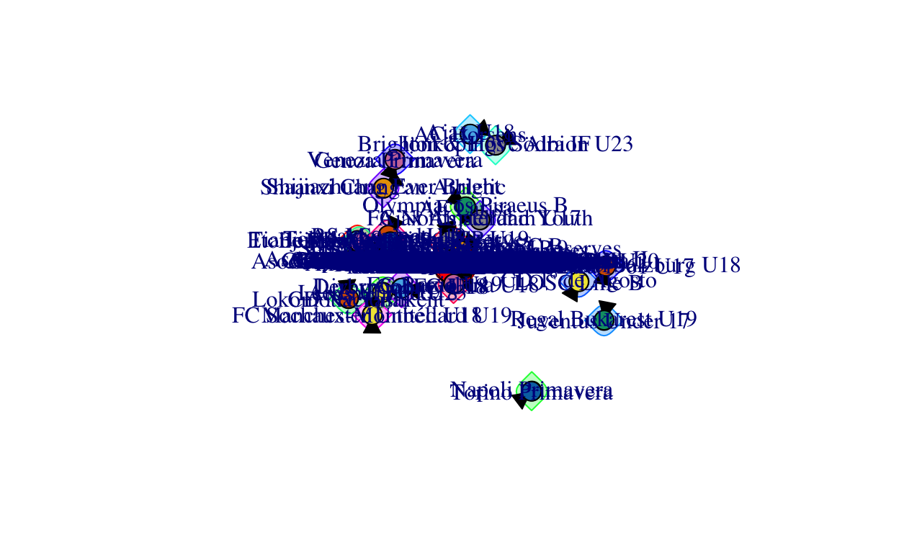
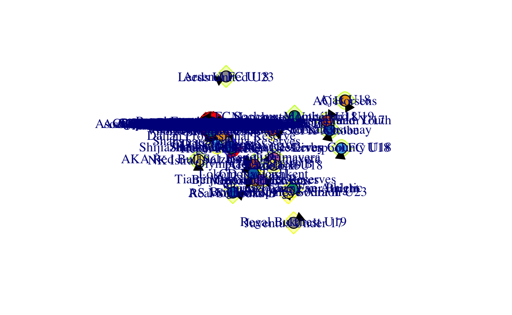
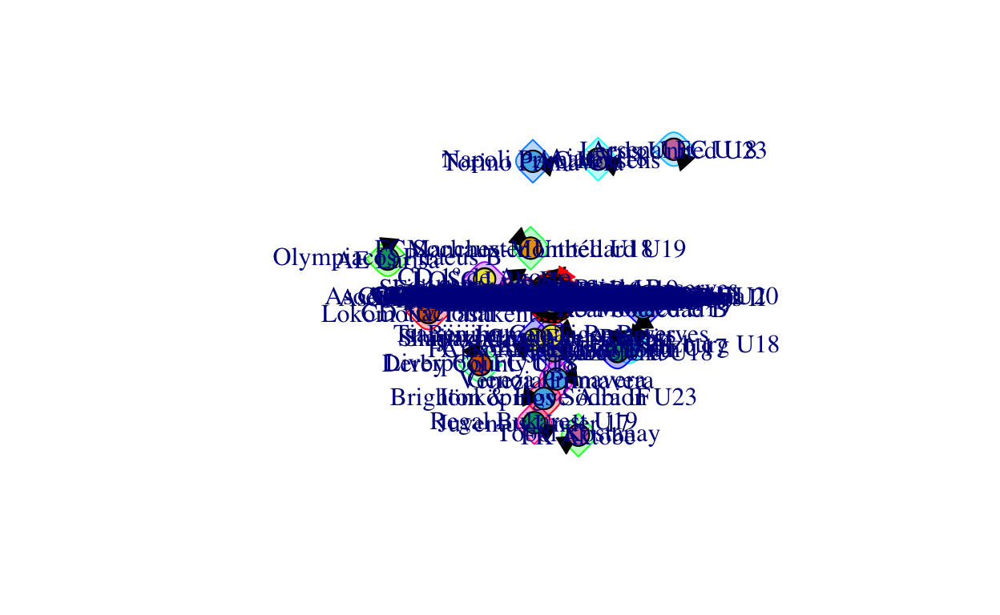
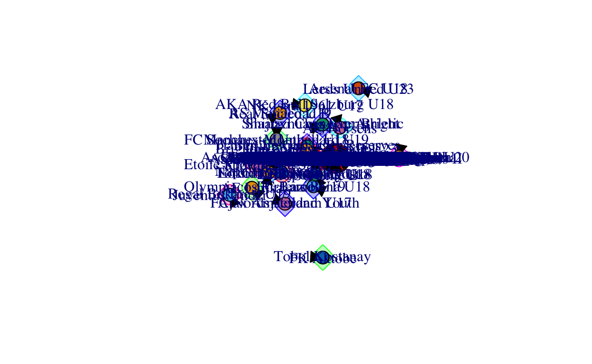
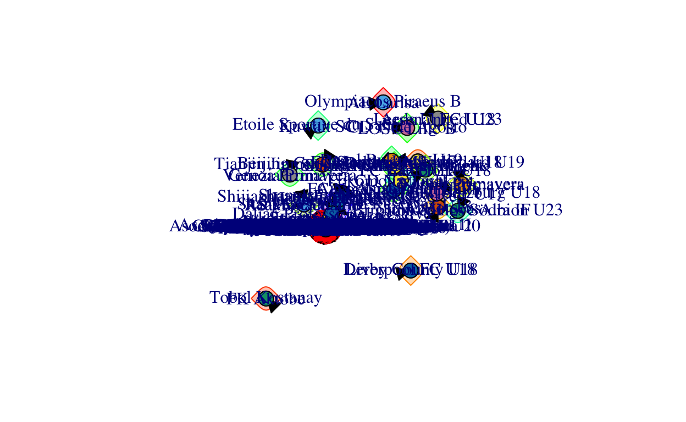

Detecting Communities in out Football Transfer Network
ig.undirected <- as.undirected(ig)
#Run clustering algorithm: fast_greedy
transfer.fg<-cluster_fast_greedy(ig.undirected)
#Inspect clustering object
names(transfer.fg)
[1] "merges" "modularity" "membership" "names" "algorithm"
[6] "vcount" transfer.fg
IGRAPH clustering fast greedy, groups: 32, mod: 0.35
+ groups:
$`1`
[1] "Brighton & Hove Albion" "Olympique Lyon"
[3] "Tottenham Hotspur" "PSV Eindhoven"
[5] "Burnley FC" "Southampton FC"
[7] "Arsenal FC" "Sheffield United"
[9] "LOSC Lille" "Borussia Mönchengladbach"
[11] "Real Betis Balompié" "Fulham FC"
[13] "AFC Bournemouth" "Club Brugge KV"
[15] "Bologna FC 1909" "West Bromwich Albion"
[17] "Blackburn Rovers" "SCO Angers"
+ ... omitted several groups/vertices#retrieve list of nodes in communities
igraph::groups(transfer.fg)
$`1`
[1] "Brighton & Hove Albion" "Olympique Lyon"
[3] "Tottenham Hotspur" "PSV Eindhoven"
[5] "Burnley FC" "Southampton FC"
[7] "Arsenal FC" "Sheffield United"
[9] "LOSC Lille" "Borussia Mönchengladbach"
[11] "Real Betis Balompié" "Fulham FC"
[13] "AFC Bournemouth" "Club Brugge KV"
[15] "Bologna FC 1909" "West Bromwich Albion"
[17] "Blackburn Rovers" "SCO Angers"
[19] "KAA Gent" "AZ Alkmaar"
[21] "Celtic FC" "Stade Brestois 29"
[23] "Stoke City" "FC Nantes"
[25] "Pogon Szczecin" "FC Metz"
[27] "FC Lorient" "Orlando City SC"
[29] "Shanghai Port" "Leicester City U23"
[31] "New England Revolution" "RSC Charleroi"
[33] "Royale Union Saint Gilloise" "OGC Nice"
[35] "Parma Calcio 1913" "Trabzonspor"
[37] "Malmö FF" "HNK Hajduk Split"
[39] "FC Groningen" "Vissel Kobe"
[41] "Atlético Nacional" "Cardiff City"
[43] "Villarreal CF" "SSC Napoli"
[45] "Huddersfield Town" "Royal Antwerp FC"
[47] "KV Oostende" "Swansea City"
[49] "Hammarby IF" "Sarpsborg 08 FF"
[51] "Willem II Tilburg" "FC Lausanne-Sport"
[53] "IF Elfsborg" "Spezia Calcio"
[55] "Liverpool FC U23" "Hokkaido Consadole Sapporo"
[57] "Lech Poznan" "Derby County"
[59] "Toronto FC" "TSG 1899 Hoffenheim"
[61] "Paradou AC" "Legia Warszawa"
[63] "Independiente del Valle" "FC Utrecht U21"
[65] "Kawasaki Frontale" "Al-Shabab FC (Riyadh)"
[67] "New York Red Bulls" "Philadelphia Union"
[69] "FCSB" "Sint-Truidense VV"
[71] "VVV-Venlo" "SV Zulte Waregem"
[73] "KRC Genk" "AC Le Havre"
[75] "Milan Primavera" "DAC Dunajska Streda"
[77] "FC Viktoria Plzen" "Belenenses SAD"
[79] "CD Feirense" "Ipswich Town"
[81] "NK Maribor" "IFK Göteborg"
[83] "Jagiellonia Bialystok" "AS Saint-Étienne"
[85] "Real Sociedad" "Clermont Foot 63"
[87] "Ajax Amsterdam U21" "KV Kortrijk"
[89] "Levante UD" "FC Zürich"
[91] "1.FC Heidenheim 1846" "Heracles Almelo"
[93] "Bristol City" "NEC Nijmegen"
[95] "Wigan Athletic" "AS Monaco B"
[97] "Motherwell FC" "Persepolis FC"
[99] "Genclerbirligi Ankara" "Le Mans FC"
[101] "Preston North End" "Barnsley FC"
[103] "NAC Breda" "Royal Excel Mouscron"
[105] "Paris FC Youth" "Beerschot V.A."
[107] "Heart of Midlothian FC" "FC Viitorul Constanta"
[109] "Doncaster Rovers" "Hammarby IF U19"
[111] "Desna Chernigiv" "Randers FC"
[113] "Aris Thessaloniki" "Esbjerg fB"
[115] "Wellington Phoenix" "Newcastle United"
[117] "EA Guingamp" "ADO Den Haag"
[119] "Portsmouth FC" "Besiktas JK"
[121] "SSV Jahn Regensburg" "Sunderland AFC"
[123] "Rotherham United" "Bnei Yehuda Tel Aviv"
[125] "Excelsior Rotterdam" "Hapoel Beer Sheva"
[127] "PSV Eindhoven U21" "Leixões SC U23"
[129] "Fulham FC U18" "Jiangsu Suning"
[131] "Real SC" "Mamelodi Sundowns FC"
[133] "Tema Youth SC" "Chelsea FC U18"
[135] "Esporte Clube Vitória" "Sportivo Luqueño"
[137] "Istanbulspor" "SCG Muangthong United"
[139] "Tottenham Hotspur U23" "FC Nantes U17"
[141] "Maccabi Netanya" "Ironi Kiryat Shmona"
[143] "Hapoel Haifa" "San Jose Earthquakes"
[145] "Al-Ittihad Kalba SC" "Al-Khor SC"
[147] "Dalian Yifang" "Guangzhou R&F"
[149] "Chicago Fire" "Arka Gdynia"
$`2`
[1] "FK Aktobe" "Tobol Kostanay"
$`3`
[1] "Aston Villa"
[2] "FC Barcelona"
[3] "Manchester City"
[4] "Sporting CP"
[5] "Atlético de Madrid"
[6] "Norwich City"
[7] "Udinese Calcio"
[8] "Everton FC"
[9] "Dynamo Kyiv"
[10] "Getafe CF"
[11] "SL Benfica"
[12] "Wolverhampton Wanderers"
[13] "Grêmio Foot-Ball Porto Alegrense"
[14] "Rangers FC"
[15] "Vitória Guimarães SC"
[16] "PAOK Thessaloniki"
[17] "SC Braga"
[18] "SV Werder Bremen"
[19] "Real Valladolid CF"
[20] "Olympiacos Piraeus"
[21] "Watford FC"
[22] "Atletico River Plate Montevideo"
[23] "FC Famalicão"
[24] "CA Peñarol"
[25] "Club Athletico Paranaense"
[26] "SD Huesca"
[27] "Valencia CF"
[28] "Los Angeles FC"
[29] "Sport Club Corinthians Paulista"
[30] "Sparta Rotterdam"
[31] "UD Almería"
[32] "Bayern Munich"
[33] "SC Farense"
[34] "Deportes Tolima"
[35] "Middlesbrough FC"
[36] "Charlotte FC"
[37] "GD Estoril Praia"
[38] "Moreirense FC"
[39] "Granada CF"
[40] "Hibernian FC"
[41] "Envigado FC"
[42] "Real Madrid Castilla"
[43] "Colorado Rapids"
[44] "Brentford FC"
[45] "Club Atlético Huracán"
[46] "LDU Quito"
[47] "Slovan Bratislava"
[48] "CD Leganés"
[49] "Djurgårdens IF"
[50] "Associação Atlética Ponte Preta"
[51] "MOL Fehérvár FC"
[52] "Girona FC"
[53] "Vancouver Whitecaps FC"
[54] "FC St. Gallen 1879"
[55] "Montevideo Wanderers"
[56] "LKS Lodz"
[57] "Celta de Vigo"
[58] "Peterborough United"
[59] "Deportes La Serena"
[60] "Grenoble Foot 38"
[61] "Dalian Professional"
[62] "RCD Espanyol Barcelona"
[63] "Nottingham Forest"
[64] "Wolfsberger AC"
[65] "CD Tenerife"
[66] "FC Paris Saint-Germain B"
[67] "CA Fénix"
[68] "Aberdeen FC"
[69] "Valencia Mestalla"
[70] "Charlton Athletic"
[71] "Málaga CF"
[72] "Serra Macaense Futebol Clube (RJ)"
[73] "UD Las Palmas"
[74] "Rayo Vallecano"
[75] "Club Universidad de Chile"
[76] "Altay SK"
[77] "Bristol Rovers"
[78] "1.FC Slovacko"
[79] "Leeds United"
[80] "Cádiz CF"
[81] "Sporting Gijón"
[82] "Coventry City"
[83] "Al-Hilal Riyadh"
[84] "Guangzhou Evergrande Taobao"
[85] "Tianjin Teda"
[86] "Vitória Setúbal FC"
[87] "Córdoba CF"
[88] "Al-Faisaly Harmah"
[89] "Júbilo Iwata"
[90] "Zhejiang Energy Greentown"
[91] "Millwall FC"
[92] "SK Dnipro-1"
[93] "Extremadura UD (-2022)"
[94] "CD Lugo"
[95] "Panathinaikos Athens"
[96] "Slaven Belupo Koprivnica"
[97] "FK Vozdovac"
[98] "Asociación Atlética Argentinos Juniors U20"
[99] "Stevenage FC"
[100] "Daejeon Citizen"
[101] "Club Africain Tunis"
[102] "Melbourne City FC"
[103] "Al-Wahda FC Abu Dhabi"
[104] "Al-Sadd SC"
[105] "Al-Batin FC"
[106] "Damac FC"
[107] "Wuhan Zall"
[108] "Zhejiang Greentown"
[109] "SV Darmstadt 98"
$`4`
[1] "CA River Plate"
[2] "CA Vélez Sarsfield"
[3] "Fluminense Football Club"
[4] "Club Atlético Independiente"
[5] "Santos Laguna"
[6] "Club Atlético Lanús"
[7] "Guangzhou FC"
[8] "Atlanta United FC"
[9] "Manchester City U23"
[10] "Club Atlético Talleres"
[11] "CD Cruz Azul"
[12] "Atlas Guadalajara"
[13] "CF América"
[14] "CA Banfield"
[15] "CF Monterrey"
[16] "Sporting Kansas City"
[17] "CF Pachuca"
[18] "Mazatlán FC"
[19] "Club Estudiantes de La Plata"
[20] "São Paulo Futebol Clube"
[21] "Tigres UANL"
[22] "CA Newell's Old Boys"
[23] "Club Cerro Porteño"
[24] "CA Rosario Central"
[25] "Cruzeiro Esporte Clube"
[26] "Ferencvárosi TC"
[27] "UNAM Pumas"
[28] "Inter Miami CF"
[29] "CA Colon"
[30] "Hebei FC"
[31] "Club Libertad Asunción"
[32] "CD América de Cali"
[33] "Esporte Clube Bahia"
[34] "Chicago Fire FC"
[35] "Club Tijuana"
[36] "Club Atlético Unión"
[37] "Danubio FC"
[38] "Stabæk Fotball"
[39] "Club Necaxa"
[40] "Millonarios FC"
[41] "SL Benfica B"
[42] "Göztepe"
[43] "Club Alianza Lima"
[44] "Puebla FC"
[45] "Portland Timbers"
[46] "Nashville SC"
[47] "Liverpool FC Montevideo"
[48] "Columbus Crew"
[49] "Wisla Kraków"
[50] "Sport Club do Recife"
[51] "FK Cukaricki"
[52] "FC Sheriff Tiraspol"
[53] "Club Atlético Atlanta"
[54] "Atlético de Rafaela"
[55] "Club Atlético Tucuman"
[56] "Racing Club"
[57] "Esteghlal FC"
[58] "Atlético de San Luis"
[59] "Olimpia Asunción"
[60] "SK Dynamo Ceske Budejovice"
[61] "FC Lugano"
[62] "FK TSC Backa Topola"
[63] "Juventus Primavera"
[64] "Coritiba Foot Ball Club"
[65] "FC Basel 1893 U18"
[66] "Club León FC"
[67] "Beitar Jerusalem"
[68] "Houston Dynamo FC"
[69] "Querétaro FC"
[70] "Shanghai Shenhua"
[71] "Juventud de Las Piedras"
[72] "CD Godoy Cruz Antonio Tomba"
[73] "Amiens SC U19"
[74] "Chongqing Liangjiang Athletic"
[75] "Deportivo Cali"
[76] "FC Paços de Ferreira"
[77] "Barcelona SC Guayaquil"
[78] "Pakhtakor Tashkent"
[79] "FC Cincinnati"
[80] "Meizhou Hakka"
[81] "Budapest Honvéd FC"
[82] "Instituto AC Córdoba"
[83] "Club Deportivo Riestra"
[84] "Johor Darul Ta'zim"
[85] "Deportivo Guadalajara"
[86] "FC Sion U21"
[87] "Universidad San Martín de Porres"
[88] "Columbus Crew SC"
[89] "Tiburones Rojos de Veracruz"
[90] "CS Emelec"
[91] "Al-Taawoun FC"
[92] "Monarcas Morelia"
[93] "West Bromwich Albion U18"
[94] "Audax Italiano"
[95] "Karpaty Lviv (-2021)"
[96] "Montevideo City Torque"
[97] "Criciúma Esporte Clube"
[98] "CD Palestino"
[99] "Shenzhen FC"
[100] "CD O'Higgins"
[101] "Al-Nassr Riad"
[102] "Cimarrones de Sonora"
[103] "Guayaquil City FC"
[104] "Club Atlético Aldosivi"
[105] "Club Atlético Belgrano"
[106] "Al-Rayyan SC"
[107] "Deportivo Toluca"
[108] "Montreal Impact"
[109] "Yanbian Funde"
[110] "Defensor Sporting Club"
[111] "Independiente Medellín"
[112] "Sevilla Atlético"
[113] "Club Nacional Asunción"
[114] "Independiente Santa Fe"
[115] "CF Monterrey II"
[116] "CA Central Córdoba (SdE)"
[117] "FC Baniyas"
[118] "CF Montréal"
[119] "FC Shabab Al-Ahli Dubai"
[120] "FC Juárez"
[121] "Metalist Kharkiv"
[122] "Seattle Sounders FC"
[123] "UD Almería B"
[124] "Zhejiang FC"
[125] "Tokushima Vortis"
[126] "Asociación Atlética Argentinos Juniors II"
[127] "Qatar SC"
[128] "GNK Dinamo Zagreb II"
[129] "Sassuolo Primavera"
[130] "Manchester United Youth"
[131] "Ajman Club"
$`5`
[1] "Inter Milan"
[2] "Borussia Dortmund"
[3] "ACF Fiorentina"
[4] "Real Madrid"
[5] "Juventus FC"
[6] "Chelsea FC"
[7] "Bayer 04 Leverkusen"
[8] "Manchester United"
[9] "Brescia Calcio"
[10] "Hellas Verona"
[11] "Atalanta BC"
[12] "Ajax Amsterdam"
[13] "Clube de Regatas do Flamengo"
[14] "FC Empoli"
[15] "Leicester City"
[16] "AS Roma"
[17] "Standard Liège"
[18] "US Sassuolo"
[19] "Santos FC"
[20] "UC Sampdoria"
[21] "Cagliari Calcio"
[22] "Olympique Marseille"
[23] "AC Milan"
[24] "FC Crotone"
[25] "Torino FC"
[26] "Genoa CFC"
[27] "Delfino Pescara 1936"
[28] "Shakhtar Donetsk"
[29] "FC Utrecht"
[30] "CA Boca Juniors"
[31] "Frosinone Calcio"
[32] "Red Star Belgrade"
[33] "Maccabi Petah Tikva"
[34] "Defensa y Justicia"
[35] "CSKA-Sofia"
[36] "Club de Regatas Vasco da Gama"
[37] "FC Nordsjaelland U19"
[38] "Lechia Gdansk"
[39] "US Lecce"
[40] "Calcio Padova"
[41] "AS Cittadella"
[42] "Górnik Zabrze"
[43] "Benevento Calcio"
[44] "Luton Town"
[45] "Birmingham City"
[46] "Três Passos Atlético Clube"
[47] "Asteras Tripolis"
[48] "1.FC Kaiserslautern"
[49] "TP Mazembe"
[50] "Spartaks Jurmala"
[51] "CA River Plate II"
[52] "Empoli FC"
[53] "Shanghai Greenland Shenhua"
[54] "Goiás Esporte Clube"
[55] "Club de Gimnasia y Esgrima La Plata"
[56] "FK Mlada Boleslav"
[57] "Chievo Verona"
[58] "Chongqing Dangdai Lifan"
[59] "Changchun Yatai"
[60] "AC Perugia Calcio"
[61] "Zorya Lugansk"
[62] "CD Atlético Huila"
[63] "Dinamo Moscow"
[64] "Virtus Entella"
[65] "Athletic Bilbao"
[66] "US Palermo"
[67] "Ascoli Calcio"
[68] "Cracovia"
[69] "Wisla Plock"
[70] "Huachipato FC"
[71] "Liaoning FC"
[72] "Shanghai Shenxin"
[73] "Sydney FC"
[74] "Henan Jianye"
[75] "BATE Borisov"
[76] "FK Napredak Krusevac"
[77] "Qadsia SC"
[78] "Hellas Verona Primavera"
[79] "Cuiabá Esporte Clube (MT)"
[80] "Al-Hazem SC"
[81] "Samsunspor"
[82] "Spartak 2 Moscow"
[83] "Gaziantep FK"
$`6`
[1] "RB Leipzig"
[2] "FC Porto"
[3] "Red Bull Salzburg"
[4] "Sevilla FC"
[5] "Sport Club Internacional"
[6] "FC Schalke 04"
[7] "FC Barcelona B"
[8] "Zenit St. Petersburg"
[9] "Paris Saint-Germain"
[10] "GNK Dinamo Zagreb"
[11] "RC Strasbourg Alsace"
[12] "Liverpool FC"
[13] "Montpellier HSC"
[14] "Sociedade Esportiva Palmeiras"
[15] "AS Monaco"
[16] "FC Basel 1893"
[17] "Lokomotiv Moscow"
[18] "Red Bull Bragantino"
[19] "Spartak Moscow"
[20] "FC Girondins Bordeaux"
[21] "Clube Atlético Mineiro"
[22] "SM Caen"
[23] "Rakow Czestochowa"
[24] "Ural Yekaterinburg"
[25] "Nîmes Olympique"
[26] "Deportivo Alavés"
[27] "NK Lokomotiva Zagreb"
[28] "Juventus U23"
[29] "CD Santa Clara"
[30] "Arsenal Tula"
[31] "Club Nacional"
[32] "Beijing Guoan"
[33] "Shakhtar Donetsk U19"
[34] "Rio Ave FC"
[35] "Krylya Sovetov Samara"
[36] "Unión Española"
[37] "Portimonense SC"
[38] "Gil Vicente FC"
[39] "Boavista FC"
[40] "Los Angeles Galaxy"
[41] "Molde FK"
[42] "Hércules CF"
[43] "Fortaleza Esporte Clube"
[44] "Associação Chapecoense de Futebol"
[45] "Botafogo de Futebol e Regatas"
[46] "FC Dinamo 1948"
[47] "Deportivo de La Coruña"
[48] "Club Guaraní"
[49] "SD Eibar"
[50] "Wydad Casablanca"
[51] "Valenciennes FC"
[52] "Oeste Futebol Clube (SP)"
[53] "Tombense Futebol Clube (MG)"
[54] "FK Partizan Belgrade"
[55] "Fortuna Düsseldorf"
[56] "Kashiwa Reysol"
[57] "FC Sion"
[58] "ESTAC Troyes"
[59] "Pyramids FC"
[60] "Olympique de Marseille B"
[61] "Apollon Limassol"
[62] "Zamalek SC"
[63] "HNK Sibenik"
[64] "Junior FC"
[65] "Urawa Red Diamonds"
[66] "LB Châteauroux"
[67] "SpVgg Unterhaching"
[68] "Zenit 2 St. Petersburg"
[69] "FC Pro Vercelli 1892"
[70] "Real Salt Lake City"
[71] "CFR Cluj"
[72] "Shakhter Soligorsk"
[73] "FC St. Pauli"
[74] "Esporte Clube Juventude"
[75] "AC Ajaccio"
[76] "Hertha BSC U19"
[77] "PFK Tambov"
[78] "Cercle Brugge"
[79] "CD Universidad Católica"
[80] "Rosenborg BK"
[81] "Al-Duhail SC"
[82] "AJ Auxerre"
[83] "Club Atlético Newell's Old Boys II"
[84] "Waasland-Beveren"
[85] "Empoli Primavera"
[86] "Lyngby BK Youth"
[87] "Albirex Niigata"
[88] "Bologna Primavera"
[89] "NK Domzale U17"
[90] "KAS Eupen"
[91] "AD São Caetano (SP)"
[92] "Team Vaud U18"
[93] "Albacete Balompié"
[94] "Red Star FC"
[95] "CD Tondela"
[96] "Ismaily SC"
[97] "Al-Shorta SC"
[98] "Shimizu S-Pulse"
[99] "CA Boston River"
[100] "Sampdoria Primavera"
[101] "SpVgg Unterhaching U19"
[102] "Guizhou Hengfeng"
[103] "Beijing Renhe"
[104] "Spezia Primavera"
[105] "Yokohama F. Marinos"
[106] "Ulsan Hyundai"
[107] "CA Rentistas"
[108] "Genoa Under 17"
[109] "Austin FC"
[110] "FC Sochi"
[111] "Al-Raed"
[112] "Al-Fayha FC"
[113] "Tianjin Jinmen Tiger"
[114] "AC Pisa 1909"
[115] "Henan Songshan Longmen"
[116] "Villarreal CF B"
[117] "Lion City Sailors"
[118] "Al-Gharafa SC"
[119] "Dundee United FC"
[120] "Shandong Luneng Taishan"
[121] "West Ham United U23"
[122] "Inter Milan Primavera"
[123] "Al-Wahda Mekka"
[124] "MOL Vidi FC"
[125] "KSC Lokeren (- 2020)"
$`7`
[1] "Stade Rennais FC"
[2] "Hertha BSC"
[3] "VfB Stuttgart"
[4] "VfL Wolfsburg"
[5] "RSC Anderlecht"
[6] "RC Lens"
[7] "FC Dallas"
[8] "Rubin Kazan"
[9] "FC Nordsjaelland"
[10] "SC Freiburg"
[11] "Stade Reims"
[12] "1. FC Köln"
[13] "FK Rostov"
[14] "FC Copenhagen"
[15] "Sharjah Cultural Sports Club"
[16] "FC Midtjylland"
[17] "1.FC Union Berlin"
[18] "RCD Mallorca"
[19] "KV Mechelen"
[20] "Amiens SC"
[21] "Rapid Vienna"
[22] "FK Krasnodar"
[23] "Dynamo Moscow"
[24] "FC Augsburg"
[25] "Hamburger SV"
[26] "New York City FC"
[27] "BSC Young Boys"
[28] "D.C. United"
[29] "SK Sturm Graz"
[30] "IFK Norrköping"
[31] "Universitatea Craiova"
[32] "Oud-Heverlee Leuven"
[33] "FK Bodø/Glimt"
[34] "Istanbul Basaksehir FK"
[35] "HNK Gorica"
[36] "Vejle Boldklub"
[37] "Dijon FCO"
[38] "Alanyaspor"
[39] "Twente Enschede FC"
[40] "FC Erzgebirge Aue"
[41] "1.FC Nuremberg"
[42] "Hannover 96"
[43] "FC Volendam"
[44] "Kayserispor"
[45] "AA Argentinos Juniors"
[46] "Raja Club Athletic"
[47] "MTK Budapest"
[48] "Akhmat Grozny"
[49] "Antalyaspor"
[50] "Ludogorets Razgrad"
[51] "Dinamo Tbilisi"
[52] "Minnesota United FC"
[53] "Pordenone Calcio"
[54] "NK Osijek"
[55] "Roma Primavera"
[56] "HNK Rijeka"
[57] "SC Paderborn 07"
[58] "FC Bayern Munich II"
[59] "Al-Jazira (Abu Dhabi)"
[60] "Borussia Dortmund II"
[61] "Aarhus GF"
[62] "Al-Ettifaq"
[63] "VfL Bochum"
[64] "Elche CF"
[65] "Maccabi Tel Aviv"
[66] "Al-Ittihad Jeddah"
[67] "Palermo FC"
[68] "AIK Solna"
[69] "Sivasspor"
[70] "AEK Athens"
[71] "LASK"
[72] "Club Atlético Platense"
[73] "FC Sochaux-Montbéliard"
[74] "FC Admira Wacker Mödling"
[75] "Galatasaray A.S."
[76] "Al Qadisiyah FC"
[77] "Konyaspor"
[78] "Kasimpasa"
[79] "Arminia Bielefeld"
[80] "FK Orenburg"
[81] "Odense Boldklub"
[82] "Ceará Sporting Club"
[83] "Chamois Niortais FC"
[84] "Austria Vienna"
[85] "Holstein Kiel"
[86] "FK Radnik Surdulica"
[87] "Atlético Clube Goianiense"
[88] "Zaglebie Lubin"
[89] "Real Zaragoza"
[90] "FK Ufa"
[91] "FC Luzern"
[92] "CA Osasuna"
[93] "Grasshopper Club Zurich"
[94] "Helsingborgs IF"
[95] "1.FC Magdeburg"
[96] "Yokohama FC"
[97] "Aalborg BK"
[98] "Everton FC U23"
[99] "Astra Giurgiu"
[100] "El Ahly Cairo"
[101] "FC Astana"
[102] "APOEL Nicosia"
[103] "PEC Zwolle"
[104] "Würzburger Kickers"
[105] "GD Chaves"
[106] "Lyngby BK"
[107] "Levski Sofia"
[108] "Östersunds FK"
[109] "FC Tokyo"
[110] "Paris FC"
[111] "Al-Wasl Sports Club"
[112] "FC Thun"
[113] "SSD Palermo"
[114] "SG Dynamo Dresden"
[115] "SV Sandhausen"
[116] "Tianjin Tianhai (-2019)"
[117] "Arsenal FC U23"
[118] "Sporting CP U23"
[119] "IF Brommapojkarna"
[120] "Venezia FC"
[121] "Eintracht Braunschweig"
[122] "FC Ingolstadt 04"
[123] "Al-Ain FC"
[124] "Masr El Makasa"
[125] "Arminia Bielefeld U19"
[126] "MSV Duisburg"
[127] "AS Trencin"
[128] "Maccabi Haifa"
[129] "Akhisarspor"
[130] "FUS Rabat"
[131] "Hapoel Raanana"
[132] "Wadi Degla FC"
[133] "Enppi SC"
[134] "Dinamo Batumi"
[135] "Adana Demirspor"
[136] "Vitesse Arnhem"
[137] "Lommel SK"
[138] "AC Monza"
[139] "Pisa Sporting Club"
[140] "Slask Wroclaw"
[141] "MKE Ankaragücü"
[142] "Kairat Almaty"
[143] "Büyüksehir Belediye Erzurumspor"
$`8`
[1] "Eintracht Frankfurt" "CSKA Moscow"
[3] "SS Lazio" "Chelsea FC U23"
[5] "Reading FC" "Feyenoord Rotterdam"
[7] "1.FSV Mainz 05" "SK Slavia Prague"
[9] "Fenerbahce SK" "West Ham United"
[11] "FC Toulouse" "Bröndby IF"
[13] "SC Heerenveen" "SPAL"
[15] "Fatih Karagümrük" "SpVgg Greuther Fürth"
[17] "BK Häcken" "CA San Lorenzo de Almagro"
[19] "Piast Gliwice" "Altinordu FK"
[21] "AC Sparta Prague" "MSK Zilina"
[23] "Vålerenga Fotball" "Bursaspor"
[25] "CSD Colo Colo" "Yeni Malatyaspor"
[27] "Pohang Steelers" "FC Slovan Liberec"
[29] "Shandong Taishan" "Crystal Palace"
[31] "Queens Park Rangers" "US Salernitana 1919"
[33] "Jeonbuk Hyundai Motors" "Oxford United"
[35] "GDSC Alvarenga Futebol SAD" "Guangzhou City"
[37] "SönderjyskE" "Livingston FC"
[39] "Al-Ahli Jeddah" "Cherno More Varna"
[41] "Hull City" "Silkeborg IF"
[43] "Fortuna Sittard" "SK Sigma Olomouc B"
[45] "Caykur Rizespor" "Shanghai SIPG"
[47] "Sheffield Wednesday" "Club Atlético Tigre"
[49] "Esperance Tunis" "Atlético de Madrid B"
[51] "FK Jablonec" "Osmanlispor FK"
[53] "Gamba Osaka" "Kashima Antlers"
[55] "Once Caldas" "NK Olimpija Ljubljana"
[57] "1.FK Pribram" "Wuhan Three Towns"
[59] "Nagoya Grampus" "FK Khimki"
[61] "Brentford FC B" "Puskás Akadémia FC"
[63] "Al-Ain" "Al-Nasr (Dubai)"
[65] "FC Emmen"
$`9`
[1] "Cosenza Calcio" "US Cremonese"
$`10`
[1] "RCD Mallorca U19" "Royal Excel Mouscron U21"
[3] "Fiorentina Primavera"
$`11`
[1] "AE Larisa" "Olympiacos Piraeus B"
$`12`
[1] "Arsenal FC U18" "Leeds United U23"
$`13`
[1] "Napoli Primavera" "Torino Primavera"
$`14`
[1] "Lokomotiv Tashkent" "CD Nacional"
$`15`
[1] "Etoile Sportive du Sahel" "Kuwait SC"
$`16`
[1] "Jönköpings Södra IF" "Brighton & Hove Albion U23"
$`17`
[1] "Wuhan FC"
[2] "Shanghai Shenhua U19"
[3] "Hebei FC Reserves"
[4] "Hebei China Fortune"
[5] "Shanghai Shenhua Reserves"
[6] "Renaissance de Berkane"
[7] "Gyeongnam FC"
[8] "Shijiazhuang Ever Bright Reserves"
[9] "Shenzhen FC Reserves"
[10] "Dalian Professional Reserve"
$`18`
[1] "AC Horsens" "Ajax U18"
$`19`
[1] "Regal Bukarest U19" "Juventus Under 17"
$`20`
[1] "CD 1º de Agosto" "LOSC Lille B"
$`21`
[1] "Tianjin Jinmen Tiger Reserves" "Beijing Guoan Reserves"
$`22`
[1] "NK Istra 1961 U17" "AKA Red Bull Salzburg U18"
$`23`
[1] "Venezia Primavera" "Genoa Primavera"
$`24`
[1] "FC Nordsjaelland Youth" "Ajax Amsterdam U17"
$`25`
[1] "Shaanxi Chang'an Athletic" "Shijiazhuang Ever Bright"
$`26`
[1] "Derby County U18" "Liverpool FC U18"
$`27`
[1] "Hatayspor" "Al-Arabi SC"
$`28`
[1] "FC Sochaux-Montbéliard U19" "Manchester United U18"
$`29`
[1] "Pescara Primavera" "Parma Primavera"
$`30`
[1] "AS Monaco U19" "Real Sociedad B"
$`31`
[1] "FC Barcelona U18" "Lazio U19"
$`32`
[1] "Vitória Guimarães SC B" "FC Porto U19"
[3] "FC Porto B" "Sporting CP U19" #Inspect community membership vector
transfer.fg$membership
[1] 3 5 5 5 5 6 3 1 3 7 6 8 5 1 5 3 3 3 3 1 5
[22] 3 6 1 8 1 7 6 8 1 1 5 1 1 1 5 5 6 6 6 1 5
[43] 6 6 1 1 3 8 1 7 5 5 1 3 4 5 4 7 6 3 1 1 6
[64] 1 5 5 7 1 7 1 1 6 7 5 3 6 7 6 6 3 7 1 6 7
[85] 8 6 1 3 7 4 7 3 7 32 5 7 3 1 3 4 8 5 6 3 32
[106] 1 8 8 5 5 8 6 4 4 7 1 7 1 1 4 7 4 8 1 5 5
[127] 1 6 7 3 1 27 7 3 1 6 4 4 4 7 7 5 7 7 8 5 7
[148] 5 7 8 3 1 4 8 8 3 4 1 1 5 5 1 1 7 7 3 4 7
[169] 7 7 7 1 4 3 5 1 3 6 4 4 3 4 3 5 3 7 5 4 4
[190] 1 1 3 6 3 7 6 7 1 3 3 4 6 1 6 1 4 1 7 4 4
[211] 1 3 4 7 1 7 8 1 5 1 3 32 5 6 7 1 4 7 4 4 5
[232] 6 3 4 7 7 4 4 4 4 3 4 7 8 1 1 7 1 3 7 1 1
[253] 4 1 8 6 6 8 1 3 3 1 7 1 1 3 6 7 1 4 1 4 1
[274] 6 6 3 1 5 1 4 7 5 7 1 4 4 3 8 7 1 3 6 4 1
[295] 7 7 7 3 3 1 6 7 3 4 6 7 4 5 6 3 7 7 7 1 3
[316] 1 4 7 3 7 1 6 3 6 6 4 1 4 7 7 4 5 8 7 7 4
[337] 7 4 7 8 7 8 4 1 5 7 4 5 6 7 5 8 3 6 1 1 6
[358] 6 4 7 8 7 3 1 1 7 6 3 7 7 7 4 5 4 4 3 8 4
[379] 7 1 6 3 3 3 7 4 7 5 7 5 7 7 8 4 6 1 6 6 6
[400] 1 7 3 4 7 3 3 11 4 6 8 6 7 1 6 8 7 7 7 8 4
[421] 4 1 7 2 1 3 8 1 8 3 3 8 5 4 1 6 1 1 6 1 1
[442] 4 6 3 1 5 3 7 3 7 8 4 4 3 1 28 4 4 4 1 4 6
[463] 1 7 6 1 1 26 3 6 7 6 1 7 4 5 4 4 1 8 8 7 6
[484] 4 8 17 17 1 7 1 3 8 6 1 7 4 17 7 8 1 3 6 8 6
[505] 6 5 7 8 7 18 5 1 8 3 6 4 22 6 4 1 4 4 4 7 1
[526] 1 7 6 3 12 1 1 7 1 4 8 6 3 8 7 4 3 9 6 6 3
[547] 7 6 1 3 6 5 1 13 1 7 6 6 1 6 6 3 6 8 7 7 6
[568] 1 7 5 3 7 1 6 7 4 4 1 6 5 5 3 6 1 4 4 7 5
[589] 4 4 5 30 31 8 3 8 5 4 8 4 7 4 5 7 3 4 4 3 7
[610] 8 1 25 1 1 7 3 8 6 29 4 24 8 7 4 8 1 1 29 6 6
[631] 6 6 4 7 5 17 17 3 6 5 3 21 5 6 3 3 5 7 5 6 8
[652] 4 7 6 5 3 1 1 4 4 1 7 1 6 4 8 7 20 3 1 6 1
[673] 6 6 7 6 6 4 5 4 4 6 4 4 3 1 5 1 5 3 5 7 3
[694] 17 4 17 4 6 5 7 1 6 5 8 6 1 5 1 1 3 1 23 6 7
[715] 6 17 5 4 5 7 1 1 3 4 3 5 1 3 1 3 4 4 19 7 1
[736] 10 4 3 7 8 8 1 4 5 7 4 7 3 6 1 15 7 6 6 3 8
[757] 6 7 6 3 10 16 7 4 7 14 5 3 5 4 5 1 7 32 3 27 6
[778] 8 7 7 6 7 8 1 4 7 5 4 1 5 7 5 4 4 9 6 4 8
[799] 6 4 8 11 8 7 2 6 3 28 26 7 4 8 8 17 3 6 6 3 18
[820] 6 22 6 4 4 4 12 10 13 1 6 8 7 5 6 30 31 6 4 25 24
[841] 5 6 17 21 3 5 6 20 6 4 4 1 1 23 1 3 19 4 6 7 4
[862] 1 15 16 14 6 3#Compare to vertex names vector
transfer.fg$names
[1] "Aston Villa"
[2] "Inter Milan"
[3] "Borussia Dortmund"
[4] "ACF Fiorentina"
[5] "Real Madrid"
[6] "RB Leipzig"
[7] "FC Barcelona"
[8] "Brighton & Hove Albion"
[9] "Manchester City"
[10] "Stade Rennais FC"
[11] "FC Porto"
[12] "Eintracht Frankfurt"
[13] "Juventus FC"
[14] "Olympique Lyon"
[15] "Chelsea FC"
[16] "Sporting CP"
[17] "Atlético de Madrid"
[18] "Norwich City"
[19] "Udinese Calcio"
[20] "Tottenham Hotspur"
[21] "Bayer 04 Leverkusen"
[22] "Everton FC"
[23] "Red Bull Salzburg"
[24] "PSV Eindhoven"
[25] "CSKA Moscow"
[26] "Burnley FC"
[27] "Hertha BSC"
[28] "Sevilla FC"
[29] "SS Lazio"
[30] "Southampton FC"
[31] "Arsenal FC"
[32] "Manchester United"
[33] "Sheffield United"
[34] "LOSC Lille"
[35] "Borussia Mönchengladbach"
[36] "Brescia Calcio"
[37] "Hellas Verona"
[38] "Sport Club Internacional"
[39] "FC Schalke 04"
[40] "FC Barcelona B"
[41] "Real Betis Balompié"
[42] "Atalanta BC"
[43] "Zenit St. Petersburg"
[44] "Paris Saint-Germain"
[45] "Fulham FC"
[46] "AFC Bournemouth"
[47] "Dynamo Kyiv"
[48] "Chelsea FC U23"
[49] "Club Brugge KV"
[50] "VfB Stuttgart"
[51] "Ajax Amsterdam"
[52] "Clube de Regatas do Flamengo"
[53] "Bologna FC 1909"
[54] "Getafe CF"
[55] "CA River Plate"
[56] "FC Empoli"
[57] "CA Vélez Sarsfield"
[58] "VfL Wolfsburg"
[59] "GNK Dinamo Zagreb"
[60] "SL Benfica"
[61] "West Bromwich Albion"
[62] "Blackburn Rovers"
[63] "RC Strasbourg Alsace"
[64] "SCO Angers"
[65] "Leicester City"
[66] "AS Roma"
[67] "RSC Anderlecht"
[68] "KAA Gent"
[69] "RC Lens"
[70] "AZ Alkmaar"
[71] "Celtic FC"
[72] "Liverpool FC"
[73] "FC Dallas"
[74] "Standard Liège"
[75] "Wolverhampton Wanderers"
[76] "Montpellier HSC"
[77] "Rubin Kazan"
[78] "Sociedade Esportiva Palmeiras"
[79] "AS Monaco"
[80] "Grêmio Foot-Ball Porto Alegrense"
[81] "FC Nordsjaelland"
[82] "Stade Brestois 29"
[83] "FC Basel 1893"
[84] "SC Freiburg"
[85] "Reading FC"
[86] "Lokomotiv Moscow"
[87] "Stoke City"
[88] "Rangers FC"
[89] "Stade Reims"
[90] "Fluminense Football Club"
[91] "1. FC Köln"
[92] "Vitória Guimarães SC"
[93] "FK Rostov"
[94] "Vitória Guimarães SC B"
[95] "US Sassuolo"
[96] "FC Copenhagen"
[97] "PAOK Thessaloniki"
[98] "FC Nantes"
[99] "SC Braga"
[100] "Club Atlético Independiente"
[101] "Feyenoord Rotterdam"
[102] "Santos FC"
[103] "Red Bull Bragantino"
[104] "SV Werder Bremen"
[105] "FC Porto U19"
[106] "Pogon Szczecin"
[107] "1.FSV Mainz 05"
[108] "SK Slavia Prague"
[109] "UC Sampdoria"
[110] "Cagliari Calcio"
[111] "Fenerbahce SK"
[112] "Spartak Moscow"
[113] "Santos Laguna"
[114] "Club Atlético Lanús"
[115] "Sharjah Cultural Sports Club"
[116] "FC Metz"
[117] "FC Midtjylland"
[118] "FC Lorient"
[119] "Orlando City SC"
[120] "Guangzhou FC"
[121] "1.FC Union Berlin"
[122] "Atlanta United FC"
[123] "West Ham United"
[124] "Shanghai Port"
[125] "Olympique Marseille"
[126] "AC Milan"
[127] "Leicester City U23"
[128] "FC Girondins Bordeaux"
[129] "RCD Mallorca"
[130] "Real Valladolid CF"
[131] "New England Revolution"
[132] "Hatayspor"
[133] "KV Mechelen"
[134] "Olympiacos Piraeus"
[135] "RSC Charleroi"
[136] "Clube Atlético Mineiro"
[137] "Manchester City U23"
[138] "Club Atlético Talleres"
[139] "CD Cruz Azul"
[140] "Amiens SC"
[141] "Rapid Vienna"
[142] "FC Crotone"
[143] "FK Krasnodar"
[144] "Dynamo Moscow"
[145] "FC Toulouse"
[146] "Torino FC"
[147] "FC Augsburg"
[148] "Genoa CFC"
[149] "Hamburger SV"
[150] "Bröndby IF"
[151] "Watford FC"
[152] "Royale Union Saint Gilloise"
[153] "Atlas Guadalajara"
[154] "SC Heerenveen"
[155] "SPAL"
[156] "Atletico River Plate Montevideo"
[157] "CF América"
[158] "OGC Nice"
[159] "Parma Calcio 1913"
[160] "Delfino Pescara 1936"
[161] "Shakhtar Donetsk"
[162] "Trabzonspor"
[163] "Malmö FF"
[164] "New York City FC"
[165] "BSC Young Boys"
[166] "FC Famalicão"
[167] "CA Banfield"
[168] "D.C. United"
[169] "SK Sturm Graz"
[170] "IFK Norrköping"
[171] "Universitatea Craiova"
[172] "HNK Hajduk Split"
[173] "CF Monterrey"
[174] "CA Peñarol"
[175] "FC Utrecht"
[176] "FC Groningen"
[177] "Club Athletico Paranaense"
[178] "SM Caen"
[179] "Sporting Kansas City"
[180] "CF Pachuca"
[181] "SD Huesca"
[182] "Mazatlán FC"
[183] "Valencia CF"
[184] "CA Boca Juniors"
[185] "Los Angeles FC"
[186] "Oud-Heverlee Leuven"
[187] "Frosinone Calcio"
[188] "Club Estudiantes de La Plata"
[189] "São Paulo Futebol Clube"
[190] "Vissel Kobe"
[191] "Atlético Nacional"
[192] "Sport Club Corinthians Paulista"
[193] "Rakow Czestochowa"
[194] "Sparta Rotterdam"
[195] "FK Bodø/Glimt"
[196] "Ural Yekaterinburg"
[197] "Istanbul Basaksehir FK"
[198] "Cardiff City"
[199] "UD Almería"
[200] "Bayern Munich"
[201] "Tigres UANL"
[202] "Nîmes Olympique"
[203] "Villarreal CF"
[204] "Deportivo Alavés"
[205] "SSC Napoli"
[206] "CA Newell's Old Boys"
[207] "Huddersfield Town"
[208] "HNK Gorica"
[209] "Club Cerro Porteño"
[210] "CA Rosario Central"
[211] "Royal Antwerp FC"
[212] "SC Farense"
[213] "Cruzeiro Esporte Clube"
[214] "Vejle Boldklub"
[215] "KV Oostende"
[216] "Dijon FCO"
[217] "Fatih Karagümrük"
[218] "Swansea City"
[219] "Red Star Belgrade"
[220] "Hammarby IF"
[221] "Deportes Tolima"
[222] "FC Porto B"
[223] "Maccabi Petah Tikva"
[224] "NK Lokomotiva Zagreb"
[225] "Alanyaspor"
[226] "Sarpsborg 08 FF"
[227] "Ferencvárosi TC"
[228] "Twente Enschede FC"
[229] "UNAM Pumas"
[230] "Inter Miami CF"
[231] "Defensa y Justicia"
[232] "Juventus U23"
[233] "Middlesbrough FC"
[234] "CA Colon"
[235] "FC Erzgebirge Aue"
[236] "1.FC Nuremberg"
[237] "Hebei FC"
[238] "Club Libertad Asunción"
[239] "CD América de Cali"
[240] "Esporte Clube Bahia"
[241] "Charlotte FC"
[242] "Chicago Fire FC"
[243] "Hannover 96"
[244] "SpVgg Greuther Fürth"
[245] "Willem II Tilburg"
[246] "FC Lausanne-Sport"
[247] "FC Volendam"
[248] "IF Elfsborg"
[249] "GD Estoril Praia"
[250] "Kayserispor"
[251] "Spezia Calcio"
[252] "Liverpool FC U23"
[253] "Club Tijuana"
[254] "Hokkaido Consadole Sapporo"
[255] "BK Häcken"
[256] "CD Santa Clara"
[257] "Arsenal Tula"
[258] "CA San Lorenzo de Almagro"
[259] "Lech Poznan"
[260] "Moreirense FC"
[261] "Granada CF"
[262] "Derby County"
[263] "AA Argentinos Juniors"
[264] "Toronto FC"
[265] "TSG 1899 Hoffenheim"
[266] "Hibernian FC"
[267] "Club Nacional"
[268] "Raja Club Athletic"
[269] "Paradou AC"
[270] "Club Atlético Unión"
[271] "Legia Warszawa"
[272] "Danubio FC"
[273] "Independiente del Valle"
[274] "Beijing Guoan"
[275] "Shakhtar Donetsk U19"
[276] "Envigado FC"
[277] "FC Utrecht U21"
[278] "CSKA-Sofia"
[279] "Kawasaki Frontale"
[280] "Stabæk Fotball"
[281] "MTK Budapest"
[282] "Club de Regatas Vasco da Gama"
[283] "Akhmat Grozny"
[284] "Al-Shabab FC (Riyadh)"
[285] "Club Necaxa"
[286] "Millonarios FC"
[287] "Real Madrid Castilla"
[288] "Piast Gliwice"
[289] "Antalyaspor"
[290] "New York Red Bulls"
[291] "Colorado Rapids"
[292] "Rio Ave FC"
[293] "SL Benfica B"
[294] "Philadelphia Union"
[295] "Ludogorets Razgrad"
[296] "Dinamo Tbilisi"
[297] "Minnesota United FC"
[298] "Brentford FC"
[299] "Club Atlético Huracán"
[300] "FCSB"
[301] "Krylya Sovetov Samara"
[302] "Pordenone Calcio"
[303] "LDU Quito"
[304] "Göztepe"
[305] "Unión Española"
[306] "NK Osijek"
[307] "Club Alianza Lima"
[308] "FC Nordsjaelland U19"
[309] "Portimonense SC"
[310] "Slovan Bratislava"
[311] "Roma Primavera"
[312] "HNK Rijeka"
[313] "SC Paderborn 07"
[314] "Sint-Truidense VV"
[315] "CD Leganés"
[316] "VVV-Venlo"
[317] "Puebla FC"
[318] "FC Bayern Munich II"
[319] "Djurgårdens IF"
[320] "Al-Jazira (Abu Dhabi)"
[321] "SV Zulte Waregem"
[322] "Gil Vicente FC"
[323] "Associação Atlética Ponte Preta"
[324] "Boavista FC"
[325] "Los Angeles Galaxy"
[326] "Portland Timbers"
[327] "KRC Genk"
[328] "Nashville SC"
[329] "Borussia Dortmund II"
[330] "Aarhus GF"
[331] "Liverpool FC Montevideo"
[332] "Lechia Gdansk"
[333] "Altinordu FK"
[334] "Al-Ettifaq"
[335] "VfL Bochum"
[336] "Columbus Crew"
[337] "Elche CF"
[338] "Wisla Kraków"
[339] "Maccabi Tel Aviv"
[340] "AC Sparta Prague"
[341] "Al-Ittihad Jeddah"
[342] "MSK Zilina"
[343] "Sport Club do Recife"
[344] "AC Le Havre"
[345] "US Lecce"
[346] "Palermo FC"
[347] "FK Cukaricki"
[348] "Calcio Padova"
[349] "Molde FK"
[350] "AIK Solna"
[351] "AS Cittadella"
[352] "Vålerenga Fotball"
[353] "MOL Fehérvár FC"
[354] "Hércules CF"
[355] "Milan Primavera"
[356] "DAC Dunajska Streda"
[357] "Fortaleza Esporte Clube"
[358] "Associação Chapecoense de Futebol"
[359] "FC Sheriff Tiraspol"
[360] "Sivasspor"
[361] "Bursaspor"
[362] "AEK Athens"
[363] "Girona FC"
[364] "FC Viktoria Plzen"
[365] "Belenenses SAD"
[366] "LASK"
[367] "Botafogo de Futebol e Regatas"
[368] "Vancouver Whitecaps FC"
[369] "Club Atlético Platense"
[370] "FC Sochaux-Montbéliard"
[371] "FC Admira Wacker Mödling"
[372] "Club Atlético Atlanta"
[373] "Górnik Zabrze"
[374] "Atlético de Rafaela"
[375] "Club Atlético Tucuman"
[376] "FC St. Gallen 1879"
[377] "CSD Colo Colo"
[378] "Racing Club"
[379] "Galatasaray A.S."
[380] "CD Feirense"
[381] "FC Dinamo 1948"
[382] "Montevideo Wanderers"
[383] "LKS Lodz"
[384] "Celta de Vigo"
[385] "Al Qadisiyah FC"
[386] "Esteghlal FC"
[387] "Konyaspor"
[388] "Benevento Calcio"
[389] "Kasimpasa"
[390] "Luton Town"
[391] "Arminia Bielefeld"
[392] "FK Orenburg"
[393] "Yeni Malatyaspor"
[394] "Atlético de San Luis"
[395] "Deportivo de La Coruña"
[396] "Ipswich Town"
[397] "Club Guaraní"
[398] "SD Eibar"
[399] "Wydad Casablanca"
[400] "NK Maribor"
[401] "Odense Boldklub"
[402] "Peterborough United"
[403] "Olimpia Asunción"
[404] "Ceará Sporting Club"
[405] "Deportes La Serena"
[406] "Grenoble Foot 38"
[407] "AE Larisa"
[408] "SK Dynamo Ceske Budejovice"
[409] "Valenciennes FC"
[410] "Pohang Steelers"
[411] "Oeste Futebol Clube (SP)"
[412] "Chamois Niortais FC"
[413] "IFK Göteborg"
[414] "Tombense Futebol Clube (MG)"
[415] "FC Slovan Liberec"
[416] "Austria Vienna"
[417] "Holstein Kiel"
[418] "FK Radnik Surdulica"
[419] "Shandong Taishan"
[420] "FC Lugano"
[421] "FK TSC Backa Topola"
[422] "Jagiellonia Bialystok"
[423] "Atlético Clube Goianiense"
[424] "FK Aktobe"
[425] "AS Saint-Étienne"
[426] "Dalian Professional"
[427] "Crystal Palace"
[428] "Real Sociedad"
[429] "Queens Park Rangers"
[430] "RCD Espanyol Barcelona"
[431] "Nottingham Forest"
[432] "US Salernitana 1919"
[433] "Birmingham City"
[434] "Juventus Primavera"
[435] "Clermont Foot 63"
[436] "FK Partizan Belgrade"
[437] "Ajax Amsterdam U21"
[438] "KV Kortrijk"
[439] "Fortuna Düsseldorf"
[440] "Levante UD"
[441] "FC Zürich"
[442] "Coritiba Foot Ball Club"
[443] "Kashiwa Reysol"
[444] "Wolfsberger AC"
[445] "1.FC Heidenheim 1846"
[446] "Três Passos Atlético Clube"
[447] "CD Tenerife"
[448] "Zaglebie Lubin"
[449] "FC Paris Saint-Germain B"
[450] "Real Zaragoza"
[451] "Jeonbuk Hyundai Motors"
[452] "FC Basel 1893 U18"
[453] "Club León FC"
[454] "CA Fénix"
[455] "Heracles Almelo"
[456] "FC Sochaux-Montbéliard U19"
[457] "Beitar Jerusalem"
[458] "Houston Dynamo FC"
[459] "Querétaro FC"
[460] "Bristol City"
[461] "Shanghai Shenhua"
[462] "FC Sion"
[463] "NEC Nijmegen"
[464] "FK Ufa"
[465] "ESTAC Troyes"
[466] "Wigan Athletic"
[467] "AS Monaco B"
[468] "Derby County U18"
[469] "Aberdeen FC"
[470] "Pyramids FC"
[471] "FC Luzern"
[472] "Olympique de Marseille B"
[473] "Motherwell FC"
[474] "CA Osasuna"
[475] "Juventud de Las Piedras"
[476] "Asteras Tripolis"
[477] "CD Godoy Cruz Antonio Tomba"
[478] "Amiens SC U19"
[479] "Persepolis FC"
[480] "Oxford United"
[481] "GDSC Alvarenga Futebol SAD"
[482] "Grasshopper Club Zurich"
[483] "Apollon Limassol"
[484] "Chongqing Liangjiang Athletic"
[485] "Guangzhou City"
[486] "Wuhan FC"
[487] "Shanghai Shenhua U19"
[488] "Genclerbirligi Ankara"
[489] "Helsingborgs IF"
[490] "Le Mans FC"
[491] "Valencia Mestalla"
[492] "SönderjyskE"
[493] "Zamalek SC"
[494] "Preston North End"
[495] "1.FC Magdeburg"
[496] "Deportivo Cali"
[497] "Hebei FC Reserves"
[498] "Yokohama FC"
[499] "Livingston FC"
[500] "Barnsley FC"
[501] "Charlton Athletic"
[502] "HNK Sibenik"
[503] "Al-Ahli Jeddah"
[504] "Junior FC"
[505] "Urawa Red Diamonds"
[506] "1.FC Kaiserslautern"
[507] "Aalborg BK"
[508] "Cherno More Varna"
[509] "Everton FC U23"
[510] "AC Horsens"
[511] "TP Mazembe"
[512] "NAC Breda"
[513] "Hull City"
[514] "Málaga CF"
[515] "LB Châteauroux"
[516] "FC Paços de Ferreira"
[517] "NK Istra 1961 U17"
[518] "SpVgg Unterhaching"
[519] "Barcelona SC Guayaquil"
[520] "Royal Excel Mouscron"
[521] "Pakhtakor Tashkent"
[522] "FC Cincinnati"
[523] "Meizhou Hakka"
[524] "Astra Giurgiu"
[525] "Paris FC Youth"
[526] "Beerschot V.A."
[527] "El Ahly Cairo"
[528] "Zenit 2 St. Petersburg"
[529] "Serra Macaense Futebol Clube (RJ)"
[530] "Arsenal FC U18"
[531] "Heart of Midlothian FC"
[532] "FC Viitorul Constanta"
[533] "FC Astana"
[534] "Doncaster Rovers"
[535] "Budapest Honvéd FC"
[536] "Silkeborg IF"
[537] "FC Pro Vercelli 1892"
[538] "UD Las Palmas"
[539] "Fortuna Sittard"
[540] "APOEL Nicosia"
[541] "Instituto AC Córdoba"
[542] "Rayo Vallecano"
[543] "Cosenza Calcio"
[544] "Real Salt Lake City"
[545] "CFR Cluj"
[546] "Club Universidad de Chile"
[547] "PEC Zwolle"
[548] "Shakhter Soligorsk"
[549] "Hammarby IF U19"
[550] "Altay SK"
[551] "FC St. Pauli"
[552] "Spartaks Jurmala"
[553] "Desna Chernigiv"
[554] "Napoli Primavera"
[555] "Randers FC"
[556] "Würzburger Kickers"
[557] "Esporte Clube Juventude"
[558] "AC Ajaccio"
[559] "Aris Thessaloniki"
[560] "Hertha BSC U19"
[561] "PFK Tambov"
[562] "Bristol Rovers"
[563] "Cercle Brugge"
[564] "SK Sigma Olomouc B"
[565] "GD Chaves"
[566] "Lyngby BK"
[567] "CD Universidad Católica"
[568] "Esbjerg fB"
[569] "Levski Sofia"
[570] "CA River Plate II"
[571] "1.FC Slovacko"
[572] "Östersunds FK"
[573] "Wellington Phoenix"
[574] "Rosenborg BK"
[575] "FC Tokyo"
[576] "Club Deportivo Riestra"
[577] "Johor Darul Ta'zim"
[578] "Newcastle United"
[579] "Al-Duhail SC"
[580] "Empoli FC"
[581] "Shanghai Greenland Shenhua"
[582] "Leeds United"
[583] "AJ Auxerre"
[584] "EA Guingamp"
[585] "Deportivo Guadalajara"
[586] "FC Sion U21"
[587] "Paris FC"
[588] "Goiás Esporte Clube"
[589] "Universidad San Martín de Porres"
[590] "Columbus Crew SC"
[591] "Club de Gimnasia y Esgrima La Plata"
[592] "AS Monaco U19"
[593] "FC Barcelona U18"
[594] "Caykur Rizespor"
[595] "Cádiz CF"
[596] "Shanghai SIPG"
[597] "FK Mlada Boleslav"
[598] "Tiburones Rojos de Veracruz"
[599] "Sheffield Wednesday"
[600] "CS Emelec"
[601] "Al-Wasl Sports Club"
[602] "Al-Taawoun FC"
[603] "Chievo Verona"
[604] "FC Thun"
[605] "Sporting Gijón"
[606] "Monarcas Morelia"
[607] "West Bromwich Albion U18"
[608] "Coventry City"
[609] "SSD Palermo"
[610] "Club Atlético Tigre"
[611] "ADO Den Haag"
[612] "Shaanxi Chang'an Athletic"
[613] "Portsmouth FC"
[614] "Besiktas JK"
[615] "SG Dynamo Dresden"
[616] "Al-Hilal Riyadh"
[617] "Esperance Tunis"
[618] "Club Atlético Newell's Old Boys II"
[619] "Pescara Primavera"
[620] "Audax Italiano"
[621] "FC Nordsjaelland Youth"
[622] "Atlético de Madrid B"
[623] "SV Sandhausen"
[624] "Karpaty Lviv (-2021)"
[625] "FK Jablonec"
[626] "SSV Jahn Regensburg"
[627] "Sunderland AFC"
[628] "Parma Primavera"
[629] "Waasland-Beveren"
[630] "Empoli Primavera"
[631] "Lyngby BK Youth"
[632] "Albirex Niigata"
[633] "Montevideo City Torque"
[634] "Tianjin Tianhai (-2019)"
[635] "Chongqing Dangdai Lifan"
[636] "Hebei China Fortune"
[637] "Shanghai Shenhua Reserves"
[638] "Guangzhou Evergrande Taobao"
[639] "Bologna Primavera"
[640] "Changchun Yatai"
[641] "Tianjin Teda"
[642] "Tianjin Jinmen Tiger Reserves"
[643] "AC Perugia Calcio"
[644] "NK Domzale U17"
[645] "Vitória Setúbal FC"
[646] "Córdoba CF"
[647] "Zorya Lugansk"
[648] "Arsenal FC U23"
[649] "CD Atlético Huila"
[650] "KAS Eupen"
[651] "Osmanlispor FK"
[652] "Criciúma Esporte Clube"
[653] "Sporting CP U23"
[654] "AD São Caetano (SP)"
[655] "Dinamo Moscow"
[656] "Al-Faisaly Harmah"
[657] "Rotherham United"
[658] "Bnei Yehuda Tel Aviv"
[659] "CD Palestino"
[660] "Shenzhen FC"
[661] "Excelsior Rotterdam"
[662] "IF Brommapojkarna"
[663] "Hapoel Beer Sheva"
[664] "Team Vaud U18"
[665] "CD O'Higgins"
[666] "Gamba Osaka"
[667] "Venezia FC"
[668] "CD 1º de Agosto"
[669] "Júbilo Iwata"
[670] "PSV Eindhoven U21"
[671] "Albacete Balompié"
[672] "Leixões SC U23"
[673] "Red Star FC"
[674] "CD Tondela"
[675] "Eintracht Braunschweig"
[676] "Ismaily SC"
[677] "Al-Shorta SC"
[678] "Al-Nassr Riad"
[679] "Virtus Entella"
[680] "Cimarrones de Sonora"
[681] "Guayaquil City FC"
[682] "Shimizu S-Pulse"
[683] "Club Atlético Aldosivi"
[684] "Club Atlético Belgrano"
[685] "Zhejiang Energy Greentown"
[686] "Fulham FC U18"
[687] "Athletic Bilbao"
[688] "Jiangsu Suning"
[689] "US Palermo"
[690] "Millwall FC"
[691] "Ascoli Calcio"
[692] "FC Ingolstadt 04"
[693] "SK Dnipro-1"
[694] "Renaissance de Berkane"
[695] "Al-Rayyan SC"
[696] "Gyeongnam FC"
[697] "Deportivo Toluca"
[698] "CA Boston River"
[699] "Cracovia"
[700] "Al-Ain FC"
[701] "Real SC"
[702] "Sampdoria Primavera"
[703] "Wisla Plock"
[704] "Kashima Antlers"
[705] "SpVgg Unterhaching U19"
[706] "Mamelodi Sundowns FC"
[707] "Huachipato FC"
[708] "Tema Youth SC"
[709] "Chelsea FC U18"
[710] "Extremadura UD (-2022)"
[711] "Esporte Clube Vitória"
[712] "Venezia Primavera"
[713] "Guizhou Hengfeng"
[714] "Masr El Makasa"
[715] "Beijing Renhe"
[716] "Shijiazhuang Ever Bright Reserves"
[717] "Liaoning FC"
[718] "Montreal Impact"
[719] "Shanghai Shenxin"
[720] "Arminia Bielefeld U19"
[721] "Sportivo Luqueño"
[722] "Istanbulspor"
[723] "CD Lugo"
[724] "Yanbian Funde"
[725] "Panathinaikos Athens"
[726] "Sydney FC"
[727] "SCG Muangthong United"
[728] "Slaven Belupo Koprivnica"
[729] "Tottenham Hotspur U23"
[730] "FK Vozdovac"
[731] "Defensor Sporting Club"
[732] "Independiente Medellín"
[733] "Regal Bukarest U19"
[734] "MSV Duisburg"
[735] "FC Nantes U17"
[736] "RCD Mallorca U19"
[737] "Sevilla Atlético"
[738] "Asociación Atlética Argentinos Juniors U20"
[739] "AS Trencin"
[740] "Once Caldas"
[741] "NK Olimpija Ljubljana"
[742] "Maccabi Netanya"
[743] "Club Nacional Asunción"
[744] "Henan Jianye"
[745] "Maccabi Haifa"
[746] "Independiente Santa Fe"
[747] "Akhisarspor"
[748] "Stevenage FC"
[749] "Spezia Primavera"
[750] "Ironi Kiryat Shmona"
[751] "Etoile Sportive du Sahel"
[752] "FUS Rabat"
[753] "Yokohama F. Marinos"
[754] "Ulsan Hyundai"
[755] "Daejeon Citizen"
[756] "1.FK Pribram"
[757] "CA Rentistas"
[758] "Hapoel Raanana"
[759] "Genoa Under 17"
[760] "Club Africain Tunis"
[761] "Royal Excel Mouscron U21"
[762] "Jönköpings Södra IF"
[763] "Wadi Degla FC"
[764] "CF Monterrey II"
[765] "Enppi SC"
[766] "Lokomotiv Tashkent"
[767] "BATE Borisov"
[768] "Melbourne City FC"
[769] "FK Napredak Krusevac"
[770] "CA Central Córdoba (SdE)"
[771] "Qadsia SC"
[772] "Hapoel Haifa"
[773] "Dinamo Batumi"
[774] "Sporting CP U19"
[775] "Al-Wahda FC Abu Dhabi"
[776] "Al-Arabi SC"
[777] "Austin FC"
[778] "Wuhan Three Towns"
[779] "Adana Demirspor"
[780] "Vitesse Arnhem"
[781] "FC Sochi"
[782] "Lommel SK"
[783] "Nagoya Grampus"
[784] "San Jose Earthquakes"
[785] "FC Baniyas"
[786] "AC Monza"
[787] "Hellas Verona Primavera"
[788] "CF Montréal"
[789] "Al-Ittihad Kalba SC"
[790] "Cuiabá Esporte Clube (MT)"
[791] "Pisa Sporting Club"
[792] "Al-Hazem SC"
[793] "FC Shabab Al-Ahli Dubai"
[794] "FC Juárez"
[795] "US Cremonese"
[796] "Al-Raed"
[797] "Metalist Kharkiv"
[798] "FK Khimki"
[799] "Al-Fayha FC"
[800] "Seattle Sounders FC"
[801] "Brentford FC B"
[802] "Olympiacos Piraeus B"
[803] "Puskás Akadémia FC"
[804] "Slask Wroclaw"
[805] "Tobol Kostanay"
[806] "Tianjin Jinmen Tiger"
[807] "Al-Sadd SC"
[808] "Manchester United U18"
[809] "Liverpool FC U18"
[810] "MKE Ankaragücü"
[811] "UD Almería B"
[812] "Al-Ain"
[813] "Al-Nasr (Dubai)"
[814] "Shenzhen FC Reserves"
[815] "Al-Batin FC"
[816] "AC Pisa 1909"
[817] "Henan Songshan Longmen"
[818] "Damac FC"
[819] "Ajax U18"
[820] "Villarreal CF B"
[821] "AKA Red Bull Salzburg U18"
[822] "Lion City Sailors"
[823] "Zhejiang FC"
[824] "Tokushima Vortis"
[825] "Asociación Atlética Argentinos Juniors II"
[826] "Leeds United U23"
[827] "Fiorentina Primavera"
[828] "Torino Primavera"
[829] "Al-Khor SC"
[830] "Al-Gharafa SC"
[831] "FC Emmen"
[832] "Kairat Almaty"
[833] "Samsunspor"
[834] "Dundee United FC"
[835] "Real Sociedad B"
[836] "Lazio U19"
[837] "Shandong Luneng Taishan"
[838] "Qatar SC"
[839] "Shijiazhuang Ever Bright"
[840] "Ajax Amsterdam U17"
[841] "Spartak 2 Moscow"
[842] "West Ham United U23"
[843] "Dalian Professional Reserve"
[844] "Beijing Guoan Reserves"
[845] "Wuhan Zall"
[846] "Gaziantep FK"
[847] "Inter Milan Primavera"
[848] "LOSC Lille B"
[849] "Al-Wahda Mekka"
[850] "GNK Dinamo Zagreb II"
[851] "Sassuolo Primavera"
[852] "Dalian Yifang"
[853] "Guangzhou R&F"
[854] "Genoa Primavera"
[855] "Chicago Fire"
[856] "Zhejiang Greentown"
[857] "Juventus Under 17"
[858] "Manchester United Youth"
[859] "MOL Vidi FC"
[860] "Büyüksehir Belediye Erzurumspor"
[861] "Ajman Club"
[862] "Arka Gdynia"
[863] "Kuwait SC"
[864] "Brighton & Hove Albion U23"
[865] "CD Nacional"
[866] "KSC Lokeren (- 2020)"
[867] "SV Darmstadt 98" #Membership function
membership(transfer.fg)
Aston Villa
3
Inter Milan
5
Borussia Dortmund
5
ACF Fiorentina
5
Real Madrid
5
RB Leipzig
6
FC Barcelona
3
Brighton & Hove Albion
1
Manchester City
3
Stade Rennais FC
7
FC Porto
6
Eintracht Frankfurt
8
Juventus FC
5
Olympique Lyon
1
Chelsea FC
5
Sporting CP
3
Atlético de Madrid
3
Norwich City
3
Udinese Calcio
3
Tottenham Hotspur
1
Bayer 04 Leverkusen
5
Everton FC
3
Red Bull Salzburg
6
PSV Eindhoven
1
CSKA Moscow
8
Burnley FC
1
Hertha BSC
7
Sevilla FC
6
SS Lazio
8
Southampton FC
1
Arsenal FC
1
Manchester United
5
Sheffield United
1
LOSC Lille
1
Borussia Mönchengladbach
1
Brescia Calcio
5
Hellas Verona
5
Sport Club Internacional
6
FC Schalke 04
6
FC Barcelona B
6
Real Betis Balompié
1
Atalanta BC
5
Zenit St. Petersburg
6
Paris Saint-Germain
6
Fulham FC
1
AFC Bournemouth
1
Dynamo Kyiv
3
Chelsea FC U23
8
Club Brugge KV
1
VfB Stuttgart
7
Ajax Amsterdam
5
Clube de Regatas do Flamengo
5
Bologna FC 1909
1
Getafe CF
3
CA River Plate
4
FC Empoli
5
CA Vélez Sarsfield
4
VfL Wolfsburg
7
GNK Dinamo Zagreb
6
SL Benfica
3
West Bromwich Albion
1
Blackburn Rovers
1
RC Strasbourg Alsace
6
SCO Angers
1
Leicester City
5
AS Roma
5
RSC Anderlecht
7
KAA Gent
1
RC Lens
7
AZ Alkmaar
1
Celtic FC
1
Liverpool FC
6
FC Dallas
7
Standard Liège
5
Wolverhampton Wanderers
3
Montpellier HSC
6
Rubin Kazan
7
Sociedade Esportiva Palmeiras
6
AS Monaco
6
Grêmio Foot-Ball Porto Alegrense
3
FC Nordsjaelland
7
Stade Brestois 29
1
FC Basel 1893
6
SC Freiburg
7
Reading FC
8
Lokomotiv Moscow
6
Stoke City
1
Rangers FC
3
Stade Reims
7
Fluminense Football Club
4
1. FC Köln
7
Vitória Guimarães SC
3
FK Rostov
7
Vitória Guimarães SC B
32
US Sassuolo
5
FC Copenhagen
7
PAOK Thessaloniki
3
FC Nantes
1
SC Braga
3
Club Atlético Independiente
4
Feyenoord Rotterdam
8
Santos FC
5
Red Bull Bragantino
6
SV Werder Bremen
3
FC Porto U19
32
Pogon Szczecin
1
1.FSV Mainz 05
8
SK Slavia Prague
8
UC Sampdoria
5
Cagliari Calcio
5
Fenerbahce SK
8
Spartak Moscow
6
Santos Laguna
4
Club Atlético Lanús
4
Sharjah Cultural Sports Club
7
FC Metz
1
FC Midtjylland
7
FC Lorient
1
Orlando City SC
1
Guangzhou FC
4
1.FC Union Berlin
7
Atlanta United FC
4
West Ham United
8
Shanghai Port
1
Olympique Marseille
5
AC Milan
5
Leicester City U23
1
FC Girondins Bordeaux
6
RCD Mallorca
7
Real Valladolid CF
3
New England Revolution
1
Hatayspor
27
KV Mechelen
7
Olympiacos Piraeus
3
RSC Charleroi
1
Clube Atlético Mineiro
6
Manchester City U23
4
Club Atlético Talleres
4
CD Cruz Azul
4
Amiens SC
7
Rapid Vienna
7
FC Crotone
5
FK Krasnodar
7
Dynamo Moscow
7
FC Toulouse
8
Torino FC
5
FC Augsburg
7
Genoa CFC
5
Hamburger SV
7
Bröndby IF
8
Watford FC
3
Royale Union Saint Gilloise
1
Atlas Guadalajara
4
SC Heerenveen
8
SPAL
8
Atletico River Plate Montevideo
3
CF América
4
OGC Nice
1
Parma Calcio 1913
1
Delfino Pescara 1936
5
Shakhtar Donetsk
5
Trabzonspor
1
Malmö FF
1
New York City FC
7
BSC Young Boys
7
FC Famalicão
3
CA Banfield
4
D.C. United
7
SK Sturm Graz
7
IFK Norrköping
7
Universitatea Craiova
7
HNK Hajduk Split
1
CF Monterrey
4
CA Peñarol
3
FC Utrecht
5
FC Groningen
1
Club Athletico Paranaense
3
SM Caen
6
Sporting Kansas City
4
CF Pachuca
4
SD Huesca
3
Mazatlán FC
4
Valencia CF
3
CA Boca Juniors
5
Los Angeles FC
3
Oud-Heverlee Leuven
7
Frosinone Calcio
5
Club Estudiantes de La Plata
4
São Paulo Futebol Clube
4
Vissel Kobe
1
Atlético Nacional
1
Sport Club Corinthians Paulista
3
Rakow Czestochowa
6
Sparta Rotterdam
3
FK Bodø/Glimt
7
Ural Yekaterinburg
6
Istanbul Basaksehir FK
7
Cardiff City
1
UD Almería
3
Bayern Munich
3
Tigres UANL
4
Nîmes Olympique
6
Villarreal CF
1
Deportivo Alavés
6
SSC Napoli
1
CA Newell's Old Boys
4
Huddersfield Town
1
HNK Gorica
7
Club Cerro Porteño
4
CA Rosario Central
4
Royal Antwerp FC
1
SC Farense
3
Cruzeiro Esporte Clube
4
Vejle Boldklub
7
KV Oostende
1
Dijon FCO
7
Fatih Karagümrük
8
Swansea City
1
Red Star Belgrade
5
Hammarby IF
1
Deportes Tolima
3
FC Porto B
32
Maccabi Petah Tikva
5
NK Lokomotiva Zagreb
6
Alanyaspor
7
Sarpsborg 08 FF
1
Ferencvárosi TC
4
Twente Enschede FC
7
UNAM Pumas
4
Inter Miami CF
4
Defensa y Justicia
5
Juventus U23
6
Middlesbrough FC
3
CA Colon
4
FC Erzgebirge Aue
7
1.FC Nuremberg
7
Hebei FC
4
Club Libertad Asunción
4
CD América de Cali
4
Esporte Clube Bahia
4
Charlotte FC
3
Chicago Fire FC
4
Hannover 96
7
SpVgg Greuther Fürth
8
Willem II Tilburg
1
FC Lausanne-Sport
1
FC Volendam
7
IF Elfsborg
1
GD Estoril Praia
3
Kayserispor
7
Spezia Calcio
1
Liverpool FC U23
1
Club Tijuana
4
Hokkaido Consadole Sapporo
1
BK Häcken
8
CD Santa Clara
6
Arsenal Tula
6
CA San Lorenzo de Almagro
8
Lech Poznan
1
Moreirense FC
3
Granada CF
3
Derby County
1
AA Argentinos Juniors
7
Toronto FC
1
TSG 1899 Hoffenheim
1
Hibernian FC
3
Club Nacional
6
Raja Club Athletic
7
Paradou AC
1
Club Atlético Unión
4
Legia Warszawa
1
Danubio FC
4
Independiente del Valle
1
Beijing Guoan
6
Shakhtar Donetsk U19
6
Envigado FC
3
FC Utrecht U21
1
CSKA-Sofia
5
Kawasaki Frontale
1
Stabæk Fotball
4
MTK Budapest
7
Club de Regatas Vasco da Gama
5
Akhmat Grozny
7
Al-Shabab FC (Riyadh)
1
Club Necaxa
4
Millonarios FC
4
Real Madrid Castilla
3
Piast Gliwice
8
Antalyaspor
7
New York Red Bulls
1
Colorado Rapids
3
Rio Ave FC
6
SL Benfica B
4
Philadelphia Union
1
Ludogorets Razgrad
7
Dinamo Tbilisi
7
Minnesota United FC
7
Brentford FC
3
Club Atlético Huracán
3
FCSB
1
Krylya Sovetov Samara
6
Pordenone Calcio
7
LDU Quito
3
Göztepe
4
Unión Española
6
NK Osijek
7
Club Alianza Lima
4
FC Nordsjaelland U19
5
Portimonense SC
6
Slovan Bratislava
3
Roma Primavera
7
HNK Rijeka
7
SC Paderborn 07
7
Sint-Truidense VV
1
CD Leganés
3
VVV-Venlo
1
Puebla FC
4
FC Bayern Munich II
7
Djurgårdens IF
3
Al-Jazira (Abu Dhabi)
7
SV Zulte Waregem
1
Gil Vicente FC
6
Associação Atlética Ponte Preta
3
Boavista FC
6
Los Angeles Galaxy
6
Portland Timbers
4
KRC Genk
1
Nashville SC
4
Borussia Dortmund II
7
Aarhus GF
7
Liverpool FC Montevideo
4
Lechia Gdansk
5
Altinordu FK
8
Al-Ettifaq
7
VfL Bochum
7
Columbus Crew
4
Elche CF
7
Wisla Kraków
4
Maccabi Tel Aviv
7
AC Sparta Prague
8
Al-Ittihad Jeddah
7
MSK Zilina
8
Sport Club do Recife
4
AC Le Havre
1
US Lecce
5
Palermo FC
7
FK Cukaricki
4
Calcio Padova
5
Molde FK
6
AIK Solna
7
AS Cittadella
5
Vålerenga Fotball
8
MOL Fehérvár FC
3
Hércules CF
6
Milan Primavera
1
DAC Dunajska Streda
1
Fortaleza Esporte Clube
6
Associação Chapecoense de Futebol
6
FC Sheriff Tiraspol
4
Sivasspor
7
Bursaspor
8
AEK Athens
7
Girona FC
3
FC Viktoria Plzen
1
Belenenses SAD
1
LASK
7
Botafogo de Futebol e Regatas
6
Vancouver Whitecaps FC
3
Club Atlético Platense
7
FC Sochaux-Montbéliard
7
FC Admira Wacker Mödling
7
Club Atlético Atlanta
4
Górnik Zabrze
5
Atlético de Rafaela
4
Club Atlético Tucuman
4
FC St. Gallen 1879
3
CSD Colo Colo
8
Racing Club
4
Galatasaray A.S.
7
CD Feirense
1
FC Dinamo 1948
6
Montevideo Wanderers
3
LKS Lodz
3
Celta de Vigo
3
Al Qadisiyah FC
7
Esteghlal FC
4
Konyaspor
7
Benevento Calcio
5
Kasimpasa
7
Luton Town
5
Arminia Bielefeld
7
FK Orenburg
7
Yeni Malatyaspor
8
Atlético de San Luis
4
Deportivo de La Coruña
6
Ipswich Town
1
Club Guaraní
6
SD Eibar
6
Wydad Casablanca
6
NK Maribor
1
Odense Boldklub
7
Peterborough United
3
Olimpia Asunción
4
Ceará Sporting Club
7
Deportes La Serena
3
Grenoble Foot 38
3
AE Larisa
11
SK Dynamo Ceske Budejovice
4
Valenciennes FC
6
Pohang Steelers
8
Oeste Futebol Clube (SP)
6
Chamois Niortais FC
7
IFK Göteborg
1
Tombense Futebol Clube (MG)
6
FC Slovan Liberec
8
Austria Vienna
7
Holstein Kiel
7
FK Radnik Surdulica
7
Shandong Taishan
8
FC Lugano
4
FK TSC Backa Topola
4
Jagiellonia Bialystok
1
Atlético Clube Goianiense
7
FK Aktobe
2
AS Saint-Étienne
1
Dalian Professional
3
Crystal Palace
8
Real Sociedad
1
Queens Park Rangers
8
RCD Espanyol Barcelona
3
Nottingham Forest
3
US Salernitana 1919
8
Birmingham City
5
Juventus Primavera
4
Clermont Foot 63
1
FK Partizan Belgrade
6
Ajax Amsterdam U21
1
KV Kortrijk
1
Fortuna Düsseldorf
6
Levante UD
1
FC Zürich
1
Coritiba Foot Ball Club
4
Kashiwa Reysol
6
Wolfsberger AC
3
1.FC Heidenheim 1846
1
Três Passos Atlético Clube
5
CD Tenerife
3
Zaglebie Lubin
7
FC Paris Saint-Germain B
3
Real Zaragoza
7
Jeonbuk Hyundai Motors
8
FC Basel 1893 U18
4
Club León FC
4
CA Fénix
3
Heracles Almelo
1
FC Sochaux-Montbéliard U19
28
Beitar Jerusalem
4
Houston Dynamo FC
4
Querétaro FC
4
Bristol City
1
Shanghai Shenhua
4
FC Sion
6
NEC Nijmegen
1
FK Ufa
7
ESTAC Troyes
6
Wigan Athletic
1
AS Monaco B
1
Derby County U18
26
Aberdeen FC
3
Pyramids FC
6
FC Luzern
7
Olympique de Marseille B
6
Motherwell FC
1
CA Osasuna
7
Juventud de Las Piedras
4
Asteras Tripolis
5
CD Godoy Cruz Antonio Tomba
4
Amiens SC U19
4
Persepolis FC
1
Oxford United
8
GDSC Alvarenga Futebol SAD
8
Grasshopper Club Zurich
7
Apollon Limassol
6
Chongqing Liangjiang Athletic
4
Guangzhou City
8
Wuhan FC
17
Shanghai Shenhua U19
17
Genclerbirligi Ankara
1
Helsingborgs IF
7
Le Mans FC
1
Valencia Mestalla
3
SönderjyskE
8
Zamalek SC
6
Preston North End
1
1.FC Magdeburg
7
Deportivo Cali
4
Hebei FC Reserves
17
Yokohama FC
7
Livingston FC
8
Barnsley FC
1
Charlton Athletic
3
HNK Sibenik
6
Al-Ahli Jeddah
8
Junior FC
6
Urawa Red Diamonds
6
1.FC Kaiserslautern
5
Aalborg BK
7
Cherno More Varna
8
Everton FC U23
7
AC Horsens
18
TP Mazembe
5
NAC Breda
1
Hull City
8
Málaga CF
3
LB Châteauroux
6
FC Paços de Ferreira
4
NK Istra 1961 U17
22
SpVgg Unterhaching
6
Barcelona SC Guayaquil
4
Royal Excel Mouscron
1
Pakhtakor Tashkent
4
FC Cincinnati
4
Meizhou Hakka
4
Astra Giurgiu
7
Paris FC Youth
1
Beerschot V.A.
1
El Ahly Cairo
7
Zenit 2 St. Petersburg
6
Serra Macaense Futebol Clube (RJ)
3
Arsenal FC U18
12
Heart of Midlothian FC
1
FC Viitorul Constanta
1
FC Astana
7
Doncaster Rovers
1
Budapest Honvéd FC
4
Silkeborg IF
8
FC Pro Vercelli 1892
6
UD Las Palmas
3
Fortuna Sittard
8
APOEL Nicosia
7
Instituto AC Córdoba
4
Rayo Vallecano
3
Cosenza Calcio
9
Real Salt Lake City
6
CFR Cluj
6
Club Universidad de Chile
3
PEC Zwolle
7
Shakhter Soligorsk
6
Hammarby IF U19
1
Altay SK
3
FC St. Pauli
6
Spartaks Jurmala
5
Desna Chernigiv
1
Napoli Primavera
13
Randers FC
1
Würzburger Kickers
7
Esporte Clube Juventude
6
AC Ajaccio
6
Aris Thessaloniki
1
Hertha BSC U19
6
PFK Tambov
6
Bristol Rovers
3
Cercle Brugge
6
SK Sigma Olomouc B
8
GD Chaves
7
Lyngby BK
7
CD Universidad Católica
6
Esbjerg fB
1
Levski Sofia
7
CA River Plate II
5
1.FC Slovacko
3
Östersunds FK
7
Wellington Phoenix
1
Rosenborg BK
6
FC Tokyo
7
Club Deportivo Riestra
4
Johor Darul Ta'zim
4
Newcastle United
1
Al-Duhail SC
6
Empoli FC
5
Shanghai Greenland Shenhua
5
Leeds United
3
AJ Auxerre
6
EA Guingamp
1
Deportivo Guadalajara
4
FC Sion U21
4
Paris FC
7
Goiás Esporte Clube
5
Universidad San Martín de Porres
4
Columbus Crew SC
4
Club de Gimnasia y Esgrima La Plata
5
AS Monaco U19
30
FC Barcelona U18
31
Caykur Rizespor
8
Cádiz CF
3
Shanghai SIPG
8
FK Mlada Boleslav
5
Tiburones Rojos de Veracruz
4
Sheffield Wednesday
8
CS Emelec
4
Al-Wasl Sports Club
7
Al-Taawoun FC
4
Chievo Verona
5
FC Thun
7
Sporting Gijón
3
Monarcas Morelia
4
West Bromwich Albion U18
4
Coventry City
3
SSD Palermo
7
Club Atlético Tigre
8
ADO Den Haag
1
Shaanxi Chang'an Athletic
25
Portsmouth FC
1
Besiktas JK
1
SG Dynamo Dresden
7
Al-Hilal Riyadh
3
Esperance Tunis
8
Club Atlético Newell's Old Boys II
6
Pescara Primavera
29
Audax Italiano
4
FC Nordsjaelland Youth
24
Atlético de Madrid B
8
SV Sandhausen
7
Karpaty Lviv (-2021)
4
FK Jablonec
8
SSV Jahn Regensburg
1
Sunderland AFC
1
Parma Primavera
29
Waasland-Beveren
6
Empoli Primavera
6
Lyngby BK Youth
6
Albirex Niigata
6
Montevideo City Torque
4
Tianjin Tianhai (-2019)
7
Chongqing Dangdai Lifan
5
Hebei China Fortune
17
Shanghai Shenhua Reserves
17
Guangzhou Evergrande Taobao
3
Bologna Primavera
6
Changchun Yatai
5
Tianjin Teda
3
Tianjin Jinmen Tiger Reserves
21
AC Perugia Calcio
5
NK Domzale U17
6
Vitória Setúbal FC
3
Córdoba CF
3
Zorya Lugansk
5
Arsenal FC U23
7
CD Atlético Huila
5
KAS Eupen
6
Osmanlispor FK
8
Criciúma Esporte Clube
4
Sporting CP U23
7
AD São Caetano (SP)
6
Dinamo Moscow
5
Al-Faisaly Harmah
3
Rotherham United
1
Bnei Yehuda Tel Aviv
1
CD Palestino
4
Shenzhen FC
4
Excelsior Rotterdam
1
IF Brommapojkarna
7
Hapoel Beer Sheva
1
Team Vaud U18
6
CD O'Higgins
4
Gamba Osaka
8
Venezia FC
7
CD 1º de Agosto
20
Júbilo Iwata
3
PSV Eindhoven U21
1
Albacete Balompié
6
Leixões SC U23
1
Red Star FC
6
CD Tondela
6
Eintracht Braunschweig
7
Ismaily SC
6
Al-Shorta SC
6
Al-Nassr Riad
4
Virtus Entella
5
Cimarrones de Sonora
4
Guayaquil City FC
4
Shimizu S-Pulse
6
Club Atlético Aldosivi
4
Club Atlético Belgrano
4
Zhejiang Energy Greentown
3
Fulham FC U18
1
Athletic Bilbao
5
Jiangsu Suning
1
US Palermo
5
Millwall FC
3
Ascoli Calcio
5
FC Ingolstadt 04
7
SK Dnipro-1
3
Renaissance de Berkane
17
Al-Rayyan SC
4
Gyeongnam FC
17
Deportivo Toluca
4
CA Boston River
6
Cracovia
5
Al-Ain FC
7
Real SC
1
Sampdoria Primavera
6
Wisla Plock
5
Kashima Antlers
8
SpVgg Unterhaching U19
6
Mamelodi Sundowns FC
1
Huachipato FC
5
Tema Youth SC
1
Chelsea FC U18
1
Extremadura UD (-2022)
3
Esporte Clube Vitória
1
Venezia Primavera
23
Guizhou Hengfeng
6
Masr El Makasa
7
Beijing Renhe
6
Shijiazhuang Ever Bright Reserves
17
Liaoning FC
5
Montreal Impact
4
Shanghai Shenxin
5
Arminia Bielefeld U19
7
Sportivo Luqueño
1
Istanbulspor
1
CD Lugo
3
Yanbian Funde
4
Panathinaikos Athens
3
Sydney FC
5
SCG Muangthong United
1
Slaven Belupo Koprivnica
3
Tottenham Hotspur U23
1
FK Vozdovac
3
Defensor Sporting Club
4
Independiente Medellín
4
Regal Bukarest U19
19
MSV Duisburg
7
FC Nantes U17
1
RCD Mallorca U19
10
Sevilla Atlético
4
Asociación Atlética Argentinos Juniors U20
3
AS Trencin
7
Once Caldas
8
NK Olimpija Ljubljana
8
Maccabi Netanya
1
Club Nacional Asunción
4
Henan Jianye
5
Maccabi Haifa
7
Independiente Santa Fe
4
Akhisarspor
7
Stevenage FC
3
Spezia Primavera
6
Ironi Kiryat Shmona
1
Etoile Sportive du Sahel
15
FUS Rabat
7
Yokohama F. Marinos
6
Ulsan Hyundai
6
Daejeon Citizen
3
1.FK Pribram
8
CA Rentistas
6
Hapoel Raanana
7
Genoa Under 17
6
Club Africain Tunis
3
Royal Excel Mouscron U21
10
Jönköpings Södra IF
16
Wadi Degla FC
7
CF Monterrey II
4
Enppi SC
7
Lokomotiv Tashkent
14
BATE Borisov
5
Melbourne City FC
3
FK Napredak Krusevac
5
CA Central Córdoba (SdE)
4
Qadsia SC
5
Hapoel Haifa
1
Dinamo Batumi
7
Sporting CP U19
32
Al-Wahda FC Abu Dhabi
3
Al-Arabi SC
27
Austin FC
6
Wuhan Three Towns
8
Adana Demirspor
7
Vitesse Arnhem
7
FC Sochi
6
Lommel SK
7
Nagoya Grampus
8
San Jose Earthquakes
1
FC Baniyas
4
AC Monza
7
Hellas Verona Primavera
5
CF Montréal
4
Al-Ittihad Kalba SC
1
Cuiabá Esporte Clube (MT)
5
Pisa Sporting Club
7
Al-Hazem SC
5
FC Shabab Al-Ahli Dubai
4
FC Juárez
4
US Cremonese
9
Al-Raed
6
Metalist Kharkiv
4
FK Khimki
8
Al-Fayha FC
6
Seattle Sounders FC
4
Brentford FC B
8
Olympiacos Piraeus B
11
Puskás Akadémia FC
8
Slask Wroclaw
7
Tobol Kostanay
2
Tianjin Jinmen Tiger
6
Al-Sadd SC
3
Manchester United U18
28
Liverpool FC U18
26
MKE Ankaragücü
7
UD Almería B
4
Al-Ain
8
Al-Nasr (Dubai)
8
Shenzhen FC Reserves
17
Al-Batin FC
3
AC Pisa 1909
6
Henan Songshan Longmen
6
Damac FC
3
Ajax U18
18
Villarreal CF B
6
AKA Red Bull Salzburg U18
22
Lion City Sailors
6
Zhejiang FC
4
Tokushima Vortis
4
Asociación Atlética Argentinos Juniors II
4
Leeds United U23
12
Fiorentina Primavera
10
Torino Primavera
13
Al-Khor SC
1
Al-Gharafa SC
6
FC Emmen
8
Kairat Almaty
7
Samsunspor
5
Dundee United FC
6
Real Sociedad B
30
Lazio U19
31
Shandong Luneng Taishan
6
Qatar SC
4
Shijiazhuang Ever Bright
25
Ajax Amsterdam U17
24
Spartak 2 Moscow
5
West Ham United U23
6
Dalian Professional Reserve
17
Beijing Guoan Reserves
21
Wuhan Zall
3
Gaziantep FK
5
Inter Milan Primavera
6
LOSC Lille B
20
Al-Wahda Mekka
6
GNK Dinamo Zagreb II
4
Sassuolo Primavera
4
Dalian Yifang
1
Guangzhou R&F
1
Genoa Primavera
23
Chicago Fire
1
Zhejiang Greentown
3
Juventus Under 17
19
Manchester United Youth
4
MOL Vidi FC
6
Büyüksehir Belediye Erzurumspor
7
Ajman Club
4
Arka Gdynia
1
Kuwait SC
15
Brighton & Hove Albion U23
16
CD Nacional
14
KSC Lokeren (- 2020)
6
SV Darmstadt 98
3 #Check order of vertex names
V(ig)$name
[1] "Aston Villa"
[2] "Inter Milan"
[3] "Borussia Dortmund"
[4] "ACF Fiorentina"
[5] "Real Madrid"
[6] "RB Leipzig"
[7] "FC Barcelona"
[8] "Brighton & Hove Albion"
[9] "Manchester City"
[10] "Stade Rennais FC"
[11] "FC Porto"
[12] "Eintracht Frankfurt"
[13] "Juventus FC"
[14] "Olympique Lyon"
[15] "Chelsea FC"
[16] "Sporting CP"
[17] "Atlético de Madrid"
[18] "Norwich City"
[19] "Udinese Calcio"
[20] "Tottenham Hotspur"
[21] "Bayer 04 Leverkusen"
[22] "Everton FC"
[23] "Red Bull Salzburg"
[24] "PSV Eindhoven"
[25] "CSKA Moscow"
[26] "Burnley FC"
[27] "Hertha BSC"
[28] "Sevilla FC"
[29] "SS Lazio"
[30] "Southampton FC"
[31] "Arsenal FC"
[32] "Manchester United"
[33] "Sheffield United"
[34] "LOSC Lille"
[35] "Borussia Mönchengladbach"
[36] "Brescia Calcio"
[37] "Hellas Verona"
[38] "Sport Club Internacional"
[39] "FC Schalke 04"
[40] "FC Barcelona B"
[41] "Real Betis Balompié"
[42] "Atalanta BC"
[43] "Zenit St. Petersburg"
[44] "Paris Saint-Germain"
[45] "Fulham FC"
[46] "AFC Bournemouth"
[47] "Dynamo Kyiv"
[48] "Chelsea FC U23"
[49] "Club Brugge KV"
[50] "VfB Stuttgart"
[51] "Ajax Amsterdam"
[52] "Clube de Regatas do Flamengo"
[53] "Bologna FC 1909"
[54] "Getafe CF"
[55] "CA River Plate"
[56] "FC Empoli"
[57] "CA Vélez Sarsfield"
[58] "VfL Wolfsburg"
[59] "GNK Dinamo Zagreb"
[60] "SL Benfica"
[61] "West Bromwich Albion"
[62] "Blackburn Rovers"
[63] "RC Strasbourg Alsace"
[64] "SCO Angers"
[65] "Leicester City"
[66] "AS Roma"
[67] "RSC Anderlecht"
[68] "KAA Gent"
[69] "RC Lens"
[70] "AZ Alkmaar"
[71] "Celtic FC"
[72] "Liverpool FC"
[73] "FC Dallas"
[74] "Standard Liège"
[75] "Wolverhampton Wanderers"
[76] "Montpellier HSC"
[77] "Rubin Kazan"
[78] "Sociedade Esportiva Palmeiras"
[79] "AS Monaco"
[80] "Grêmio Foot-Ball Porto Alegrense"
[81] "FC Nordsjaelland"
[82] "Stade Brestois 29"
[83] "FC Basel 1893"
[84] "SC Freiburg"
[85] "Reading FC"
[86] "Lokomotiv Moscow"
[87] "Stoke City"
[88] "Rangers FC"
[89] "Stade Reims"
[90] "Fluminense Football Club"
[91] "1. FC Köln"
[92] "Vitória Guimarães SC"
[93] "FK Rostov"
[94] "Vitória Guimarães SC B"
[95] "US Sassuolo"
[96] "FC Copenhagen"
[97] "PAOK Thessaloniki"
[98] "FC Nantes"
[99] "SC Braga"
[100] "Club Atlético Independiente"
[101] "Feyenoord Rotterdam"
[102] "Santos FC"
[103] "Red Bull Bragantino"
[104] "SV Werder Bremen"
[105] "FC Porto U19"
[106] "Pogon Szczecin"
[107] "1.FSV Mainz 05"
[108] "SK Slavia Prague"
[109] "UC Sampdoria"
[110] "Cagliari Calcio"
[111] "Fenerbahce SK"
[112] "Spartak Moscow"
[113] "Santos Laguna"
[114] "Club Atlético Lanús"
[115] "Sharjah Cultural Sports Club"
[116] "FC Metz"
[117] "FC Midtjylland"
[118] "FC Lorient"
[119] "Orlando City SC"
[120] "Guangzhou FC"
[121] "1.FC Union Berlin"
[122] "Atlanta United FC"
[123] "West Ham United"
[124] "Shanghai Port"
[125] "Olympique Marseille"
[126] "AC Milan"
[127] "Leicester City U23"
[128] "FC Girondins Bordeaux"
[129] "RCD Mallorca"
[130] "Real Valladolid CF"
[131] "New England Revolution"
[132] "Hatayspor"
[133] "KV Mechelen"
[134] "Olympiacos Piraeus"
[135] "RSC Charleroi"
[136] "Clube Atlético Mineiro"
[137] "Manchester City U23"
[138] "Club Atlético Talleres"
[139] "CD Cruz Azul"
[140] "Amiens SC"
[141] "Rapid Vienna"
[142] "FC Crotone"
[143] "FK Krasnodar"
[144] "Dynamo Moscow"
[145] "FC Toulouse"
[146] "Torino FC"
[147] "FC Augsburg"
[148] "Genoa CFC"
[149] "Hamburger SV"
[150] "Bröndby IF"
[151] "Watford FC"
[152] "Royale Union Saint Gilloise"
[153] "Atlas Guadalajara"
[154] "SC Heerenveen"
[155] "SPAL"
[156] "Atletico River Plate Montevideo"
[157] "CF América"
[158] "OGC Nice"
[159] "Parma Calcio 1913"
[160] "Delfino Pescara 1936"
[161] "Shakhtar Donetsk"
[162] "Trabzonspor"
[163] "Malmö FF"
[164] "New York City FC"
[165] "BSC Young Boys"
[166] "FC Famalicão"
[167] "CA Banfield"
[168] "D.C. United"
[169] "SK Sturm Graz"
[170] "IFK Norrköping"
[171] "Universitatea Craiova"
[172] "HNK Hajduk Split"
[173] "CF Monterrey"
[174] "CA Peñarol"
[175] "FC Utrecht"
[176] "FC Groningen"
[177] "Club Athletico Paranaense"
[178] "SM Caen"
[179] "Sporting Kansas City"
[180] "CF Pachuca"
[181] "SD Huesca"
[182] "Mazatlán FC"
[183] "Valencia CF"
[184] "CA Boca Juniors"
[185] "Los Angeles FC"
[186] "Oud-Heverlee Leuven"
[187] "Frosinone Calcio"
[188] "Club Estudiantes de La Plata"
[189] "São Paulo Futebol Clube"
[190] "Vissel Kobe"
[191] "Atlético Nacional"
[192] "Sport Club Corinthians Paulista"
[193] "Rakow Czestochowa"
[194] "Sparta Rotterdam"
[195] "FK Bodø/Glimt"
[196] "Ural Yekaterinburg"
[197] "Istanbul Basaksehir FK"
[198] "Cardiff City"
[199] "UD Almería"
[200] "Bayern Munich"
[201] "Tigres UANL"
[202] "Nîmes Olympique"
[203] "Villarreal CF"
[204] "Deportivo Alavés"
[205] "SSC Napoli"
[206] "CA Newell's Old Boys"
[207] "Huddersfield Town"
[208] "HNK Gorica"
[209] "Club Cerro Porteño"
[210] "CA Rosario Central"
[211] "Royal Antwerp FC"
[212] "SC Farense"
[213] "Cruzeiro Esporte Clube"
[214] "Vejle Boldklub"
[215] "KV Oostende"
[216] "Dijon FCO"
[217] "Fatih Karagümrük"
[218] "Swansea City"
[219] "Red Star Belgrade"
[220] "Hammarby IF"
[221] "Deportes Tolima"
[222] "FC Porto B"
[223] "Maccabi Petah Tikva"
[224] "NK Lokomotiva Zagreb"
[225] "Alanyaspor"
[226] "Sarpsborg 08 FF"
[227] "Ferencvárosi TC"
[228] "Twente Enschede FC"
[229] "UNAM Pumas"
[230] "Inter Miami CF"
[231] "Defensa y Justicia"
[232] "Juventus U23"
[233] "Middlesbrough FC"
[234] "CA Colon"
[235] "FC Erzgebirge Aue"
[236] "1.FC Nuremberg"
[237] "Hebei FC"
[238] "Club Libertad Asunción"
[239] "CD América de Cali"
[240] "Esporte Clube Bahia"
[241] "Charlotte FC"
[242] "Chicago Fire FC"
[243] "Hannover 96"
[244] "SpVgg Greuther Fürth"
[245] "Willem II Tilburg"
[246] "FC Lausanne-Sport"
[247] "FC Volendam"
[248] "IF Elfsborg"
[249] "GD Estoril Praia"
[250] "Kayserispor"
[251] "Spezia Calcio"
[252] "Liverpool FC U23"
[253] "Club Tijuana"
[254] "Hokkaido Consadole Sapporo"
[255] "BK Häcken"
[256] "CD Santa Clara"
[257] "Arsenal Tula"
[258] "CA San Lorenzo de Almagro"
[259] "Lech Poznan"
[260] "Moreirense FC"
[261] "Granada CF"
[262] "Derby County"
[263] "AA Argentinos Juniors"
[264] "Toronto FC"
[265] "TSG 1899 Hoffenheim"
[266] "Hibernian FC"
[267] "Club Nacional"
[268] "Raja Club Athletic"
[269] "Paradou AC"
[270] "Club Atlético Unión"
[271] "Legia Warszawa"
[272] "Danubio FC"
[273] "Independiente del Valle"
[274] "Beijing Guoan"
[275] "Shakhtar Donetsk U19"
[276] "Envigado FC"
[277] "FC Utrecht U21"
[278] "CSKA-Sofia"
[279] "Kawasaki Frontale"
[280] "Stabæk Fotball"
[281] "MTK Budapest"
[282] "Club de Regatas Vasco da Gama"
[283] "Akhmat Grozny"
[284] "Al-Shabab FC (Riyadh)"
[285] "Club Necaxa"
[286] "Millonarios FC"
[287] "Real Madrid Castilla"
[288] "Piast Gliwice"
[289] "Antalyaspor"
[290] "New York Red Bulls"
[291] "Colorado Rapids"
[292] "Rio Ave FC"
[293] "SL Benfica B"
[294] "Philadelphia Union"
[295] "Ludogorets Razgrad"
[296] "Dinamo Tbilisi"
[297] "Minnesota United FC"
[298] "Brentford FC"
[299] "Club Atlético Huracán"
[300] "FCSB"
[301] "Krylya Sovetov Samara"
[302] "Pordenone Calcio"
[303] "LDU Quito"
[304] "Göztepe"
[305] "Unión Española"
[306] "NK Osijek"
[307] "Club Alianza Lima"
[308] "FC Nordsjaelland U19"
[309] "Portimonense SC"
[310] "Slovan Bratislava"
[311] "Roma Primavera"
[312] "HNK Rijeka"
[313] "SC Paderborn 07"
[314] "Sint-Truidense VV"
[315] "CD Leganés"
[316] "VVV-Venlo"
[317] "Puebla FC"
[318] "FC Bayern Munich II"
[319] "Djurgårdens IF"
[320] "Al-Jazira (Abu Dhabi)"
[321] "SV Zulte Waregem"
[322] "Gil Vicente FC"
[323] "Associação Atlética Ponte Preta"
[324] "Boavista FC"
[325] "Los Angeles Galaxy"
[326] "Portland Timbers"
[327] "KRC Genk"
[328] "Nashville SC"
[329] "Borussia Dortmund II"
[330] "Aarhus GF"
[331] "Liverpool FC Montevideo"
[332] "Lechia Gdansk"
[333] "Altinordu FK"
[334] "Al-Ettifaq"
[335] "VfL Bochum"
[336] "Columbus Crew"
[337] "Elche CF"
[338] "Wisla Kraków"
[339] "Maccabi Tel Aviv"
[340] "AC Sparta Prague"
[341] "Al-Ittihad Jeddah"
[342] "MSK Zilina"
[343] "Sport Club do Recife"
[344] "AC Le Havre"
[345] "US Lecce"
[346] "Palermo FC"
[347] "FK Cukaricki"
[348] "Calcio Padova"
[349] "Molde FK"
[350] "AIK Solna"
[351] "AS Cittadella"
[352] "Vålerenga Fotball"
[353] "MOL Fehérvár FC"
[354] "Hércules CF"
[355] "Milan Primavera"
[356] "DAC Dunajska Streda"
[357] "Fortaleza Esporte Clube"
[358] "Associação Chapecoense de Futebol"
[359] "FC Sheriff Tiraspol"
[360] "Sivasspor"
[361] "Bursaspor"
[362] "AEK Athens"
[363] "Girona FC"
[364] "FC Viktoria Plzen"
[365] "Belenenses SAD"
[366] "LASK"
[367] "Botafogo de Futebol e Regatas"
[368] "Vancouver Whitecaps FC"
[369] "Club Atlético Platense"
[370] "FC Sochaux-Montbéliard"
[371] "FC Admira Wacker Mödling"
[372] "Club Atlético Atlanta"
[373] "Górnik Zabrze"
[374] "Atlético de Rafaela"
[375] "Club Atlético Tucuman"
[376] "FC St. Gallen 1879"
[377] "CSD Colo Colo"
[378] "Racing Club"
[379] "Galatasaray A.S."
[380] "CD Feirense"
[381] "FC Dinamo 1948"
[382] "Montevideo Wanderers"
[383] "LKS Lodz"
[384] "Celta de Vigo"
[385] "Al Qadisiyah FC"
[386] "Esteghlal FC"
[387] "Konyaspor"
[388] "Benevento Calcio"
[389] "Kasimpasa"
[390] "Luton Town"
[391] "Arminia Bielefeld"
[392] "FK Orenburg"
[393] "Yeni Malatyaspor"
[394] "Atlético de San Luis"
[395] "Deportivo de La Coruña"
[396] "Ipswich Town"
[397] "Club Guaraní"
[398] "SD Eibar"
[399] "Wydad Casablanca"
[400] "NK Maribor"
[401] "Odense Boldklub"
[402] "Peterborough United"
[403] "Olimpia Asunción"
[404] "Ceará Sporting Club"
[405] "Deportes La Serena"
[406] "Grenoble Foot 38"
[407] "AE Larisa"
[408] "SK Dynamo Ceske Budejovice"
[409] "Valenciennes FC"
[410] "Pohang Steelers"
[411] "Oeste Futebol Clube (SP)"
[412] "Chamois Niortais FC"
[413] "IFK Göteborg"
[414] "Tombense Futebol Clube (MG)"
[415] "FC Slovan Liberec"
[416] "Austria Vienna"
[417] "Holstein Kiel"
[418] "FK Radnik Surdulica"
[419] "Shandong Taishan"
[420] "FC Lugano"
[421] "FK TSC Backa Topola"
[422] "Jagiellonia Bialystok"
[423] "Atlético Clube Goianiense"
[424] "FK Aktobe"
[425] "AS Saint-Étienne"
[426] "Dalian Professional"
[427] "Crystal Palace"
[428] "Real Sociedad"
[429] "Queens Park Rangers"
[430] "RCD Espanyol Barcelona"
[431] "Nottingham Forest"
[432] "US Salernitana 1919"
[433] "Birmingham City"
[434] "Juventus Primavera"
[435] "Clermont Foot 63"
[436] "FK Partizan Belgrade"
[437] "Ajax Amsterdam U21"
[438] "KV Kortrijk"
[439] "Fortuna Düsseldorf"
[440] "Levante UD"
[441] "FC Zürich"
[442] "Coritiba Foot Ball Club"
[443] "Kashiwa Reysol"
[444] "Wolfsberger AC"
[445] "1.FC Heidenheim 1846"
[446] "Três Passos Atlético Clube"
[447] "CD Tenerife"
[448] "Zaglebie Lubin"
[449] "FC Paris Saint-Germain B"
[450] "Real Zaragoza"
[451] "Jeonbuk Hyundai Motors"
[452] "FC Basel 1893 U18"
[453] "Club León FC"
[454] "CA Fénix"
[455] "Heracles Almelo"
[456] "FC Sochaux-Montbéliard U19"
[457] "Beitar Jerusalem"
[458] "Houston Dynamo FC"
[459] "Querétaro FC"
[460] "Bristol City"
[461] "Shanghai Shenhua"
[462] "FC Sion"
[463] "NEC Nijmegen"
[464] "FK Ufa"
[465] "ESTAC Troyes"
[466] "Wigan Athletic"
[467] "AS Monaco B"
[468] "Derby County U18"
[469] "Aberdeen FC"
[470] "Pyramids FC"
[471] "FC Luzern"
[472] "Olympique de Marseille B"
[473] "Motherwell FC"
[474] "CA Osasuna"
[475] "Juventud de Las Piedras"
[476] "Asteras Tripolis"
[477] "CD Godoy Cruz Antonio Tomba"
[478] "Amiens SC U19"
[479] "Persepolis FC"
[480] "Oxford United"
[481] "GDSC Alvarenga Futebol SAD"
[482] "Grasshopper Club Zurich"
[483] "Apollon Limassol"
[484] "Chongqing Liangjiang Athletic"
[485] "Guangzhou City"
[486] "Wuhan FC"
[487] "Shanghai Shenhua U19"
[488] "Genclerbirligi Ankara"
[489] "Helsingborgs IF"
[490] "Le Mans FC"
[491] "Valencia Mestalla"
[492] "SönderjyskE"
[493] "Zamalek SC"
[494] "Preston North End"
[495] "1.FC Magdeburg"
[496] "Deportivo Cali"
[497] "Hebei FC Reserves"
[498] "Yokohama FC"
[499] "Livingston FC"
[500] "Barnsley FC"
[501] "Charlton Athletic"
[502] "HNK Sibenik"
[503] "Al-Ahli Jeddah"
[504] "Junior FC"
[505] "Urawa Red Diamonds"
[506] "1.FC Kaiserslautern"
[507] "Aalborg BK"
[508] "Cherno More Varna"
[509] "Everton FC U23"
[510] "AC Horsens"
[511] "TP Mazembe"
[512] "NAC Breda"
[513] "Hull City"
[514] "Málaga CF"
[515] "LB Châteauroux"
[516] "FC Paços de Ferreira"
[517] "NK Istra 1961 U17"
[518] "SpVgg Unterhaching"
[519] "Barcelona SC Guayaquil"
[520] "Royal Excel Mouscron"
[521] "Pakhtakor Tashkent"
[522] "FC Cincinnati"
[523] "Meizhou Hakka"
[524] "Astra Giurgiu"
[525] "Paris FC Youth"
[526] "Beerschot V.A."
[527] "El Ahly Cairo"
[528] "Zenit 2 St. Petersburg"
[529] "Serra Macaense Futebol Clube (RJ)"
[530] "Arsenal FC U18"
[531] "Heart of Midlothian FC"
[532] "FC Viitorul Constanta"
[533] "FC Astana"
[534] "Doncaster Rovers"
[535] "Budapest Honvéd FC"
[536] "Silkeborg IF"
[537] "FC Pro Vercelli 1892"
[538] "UD Las Palmas"
[539] "Fortuna Sittard"
[540] "APOEL Nicosia"
[541] "Instituto AC Córdoba"
[542] "Rayo Vallecano"
[543] "Cosenza Calcio"
[544] "Real Salt Lake City"
[545] "CFR Cluj"
[546] "Club Universidad de Chile"
[547] "PEC Zwolle"
[548] "Shakhter Soligorsk"
[549] "Hammarby IF U19"
[550] "Altay SK"
[551] "FC St. Pauli"
[552] "Spartaks Jurmala"
[553] "Desna Chernigiv"
[554] "Napoli Primavera"
[555] "Randers FC"
[556] "Würzburger Kickers"
[557] "Esporte Clube Juventude"
[558] "AC Ajaccio"
[559] "Aris Thessaloniki"
[560] "Hertha BSC U19"
[561] "PFK Tambov"
[562] "Bristol Rovers"
[563] "Cercle Brugge"
[564] "SK Sigma Olomouc B"
[565] "GD Chaves"
[566] "Lyngby BK"
[567] "CD Universidad Católica"
[568] "Esbjerg fB"
[569] "Levski Sofia"
[570] "CA River Plate II"
[571] "1.FC Slovacko"
[572] "Östersunds FK"
[573] "Wellington Phoenix"
[574] "Rosenborg BK"
[575] "FC Tokyo"
[576] "Club Deportivo Riestra"
[577] "Johor Darul Ta'zim"
[578] "Newcastle United"
[579] "Al-Duhail SC"
[580] "Empoli FC"
[581] "Shanghai Greenland Shenhua"
[582] "Leeds United"
[583] "AJ Auxerre"
[584] "EA Guingamp"
[585] "Deportivo Guadalajara"
[586] "FC Sion U21"
[587] "Paris FC"
[588] "Goiás Esporte Clube"
[589] "Universidad San Martín de Porres"
[590] "Columbus Crew SC"
[591] "Club de Gimnasia y Esgrima La Plata"
[592] "AS Monaco U19"
[593] "FC Barcelona U18"
[594] "Caykur Rizespor"
[595] "Cádiz CF"
[596] "Shanghai SIPG"
[597] "FK Mlada Boleslav"
[598] "Tiburones Rojos de Veracruz"
[599] "Sheffield Wednesday"
[600] "CS Emelec"
[601] "Al-Wasl Sports Club"
[602] "Al-Taawoun FC"
[603] "Chievo Verona"
[604] "FC Thun"
[605] "Sporting Gijón"
[606] "Monarcas Morelia"
[607] "West Bromwich Albion U18"
[608] "Coventry City"
[609] "SSD Palermo"
[610] "Club Atlético Tigre"
[611] "ADO Den Haag"
[612] "Shaanxi Chang'an Athletic"
[613] "Portsmouth FC"
[614] "Besiktas JK"
[615] "SG Dynamo Dresden"
[616] "Al-Hilal Riyadh"
[617] "Esperance Tunis"
[618] "Club Atlético Newell's Old Boys II"
[619] "Pescara Primavera"
[620] "Audax Italiano"
[621] "FC Nordsjaelland Youth"
[622] "Atlético de Madrid B"
[623] "SV Sandhausen"
[624] "Karpaty Lviv (-2021)"
[625] "FK Jablonec"
[626] "SSV Jahn Regensburg"
[627] "Sunderland AFC"
[628] "Parma Primavera"
[629] "Waasland-Beveren"
[630] "Empoli Primavera"
[631] "Lyngby BK Youth"
[632] "Albirex Niigata"
[633] "Montevideo City Torque"
[634] "Tianjin Tianhai (-2019)"
[635] "Chongqing Dangdai Lifan"
[636] "Hebei China Fortune"
[637] "Shanghai Shenhua Reserves"
[638] "Guangzhou Evergrande Taobao"
[639] "Bologna Primavera"
[640] "Changchun Yatai"
[641] "Tianjin Teda"
[642] "Tianjin Jinmen Tiger Reserves"
[643] "AC Perugia Calcio"
[644] "NK Domzale U17"
[645] "Vitória Setúbal FC"
[646] "Córdoba CF"
[647] "Zorya Lugansk"
[648] "Arsenal FC U23"
[649] "CD Atlético Huila"
[650] "KAS Eupen"
[651] "Osmanlispor FK"
[652] "Criciúma Esporte Clube"
[653] "Sporting CP U23"
[654] "AD São Caetano (SP)"
[655] "Dinamo Moscow"
[656] "Al-Faisaly Harmah"
[657] "Rotherham United"
[658] "Bnei Yehuda Tel Aviv"
[659] "CD Palestino"
[660] "Shenzhen FC"
[661] "Excelsior Rotterdam"
[662] "IF Brommapojkarna"
[663] "Hapoel Beer Sheva"
[664] "Team Vaud U18"
[665] "CD O'Higgins"
[666] "Gamba Osaka"
[667] "Venezia FC"
[668] "CD 1º de Agosto"
[669] "Júbilo Iwata"
[670] "PSV Eindhoven U21"
[671] "Albacete Balompié"
[672] "Leixões SC U23"
[673] "Red Star FC"
[674] "CD Tondela"
[675] "Eintracht Braunschweig"
[676] "Ismaily SC"
[677] "Al-Shorta SC"
[678] "Al-Nassr Riad"
[679] "Virtus Entella"
[680] "Cimarrones de Sonora"
[681] "Guayaquil City FC"
[682] "Shimizu S-Pulse"
[683] "Club Atlético Aldosivi"
[684] "Club Atlético Belgrano"
[685] "Zhejiang Energy Greentown"
[686] "Fulham FC U18"
[687] "Athletic Bilbao"
[688] "Jiangsu Suning"
[689] "US Palermo"
[690] "Millwall FC"
[691] "Ascoli Calcio"
[692] "FC Ingolstadt 04"
[693] "SK Dnipro-1"
[694] "Renaissance de Berkane"
[695] "Al-Rayyan SC"
[696] "Gyeongnam FC"
[697] "Deportivo Toluca"
[698] "CA Boston River"
[699] "Cracovia"
[700] "Al-Ain FC"
[701] "Real SC"
[702] "Sampdoria Primavera"
[703] "Wisla Plock"
[704] "Kashima Antlers"
[705] "SpVgg Unterhaching U19"
[706] "Mamelodi Sundowns FC"
[707] "Huachipato FC"
[708] "Tema Youth SC"
[709] "Chelsea FC U18"
[710] "Extremadura UD (-2022)"
[711] "Esporte Clube Vitória"
[712] "Venezia Primavera"
[713] "Guizhou Hengfeng"
[714] "Masr El Makasa"
[715] "Beijing Renhe"
[716] "Shijiazhuang Ever Bright Reserves"
[717] "Liaoning FC"
[718] "Montreal Impact"
[719] "Shanghai Shenxin"
[720] "Arminia Bielefeld U19"
[721] "Sportivo Luqueño"
[722] "Istanbulspor"
[723] "CD Lugo"
[724] "Yanbian Funde"
[725] "Panathinaikos Athens"
[726] "Sydney FC"
[727] "SCG Muangthong United"
[728] "Slaven Belupo Koprivnica"
[729] "Tottenham Hotspur U23"
[730] "FK Vozdovac"
[731] "Defensor Sporting Club"
[732] "Independiente Medellín"
[733] "Regal Bukarest U19"
[734] "MSV Duisburg"
[735] "FC Nantes U17"
[736] "RCD Mallorca U19"
[737] "Sevilla Atlético"
[738] "Asociación Atlética Argentinos Juniors U20"
[739] "AS Trencin"
[740] "Once Caldas"
[741] "NK Olimpija Ljubljana"
[742] "Maccabi Netanya"
[743] "Club Nacional Asunción"
[744] "Henan Jianye"
[745] "Maccabi Haifa"
[746] "Independiente Santa Fe"
[747] "Akhisarspor"
[748] "Stevenage FC"
[749] "Spezia Primavera"
[750] "Ironi Kiryat Shmona"
[751] "Etoile Sportive du Sahel"
[752] "FUS Rabat"
[753] "Yokohama F. Marinos"
[754] "Ulsan Hyundai"
[755] "Daejeon Citizen"
[756] "1.FK Pribram"
[757] "CA Rentistas"
[758] "Hapoel Raanana"
[759] "Genoa Under 17"
[760] "Club Africain Tunis"
[761] "Royal Excel Mouscron U21"
[762] "Jönköpings Södra IF"
[763] "Wadi Degla FC"
[764] "CF Monterrey II"
[765] "Enppi SC"
[766] "Lokomotiv Tashkent"
[767] "BATE Borisov"
[768] "Melbourne City FC"
[769] "FK Napredak Krusevac"
[770] "CA Central Córdoba (SdE)"
[771] "Qadsia SC"
[772] "Hapoel Haifa"
[773] "Dinamo Batumi"
[774] "Sporting CP U19"
[775] "Al-Wahda FC Abu Dhabi"
[776] "Al-Arabi SC"
[777] "Austin FC"
[778] "Wuhan Three Towns"
[779] "Adana Demirspor"
[780] "Vitesse Arnhem"
[781] "FC Sochi"
[782] "Lommel SK"
[783] "Nagoya Grampus"
[784] "San Jose Earthquakes"
[785] "FC Baniyas"
[786] "AC Monza"
[787] "Hellas Verona Primavera"
[788] "CF Montréal"
[789] "Al-Ittihad Kalba SC"
[790] "Cuiabá Esporte Clube (MT)"
[791] "Pisa Sporting Club"
[792] "Al-Hazem SC"
[793] "FC Shabab Al-Ahli Dubai"
[794] "FC Juárez"
[795] "US Cremonese"
[796] "Al-Raed"
[797] "Metalist Kharkiv"
[798] "FK Khimki"
[799] "Al-Fayha FC"
[800] "Seattle Sounders FC"
[801] "Brentford FC B"
[802] "Olympiacos Piraeus B"
[803] "Puskás Akadémia FC"
[804] "Slask Wroclaw"
[805] "Tobol Kostanay"
[806] "Tianjin Jinmen Tiger"
[807] "Al-Sadd SC"
[808] "Manchester United U18"
[809] "Liverpool FC U18"
[810] "MKE Ankaragücü"
[811] "UD Almería B"
[812] "Al-Ain"
[813] "Al-Nasr (Dubai)"
[814] "Shenzhen FC Reserves"
[815] "Al-Batin FC"
[816] "AC Pisa 1909"
[817] "Henan Songshan Longmen"
[818] "Damac FC"
[819] "Ajax U18"
[820] "Villarreal CF B"
[821] "AKA Red Bull Salzburg U18"
[822] "Lion City Sailors"
[823] "Zhejiang FC"
[824] "Tokushima Vortis"
[825] "Asociación Atlética Argentinos Juniors II"
[826] "Leeds United U23"
[827] "Fiorentina Primavera"
[828] "Torino Primavera"
[829] "Al-Khor SC"
[830] "Al-Gharafa SC"
[831] "FC Emmen"
[832] "Kairat Almaty"
[833] "Samsunspor"
[834] "Dundee United FC"
[835] "Real Sociedad B"
[836] "Lazio U19"
[837] "Shandong Luneng Taishan"
[838] "Qatar SC"
[839] "Shijiazhuang Ever Bright"
[840] "Ajax Amsterdam U17"
[841] "Spartak 2 Moscow"
[842] "West Ham United U23"
[843] "Dalian Professional Reserve"
[844] "Beijing Guoan Reserves"
[845] "Wuhan Zall"
[846] "Gaziantep FK"
[847] "Inter Milan Primavera"
[848] "LOSC Lille B"
[849] "Al-Wahda Mekka"
[850] "GNK Dinamo Zagreb II"
[851] "Sassuolo Primavera"
[852] "Dalian Yifang"
[853] "Guangzhou R&F"
[854] "Genoa Primavera"
[855] "Chicago Fire"
[856] "Zhejiang Greentown"
[857] "Juventus Under 17"
[858] "Manchester United Youth"
[859] "MOL Vidi FC"
[860] "Büyüksehir Belediye Erzurumspor"
[861] "Ajman Club"
[862] "Arka Gdynia"
[863] "Kuwait SC"
[864] "Brighton & Hove Albion U23"
[865] "CD Nacional"
[866] "KSC Lokeren (- 2020)"
[867] "SV Darmstadt 98" #add community membership as a node attribute
transfer.nodes$transfer.fg<-transfer.fg$membership
#summarize node statistics by community
transfer.nodes%>%
select(-name)%>% group_by(transfer.fg)%>%
mutate(n=n())%>%
summarise_all(mean, na.rm=TRUE)%>%
as.matrix()%>%
print(digits=2)
transfer.fg degree indegree outdegree n
[1,] 1 11.7 5.9 5.82 150
[2,] 2 1.0 0.5 0.50 2
[3,] 3 12.8 6.4 6.34 109
[4,] 4 6.7 3.1 3.56 131
[5,] 5 18.2 9.2 8.99 83
[6,] 6 10.1 5.1 4.98 125
[7,] 7 9.0 4.6 4.42 143
[8,] 8 9.3 4.6 4.69 65
[9,] 9 1.5 1.0 0.50 2
[10,] 10 1.7 1.0 0.67 3
[11,] 11 1.0 0.5 0.50 2
[12,] 12 1.0 0.5 0.50 2
[13,] 13 1.0 0.5 0.50 2
[14,] 14 1.0 0.5 0.50 2
[15,] 15 1.0 0.5 0.50 2
[16,] 16 1.0 0.5 0.50 2
[17,] 17 2.8 1.2 1.60 10
[18,] 18 1.0 0.5 0.50 2
[19,] 19 1.0 0.5 0.50 2
[20,] 20 1.0 0.5 0.50 2
[21,] 21 1.0 0.5 0.50 2
[22,] 22 1.0 0.5 0.50 2
[23,] 23 1.0 0.5 0.50 2
[24,] 24 1.0 0.5 0.50 2
[25,] 25 1.0 0.5 0.50 2
[26,] 26 1.0 0.5 0.50 2
[27,] 27 2.0 1.5 0.50 2
[28,] 28 1.0 0.5 0.50 2
[29,] 29 2.5 1.0 1.50 2
[30,] 30 1.0 0.5 0.50 2
[31,] 31 1.0 0.5 0.50 2
[32,] 32 3.0 1.2 1.75 4plot(transfer.fg,ig)

##Walktrap Community Detection
#Run clustering algorithm: walktrap
transfer.wt<-walktrap.community(ig)
#Inspect community membership
igraph::groups(transfer.wt)
$`1`
[1] "Pescara Primavera" "Parma Primavera"
$`2`
[1] "Brighton & Hove Albion" "Burnley FC"
[3] "Sheffield United" "AFC Bournemouth"
[5] "Chelsea FC U23" "West Bromwich Albion"
[7] "Blackburn Rovers" "Reading FC"
[9] "Stoke City" "Cardiff City"
[11] "Huddersfield Town" "Swansea City"
[13] "Middlesbrough FC" "Liverpool FC U23"
[15] "Lech Poznan" "Derby County"
[17] "Brentford FC" "CD Feirense"
[19] "Luton Town" "Ipswich Town"
[21] "NK Maribor" "Crystal Palace"
[23] "Queens Park Rangers" "Nottingham Forest"
[25] "1.FC Heidenheim 1846" "Bristol City"
[27] "Wigan Athletic" "Aberdeen FC"
[29] "Oxford United" "Barnsley FC"
[31] "Charlton Athletic" "Everton FC U23"
[33] "Esbjerg fB" "Sheffield Wednesday"
[35] "Sunderland AFC" "Millwall FC"
$`3`
[1] "FC Porto U19" "Sporting CP U19"
$`4`
[1] "CA River Plate" "CA Vélez Sarsfield"
[3] "Club Atlético Independiente" "Pogon Szczecin"
[5] "Club Atlético Lanús" "Atlanta United FC"
[7] "New England Revolution" "Club Atlético Talleres"
[9] "Bröndby IF" "CF América"
[11] "CA Boca Juniors" "Tigres UANL"
[13] "CA Newell's Old Boys" "CA Rosario Central"
[15] "Deportes Tolima" "UNAM Pumas"
[17] "Defensa y Justicia" "Chicago Fire FC"
[19] "Club Tijuana" "CA San Lorenzo de Almagro"
[21] "Envigado FC" "Philadelphia Union"
[23] "Minnesota United FC" "Club Atlético Huracán"
[25] "Racing Club" "CD Godoy Cruz Antonio Tomba"
[27] "Deportivo Cali" "Columbus Crew SC"
[29] "Club Atlético Tigre" "Club Atlético Belgrano"
[31] "Panathinaikos Athens" "Austin FC"
[33] "San Jose Earthquakes"
$`5`
[1] "Ludogorets Razgrad" "Kairat Almaty"
$`6`
[1] "New York City FC" "Universitatea Craiova"
[3] "Atlético Nacional" "Royal Antwerp FC"
[5] "Vejle Boldklub" "KV Oostende"
[7] "Hammarby IF" "Toronto FC"
[9] "Club de Regatas Vasco da Gama" "SV Zulte Waregem"
[11] "KRC Genk" "FC Viktoria Plzen"
[13] "IFK Göteborg" "Heracles Almelo"
[15] "FC St. Pauli"
$`7`
[1] "Charlotte FC" "LDU Quito"
[3] "Atlético de San Luis"
$`8`
[1] "Portimonense SC" "Kashiwa Reysol" "Al-Duhail SC"
[4] "Shimizu S-Pulse"
$`9`
[1] "Piast Gliwice" "Nagoya Grampus"
$`10`
[1] "Aston Villa" "Stade Rennais FC"
[3] "Norwich City" "Everton FC"
[5] "Red Bull Salzburg" "PSV Eindhoven"
[7] "CSKA Moscow" "Hertha BSC"
[9] "SS Lazio" "Southampton FC"
[11] "Arsenal FC" "LOSC Lille"
[13] "Borussia Mönchengladbach" "Brescia Calcio"
[15] "Sport Club Internacional" "FC Schalke 04"
[17] "Zenit St. Petersburg" "Fulham FC"
[19] "Club Brugge KV" "VfB Stuttgart"
[21] "Bologna FC 1909" "VfL Wolfsburg"
[23] "GNK Dinamo Zagreb" "RC Strasbourg Alsace"
[25] "SCO Angers" "RSC Anderlecht"
[27] "KAA Gent" "RC Lens"
[29] "AZ Alkmaar" "Celtic FC"
[31] "FC Dallas" "Standard Liège"
[33] "Montpellier HSC" "FC Nordsjaelland"
[35] "Stade Brestois 29" "FC Basel 1893"
[37] "SC Freiburg" "Lokomotiv Moscow"
[39] "Rangers FC" "Stade Reims"
[41] "1. FC Köln" "FK Rostov"
[43] "FC Copenhagen" "PAOK Thessaloniki"
[45] "FC Nantes" "Feyenoord Rotterdam"
[47] "SV Werder Bremen" "1.FSV Mainz 05"
[49] "SK Slavia Prague" "Spartak Moscow"
[51] "FC Metz" "FC Midtjylland"
[53] "1.FC Union Berlin" "West Ham United"
[55] "Olympique Marseille" "KV Mechelen"
[57] "RSC Charleroi" "Amiens SC"
[59] "Rapid Vienna" "FK Krasnodar"
[61] "Dynamo Moscow" "FC Toulouse"
[63] "FC Augsburg" "Hamburger SV"
[65] "Watford FC" "SC Heerenveen"
[67] "OGC Nice" "Malmö FF"
[69] "BSC Young Boys" "SK Sturm Graz"
[71] "IFK Norrköping" "HNK Hajduk Split"
[73] "FC Utrecht" "FC Groningen"
[75] "SM Caen" "Vissel Kobe"
[77] "Sparta Rotterdam" "FK Bodø/Glimt"
[79] "Ural Yekaterinburg" "Nîmes Olympique"
[81] "Dijon FCO" "Red Star Belgrade"
[83] "Maccabi Petah Tikva" "NK Lokomotiva Zagreb"
[85] "Twente Enschede FC" "1.FC Nuremberg"
[87] "Hannover 96" "SpVgg Greuther Fürth"
[89] "IF Elfsborg" "AA Argentinos Juniors"
[91] "TSG 1899 Hoffenheim" "Paradou AC"
[93] "Legia Warszawa" "Beijing Guoan"
[95] "Akhmat Grozny" "New York Red Bulls"
[97] "Dinamo Tbilisi" "Krylya Sovetov Samara"
[99] "Roma Primavera" "HNK Rijeka"
[101] "SC Paderborn 07" "FC Bayern Munich II"
[103] "Djurgårdens IF" "Aarhus GF"
[105] "Lechia Gdansk" "MSK Zilina"
[107] "AC Le Havre" "FK Cukaricki"
[109] "Molde FK" "AIK Solna"
[111] "Vålerenga Fotball" "DAC Dunajska Streda"
[113] "AEK Athens" "Belenenses SAD"
[115] "LASK" "FC Sochaux-Montbéliard"
[117] "FC Admira Wacker Mödling" "FC St. Gallen 1879"
[119] "Odense Boldklub" "Chamois Niortais FC"
[121] "Holstein Kiel" "AS Saint-Étienne"
[123] "Dalian Professional" "Birmingham City"
[125] "Ajax Amsterdam U21" "Fortuna Düsseldorf"
[127] "Zaglebie Lubin" "FC Sion"
[129] "NEC Nijmegen" "FK Ufa"
[131] "ESTAC Troyes" "FC Luzern"
[133] "Motherwell FC" "Grasshopper Club Zurich"
[135] "Hull City" "FC Astana"
[137] "Fortuna Sittard" "APOEL Nicosia"
[139] "PEC Zwolle" "AC Ajaccio"
[141] "Cercle Brugge" "Östersunds FK"
[143] "Newcastle United" "AJ Auxerre"
[145] "EA Guingamp" "Shanghai SIPG"
[147] "Besiktas JK" "SG Dynamo Dresden"
[149] "Atlético de Madrid B" "Waasland-Beveren"
[151] "Tianjin Tianhai (-2019)" "Arsenal FC U23"
[153] "Dinamo Moscow" "Gamba Osaka"
[155] "CD Tondela" "FC Ingolstadt 04"
[157] "Al-Wahda FC Abu Dhabi" "Wuhan Three Towns"
[159] "Adana Demirspor" "FC Sochi"
[161] "Al-Gharafa SC"
$`11`
[1] "Inter Milan"
[2] "Borussia Dortmund"
[3] "ACF Fiorentina"
[4] "Real Madrid"
[5] "RB Leipzig"
[6] "FC Barcelona"
[7] "Manchester City"
[8] "FC Porto"
[9] "Eintracht Frankfurt"
[10] "Juventus FC"
[11] "Olympique Lyon"
[12] "Chelsea FC"
[13] "Sporting CP"
[14] "Atlético de Madrid"
[15] "Udinese Calcio"
[16] "Tottenham Hotspur"
[17] "Bayer 04 Leverkusen"
[18] "Sevilla FC"
[19] "Manchester United"
[20] "Hellas Verona"
[21] "Real Betis Balompié"
[22] "Atalanta BC"
[23] "Paris Saint-Germain"
[24] "Ajax Amsterdam"
[25] "Clube de Regatas do Flamengo"
[26] "Getafe CF"
[27] "FC Empoli"
[28] "SL Benfica"
[29] "Leicester City"
[30] "AS Roma"
[31] "Liverpool FC"
[32] "Wolverhampton Wanderers"
[33] "AS Monaco"
[34] "Grêmio Foot-Ball Porto Alegrense"
[35] "Fluminense Football Club"
[36] "Vitória Guimarães SC"
[37] "US Sassuolo"
[38] "SC Braga"
[39] "Santos FC"
[40] "UC Sampdoria"
[41] "Cagliari Calcio"
[42] "Fenerbahce SK"
[43] "AC Milan"
[44] "FC Girondins Bordeaux"
[45] "RCD Mallorca"
[46] "Olympiacos Piraeus"
[47] "FC Crotone"
[48] "Torino FC"
[49] "Genoa CFC"
[50] "SPAL"
[51] "Parma Calcio 1913"
[52] "Delfino Pescara 1936"
[53] "Shakhtar Donetsk"
[54] "Trabzonspor"
[55] "Valencia CF"
[56] "Frosinone Calcio"
[57] "Sport Club Corinthians Paulista"
[58] "UD Almería"
[59] "Bayern Munich"
[60] "Villarreal CF"
[61] "Deportivo Alavés"
[62] "SSC Napoli"
[63] "Alanyaspor"
[64] "GD Estoril Praia"
[65] "Spezia Calcio"
[66] "CD Santa Clara"
[67] "Al-Shabab FC (Riyadh)"
[68] "Real Madrid Castilla"
[69] "Rio Ave FC"
[70] "FCSB"
[71] "Slovan Bratislava"
[72] "CD Leganés"
[73] "Associação Atlética Ponte Preta"
[74] "Elche CF"
[75] "US Lecce"
[76] "Calcio Padova"
[77] "AS Cittadella"
[78] "MOL Fehérvár FC"
[79] "Bursaspor"
[80] "Girona FC"
[81] "Górnik Zabrze"
[82] "Galatasaray A.S."
[83] "Celta de Vigo"
[84] "Benevento Calcio"
[85] "Kasimpasa"
[86] "Deportivo de La Coruña"
[87] "SD Eibar"
[88] "Tombense Futebol Clube (MG)"
[89] "Real Sociedad"
[90] "RCD Espanyol Barcelona"
[91] "US Salernitana 1919"
[92] "FK Partizan Belgrade"
[93] "Levante UD"
[94] "FC Zürich"
[95] "Real Zaragoza"
[96] "CA Osasuna"
[97] "Genclerbirligi Ankara"
[98] "Málaga CF"
[99] "UD Las Palmas"
[100] "Rayo Vallecano"
[101] "Club Universidad de Chile"
[102] "Altay SK"
[103] "Empoli FC"
[104] "Leeds United"
[105] "Cádiz CF"
[106] "Chievo Verona"
[107] "Sporting Gijón"
[108] "Al-Hilal Riyadh"
[109] "Guangzhou Evergrande Taobao"
[110] "AC Perugia Calcio"
[111] "Virtus Entella"
[112] "Athletic Bilbao"
[113] "Jiangsu Suning"
[114] "Wisla Plock"
[115] "Al-Raed"
[116] "Tianjin Jinmen Tiger"
[117] "Al-Sadd SC"
[118] "Wuhan Zall"
[119] "Dalian Yifang"
[120] "Zhejiang Greentown"
$`12`
[1] "CF Monterrey" "CF Pachuca"
[3] "CD América de Cali" "Club Necaxa"
[5] "Portland Timbers" "Nashville SC"
[7] "Deportivo Guadalajara" "Deportivo Toluca"
$`13`
[1] "Hebei FC Reserves" "Shenzhen FC Reserves"
$`14`
[1] "Shandong Taishan" "Jeonbuk Hyundai Motors"
$`15`
[1] "Shanghai Port" "Istanbul Basaksehir FK"
[3] "HNK Gorica" "Göztepe"
[5] "NK Osijek" "Altinordu FK"
[7] "Sivasspor" "Konyaspor"
$`16`
[1] "Levski Sofia"
[2] "Büyüksehir Belediye Erzurumspor"
$`17`
[1] "Vitória Guimarães SC B" "FC Porto B"
$`18`
[1] "Raja Club Athletic" "El Ahly Cairo"
$`19`
[1] "CFR Cluj" "Guizhou Hengfeng"
$`20`
[1] "Dynamo Kyiv" "Sociedade Esportiva Palmeiras"
[3] "Red Bull Bragantino" "Orlando City SC"
[5] "Clube Atlético Mineiro" "CA Peñarol"
[7] "Club Athletico Paranaense" "Los Angeles FC"
[9] "São Paulo Futebol Clube" "Cruzeiro Esporte Clube"
[11] "Esporte Clube Bahia" "Willem II Tilburg"
[13] "Club Atlético Unión" "Independiente del Valle"
[15] "Colorado Rapids" "SL Benfica B"
[17] "Fortaleza Esporte Clube" "Botafogo de Futebol e Regatas"
[19] "Club Guaraní" "Olimpia Asunción"
[21] "Oeste Futebol Clube (SP)" "Junior FC"
[23] "FC Cincinnati" "Real Salt Lake City"
[25] "Zorya Lugansk" "Shandong Luneng Taishan"
[27] "Al-Wahda Mekka"
$`21`
[1] "Fatih Karagümrük" "Kayserispor" "AC Sparta Prague"
[4] "Yeni Malatyaspor" "Al-Ahli Jeddah"
$`22`
[1] "Shanghai Greenland Shenhua" "Chongqing Dangdai Lifan"
[3] "Changchun Yatai" "Liaoning FC"
$`23`
[1] "MTK Budapest" "Lommel SK"
$`24`
[1] "Chongqing Liangjiang Athletic" "Shenzhen FC"
$`25`
[1] "D.C. United" "Monarcas Morelia" "Seattle Sounders FC"
$`26`
[1] "Santos Laguna" "CD Cruz Azul"
[3] "Club Cerro Porteño" "CA Colon"
[5] "Club Atlético Tucuman" "Querétaro FC"
[7] "FC Paços de Ferreira" "GD Chaves"
[9] "CS Emelec"
$`27`
[1] "Manchester City U23" "Juventus U23"
[3] "FC Lugano" "Olympique de Marseille B"
[5] "Sampdoria Primavera" "AC Pisa 1909"
$`28`
[1] "Sharjah Cultural Sports Club" "Al-Jazira (Abu Dhabi)"
[3] "Al-Ittihad Jeddah" "US Palermo"
$`29`
[1] "ADO Den Haag" "Qatar SC"
$`30`
[1] "SD Huesca" "Caykur Rizespor" "Osmanlispor FK"
$`31`
[1] "Sint-Truidense VV" "Esperance Tunis" "Al-Nassr Riad"
[4] "Al-Rayyan SC" "Kashima Antlers"
$`32`
[1] "Ferencvárosi TC" "Granada CF" "Stabæk Fotball"
[4] "CD Tenerife"
$`33`
[1] "Atlas Guadalajara" "CSD Colo Colo"
$`34`
[1] "Jagiellonia Bialystok" "Puskás Akadémia FC"
$`35`
[1] "Sporting Kansas City" "Oud-Heverlee Leuven"
[3] "Venezia FC"
$`36`
[1] "Shanghai Shenhua" "Barcelona SC Guayaquil"
$`37`
[1] "Pordenone Calcio" "AC Monza"
$`38`
[1] "Columbus Crew" "Wisla Kraków"
$`39`
[1] "Guangzhou FC" "Hebei FC"
$`40`
[1] "Ceará Sporting Club" "Yokohama FC"
$`41`
[1] "CSKA-Sofia" "Al-Hazem SC"
$`42`
[1] "FC Lorient" "Royale Union Saint Gilloise"
[3] "FC Lausanne-Sport" "Clermont Foot 63"
[5] "KV Kortrijk"
$`43`
[1] "Houston Dynamo FC" "Instituto AC Córdoba"
$`44`
[1] "CA Banfield" "Club Estudiantes de La Plata"
[3] "Inter Miami CF" "Millonarios FC"
$`45`
[1] "Hebei China Fortune" "Gyeongnam FC"
$`46`
[1] "Antalyaspor"
[2] "Al-Ettifaq"
[3] "Club de Gimnasia y Esgrima La Plata"
$`47`
[1] "Puebla FC" "Vancouver Whitecaps FC"
[3] "Montevideo Wanderers"
$`48`
[1] "Urawa Red Diamonds" "Yokohama F. Marinos"
$`49`
[1] "Liverpool FC Montevideo" "Club León FC"
$`50`
[1] "Associação Chapecoense de Futebol"
[2] "Pyramids FC"
[3] "CD Universidad Católica"
[4] "Goiás Esporte Clube"
$`51`
[1] "Al-Wasl Sports Club" "Al-Ain FC"
$`52`
[1] "Mazatlán FC" "Club Libertad Asunción"
$`53`
[1] "FC Barcelona B" "KAS Eupen" "Albacete Balompié"
[4] "CA Boston River"
$`54`
[1] "Los Angeles Galaxy" "Valenciennes FC"
$`55`
[1] "Rubin Kazan" "FK Orenburg"
$`56`
[1] "FC Erzgebirge Aue" "Arminia Bielefeld"
$`57`
[1] "Preston North End" "Coventry City"
$`58`
[1] "Real Valladolid CF" "Córdoba CF"
$`59`
[1] "Hibernian FC" "Al-Faisaly Harmah"
$`60`
[1] "Jönköpings Södra IF" "Brighton & Hove Albion U23"
$`61`
[1] "Lokomotiv Tashkent" "CD Nacional"
$`62`
[1] "Etoile Sportive du Sahel" "Kuwait SC"
$`63`
[1] "Venezia Primavera" "Genoa Primavera"
$`64`
[1] "Regal Bukarest U19" "Juventus Under 17"
$`65`
[1] "Tianjin Jinmen Tiger Reserves" "Beijing Guoan Reserves"
$`66`
[1] "CD 1º de Agosto" "LOSC Lille B"
$`67`
[1] "Shaanxi Chang'an Athletic" "Shijiazhuang Ever Bright"
$`68`
[1] "FC Barcelona U18" "Lazio U19"
$`69`
[1] "AS Monaco U19" "Real Sociedad B"
$`70`
[1] "FC Nordsjaelland Youth" "Ajax Amsterdam U17"
$`71`
[1] "Napoli Primavera" "Torino Primavera"
$`72`
[1] "Arsenal FC U18" "Leeds United U23"
$`73`
[1] "AC Horsens" "Ajax U18"
$`74`
[1] "Derby County U18" "Liverpool FC U18"
$`75`
[1] "FC Sochaux-Montbéliard U19" "Manchester United U18"
$`76`
[1] "NK Istra 1961 U17" "AKA Red Bull Salzburg U18"
$`77`
[1] "FK Aktobe" "Tobol Kostanay"
$`78`
[1] "AE Larisa" "Olympiacos Piraeus B"
$`79`
[1] "Leicester City U23"
$`80`
[1] "Hatayspor"
$`81`
[1] "Atletico River Plate Montevideo"
$`82`
[1] "FC Famalicão"
$`83`
[1] "Rakow Czestochowa"
$`84`
[1] "SC Farense"
$`85`
[1] "Sarpsborg 08 FF"
$`86`
[1] "FC Volendam"
$`87`
[1] "Hokkaido Consadole Sapporo"
$`88`
[1] "BK Häcken"
$`89`
[1] "Arsenal Tula"
$`90`
[1] "Moreirense FC"
$`91`
[1] "Club Nacional"
$`92`
[1] "Danubio FC"
$`93`
[1] "Shakhtar Donetsk U19"
$`94`
[1] "FC Utrecht U21"
$`95`
[1] "Kawasaki Frontale"
$`96`
[1] "Unión Española"
$`97`
[1] "Club Alianza Lima"
$`98`
[1] "FC Nordsjaelland U19"
$`99`
[1] "VVV-Venlo"
$`100`
[1] "Gil Vicente FC"
$`101`
[1] "Boavista FC"
$`102`
[1] "Borussia Dortmund II"
$`103`
[1] "VfL Bochum"
$`104`
[1] "Maccabi Tel Aviv"
$`105`
[1] "Sport Club do Recife"
$`106`
[1] "Palermo FC"
$`107`
[1] "Hércules CF"
$`108`
[1] "Milan Primavera"
$`109`
[1] "FC Sheriff Tiraspol"
$`110`
[1] "Club Atlético Platense"
$`111`
[1] "Club Atlético Atlanta"
$`112`
[1] "Atlético de Rafaela"
$`113`
[1] "FC Dinamo 1948"
$`114`
[1] "LKS Lodz"
$`115`
[1] "Al Qadisiyah FC"
$`116`
[1] "Esteghlal FC"
$`117`
[1] "Wydad Casablanca"
$`118`
[1] "Peterborough United"
$`119`
[1] "Deportes La Serena"
$`120`
[1] "Grenoble Foot 38"
$`121`
[1] "SK Dynamo Ceske Budejovice"
$`122`
[1] "Pohang Steelers"
$`123`
[1] "FC Slovan Liberec"
$`124`
[1] "Austria Vienna"
$`125`
[1] "FK Radnik Surdulica"
$`126`
[1] "FK TSC Backa Topola"
$`127`
[1] "Atlético Clube Goianiense"
$`128`
[1] "Juventus Primavera"
$`129`
[1] "Coritiba Foot Ball Club"
$`130`
[1] "Wolfsberger AC"
$`131`
[1] "Três Passos Atlético Clube"
$`132`
[1] "FC Paris Saint-Germain B"
$`133`
[1] "FC Basel 1893 U18"
$`134`
[1] "CA Fénix"
$`135`
[1] "Beitar Jerusalem"
$`136`
[1] "AS Monaco B"
$`137`
[1] "Juventud de Las Piedras"
$`138`
[1] "Asteras Tripolis"
$`139`
[1] "Amiens SC U19"
$`140`
[1] "Persepolis FC"
$`141`
[1] "GDSC Alvarenga Futebol SAD"
$`142`
[1] "Apollon Limassol"
$`143`
[1] "Guangzhou City"
$`144`
[1] "Wuhan FC"
$`145`
[1] "Shanghai Shenhua U19"
$`146`
[1] "Helsingborgs IF"
$`147`
[1] "Le Mans FC"
$`148`
[1] "Valencia Mestalla"
$`149`
[1] "SönderjyskE"
$`150`
[1] "Zamalek SC"
$`151`
[1] "1.FC Magdeburg"
$`152`
[1] "Livingston FC"
$`153`
[1] "HNK Sibenik"
$`154`
[1] "1.FC Kaiserslautern"
$`155`
[1] "Aalborg BK"
$`156`
[1] "Cherno More Varna"
$`157`
[1] "TP Mazembe"
$`158`
[1] "NAC Breda"
$`159`
[1] "LB Châteauroux"
$`160`
[1] "SpVgg Unterhaching"
$`161`
[1] "Royal Excel Mouscron"
$`162`
[1] "Pakhtakor Tashkent"
$`163`
[1] "Meizhou Hakka"
$`164`
[1] "Astra Giurgiu"
$`165`
[1] "Paris FC Youth"
$`166`
[1] "Beerschot V.A."
$`167`
[1] "Zenit 2 St. Petersburg"
$`168`
[1] "Serra Macaense Futebol Clube (RJ)"
$`169`
[1] "Heart of Midlothian FC"
$`170`
[1] "FC Viitorul Constanta"
$`171`
[1] "Doncaster Rovers"
$`172`
[1] "Budapest Honvéd FC"
$`173`
[1] "Silkeborg IF"
$`174`
[1] "FC Pro Vercelli 1892"
$`175`
[1] "Cosenza Calcio"
$`176`
[1] "Shakhter Soligorsk"
$`177`
[1] "Hammarby IF U19"
$`178`
[1] "Spartaks Jurmala"
$`179`
[1] "Desna Chernigiv"
$`180`
[1] "Randers FC"
$`181`
[1] "Würzburger Kickers"
$`182`
[1] "Esporte Clube Juventude"
$`183`
[1] "Aris Thessaloniki"
$`184`
[1] "Hertha BSC U19"
$`185`
[1] "PFK Tambov"
$`186`
[1] "Bristol Rovers"
$`187`
[1] "SK Sigma Olomouc B"
$`188`
[1] "Lyngby BK"
$`189`
[1] "CA River Plate II"
$`190`
[1] "1.FC Slovacko"
$`191`
[1] "Wellington Phoenix"
$`192`
[1] "Rosenborg BK"
$`193`
[1] "FC Tokyo"
$`194`
[1] "Club Deportivo Riestra"
$`195`
[1] "Johor Darul Ta'zim"
$`196`
[1] "FC Sion U21"
$`197`
[1] "Paris FC"
$`198`
[1] "Universidad San Martín de Porres"
$`199`
[1] "FK Mlada Boleslav"
$`200`
[1] "Tiburones Rojos de Veracruz"
$`201`
[1] "Al-Taawoun FC"
$`202`
[1] "FC Thun"
$`203`
[1] "West Bromwich Albion U18"
$`204`
[1] "SSD Palermo"
$`205`
[1] "Portsmouth FC"
$`206`
[1] "Club Atlético Newell's Old Boys II"
$`207`
[1] "Audax Italiano"
$`208`
[1] "SV Sandhausen"
$`209`
[1] "Karpaty Lviv (-2021)"
$`210`
[1] "FK Jablonec"
$`211`
[1] "SSV Jahn Regensburg"
$`212`
[1] "Empoli Primavera"
$`213`
[1] "Lyngby BK Youth"
$`214`
[1] "Albirex Niigata"
$`215`
[1] "Montevideo City Torque"
$`216`
[1] "Shanghai Shenhua Reserves"
$`217`
[1] "Bologna Primavera"
$`218`
[1] "Tianjin Teda"
$`219`
[1] "NK Domzale U17"
$`220`
[1] "Vitória Setúbal FC"
$`221`
[1] "CD Atlético Huila"
$`222`
[1] "Criciúma Esporte Clube"
$`223`
[1] "Sporting CP U23"
$`224`
[1] "AD São Caetano (SP)"
$`225`
[1] "Rotherham United"
$`226`
[1] "Bnei Yehuda Tel Aviv"
$`227`
[1] "CD Palestino"
$`228`
[1] "Excelsior Rotterdam"
$`229`
[1] "IF Brommapojkarna"
$`230`
[1] "Hapoel Beer Sheva"
$`231`
[1] "Team Vaud U18"
$`232`
[1] "CD O'Higgins"
$`233`
[1] "Júbilo Iwata"
$`234`
[1] "PSV Eindhoven U21"
$`235`
[1] "Leixões SC U23"
$`236`
[1] "Red Star FC"
$`237`
[1] "Eintracht Braunschweig"
$`238`
[1] "Ismaily SC"
$`239`
[1] "Al-Shorta SC"
$`240`
[1] "Cimarrones de Sonora"
$`241`
[1] "Guayaquil City FC"
$`242`
[1] "Club Atlético Aldosivi"
$`243`
[1] "Zhejiang Energy Greentown"
$`244`
[1] "Fulham FC U18"
$`245`
[1] "Ascoli Calcio"
$`246`
[1] "SK Dnipro-1"
$`247`
[1] "Renaissance de Berkane"
$`248`
[1] "Cracovia"
$`249`
[1] "Real SC"
$`250`
[1] "SpVgg Unterhaching U19"
$`251`
[1] "Mamelodi Sundowns FC"
$`252`
[1] "Huachipato FC"
$`253`
[1] "Tema Youth SC"
$`254`
[1] "Chelsea FC U18"
$`255`
[1] "Extremadura UD (-2022)"
$`256`
[1] "Esporte Clube Vitória"
$`257`
[1] "Masr El Makasa"
$`258`
[1] "Beijing Renhe"
$`259`
[1] "Shijiazhuang Ever Bright Reserves"
$`260`
[1] "Montreal Impact"
$`261`
[1] "Shanghai Shenxin"
$`262`
[1] "Arminia Bielefeld U19"
$`263`
[1] "Sportivo Luqueño"
$`264`
[1] "Istanbulspor"
$`265`
[1] "CD Lugo"
$`266`
[1] "Yanbian Funde"
$`267`
[1] "Sydney FC"
$`268`
[1] "SCG Muangthong United"
$`269`
[1] "Slaven Belupo Koprivnica"
$`270`
[1] "Tottenham Hotspur U23"
$`271`
[1] "FK Vozdovac"
$`272`
[1] "Defensor Sporting Club"
$`273`
[1] "Independiente Medellín"
$`274`
[1] "MSV Duisburg"
$`275`
[1] "FC Nantes U17"
$`276`
[1] "RCD Mallorca U19"
$`277`
[1] "Sevilla Atlético"
$`278`
[1] "Asociación Atlética Argentinos Juniors U20"
$`279`
[1] "AS Trencin"
$`280`
[1] "Once Caldas"
$`281`
[1] "NK Olimpija Ljubljana"
$`282`
[1] "Maccabi Netanya"
$`283`
[1] "Club Nacional Asunción"
$`284`
[1] "Henan Jianye"
$`285`
[1] "Maccabi Haifa"
$`286`
[1] "Independiente Santa Fe"
$`287`
[1] "Akhisarspor"
$`288`
[1] "Stevenage FC"
$`289`
[1] "Spezia Primavera"
$`290`
[1] "Ironi Kiryat Shmona"
$`291`
[1] "FUS Rabat"
$`292`
[1] "Ulsan Hyundai"
$`293`
[1] "Daejeon Citizen"
$`294`
[1] "1.FK Pribram"
$`295`
[1] "CA Rentistas"
$`296`
[1] "Hapoel Raanana"
$`297`
[1] "Genoa Under 17"
$`298`
[1] "Club Africain Tunis"
$`299`
[1] "Royal Excel Mouscron U21"
$`300`
[1] "Wadi Degla FC"
$`301`
[1] "CF Monterrey II"
$`302`
[1] "Enppi SC"
$`303`
[1] "BATE Borisov"
$`304`
[1] "Melbourne City FC"
$`305`
[1] "FK Napredak Krusevac"
$`306`
[1] "CA Central Córdoba (SdE)"
$`307`
[1] "Qadsia SC"
$`308`
[1] "Hapoel Haifa"
$`309`
[1] "Dinamo Batumi"
$`310`
[1] "Al-Arabi SC"
$`311`
[1] "Vitesse Arnhem"
$`312`
[1] "FC Baniyas"
$`313`
[1] "Hellas Verona Primavera"
$`314`
[1] "CF Montréal"
$`315`
[1] "Al-Ittihad Kalba SC"
$`316`
[1] "Cuiabá Esporte Clube (MT)"
$`317`
[1] "Pisa Sporting Club"
$`318`
[1] "FC Shabab Al-Ahli Dubai"
$`319`
[1] "FC Juárez"
$`320`
[1] "US Cremonese"
$`321`
[1] "Metalist Kharkiv"
$`322`
[1] "FK Khimki"
$`323`
[1] "Al-Fayha FC"
$`324`
[1] "Brentford FC B"
$`325`
[1] "Slask Wroclaw"
$`326`
[1] "MKE Ankaragücü"
$`327`
[1] "UD Almería B"
$`328`
[1] "Al-Ain"
$`329`
[1] "Al-Nasr (Dubai)"
$`330`
[1] "Al-Batin FC"
$`331`
[1] "Henan Songshan Longmen"
$`332`
[1] "Damac FC"
$`333`
[1] "Villarreal CF B"
$`334`
[1] "Lion City Sailors"
$`335`
[1] "Zhejiang FC"
$`336`
[1] "Tokushima Vortis"
$`337`
[1] "Asociación Atlética Argentinos Juniors II"
$`338`
[1] "Fiorentina Primavera"
$`339`
[1] "Al-Khor SC"
$`340`
[1] "FC Emmen"
$`341`
[1] "Samsunspor"
$`342`
[1] "Dundee United FC"
$`343`
[1] "Spartak 2 Moscow"
$`344`
[1] "West Ham United U23"
$`345`
[1] "Dalian Professional Reserve"
$`346`
[1] "Gaziantep FK"
$`347`
[1] "Inter Milan Primavera"
$`348`
[1] "GNK Dinamo Zagreb II"
$`349`
[1] "Sassuolo Primavera"
$`350`
[1] "Guangzhou R&F"
$`351`
[1] "Chicago Fire"
$`352`
[1] "Manchester United Youth"
$`353`
[1] "MOL Vidi FC"
$`354`
[1] "Ajman Club"
$`355`
[1] "Arka Gdynia"
$`356`
[1] "KSC Lokeren (- 2020)"
$`357`
[1] "SV Darmstadt 98"#Run & inspect clustering algorithm: 10, 20, 100 steps
igraph::groups(walktrap.community(ig, steps=10))
$`1`
[1] "Aston Villa" "Stade Rennais FC"
[3] "Norwich City" "Red Bull Salzburg"
[5] "Hertha BSC" "Southampton FC"
[7] "Arsenal FC" "LOSC Lille"
[9] "Borussia Mönchengladbach" "Fulham FC"
[11] "AFC Bournemouth" "Chelsea FC U23"
[13] "Club Brugge KV" "VfB Stuttgart"
[15] "VfL Wolfsburg" "GNK Dinamo Zagreb"
[17] "West Bromwich Albion" "Blackburn Rovers"
[19] "RC Strasbourg Alsace" "SCO Angers"
[21] "RSC Anderlecht" "KAA Gent"
[23] "RC Lens" "AZ Alkmaar"
[25] "Montpellier HSC" "Stade Brestois 29"
[27] "SC Freiburg" "Reading FC"
[29] "Rangers FC" "Stade Reims"
[31] "1. FC Köln" "FC Nantes"
[33] "Feyenoord Rotterdam" "SV Werder Bremen"
[35] "1.FSV Mainz 05" "FC Metz"
[37] "FC Lorient" "1.FC Union Berlin"
[39] "West Ham United" "Leicester City U23"
[41] "KV Mechelen" "RSC Charleroi"
[43] "Amiens SC" "FC Toulouse"
[45] "FC Augsburg" "Hamburger SV"
[47] "SC Heerenveen" "OGC Nice"
[49] "Malmö FF" "BSC Young Boys"
[51] "SK Sturm Graz" "HNK Hajduk Split"
[53] "SM Caen" "Sparta Rotterdam"
[55] "Cardiff City" "Huddersfield Town"
[57] "Vejle Boldklub" "KV Oostende"
[59] "Dijon FCO" "Swansea City"
[61] "NK Lokomotiva Zagreb" "Twente Enschede FC"
[63] "FC Erzgebirge Aue" "1.FC Nuremberg"
[65] "Hannover 96" "SpVgg Greuther Fürth"
[67] "FC Lausanne-Sport" "FC Volendam"
[69] "IF Elfsborg" "Spezia Calcio"
[71] "BK Häcken" "AA Argentinos Juniors"
[73] "TSG 1899 Hoffenheim" "Paradou AC"
[75] "Brentford FC" "Roma Primavera"
[77] "SC Paderborn 07" "CD Leganés"
[79] "Djurgårdens IF" "Los Angeles Galaxy"
[81] "MSK Zilina" "Molde FK"
[83] "Vålerenga Fotball" "Milan Primavera"
[85] "Belenenses SAD" "LASK"
[87] "FC Sochaux-Montbéliard" "FC St. Gallen 1879"
[89] "Luton Town" "Arminia Bielefeld"
[91] "Deportivo de La Coruña" "Odense Boldklub"
[93] "Valenciennes FC" "Chamois Niortais FC"
[95] "AS Saint-Étienne" "Dalian Professional"
[97] "Crystal Palace" "Nottingham Forest"
[99] "Birmingham City" "Clermont Foot 63"
[101] "Ajax Amsterdam U21" "KV Kortrijk"
[103] "1.FC Heidenheim 1846" "Zaglebie Lubin"
[105] "FC Paris Saint-Germain B" "NEC Nijmegen"
[107] "ESTAC Troyes" "Aberdeen FC"
[109] "Grasshopper Club Zurich" "1.FC Magdeburg"
[111] "HNK Sibenik" "Everton FC U23"
[113] "Hull City" "SpVgg Unterhaching"
[115] "Silkeborg IF" "Fortuna Sittard"
[117] "PEC Zwolle" "AC Ajaccio"
[119] "Cercle Brugge" "Lyngby BK"
[121] "Östersunds FK" "Newcastle United"
[123] "AJ Auxerre" "EA Guingamp"
[125] "Paris FC" "FC Thun"
[127] "SSD Palermo" "SG Dynamo Dresden"
[129] "Atlético de Madrid B" "SV Sandhausen"
[131] "SSV Jahn Regensburg" "Sunderland AFC"
[133] "Lyngby BK Youth" "Tianjin Tianhai (-2019)"
[135] "NK Domzale U17" "Arsenal FC U23"
[137] "Sporting CP U23" "Rotherham United"
[139] "IF Brommapojkarna" "Team Vaud U18"
[141] "Gamba Osaka" "PSV Eindhoven U21"
[143] "Leixões SC U23" "Red Star FC"
[145] "Eintracht Braunschweig" "Zhejiang Energy Greentown"
[147] "FC Ingolstadt 04" "SpVgg Unterhaching U19"
[149] "Esporte Clube Vitória" "Arminia Bielefeld U19"
[151] "Istanbulspor" "CD Lugo"
[153] "Slaven Belupo Koprivnica" "Tottenham Hotspur U23"
[155] "MSV Duisburg" "Once Caldas"
[157] "NK Olimpija Ljubljana" "FUS Rabat"
[159] "Ulsan Hyundai" "Hapoel Raanana"
[161] "Brentford FC B" "MOL Vidi FC"
$`2`
[1] "Club Atlético Independiente" "CA Banfield"
[3] "CF Monterrey" "Club Estudiantes de La Plata"
[5] "Inter Miami CF" "Club Atlético Aldosivi"
[7] "Deportivo Toluca" "Defensor Sporting Club"
[9] "FC Juárez"
$`3`
[1] "Piast Gliwice" "Ludogorets Razgrad"
[3] "Atlético Clube Goianiense" "Nagoya Grampus"
[5] "Kairat Almaty"
$`4`
[1] "Hebei China Fortune" "Gyeongnam FC"
$`5`
[1] "Sharjah Cultural Sports Club" "Hibernian FC"
[3] "Antalyaspor" "Al-Jazira (Abu Dhabi)"
[5] "Al-Ettifaq" "Al-Ittihad Jeddah"
[7] "Al-Faisaly Harmah" "US Palermo"
$`6`
[1] "Chongqing Liangjiang Athletic" "Shenzhen FC"
[3] "Yanbian Funde"
$`7`
[1] "CA River Plate"
[2] "CA Vélez Sarsfield"
[3] "Club Atlético Lanús"
[4] "Atlanta United FC"
[5] "Club Atlético Talleres"
[6] "Bröndby IF"
[7] "CA Boca Juniors"
[8] "Atlético Nacional"
[9] "CA Rosario Central"
[10] "Defensa y Justicia"
[11] "Chicago Fire FC"
[12] "CA San Lorenzo de Almagro"
[13] "Independiente del Valle"
[14] "Colorado Rapids"
[15] "Philadelphia Union"
[16] "Club Atlético Huracán"
[17] "Göztepe"
[18] "Sint-Truidense VV"
[19] "CA River Plate II"
[20] "Club de Gimnasia y Esgrima La Plata"
[21] "Club Atlético Tigre"
[22] "Al-Nassr Riad"
[23] "Club Atlético Belgrano"
[24] "Al-Rayyan SC"
[25] "Kashima Antlers"
[26] "Austin FC"
[27] "San Jose Earthquakes"
[28] "FC Baniyas"
[29] "FC Emmen"
$`8`
[1] "CD Cruz Azul" "Atlas Guadalajara"
[3] "UNAM Pumas" "Club León FC"
[5] "Querétaro FC" "FC Paços de Ferreira"
[7] "GD Chaves" "CS Emelec"
[9] "Independiente Santa Fe"
$`9`
[1] "Portimonense SC" "Kashiwa Reysol" "Al-Duhail SC"
[4] "Al-Shorta SC" "Shimizu S-Pulse"
$`10`
[1] "Inter Milan"
[2] "Borussia Dortmund"
[3] "ACF Fiorentina"
[4] "Real Madrid"
[5] "RB Leipzig"
[6] "FC Barcelona"
[7] "Manchester City"
[8] "Eintracht Frankfurt"
[9] "Juventus FC"
[10] "Olympique Lyon"
[11] "Chelsea FC"
[12] "Sporting CP"
[13] "Atlético de Madrid"
[14] "Udinese Calcio"
[15] "Tottenham Hotspur"
[16] "Bayer 04 Leverkusen"
[17] "Everton FC"
[18] "PSV Eindhoven"
[19] "CSKA Moscow"
[20] "Sevilla FC"
[21] "SS Lazio"
[22] "Manchester United"
[23] "Brescia Calcio"
[24] "Hellas Verona"
[25] "FC Schalke 04"
[26] "FC Barcelona B"
[27] "Real Betis Balompié"
[28] "Atalanta BC"
[29] "Paris Saint-Germain"
[30] "Ajax Amsterdam"
[31] "Clube de Regatas do Flamengo"
[32] "Bologna FC 1909"
[33] "Getafe CF"
[34] "FC Empoli"
[35] "SL Benfica"
[36] "Leicester City"
[37] "AS Roma"
[38] "Liverpool FC"
[39] "Standard Liège"
[40] "Wolverhampton Wanderers"
[41] "AS Monaco"
[42] "FC Nordsjaelland"
[43] "FC Basel 1893"
[44] "Lokomotiv Moscow"
[45] "Vitória Guimarães SC"
[46] "US Sassuolo"
[47] "FC Copenhagen"
[48] "SC Braga"
[49] "Santos FC"
[50] "UC Sampdoria"
[51] "Cagliari Calcio"
[52] "Olympique Marseille"
[53] "AC Milan"
[54] "FC Girondins Bordeaux"
[55] "RCD Mallorca"
[56] "Real Valladolid CF"
[57] "FC Crotone"
[58] "Torino FC"
[59] "Genoa CFC"
[60] "Watford FC"
[61] "SPAL"
[62] "Delfino Pescara 1936"
[63] "Shakhtar Donetsk"
[64] "FC Utrecht"
[65] "FC Groningen"
[66] "Valencia CF"
[67] "Frosinone Calcio"
[68] "UD Almería"
[69] "Bayern Munich"
[70] "Villarreal CF"
[71] "Deportivo Alavés"
[72] "SSC Napoli"
[73] "GD Estoril Praia"
[74] "Shakhtar Donetsk U19"
[75] "Envigado FC"
[76] "FC Utrecht U21"
[77] "Real Madrid Castilla"
[78] "Rio Ave FC"
[79] "FC Nordsjaelland U19"
[80] "Slovan Bratislava"
[81] "HNK Rijeka"
[82] "Lechia Gdansk"
[83] "Elche CF"
[84] "AC Le Havre"
[85] "US Lecce"
[86] "Calcio Padova"
[87] "AS Cittadella"
[88] "MOL Fehérvár FC"
[89] "Hércules CF"
[90] "Górnik Zabrze"
[91] "Celta de Vigo"
[92] "Benevento Calcio"
[93] "SD Eibar"
[94] "Real Sociedad"
[95] "RCD Espanyol Barcelona"
[96] "US Salernitana 1919"
[97] "Fortuna Düsseldorf"
[98] "Levante UD"
[99] "FC Zürich"
[100] "Três Passos Atlético Clube"
[101] "Real Zaragoza"
[102] "Heracles Almelo"
[103] "FC Sion"
[104] "CA Osasuna"
[105] "Asteras Tripolis"
[106] "Valencia Mestalla"
[107] "1.FC Kaiserslautern"
[108] "TP Mazembe"
[109] "Málaga CF"
[110] "Heart of Midlothian FC"
[111] "FC Astana"
[112] "UD Las Palmas"
[113] "Rayo Vallecano"
[114] "Shakhter Soligorsk"
[115] "Spartaks Jurmala"
[116] "Hertha BSC U19"
[117] "1.FC Slovacko"
[118] "Empoli FC"
[119] "Leeds United"
[120] "Cádiz CF"
[121] "FK Mlada Boleslav"
[122] "Chievo Verona"
[123] "Sporting Gijón"
[124] "Club Atlético Newell's Old Boys II"
[125] "Waasland-Beveren"
[126] "Guangzhou Evergrande Taobao"
[127] "AC Perugia Calcio"
[128] "Vitória Setúbal FC"
[129] "Córdoba CF"
[130] "Zorya Lugansk"
[131] "CD Atlético Huila"
[132] "KAS Eupen"
[133] "Dinamo Moscow"
[134] "Excelsior Rotterdam"
[135] "Albacete Balompié"
[136] "Virtus Entella"
[137] "Athletic Bilbao"
[138] "Jiangsu Suning"
[139] "Ascoli Calcio"
[140] "CA Boston River"
[141] "Cracovia"
[142] "Real SC"
[143] "Wisla Plock"
[144] "Huachipato FC"
[145] "Sportivo Luqueño"
[146] "Panathinaikos Athens"
[147] "FK Vozdovac"
[148] "Asociación Atlética Argentinos Juniors U20"
[149] "Stevenage FC"
[150] "Club Africain Tunis"
[151] "Melbourne City FC"
[152] "Al-Wahda FC Abu Dhabi"
[153] "Hellas Verona Primavera"
[154] "Cuiabá Esporte Clube (MT)"
[155] "Al-Ain"
[156] "Damac FC"
[157] "Lion City Sailors"
[158] "Dundee United FC"
[159] "Spartak 2 Moscow"
[160] "Wuhan Zall"
[161] "Dalian Yifang"
[162] "Zhejiang Greentown"
$`11`
[1] "Juventus U23" "FC Lugano"
[3] "Olympique de Marseille B" "FC Pro Vercelli 1892"
[5] "Empoli Primavera" "Bologna Primavera"
[7] "AC Pisa 1909"
$`12`
[1] "D.C. United" "Monarcas Morelia" "Seattle Sounders FC"
$`13`
[1] "FC Porto"
[2] "Grêmio Foot-Ball Porto Alegrense"
[3] "PAOK Thessaloniki"
[4] "Fenerbahce SK"
[5] "Shanghai Port"
[6] "Olympiacos Piraeus"
[7] "Rapid Vienna"
[8] "Parma Calcio 1913"
[9] "Trabzonspor"
[10] "Universitatea Craiova"
[11] "Istanbul Basaksehir FK"
[12] "HNK Gorica"
[13] "Red Star Belgrade"
[14] "Deportes Tolima"
[15] "Alanyaspor"
[16] "Ferencvárosi TC"
[17] "Kayserispor"
[18] "CD Santa Clara"
[19] "Moreirense FC"
[20] "Granada CF"
[21] "Stabæk Fotball"
[22] "FCSB"
[23] "Pordenone Calcio"
[24] "NK Osijek"
[25] "FC Bayern Munich II"
[26] "Altinordu FK"
[27] "Sivasspor"
[28] "Bursaspor"
[29] "FC Admira Wacker Mödling"
[30] "Galatasaray A.S."
[31] "Konyaspor"
[32] "Kasimpasa"
[33] "Tombense Futebol Clube (MG)"
[34] "FK Partizan Belgrade"
[35] "CD Tenerife"
[36] "Genclerbirligi Ankara"
[37] "APOEL Nicosia"
[38] "Altay SK"
[39] "Besiktas JK"
[40] "Al-Hilal Riyadh"
[41] "CD Tondela"
[42] "Akhisarspor"
[43] "BATE Borisov"
[44] "FK Napredak Krusevac"
[45] "Qadsia SC"
[46] "AC Monza"
[47] "Al-Raed"
[48] "FK Khimki"
[49] "Al-Fayha FC"
[50] "Tianjin Jinmen Tiger"
[51] "Al-Sadd SC"
[52] "Samsunspor"
[53] "KSC Lokeren (- 2020)"
$`14`
[1] "Mazatlán FC" "Club Libertad Asunción"
[3] "Houston Dynamo FC" "Instituto AC Córdoba"
$`15`
[1] "Sporting Kansas City" "CF Pachuca"
[3] "CD América de Cali" "Club Necaxa"
[5] "Portland Timbers" "Atlético de San Luis"
[7] "Deportivo Guadalajara"
$`16`
[1] "Zenit St. Petersburg" "Celtic FC"
[3] "SK Slavia Prague" "Spartak Moscow"
[5] "FC Midtjylland" "FK Krasnodar"
[7] "Dynamo Moscow" "IFK Norrköping"
[9] "Vissel Kobe" "FK Bodø/Glimt"
[11] "Ural Yekaterinburg" "Maccabi Petah Tikva"
[13] "Arsenal Tula" "Beijing Guoan"
[15] "Akhmat Grozny" "Dinamo Tbilisi"
[17] "Krylya Sovetov Samara" "Gil Vicente FC"
[19] "Aarhus GF" "AIK Solna"
[21] "DAC Dunajska Streda" "AEK Athens"
[23] "FC Slovan Liberec" "Holstein Kiel"
[25] "Jagiellonia Bialystok" "FK Ufa"
[27] "Motherwell FC" "SönderjyskE"
[29] "Würzburger Kickers" "SK Sigma Olomouc B"
[31] "Bnei Yehuda Tel Aviv" "1.FK Pribram"
[33] "Wuhan Three Towns" "Adana Demirspor"
[35] "FC Sochi" "Puskás Akadémia FC"
[37] "Slask Wroclaw" "Al-Gharafa SC"
[39] "Chicago Fire"
$`17`
[1] "Sport Club Internacional"
[2] "Dynamo Kyiv"
[3] "Sociedade Esportiva Palmeiras"
[4] "Red Bull Bragantino"
[5] "New England Revolution"
[6] "Clube Atlético Mineiro"
[7] "New York City FC"
[8] "CA Peñarol"
[9] "Club Athletico Paranaense"
[10] "São Paulo Futebol Clube"
[11] "Sport Club Corinthians Paulista"
[12] "Cruzeiro Esporte Clube"
[13] "Willem II Tilburg"
[14] "Legia Warszawa"
[15] "Club de Regatas Vasco da Gama"
[16] "New York Red Bulls"
[17] "SL Benfica B"
[18] "Unión Española"
[19] "Associação Atlética Ponte Preta"
[20] "Fortaleza Esporte Clube"
[21] "Associação Chapecoense de Futebol"
[22] "Botafogo de Futebol e Regatas"
[23] "Vancouver Whitecaps FC"
[24] "Club Guaraní"
[25] "Deportes La Serena"
[26] "Oeste Futebol Clube (SP)"
[27] "Pyramids FC"
[28] "Junior FC"
[29] "FC Cincinnati"
[30] "Serra Macaense Futebol Clube (RJ)"
[31] "Club Universidad de Chile"
[32] "Esporte Clube Juventude"
[33] "CD Universidad Católica"
[34] "Goiás Esporte Clube"
[35] "AD São Caetano (SP)"
[36] "Júbilo Iwata"
[37] "SK Dnipro-1"
[38] "CA Rentistas"
[39] "Metalist Kharkiv"
[40] "Tokushima Vortis"
[41] "Shandong Luneng Taishan"
[42] "Al-Wahda Mekka"
$`18`
[1] "CSKA-Sofia" "Shanghai Greenland Shenhua"
[3] "Shanghai SIPG" "Chongqing Dangdai Lifan"
[5] "Changchun Yatai" "Liaoning FC"
[7] "Al-Hazem SC"
$`19`
[1] "Brighton & Hove Albion" "Burnley FC"
[3] "Sheffield United" "Stoke City"
[5] "Pogon Szczecin" "Royale Union Saint Gilloise"
[7] "Hammarby IF" "Middlesbrough FC"
[9] "Liverpool FC U23" "Lech Poznan"
[11] "Derby County" "Toronto FC"
[13] "SV Zulte Waregem" "KRC Genk"
[15] "FC Viktoria Plzen" "CD Feirense"
[17] "Ipswich Town" "NK Maribor"
[19] "Peterborough United" "IFK Göteborg"
[21] "Queens Park Rangers" "Bristol City"
[23] "Wigan Athletic" "Oxford United"
[25] "Preston North End" "Barnsley FC"
[27] "Charlton Athletic" "NAC Breda"
[29] "FC St. Pauli" "Esbjerg fB"
[31] "Sheffield Wednesday" "Coventry City"
[33] "Fulham FC U18" "Millwall FC"
[35] "Mamelodi Sundowns FC" "Tema Youth SC"
$`20`
[1] "Manchester City U23" "Club Alianza Lima"
[3] "West Bromwich Albion U18"
$`21`
[1] "CFR Cluj" "Guizhou Hengfeng"
$`22`
[1] "Rubin Kazan" "FK Orenburg" "Aalborg BK" "Dinamo Batumi"
$`23`
[1] "Pohang Steelers" "Jeonbuk Hyundai Motors"
$`24`
[1] "Santos Laguna" "Orlando City SC"
[3] "CF América" "Los Angeles FC"
[5] "Tigres UANL" "CA Newell's Old Boys"
[7] "Club Cerro Porteño" "CA Colon"
[9] "Esporte Clube Bahia" "Club Tijuana"
[11] "Club Atlético Unión" "Al-Shabab FC (Riyadh)"
[13] "Millonarios FC" "Puebla FC"
[15] "Liverpool FC Montevideo" "Club Atlético Tucuman"
[17] "Racing Club" "Montevideo Wanderers"
[19] "Olimpia Asunción" "Juventud de Las Piedras"
[21] "CD Godoy Cruz Antonio Tomba" "Deportivo Cali"
[23] "Real Salt Lake City" "Columbus Crew SC"
$`25`
[1] "Levski Sofia"
[2] "Büyüksehir Belediye Erzurumspor"
$`26`
[1] "Nîmes Olympique" "Rosenborg BK"
$`27`
[1] "MTK Budapest" "Ceará Sporting Club" "Yokohama FC"
[4] "Lommel SK"
$`28`
[1] "Guangzhou FC" "Hebei FC"
[3] "Henan Songshan Longmen"
$`29`
[1] "FK Rostov" "Helsingborgs IF" "FC Tokyo"
$`30`
[1] "Royal Antwerp FC" "Royal Excel Mouscron"
$`31`
[1] "Charlotte FC" "LDU Quito" "LKS Lodz"
$`32`
[1] "FC Luzern" "MKE Ankaragücü"
$`33`
[1] "Fluminense Football Club" "FC Sheriff Tiraspol"
[3] "Criciúma Esporte Clube"
$`34`
[1] "Doncaster Rovers" "Portsmouth FC"
$`35`
[1] "Fatih Karagümrük" "AC Sparta Prague" "Yeni Malatyaspor"
[4] "Al-Ahli Jeddah" "Esperance Tunis"
$`36`
[1] "SD Huesca" "Caykur Rizespor" "Osmanlispor FK"
$`37`
[1] "Raja Club Athletic" "El Ahly Cairo"
$`38`
[1] "FC Dallas" "Oud-Heverlee Leuven" "Venezia FC"
$`39`
[1] "ADO Den Haag" "Qatar SC"
$`40`
[1] "Nashville SC" "CF Montréal"
$`41`
[1] "Shanghai Shenhua" "Barcelona SC Guayaquil"
$`42`
[1] "Urawa Red Diamonds" "Yokohama F. Marinos"
$`43`
[1] "Al-Wasl Sports Club" "Al-Ain FC"
$`44`
[1] "Jönköpings Södra IF" "Brighton & Hove Albion U23"
$`45`
[1] "Lokomotiv Tashkent" "CD Nacional"
$`46`
[1] "Etoile Sportive du Sahel" "Kuwait SC"
$`47`
[1] "Venezia Primavera" "Genoa Primavera"
$`48`
[1] "Regal Bukarest U19" "Juventus Under 17"
$`49`
[1] "Tianjin Jinmen Tiger Reserves" "Beijing Guoan Reserves"
$`50`
[1] "CD 1º de Agosto" "LOSC Lille B"
$`51`
[1] "Shaanxi Chang'an Athletic" "Shijiazhuang Ever Bright"
$`52`
[1] "FC Barcelona U18" "Lazio U19"
$`53`
[1] "AS Monaco U19" "Real Sociedad B"
$`54`
[1] "FC Nordsjaelland Youth" "Ajax Amsterdam U17"
$`55`
[1] "Napoli Primavera" "Torino Primavera"
$`56`
[1] "Arsenal FC U18" "Leeds United U23"
$`57`
[1] "AC Horsens" "Ajax U18"
$`58`
[1] "Derby County U18" "Liverpool FC U18"
$`59`
[1] "FC Sochaux-Montbéliard U19" "Manchester United U18"
$`60`
[1] "NK Istra 1961 U17" "AKA Red Bull Salzburg U18"
$`61`
[1] "FK Aktobe" "Tobol Kostanay"
$`62`
[1] "AE Larisa" "Olympiacos Piraeus B"
$`63`
[1] "Vitória Guimarães SC B"
$`64`
[1] "FC Porto U19"
$`65`
[1] "Hatayspor"
$`66`
[1] "Atletico River Plate Montevideo"
$`67`
[1] "FC Famalicão"
$`68`
[1] "Rakow Czestochowa"
$`69`
[1] "SC Farense"
$`70`
[1] "FC Porto B"
$`71`
[1] "Sarpsborg 08 FF"
$`72`
[1] "Hokkaido Consadole Sapporo"
$`73`
[1] "Club Nacional"
$`74`
[1] "Danubio FC"
$`75`
[1] "Kawasaki Frontale"
$`76`
[1] "Minnesota United FC"
$`77`
[1] "VVV-Venlo"
$`78`
[1] "Boavista FC"
$`79`
[1] "Borussia Dortmund II"
$`80`
[1] "VfL Bochum"
$`81`
[1] "Columbus Crew"
$`82`
[1] "Wisla Kraków"
$`83`
[1] "Maccabi Tel Aviv"
$`84`
[1] "Sport Club do Recife"
$`85`
[1] "Palermo FC"
$`86`
[1] "FK Cukaricki"
$`87`
[1] "Girona FC"
$`88`
[1] "Club Atlético Platense"
$`89`
[1] "Club Atlético Atlanta"
$`90`
[1] "Atlético de Rafaela"
$`91`
[1] "CSD Colo Colo"
$`92`
[1] "FC Dinamo 1948"
$`93`
[1] "Al Qadisiyah FC"
$`94`
[1] "Esteghlal FC"
$`95`
[1] "Wydad Casablanca"
$`96`
[1] "Grenoble Foot 38"
$`97`
[1] "SK Dynamo Ceske Budejovice"
$`98`
[1] "Austria Vienna"
$`99`
[1] "FK Radnik Surdulica"
$`100`
[1] "Shandong Taishan"
$`101`
[1] "FK TSC Backa Topola"
$`102`
[1] "Juventus Primavera"
$`103`
[1] "Coritiba Foot Ball Club"
$`104`
[1] "Wolfsberger AC"
$`105`
[1] "FC Basel 1893 U18"
$`106`
[1] "CA Fénix"
$`107`
[1] "Beitar Jerusalem"
$`108`
[1] "AS Monaco B"
$`109`
[1] "Amiens SC U19"
$`110`
[1] "Persepolis FC"
$`111`
[1] "GDSC Alvarenga Futebol SAD"
$`112`
[1] "Apollon Limassol"
$`113`
[1] "Guangzhou City"
$`114`
[1] "Wuhan FC"
$`115`
[1] "Shanghai Shenhua U19"
$`116`
[1] "Le Mans FC"
$`117`
[1] "Zamalek SC"
$`118`
[1] "Hebei FC Reserves"
$`119`
[1] "Livingston FC"
$`120`
[1] "Cherno More Varna"
$`121`
[1] "LB Châteauroux"
$`122`
[1] "Pakhtakor Tashkent"
$`123`
[1] "Meizhou Hakka"
$`124`
[1] "Astra Giurgiu"
$`125`
[1] "Paris FC Youth"
$`126`
[1] "Beerschot V.A."
$`127`
[1] "Zenit 2 St. Petersburg"
$`128`
[1] "FC Viitorul Constanta"
$`129`
[1] "Budapest Honvéd FC"
$`130`
[1] "Cosenza Calcio"
$`131`
[1] "Hammarby IF U19"
$`132`
[1] "Desna Chernigiv"
$`133`
[1] "Randers FC"
$`134`
[1] "Aris Thessaloniki"
$`135`
[1] "PFK Tambov"
$`136`
[1] "Bristol Rovers"
$`137`
[1] "Wellington Phoenix"
$`138`
[1] "Club Deportivo Riestra"
$`139`
[1] "Johor Darul Ta'zim"
$`140`
[1] "FC Sion U21"
$`141`
[1] "Universidad San Martín de Porres"
$`142`
[1] "Tiburones Rojos de Veracruz"
$`143`
[1] "Al-Taawoun FC"
$`144`
[1] "Pescara Primavera"
$`145`
[1] "Audax Italiano"
$`146`
[1] "Karpaty Lviv (-2021)"
$`147`
[1] "FK Jablonec"
$`148`
[1] "Parma Primavera"
$`149`
[1] "Albirex Niigata"
$`150`
[1] "Montevideo City Torque"
$`151`
[1] "Shanghai Shenhua Reserves"
$`152`
[1] "Tianjin Teda"
$`153`
[1] "CD Palestino"
$`154`
[1] "Hapoel Beer Sheva"
$`155`
[1] "CD O'Higgins"
$`156`
[1] "Ismaily SC"
$`157`
[1] "Cimarrones de Sonora"
$`158`
[1] "Guayaquil City FC"
$`159`
[1] "Renaissance de Berkane"
$`160`
[1] "Sampdoria Primavera"
$`161`
[1] "Chelsea FC U18"
$`162`
[1] "Extremadura UD (-2022)"
$`163`
[1] "Masr El Makasa"
$`164`
[1] "Beijing Renhe"
$`165`
[1] "Shijiazhuang Ever Bright Reserves"
$`166`
[1] "Montreal Impact"
$`167`
[1] "Shanghai Shenxin"
$`168`
[1] "Sydney FC"
$`169`
[1] "SCG Muangthong United"
$`170`
[1] "Independiente Medellín"
$`171`
[1] "FC Nantes U17"
$`172`
[1] "RCD Mallorca U19"
$`173`
[1] "Sevilla Atlético"
$`174`
[1] "AS Trencin"
$`175`
[1] "Maccabi Netanya"
$`176`
[1] "Club Nacional Asunción"
$`177`
[1] "Henan Jianye"
$`178`
[1] "Maccabi Haifa"
$`179`
[1] "Spezia Primavera"
$`180`
[1] "Ironi Kiryat Shmona"
$`181`
[1] "Daejeon Citizen"
$`182`
[1] "Genoa Under 17"
$`183`
[1] "Royal Excel Mouscron U21"
$`184`
[1] "Wadi Degla FC"
$`185`
[1] "CF Monterrey II"
$`186`
[1] "Enppi SC"
$`187`
[1] "CA Central Córdoba (SdE)"
$`188`
[1] "Hapoel Haifa"
$`189`
[1] "Sporting CP U19"
$`190`
[1] "Al-Arabi SC"
$`191`
[1] "Vitesse Arnhem"
$`192`
[1] "Al-Ittihad Kalba SC"
$`193`
[1] "Pisa Sporting Club"
$`194`
[1] "FC Shabab Al-Ahli Dubai"
$`195`
[1] "US Cremonese"
$`196`
[1] "UD Almería B"
$`197`
[1] "Al-Nasr (Dubai)"
$`198`
[1] "Shenzhen FC Reserves"
$`199`
[1] "Al-Batin FC"
$`200`
[1] "Villarreal CF B"
$`201`
[1] "Zhejiang FC"
$`202`
[1] "Asociación Atlética Argentinos Juniors II"
$`203`
[1] "Fiorentina Primavera"
$`204`
[1] "Al-Khor SC"
$`205`
[1] "West Ham United U23"
$`206`
[1] "Dalian Professional Reserve"
$`207`
[1] "Gaziantep FK"
$`208`
[1] "Inter Milan Primavera"
$`209`
[1] "GNK Dinamo Zagreb II"
$`210`
[1] "Sassuolo Primavera"
$`211`
[1] "Guangzhou R&F"
$`212`
[1] "Manchester United Youth"
$`213`
[1] "Ajman Club"
$`214`
[1] "Arka Gdynia"
$`215`
[1] "SV Darmstadt 98"#Run & inspect clustering algorithm: 10 steps
igraph::groups(walktrap.community(ig, steps=20))
$`1`
[1] "CD Cruz Azul" "Atlas Guadalajara"
[3] "CF Pachuca" "UNAM Pumas"
[5] "Club León FC" "Querétaro FC"
[7] "FC Paços de Ferreira" "Tiburones Rojos de Veracruz"
[9] "CS Emelec" "Audax Italiano"
[11] "CD Palestino" "Independiente Medellín"
[13] "Independiente Santa Fe" "CF Monterrey II"
$`2`
[1] "Sport Club Internacional"
[2] "Dynamo Kyiv"
[3] "CA River Plate"
[4] "CA Vélez Sarsfield"
[5] "FC Dallas"
[6] "Sociedade Esportiva Palmeiras"
[7] "Red Bull Bragantino"
[8] "Orlando City SC"
[9] "Guangzhou FC"
[10] "Atlanta United FC"
[11] "New England Revolution"
[12] "Clube Atlético Mineiro"
[13] "Club Atlético Talleres"
[14] "Bröndby IF"
[15] "New York City FC"
[16] "CA Peñarol"
[17] "Club Athletico Paranaense"
[18] "CA Boca Juniors"
[19] "Los Angeles FC"
[20] "Oud-Heverlee Leuven"
[21] "CA Rosario Central"
[22] "SC Farense"
[23] "Cruzeiro Esporte Clube"
[24] "Ferencvárosi TC"
[25] "Defensa y Justicia"
[26] "Charlotte FC"
[27] "Chicago Fire FC"
[28] "Club Atlético Unión"
[29] "Legia Warszawa"
[30] "Independiente del Valle"
[31] "New York Red Bulls"
[32] "Philadelphia Union"
[33] "Club Atlético Huracán"
[34] "LDU Quito"
[35] "Göztepe"
[36] "Unión Española"
[37] "Sint-Truidense VV"
[38] "Associação Atlética Ponte Preta"
[39] "Boavista FC"
[40] "Fortaleza Esporte Clube"
[41] "Associação Chapecoense de Futebol"
[42] "Botafogo de Futebol e Regatas"
[43] "Vancouver Whitecaps FC"
[44] "Montevideo Wanderers"
[45] "LKS Lodz"
[46] "Club Guaraní"
[47] "Deportes La Serena"
[48] "SK Dynamo Ceske Budejovice"
[49] "Oeste Futebol Clube (SP)"
[50] "FK TSC Backa Topola"
[51] "Junior FC"
[52] "Pakhtakor Tashkent"
[53] "Serra Macaense Futebol Clube (RJ)"
[54] "Budapest Honvéd FC"
[55] "Real Salt Lake City"
[56] "Desna Chernigiv"
[57] "Esporte Clube Juventude"
[58] "CA River Plate II"
[59] "Wellington Phoenix"
[60] "Columbus Crew SC"
[61] "Club de Gimnasia y Esgrima La Plata"
[62] "AD São Caetano (SP)"
[63] "Venezia FC"
[64] "Júbilo Iwata"
[65] "Al-Nassr Riad"
[66] "Club Atlético Belgrano"
[67] "SK Dnipro-1"
[68] "Al-Rayyan SC"
[69] "Daejeon Citizen"
[70] "CA Rentistas"
[71] "CA Central Córdoba (SdE)"
[72] "Austin FC"
[73] "San Jose Earthquakes"
[74] "FC Baniyas"
[75] "Tokushima Vortis"
[76] "FC Emmen"
[77] "Shandong Luneng Taishan"
[78] "Qatar SC"
[79] "West Ham United U23"
[80] "Al-Wahda Mekka"
$`3`
[1] "Apollon Limassol" "CFR Cluj" "Guizhou Hengfeng"
$`4`
[1] "Club Atlético Lanús" "Parma Calcio 1913" "FCSB"
$`5`
[1] "Inter Milan"
[2] "ACF Fiorentina"
[3] "Juventus FC"
[4] "Udinese Calcio"
[5] "PSV Eindhoven"
[6] "SS Lazio"
[7] "Brescia Calcio"
[8] "Hellas Verona"
[9] "Atalanta BC"
[10] "Bologna FC 1909"
[11] "FC Empoli"
[12] "AS Roma"
[13] "Standard Liège"
[14] "FC Basel 1893"
[15] "US Sassuolo"
[16] "UC Sampdoria"
[17] "Cagliari Calcio"
[18] "Olympique Marseille"
[19] "AC Milan"
[20] "FC Crotone"
[21] "Torino FC"
[22] "Genoa CFC"
[23] "SPAL"
[24] "Delfino Pescara 1936"
[25] "Trabzonspor"
[26] "Malmö FF"
[27] "HNK Hajduk Split"
[28] "Frosinone Calcio"
[29] "SSC Napoli"
[30] "Spezia Calcio"
[31] "FC Utrecht U21"
[32] "Pordenone Calcio"
[33] "HNK Rijeka"
[34] "Lechia Gdansk"
[35] "MSK Zilina"
[36] "AC Le Havre"
[37] "US Lecce"
[38] "Calcio Padova"
[39] "AS Cittadella"
[40] "Bursaspor"
[41] "Górnik Zabrze"
[42] "Galatasaray A.S."
[43] "Benevento Calcio"
[44] "Kasimpasa"
[45] "Chamois Niortais FC"
[46] "US Salernitana 1919"
[47] "FC Zürich"
[48] "Três Passos Atlético Clube"
[49] "FC Sion"
[50] "Asteras Tripolis"
[51] "Genclerbirligi Ankara"
[52] "TP Mazembe"
[53] "Heart of Midlothian FC"
[54] "Spartaks Jurmala"
[55] "Empoli FC"
[56] "Chievo Verona"
[57] "Club Atlético Newell's Old Boys II"
[58] "AC Perugia Calcio"
[59] "CD Atlético Huila"
[60] "Excelsior Rotterdam"
[61] "Virtus Entella"
[62] "Ascoli Calcio"
[63] "Cracovia"
[64] "Real SC"
[65] "Wisla Plock"
[66] "Sportivo Luqueño"
[67] "Akhisarspor"
[68] "Club Africain Tunis"
[69] "AC Monza"
[70] "Hellas Verona Primavera"
[71] "Al-Ain"
[72] "Spartak 2 Moscow"
[73] "Dalian Yifang"
$`6`
[1] "Real Madrid Castilla" "Rayo Vallecano"
$`7`
[1] "Borussia Dortmund"
[2] "Real Madrid"
[3] "FC Barcelona"
[4] "FC Porto"
[5] "Eintracht Frankfurt"
[6] "Sporting CP"
[7] "Tottenham Hotspur"
[8] "CSKA Moscow"
[9] "Hertha BSC"
[10] "Manchester United"
[11] "Real Betis Balompié"
[12] "Zenit St. Petersburg"
[13] "Club Brugge KV"
[14] "Ajax Amsterdam"
[15] "Clube de Regatas do Flamengo"
[16] "SL Benfica"
[17] "RSC Anderlecht"
[18] "Rubin Kazan"
[19] "Grêmio Foot-Ball Porto Alegrense"
[20] "FC Nordsjaelland"
[21] "Lokomotiv Moscow"
[22] "Rangers FC"
[23] "FC Copenhagen"
[24] "FC Nantes"
[25] "SC Braga"
[26] "Santos FC"
[27] "SK Slavia Prague"
[28] "Spartak Moscow"
[29] "FC Midtjylland"
[30] "West Ham United"
[31] "Leicester City U23"
[32] "FC Girondins Bordeaux"
[33] "Real Valladolid CF"
[34] "KV Mechelen"
[35] "Amiens SC"
[36] "FK Krasnodar"
[37] "Dynamo Moscow"
[38] "FC Toulouse"
[39] "FC Augsburg"
[40] "Hamburger SV"
[41] "Watford FC"
[42] "SC Heerenveen"
[43] "Atletico River Plate Montevideo"
[44] "Shakhtar Donetsk"
[45] "FC Famalicão"
[46] "SK Sturm Graz"
[47] "IFK Norrköping"
[48] "FC Utrecht"
[49] "SD Huesca"
[50] "Atlético Nacional"
[51] "FK Bodø/Glimt"
[52] "Ural Yekaterinburg"
[53] "UD Almería"
[54] "Villarreal CF"
[55] "Red Star Belgrade"
[56] "Hammarby IF"
[57] "Deportes Tolima"
[58] "Alanyaspor"
[59] "Twente Enschede FC"
[60] "FC Erzgebirge Aue"
[61] "1.FC Nuremberg"
[62] "Hebei FC"
[63] "Willem II Tilburg"
[64] "GD Estoril Praia"
[65] "CD Santa Clara"
[66] "Arsenal Tula"
[67] "CA San Lorenzo de Almagro"
[68] "Moreirense FC"
[69] "Granada CF"
[70] "AA Argentinos Juniors"
[71] "Beijing Guoan"
[72] "Shakhtar Donetsk U19"
[73] "Envigado FC"
[74] "CSKA-Sofia"
[75] "Stabæk Fotball"
[76] "Club de Regatas Vasco da Gama"
[77] "Piast Gliwice"
[78] "Ludogorets Razgrad"
[79] "Dinamo Tbilisi"
[80] "Krylya Sovetov Samara"
[81] "Slovan Bratislava"
[82] "Gil Vicente FC"
[83] "Aarhus GF"
[84] "Elche CF"
[85] "AIK Solna"
[86] "Vålerenga Fotball"
[87] "MOL Fehérvár FC"
[88] "AEK Athens"
[89] "Club Atlético Platense"
[90] "FC St. Gallen 1879"
[91] "Celta de Vigo"
[92] "Arminia Bielefeld"
[93] "FK Orenburg"
[94] "Odense Boldklub"
[95] "Grenoble Foot 38"
[96] "Tombense Futebol Clube (MG)"
[97] "FC Slovan Liberec"
[98] "Austria Vienna"
[99] "Holstein Kiel"
[100] "FK Radnik Surdulica"
[101] "Atlético Clube Goianiense"
[102] "RCD Espanyol Barcelona"
[103] "Wolfsberger AC"
[104] "CD Tenerife"
[105] "Real Zaragoza"
[106] "CA Fénix"
[107] "Heracles Almelo"
[108] "NEC Nijmegen"
[109] "FK Ufa"
[110] "Valencia Mestalla"
[111] "SönderjyskE"
[112] "Aalborg BK"
[113] "Hull City"
[114] "Zenit 2 St. Petersburg"
[115] "FC Astana"
[116] "Silkeborg IF"
[117] "APOEL Nicosia"
[118] "PEC Zwolle"
[119] "Shakhter Soligorsk"
[120] "Altay SK"
[121] "FC St. Pauli"
[122] "Würzburger Kickers"
[123] "PFK Tambov"
[124] "SK Sigma Olomouc B"
[125] "GD Chaves"
[126] "Lyngby BK"
[127] "Östersunds FK"
[128] "Shanghai Greenland Shenhua"
[129] "Caykur Rizespor"
[130] "Shanghai SIPG"
[131] "FK Mlada Boleslav"
[132] "SSD Palermo"
[133] "Club Atlético Tigre"
[134] "Besiktas JK"
[135] "Al-Hilal Riyadh"
[136] "Chongqing Dangdai Lifan"
[137] "Changchun Yatai"
[138] "Tianjin Teda"
[139] "Vitória Setúbal FC"
[140] "Córdoba CF"
[141] "Zorya Lugansk"
[142] "Arsenal FC U23"
[143] "Osmanlispor FK"
[144] "Dinamo Moscow"
[145] "IF Brommapojkarna"
[146] "Gamba Osaka"
[147] "CD Tondela"
[148] "Jiangsu Suning"
[149] "Kashima Antlers"
[150] "Huachipato FC"
[151] "Extremadura UD (-2022)"
[152] "Beijing Renhe"
[153] "Liaoning FC"
[154] "Sydney FC"
[155] "Slaven Belupo Koprivnica"
[156] "FK Vozdovac"
[157] "Henan Jianye"
[158] "Stevenage FC"
[159] "1.FK Pribram"
[160] "BATE Borisov"
[161] "FK Napredak Krusevac"
[162] "Qadsia SC"
[163] "Dinamo Batumi"
[164] "Al-Wahda FC Abu Dhabi"
[165] "Wuhan Three Towns"
[166] "Adana Demirspor"
[167] "FC Sochi"
[168] "Nagoya Grampus"
[169] "Cuiabá Esporte Clube (MT)"
[170] "Al-Hazem SC"
[171] "Al-Fayha FC"
[172] "Puskás Akadémia FC"
[173] "Slask Wroclaw"
[174] "Tianjin Jinmen Tiger"
[175] "Al-Batin FC"
[176] "Henan Songshan Longmen"
[177] "Damac FC"
[178] "Kairat Almaty"
[179] "Samsunspor"
[180] "Wuhan Zall"
[181] "Gaziantep FK"
$`8`
[1] "Brighton & Hove Albion" "Burnley FC"
[3] "Sheffield United" "Stoke City"
[5] "Pogon Szczecin" "Royale Union Saint Gilloise"
[7] "Cardiff City" "Middlesbrough FC"
[9] "FC Lausanne-Sport" "Liverpool FC U23"
[11] "Lech Poznan" "Derby County"
[13] "FC Viktoria Plzen" "CD Feirense"
[15] "NK Maribor" "Peterborough United"
[17] "Queens Park Rangers" "Wigan Athletic"
[19] "Oxford United" "Preston North End"
[21] "Livingston FC" "Barnsley FC"
[23] "Charlton Athletic" "NAC Breda"
[25] "Doncaster Rovers" "Randers FC"
[27] "Bristol Rovers" "Esbjerg fB"
[29] "Sheffield Wednesday" "Coventry City"
[31] "Portsmouth FC" "Rotherham United"
[33] "Fulham FC U18" "Millwall FC"
[35] "Mamelodi Sundowns FC"
$`9`
[1] "Pohang Steelers" "Shandong Taishan"
[3] "Jeonbuk Hyundai Motors" "Urawa Red Diamonds"
[5] "Albirex Niigata" "Yokohama F. Marinos"
$`10`
[1] "CF Monterrey" "Sporting Kansas City"
[3] "Mazatlán FC" "CD América de Cali"
[5] "Club Necaxa" "Portland Timbers"
[7] "Atlético de San Luis" "Deportivo Guadalajara"
[9] "Deportivo Toluca" "FC Juárez"
$`11`
[1] "Fatih Karagümrük" "AC Sparta Prague" "CSD Colo Colo"
[4] "Yeni Malatyaspor" "Al-Ahli Jeddah" "Cherno More Varna"
[7] "Esperance Tunis" "FK Jablonec"
$`12`
[1] "D.C. United" "Monarcas Morelia" "Seattle Sounders FC"
$`13`
[1] "RB Leipzig" "Stade Rennais FC"
[3] "Sevilla FC" "FC Barcelona B"
[5] "AFC Bournemouth" "Getafe CF"
[7] "SCO Angers" "RC Lens"
[9] "Montpellier HSC" "AS Monaco"
[11] "Stade Brestois 29" "FC Metz"
[13] "FC Lorient" "RCD Mallorca"
[15] "SM Caen" "Sarpsborg 08 FF"
[17] "Roma Primavera" "Los Angeles Galaxy"
[19] "Hércules CF" "Valenciennes FC"
[21] "AS Saint-Étienne" "Nottingham Forest"
[23] "Clermont Foot 63" "KV Kortrijk"
[25] "Levante UD" "FC Paris Saint-Germain B"
[27] "ESTAC Troyes" "Aberdeen FC"
[29] "CA Osasuna" "Grasshopper Club Zurich"
[31] "Le Mans FC" "Málaga CF"
[33] "AC Ajaccio" "Hertha BSC U19"
[35] "Cercle Brugge" "AJ Auxerre"
[37] "EA Guingamp" "Sunderland AFC"
[39] "KAS Eupen" "Albacete Balompié"
[41] "CA Boston River"
$`14`
[1] "FC Luzern" "MKE Ankaragücü"
$`15`
[1] "Nîmes Olympique" "Rosenborg BK"
$`16`
[1] "Aston Villa"
[2] "Manchester City"
[3] "Olympique Lyon"
[4] "Chelsea FC"
[5] "Atlético de Madrid"
[6] "Norwich City"
[7] "Bayer 04 Leverkusen"
[8] "Everton FC"
[9] "Red Bull Salzburg"
[10] "Southampton FC"
[11] "Arsenal FC"
[12] "LOSC Lille"
[13] "Borussia Mönchengladbach"
[14] "FC Schalke 04"
[15] "Paris Saint-Germain"
[16] "Fulham FC"
[17] "Chelsea FC U23"
[18] "VfB Stuttgart"
[19] "GNK Dinamo Zagreb"
[20] "West Bromwich Albion"
[21] "Blackburn Rovers"
[22] "Leicester City"
[23] "KAA Gent"
[24] "AZ Alkmaar"
[25] "Celtic FC"
[26] "Liverpool FC"
[27] "Wolverhampton Wanderers"
[28] "SC Freiburg"
[29] "Reading FC"
[30] "1. FC Köln"
[31] "Vitória Guimarães SC"
[32] "SV Werder Bremen"
[33] "1.FSV Mainz 05"
[34] "1.FC Union Berlin"
[35] "RSC Charleroi"
[36] "OGC Nice"
[37] "Valencia CF"
[38] "Vissel Kobe"
[39] "Rakow Czestochowa"
[40] "Sparta Rotterdam"
[41] "Bayern Munich"
[42] "Deportivo Alavés"
[43] "Vejle Boldklub"
[44] "KV Oostende"
[45] "Swansea City"
[46] "Maccabi Petah Tikva"
[47] "NK Lokomotiva Zagreb"
[48] "Hannover 96"
[49] "SpVgg Greuther Fürth"
[50] "IF Elfsborg"
[51] "TSG 1899 Hoffenheim"
[52] "Paradou AC"
[53] "Rio Ave FC"
[54] "Brentford FC"
[55] "FC Nordsjaelland U19"
[56] "SC Paderborn 07"
[57] "FC Bayern Munich II"
[58] "Djurgårdens IF"
[59] "Borussia Dortmund II"
[60] "Molde FK"
[61] "Milan Primavera"
[62] "DAC Dunajska Streda"
[63] "Belenenses SAD"
[64] "FC Dinamo 1948"
[65] "Luton Town"
[66] "Deportivo de La Coruña"
[67] "SD Eibar"
[68] "Jagiellonia Bialystok"
[69] "Dalian Professional"
[70] "Crystal Palace"
[71] "Real Sociedad"
[72] "Birmingham City"
[73] "Fortuna Düsseldorf"
[74] "1.FC Heidenheim 1846"
[75] "Motherwell FC"
[76] "1.FC Magdeburg"
[77] "HNK Sibenik"
[78] "1.FC Kaiserslautern"
[79] "SpVgg Unterhaching"
[80] "UD Las Palmas"
[81] "Hammarby IF U19"
[82] "Aris Thessaloniki"
[83] "1.FC Slovacko"
[84] "Newcastle United"
[85] "Leeds United"
[86] "Paris FC"
[87] "Sporting Gijón"
[88] "ADO Den Haag"
[89] "SG Dynamo Dresden"
[90] "Atlético de Madrid B"
[91] "SV Sandhausen"
[92] "SSV Jahn Regensburg"
[93] "Waasland-Beveren"
[94] "Lyngby BK Youth"
[95] "Tianjin Tianhai (-2019)"
[96] "NK Domzale U17"
[97] "Bnei Yehuda Tel Aviv"
[98] "Team Vaud U18"
[99] "PSV Eindhoven U21"
[100] "Leixões SC U23"
[101] "Eintracht Braunschweig"
[102] "Zhejiang Energy Greentown"
[103] "Athletic Bilbao"
[104] "SpVgg Unterhaching U19"
[105] "Esporte Clube Vitória"
[106] "Arminia Bielefeld U19"
[107] "Istanbulspor"
[108] "Tottenham Hotspur U23"
[109] "MSV Duisburg"
[110] "Asociación Atlética Argentinos Juniors U20"
[111] "NK Olimpija Ljubljana"
[112] "Ulsan Hyundai"
[113] "Melbourne City FC"
[114] "Brentford FC B"
[115] "Lion City Sailors"
[116] "Al-Gharafa SC"
[117] "Dundee United FC"
[118] "Chicago Fire"
[119] "Zhejiang Greentown"
[120] "MOL Vidi FC"
[121] "Arka Gdynia"
[122] "SV Darmstadt 98"
$`17`
[1] "Sport Club Corinthians Paulista"
[2] "Wydad Casablanca"
[3] "Pyramids FC"
[4] "Zamalek SC"
[5] "Club Universidad de Chile"
[6] "CD Universidad Católica"
[7] "Goiás Esporte Clube"
[8] "Ismaily SC"
$`18`
[1] "Dijon FCO" "Al-Ettifaq" "Sporting CP U23"
[4] "FUS Rabat"
$`19`
[1] "CA Banfield" "Inter Miami CF"
[3] "Club Libertad Asunción" "Club Tijuana"
[5] "Millonarios FC" "Puebla FC"
[7] "Houston Dynamo FC" "Shanghai Shenhua"
[9] "Deportivo Cali" "Barcelona SC Guayaquil"
[11] "Instituto AC Córdoba"
$`20`
[1] "VfL Wolfsburg" "PAOK Thessaloniki"
[3] "Fenerbahce SK" "Shanghai Port"
[5] "Olympiacos Piraeus" "Rapid Vienna"
[7] "BSC Young Boys" "Istanbul Basaksehir FK"
[9] "Huddersfield Town" "HNK Gorica"
[11] "FC Volendam" "Kayserispor"
[13] "Hibernian FC" "Antalyaspor"
[15] "NK Osijek" "Al-Jazira (Abu Dhabi)"
[17] "Altinordu FK" "Al-Ittihad Jeddah"
[19] "Sivasspor" "LASK"
[21] "FC Sochaux-Montbéliard" "FC Admira Wacker Mödling"
[23] "Al Qadisiyah FC" "Konyaspor"
[25] "FK Partizan Belgrade" "Zaglebie Lubin"
[27] "Astra Giurgiu" "FC Thun"
[29] "Al-Faisaly Harmah" "FC Ingolstadt 04"
[31] "Hapoel Raanana" "Al-Raed"
[33] "FK Khimki" "Al-Sadd SC"
[35] "KSC Lokeren (- 2020)"
$`21`
[1] "Santos Laguna" "CF América"
[3] "Tigres UANL" "CA Newell's Old Boys"
[5] "Club Cerro Porteño" "CA Colon"
[7] "Esporte Clube Bahia" "Al-Shabab FC (Riyadh)"
[9] "Liverpool FC Montevideo" "Club Atlético Tucuman"
[11] "Racing Club" "Olimpia Asunción"
[13] "Juventud de Las Piedras" "CD Godoy Cruz Antonio Tomba"
[15] "Montreal Impact"
$`22`
[1] "Portimonense SC" "Kashiwa Reysol" "Al-Duhail SC"
[4] "Al-Shorta SC" "Shimizu S-Pulse"
$`23`
[1] "Toronto FC" "SV Zulte Waregem" "KRC Genk"
[4] "IFK Göteborg" "Tema Youth SC"
$`24`
[1] "Club Atlético Independiente" "Club Atlético Aldosivi"
[3] "Defensor Sporting Club"
$`25`
[1] "São Paulo Futebol Clube" "SL Benfica B"
[3] "FC Cincinnati" "Metalist Kharkiv"
$`26`
[1] "Sharjah Cultural Sports Club" "US Palermo"
$`27`
[1] "Levski Sofia"
[2] "Büyüksehir Belediye Erzurumspor"
$`28`
[1] "Chongqing Liangjiang Athletic" "Shenzhen FC"
[3] "Yanbian Funde"
$`29`
[1] "Ipswich Town" "Bristol City"
$`30`
[1] "Nashville SC" "CF Montréal"
$`31`
[1] "Stade Reims" "Ajax Amsterdam U21" "Everton FC U23"
$`32`
[1] "Royal Antwerp FC" "Royal Excel Mouscron"
$`33`
[1] "Juventus U23" "Olympique de Marseille B"
[3] "FC Pro Vercelli 1892" "Empoli Primavera"
[5] "Bologna Primavera" "AC Pisa 1909"
$`34`
[1] "Fluminense Football Club" "FC Sheriff Tiraspol"
[3] "Criciúma Esporte Clube"
$`35`
[1] "Al-Wasl Sports Club" "Al-Ain FC"
$`36`
[1] "Feyenoord Rotterdam" "BK Häcken" "Fortuna Sittard"
[4] "Once Caldas"
$`37`
[1] "FK Rostov" "Helsingborgs IF" "FC Tokyo"
$`38`
[1] "MTK Budapest" "Ceará Sporting Club" "Yokohama FC"
[4] "Lommel SK"
$`39`
[1] "RC Strasbourg Alsace" "Red Star FC"
$`40`
[1] "CD Leganés" "CD Lugo"
$`41`
[1] "Raja Club Athletic" "El Ahly Cairo"
$`42`
[1] "Jönköpings Södra IF" "Brighton & Hove Albion U23"
$`43`
[1] "Lokomotiv Tashkent" "CD Nacional"
$`44`
[1] "Etoile Sportive du Sahel" "Kuwait SC"
$`45`
[1] "Venezia Primavera" "Genoa Primavera"
$`46`
[1] "Regal Bukarest U19" "Juventus Under 17"
$`47`
[1] "Tianjin Jinmen Tiger Reserves" "Beijing Guoan Reserves"
$`48`
[1] "CD 1º de Agosto" "LOSC Lille B"
$`49`
[1] "Shaanxi Chang'an Athletic" "Shijiazhuang Ever Bright"
$`50`
[1] "FC Barcelona U18" "Lazio U19"
$`51`
[1] "AS Monaco U19" "Real Sociedad B"
$`52`
[1] "FC Nordsjaelland Youth" "Ajax Amsterdam U17"
$`53`
[1] "Napoli Primavera" "Torino Primavera"
$`54`
[1] "Arsenal FC U18" "Leeds United U23"
$`55`
[1] "AC Horsens" "Ajax U18"
$`56`
[1] "Derby County U18" "Liverpool FC U18"
$`57`
[1] "FC Sochaux-Montbéliard U19" "Manchester United U18"
$`58`
[1] "NK Istra 1961 U17" "AKA Red Bull Salzburg U18"
$`59`
[1] "FK Aktobe" "Tobol Kostanay"
$`60`
[1] "AE Larisa" "Olympiacos Piraeus B"
$`61`
[1] "Vitória Guimarães SC B"
$`62`
[1] "FC Porto U19"
$`63`
[1] "Hatayspor"
$`64`
[1] "Manchester City U23"
$`65`
[1] "Universitatea Craiova"
$`66`
[1] "FC Groningen"
$`67`
[1] "Club Estudiantes de La Plata"
$`68`
[1] "FC Porto B"
$`69`
[1] "Hokkaido Consadole Sapporo"
$`70`
[1] "Club Nacional"
$`71`
[1] "Danubio FC"
$`72`
[1] "Kawasaki Frontale"
$`73`
[1] "Akhmat Grozny"
$`74`
[1] "Colorado Rapids"
$`75`
[1] "Minnesota United FC"
$`76`
[1] "Club Alianza Lima"
$`77`
[1] "VVV-Venlo"
$`78`
[1] "VfL Bochum"
$`79`
[1] "Columbus Crew"
$`80`
[1] "Wisla Kraków"
$`81`
[1] "Maccabi Tel Aviv"
$`82`
[1] "Sport Club do Recife"
$`83`
[1] "Palermo FC"
$`84`
[1] "FK Cukaricki"
$`85`
[1] "Girona FC"
$`86`
[1] "Club Atlético Atlanta"
$`87`
[1] "Atlético de Rafaela"
$`88`
[1] "Esteghlal FC"
$`89`
[1] "FC Lugano"
$`90`
[1] "Juventus Primavera"
$`91`
[1] "Coritiba Foot Ball Club"
$`92`
[1] "FC Basel 1893 U18"
$`93`
[1] "Beitar Jerusalem"
$`94`
[1] "AS Monaco B"
$`95`
[1] "Amiens SC U19"
$`96`
[1] "Persepolis FC"
$`97`
[1] "GDSC Alvarenga Futebol SAD"
$`98`
[1] "Guangzhou City"
$`99`
[1] "Wuhan FC"
$`100`
[1] "Shanghai Shenhua U19"
$`101`
[1] "Hebei FC Reserves"
$`102`
[1] "LB Châteauroux"
$`103`
[1] "Meizhou Hakka"
$`104`
[1] "Paris FC Youth"
$`105`
[1] "Beerschot V.A."
$`106`
[1] "FC Viitorul Constanta"
$`107`
[1] "Cosenza Calcio"
$`108`
[1] "Club Deportivo Riestra"
$`109`
[1] "Johor Darul Ta'zim"
$`110`
[1] "FC Sion U21"
$`111`
[1] "Universidad San Martín de Porres"
$`112`
[1] "Cádiz CF"
$`113`
[1] "Al-Taawoun FC"
$`114`
[1] "West Bromwich Albion U18"
$`115`
[1] "Pescara Primavera"
$`116`
[1] "Karpaty Lviv (-2021)"
$`117`
[1] "Parma Primavera"
$`118`
[1] "Montevideo City Torque"
$`119`
[1] "Hebei China Fortune"
$`120`
[1] "Shanghai Shenhua Reserves"
$`121`
[1] "Guangzhou Evergrande Taobao"
$`122`
[1] "Hapoel Beer Sheva"
$`123`
[1] "CD O'Higgins"
$`124`
[1] "Cimarrones de Sonora"
$`125`
[1] "Guayaquil City FC"
$`126`
[1] "Renaissance de Berkane"
$`127`
[1] "Gyeongnam FC"
$`128`
[1] "Sampdoria Primavera"
$`129`
[1] "Chelsea FC U18"
$`130`
[1] "Masr El Makasa"
$`131`
[1] "Shijiazhuang Ever Bright Reserves"
$`132`
[1] "Shanghai Shenxin"
$`133`
[1] "Panathinaikos Athens"
$`134`
[1] "SCG Muangthong United"
$`135`
[1] "FC Nantes U17"
$`136`
[1] "RCD Mallorca U19"
$`137`
[1] "Sevilla Atlético"
$`138`
[1] "AS Trencin"
$`139`
[1] "Maccabi Netanya"
$`140`
[1] "Club Nacional Asunción"
$`141`
[1] "Maccabi Haifa"
$`142`
[1] "Spezia Primavera"
$`143`
[1] "Ironi Kiryat Shmona"
$`144`
[1] "Genoa Under 17"
$`145`
[1] "Royal Excel Mouscron U21"
$`146`
[1] "Wadi Degla FC"
$`147`
[1] "Enppi SC"
$`148`
[1] "Hapoel Haifa"
$`149`
[1] "Sporting CP U19"
$`150`
[1] "Al-Arabi SC"
$`151`
[1] "Vitesse Arnhem"
$`152`
[1] "Al-Ittihad Kalba SC"
$`153`
[1] "Pisa Sporting Club"
$`154`
[1] "FC Shabab Al-Ahli Dubai"
$`155`
[1] "US Cremonese"
$`156`
[1] "UD Almería B"
$`157`
[1] "Al-Nasr (Dubai)"
$`158`
[1] "Shenzhen FC Reserves"
$`159`
[1] "Villarreal CF B"
$`160`
[1] "Zhejiang FC"
$`161`
[1] "Asociación Atlética Argentinos Juniors II"
$`162`
[1] "Fiorentina Primavera"
$`163`
[1] "Al-Khor SC"
$`164`
[1] "Dalian Professional Reserve"
$`165`
[1] "Inter Milan Primavera"
$`166`
[1] "GNK Dinamo Zagreb II"
$`167`
[1] "Sassuolo Primavera"
$`168`
[1] "Guangzhou R&F"
$`169`
[1] "Manchester United Youth"
$`170`
[1] "Ajman Club"#Run & inspect clustering algorithm: 10 steps
igraph::groups(walktrap.community(ig, steps=100))
$`1`
[1] "Borussia Dortmund" "Real Madrid"
[3] "Manchester City" "FC Porto"
[5] "Eintracht Frankfurt" "Juventus FC"
[7] "Sporting CP" "Udinese Calcio"
[9] "Everton FC" "PSV Eindhoven"
[11] "Hertha BSC" "SS Lazio"
[13] "Manchester United" "Zenit St. Petersburg"
[15] "Fulham FC" "CA River Plate"
[17] "AS Roma" "Celtic FC"
[19] "Standard Liège" "Stade Reims"
[21] "1. FC Köln" "Vitória Guimarães SC"
[23] "FC Copenhagen" "SC Braga"
[25] "UC Sampdoria" "Fenerbahce SK"
[27] "Spartak Moscow" "Atlanta United FC"
[29] "West Ham United" "Olympique Marseille"
[31] "AC Milan" "Club Atlético Talleres"
[33] "Watford FC" "SC Heerenveen"
[35] "Shakhtar Donetsk" "BSC Young Boys"
[37] "FC Famalicão" "CA Banfield"
[39] "IFK Norrköping" "FC Utrecht"
[41] "Valencia CF" "Vissel Kobe"
[43] "FK Bodø/Glimt" "Istanbul Basaksehir FK"
[45] "Bayern Munich" "SSC Napoli"
[47] "Swansea City" "Deportes Tolima"
[49] "Maccabi Petah Tikva" "Juventus U23"
[51] "Chicago Fire FC" "Willem II Tilburg"
[53] "GD Estoril Praia" "Kayserispor"
[55] "CA San Lorenzo de Almagro" "Moreirense FC"
[57] "Legia Warszawa" "Envigado FC"
[59] "Akhmat Grozny" "Piast Gliwice"
[61] "New York Red Bulls" "Krylya Sovetov Samara"
[63] "Slovan Bratislava" "VVV-Venlo"
[65] "Gil Vicente FC" "Altinordu FK"
[67] "VfL Bochum" "Elche CF"
[69] "AC Le Havre" "Vålerenga Fotball"
[71] "MOL Fehérvár FC" "DAC Dunajska Streda"
[73] "Sivasspor" "Bursaspor"
[75] "Al Qadisiyah FC" "NK Maribor"
[77] "Odense Boldklub" "Grenoble Foot 38"
[79] "Birmingham City" "Três Passos Atlético Clube"
[81] "Real Zaragoza" "CA Fénix"
[83] "FK Ufa" "Olympique de Marseille B"
[85] "Motherwell FC" "Chongqing Liangjiang Athletic"
[87] "Genclerbirligi Ankara" "TP Mazembe"
[89] "Hull City" "Meizhou Hakka"
[91] "Astra Giurgiu" "Silkeborg IF"
[93] "FC Pro Vercelli 1892" "PEC Zwolle"
[95] "1.FC Slovacko" "Leeds United"
[97] "Caykur Rizespor" "FC Thun"
[99] "Club Atlético Tigre" "Al-Hilal Riyadh"
[101] "Empoli Primavera" "Bologna Primavera"
[103] "Zorya Lugansk" "Osmanlispor FK"
[105] "Bnei Yehuda Tel Aviv" "Shenzhen FC"
[107] "Ascoli Calcio" "Real SC"
[109] "Sampdoria Primavera" "Yanbian Funde"
[111] "FK Vozdovac" "Stevenage FC"
[113] "Hapoel Raanana" "Club Africain Tunis"
[115] "Melbourne City FC" "Al-Wahda FC Abu Dhabi"
[117] "Austin FC" "Nagoya Grampus"
[119] "San Jose Earthquakes" "FC Baniyas"
[121] "Hellas Verona Primavera" "Al-Ittihad Kalba SC"
[123] "FK Khimki" "Al-Fayha FC"
[125] "Al-Ain" "Al-Batin FC"
[127] "AC Pisa 1909" "Zhejiang FC"
[129] "Al-Gharafa SC" "Spartak 2 Moscow"
[131] "Dalian Yifang" "Zhejiang Greentown"
$`2`
[1] "Sport Club Internacional"
[2] "Clube de Regatas do Flamengo"
[3] "CA Vélez Sarsfield"
[4] "FC Dallas"
[5] "Rubin Kazan"
[6] "Sociedade Esportiva Palmeiras"
[7] "FK Rostov"
[8] "Club Atlético Independiente"
[9] "Santos FC"
[10] "Santos Laguna"
[11] "Club Atlético Lanús"
[12] "FC Midtjylland"
[13] "Orlando City SC"
[14] "Clube Atlético Mineiro"
[15] "CF América"
[16] "Parma Calcio 1913"
[17] "Trabzonspor"
[18] "New York City FC"
[19] "D.C. United"
[20] "Universitatea Craiova"
[21] "CF Monterrey"
[22] "CA Peñarol"
[23] "CF Pachuca"
[24] "Mazatlán FC"
[25] "CA Boca Juniors"
[26] "Los Angeles FC"
[27] "Oud-Heverlee Leuven"
[28] "Club Estudiantes de La Plata"
[29] "Atlético Nacional"
[30] "Sport Club Corinthians Paulista"
[31] "CA Newell's Old Boys"
[32] "CA Rosario Central"
[33] "SC Farense"
[34] "Fatih Karagümrük"
[35] "Inter Miami CF"
[36] "Defensa y Justicia"
[37] "CA Colon"
[38] "Hebei FC"
[39] "Club Libertad Asunción"
[40] "CD América de Cali"
[41] "Esporte Clube Bahia"
[42] "Club Tijuana"
[43] "CD Santa Clara"
[44] "Club Nacional"
[45] "Club Atlético Unión"
[46] "Danubio FC"
[47] "Independiente del Valle"
[48] "CSKA-Sofia"
[49] "MTK Budapest"
[50] "Club de Regatas Vasco da Gama"
[51] "Al-Shabab FC (Riyadh)"
[52] "Club Necaxa"
[53] "Millonarios FC"
[54] "Colorado Rapids"
[55] "Minnesota United FC"
[56] "Club Atlético Huracán"
[57] "FCSB"
[58] "Unión Española"
[59] "Puebla FC"
[60] "Djurgårdens IF"
[61] "Associação Atlética Ponte Preta"
[62] "Boavista FC"
[63] "Portland Timbers"
[64] "Nashville SC"
[65] "Aarhus GF"
[66] "Liverpool FC Montevideo"
[67] "Maccabi Tel Aviv"
[68] "AC Sparta Prague"
[69] "Palermo FC"
[70] "Associação Chapecoense de Futebol"
[71] "Vancouver Whitecaps FC"
[72] "Club Atlético Atlanta"
[73] "Atlético de Rafaela"
[74] "CSD Colo Colo"
[75] "Racing Club"
[76] "Montevideo Wanderers"
[77] "Esteghlal FC"
[78] "FK Orenburg"
[79] "Yeni Malatyaspor"
[80] "Atlético de San Luis"
[81] "Club Guaraní"
[82] "Wydad Casablanca"
[83] "Olimpia Asunción"
[84] "Ceará Sporting Club"
[85] "Oeste Futebol Clube (SP)"
[86] "Holstein Kiel"
[87] "FK Radnik Surdulica"
[88] "Shandong Taishan"
[89] "US Salernitana 1919"
[90] "Club León FC"
[91] "Houston Dynamo FC"
[92] "Shanghai Shenhua"
[93] "Pyramids FC"
[94] "Juventud de Las Piedras"
[95] "GDSC Alvarenga Futebol SAD"
[96] "Guangzhou City"
[97] "Helsingborgs IF"
[98] "Zamalek SC"
[99] "Deportivo Cali"
[100] "Yokohama FC"
[101] "Al-Ahli Jeddah"
[102] "Junior FC"
[103] "Urawa Red Diamonds"
[104] "Aalborg BK"
[105] "Cherno More Varna"
[106] "Barcelona SC Guayaquil"
[107] "Instituto AC Córdoba"
[108] "Real Salt Lake City"
[109] "Club Universidad de Chile"
[110] "Würzburger Kickers"
[111] "Esporte Clube Juventude"
[112] "CD Universidad Católica"
[113] "Levski Sofia"
[114] "CA River Plate II"
[115] "FC Tokyo"
[116] "Goiás Esporte Clube"
[117] "Universidad San Martín de Porres"
[118] "Columbus Crew SC"
[119] "Monarcas Morelia"
[120] "Esperance Tunis"
[121] "Karpaty Lviv (-2021)"
[122] "FK Jablonec"
[123] "Albirex Niigata"
[124] "Montevideo City Torque"
[125] "AD São Caetano (SP)"
[126] "CD O'Higgins"
[127] "Venezia FC"
[128] "Ismaily SC"
[129] "Cimarrones de Sonora"
[130] "Shimizu S-Pulse"
[131] "Club Atlético Aldosivi"
[132] "Al-Rayyan SC"
[133] "Huachipato FC"
[134] "Liaoning FC"
[135] "Montreal Impact"
[136] "Shanghai Shenxin"
[137] "Defensor Sporting Club"
[138] "Independiente Medellín"
[139] "Sevilla Atlético"
[140] "Club Nacional Asunción"
[141] "Henan Jianye"
[142] "Maccabi Haifa"
[143] "Independiente Santa Fe"
[144] "Yokohama F. Marinos"
[145] "Daejeon Citizen"
[146] "CA Rentistas"
[147] "Dinamo Batumi"
[148] "Adana Demirspor"
[149] "Lommel SK"
[150] "CF Montréal"
[151] "Cuiabá Esporte Clube (MT)"
[152] "Pisa Sporting Club"
[153] "Al-Hazem SC"
[154] "FC Shabab Al-Ahli Dubai"
[155] "FC Juárez"
[156] "Seattle Sounders FC"
[157] "Slask Wroclaw"
[158] "UD Almería B"
[159] "Asociación Atlética Argentinos Juniors II"
[160] "Shandong Luneng Taishan"
[161] "West Ham United U23"
[162] "Al-Wahda Mekka"
[163] "GNK Dinamo Zagreb II"
[164] "Büyüksehir Belediye Erzurumspor"
[165] "Ajman Club"
$`3`
[1] "RB Leipzig" "Stade Rennais FC"
[3] "Sevilla FC" "Paris Saint-Germain"
[5] "AFC Bournemouth" "Getafe CF"
[7] "SCO Angers" "KAA Gent"
[9] "RC Lens" "Liverpool FC"
[11] "Montpellier HSC" "AS Monaco"
[13] "Stade Brestois 29" "FC Lorient"
[15] "FC Girondins Bordeaux" "RCD Mallorca"
[17] "Olympiacos Piraeus" "SD Huesca"
[19] "Nîmes Olympique" "Deportivo Alavés"
[21] "Sarpsborg 08 FF" "Middlesbrough FC"
[23] "IF Elfsborg" "Roma Primavera"
[25] "Los Angeles Galaxy" "Deportivo de La Coruña"
[27] "AS Saint-Étienne" "Nottingham Forest"
[29] "FK Partizan Belgrade" "KV Kortrijk"
[31] "Levante UD" "FC Paris Saint-Germain B"
[33] "ESTAC Troyes" "Aberdeen FC"
[35] "CA Osasuna" "Le Mans FC"
[37] "LB Châteauroux" "Hertha BSC U19"
[39] "Rosenborg BK" "Newcastle United"
[41] "AJ Auxerre" "EA Guingamp"
[43] "Sunderland AFC" "Millwall FC"
[45] "Extremadura UD (-2022)" "Al-Raed"
[47] "Villarreal CF B" "Dundee United FC"
[49] "KSC Lokeren (- 2020)"
$`4`
[1] "Apollon Limassol" "Guizhou Hengfeng"
$`5`
[1] "FC Barcelona"
[2] "Tottenham Hotspur"
[3] "Real Betis Balompié"
[4] "Dynamo Kyiv"
[5] "Ajax Amsterdam"
[6] "SL Benfica"
[7] "Grêmio Foot-Ball Porto Alegrense"
[8] "FC Nordsjaelland"
[9] "Feyenoord Rotterdam"
[10] "Red Bull Bragantino"
[11] "Guangzhou FC"
[12] "Real Valladolid CF"
[13] "CD Cruz Azul"
[14] "Amiens SC"
[15] "FK Krasnodar"
[16] "Atlas Guadalajara"
[17] "Club Athletico Paranaense"
[18] "Sporting Kansas City"
[19] "UD Almería"
[20] "Tigres UANL"
[21] "Cruzeiro Esporte Clube"
[22] "UNAM Pumas"
[23] "BK Häcken"
[24] "Beijing Guoan"
[25] "Portimonense SC"
[26] "Wisla Kraków"
[27] "Fortaleza Esporte Clube"
[28] "AEK Athens"
[29] "Botafogo de Futebol e Regatas"
[30] "Celta de Vigo"
[31] "Deportes La Serena"
[32] "Pohang Steelers"
[33] "Dalian Professional"
[34] "RCD Espanyol Barcelona"
[35] "Wolfsberger AC"
[36] "Jeonbuk Hyundai Motors"
[37] "Valencia Mestalla"
[38] "FC Paços de Ferreira"
[39] "Pakhtakor Tashkent"
[40] "Serra Macaense Futebol Clube (RJ)"
[41] "UD Las Palmas"
[42] "Fortuna Sittard"
[43] "Östersunds FK"
[44] "Al-Duhail SC"
[45] "Shanghai Greenland Shenhua"
[46] "Deportivo Guadalajara"
[47] "Shanghai SIPG"
[48] "Tiburones Rojos de Veracruz"
[49] "CS Emelec"
[50] "Al-Taawoun FC"
[51] "SSD Palermo"
[52] "Audax Italiano"
[53] "Tianjin Tianhai (-2019)"
[54] "Chongqing Dangdai Lifan"
[55] "Changchun Yatai"
[56] "Vitória Setúbal FC"
[57] "CD Palestino"
[58] "IF Brommapojkarna"
[59] "Júbilo Iwata"
[60] "Al-Shorta SC"
[61] "Al-Nassr Riad"
[62] "Zhejiang Energy Greentown"
[63] "SK Dnipro-1"
[64] "Deportivo Toluca"
[65] "Beijing Renhe"
[66] "Panathinaikos Athens"
[67] "Sydney FC"
[68] "Once Caldas"
[69] "CF Monterrey II"
[70] "MKE Ankaragücü"
[71] "Henan Songshan Longmen"
[72] "Damac FC"
[73] "Tokushima Vortis"
[74] "Qatar SC"
[75] "Wuhan Zall"
$`6`
[1] "Club Cerro Porteño" "Girona FC" "Cádiz CF"
$`7`
[1] "Inter Milan"
[2] "ACF Fiorentina"
[3] "Norwich City"
[4] "Borussia Mönchengladbach"
[5] "Hellas Verona"
[6] "FC Schalke 04"
[7] "Atalanta BC"
[8] "VfB Stuttgart"
[9] "Bologna FC 1909"
[10] "FC Empoli"
[11] "VfL Wolfsburg"
[12] "FC Basel 1893"
[13] "Reading FC"
[14] "Rangers FC"
[15] "Fluminense Football Club"
[16] "US Sassuolo"
[17] "PAOK Thessaloniki"
[18] "SV Werder Bremen"
[19] "Pogon Szczecin"
[20] "SK Slavia Prague"
[21] "Cagliari Calcio"
[22] "Sharjah Cultural Sports Club"
[23] "1.FC Union Berlin"
[24] "Shanghai Port"
[25] "New England Revolution"
[26] "KV Mechelen"
[27] "Manchester City U23"
[28] "Rapid Vienna"
[29] "FC Crotone"
[30] "Dynamo Moscow"
[31] "FC Augsburg"
[32] "Genoa CFC"
[33] "Hamburger SV"
[34] "Bröndby IF"
[35] "SPAL"
[36] "Atletico River Plate Montevideo"
[37] "Delfino Pescara 1936"
[38] "Malmö FF"
[39] "SK Sturm Graz"
[40] "Frosinone Calcio"
[41] "Sparta Rotterdam"
[42] "Ural Yekaterinburg"
[43] "Royal Antwerp FC"
[44] "Vejle Boldklub"
[45] "Red Star Belgrade"
[46] "Hammarby IF"
[47] "Alanyaspor"
[48] "Ferencvárosi TC"
[49] "Twente Enschede FC"
[50] "FC Erzgebirge Aue"
[51] "1.FC Nuremberg"
[52] "Charlotte FC"
[53] "Hannover 96"
[54] "SpVgg Greuther Fürth"
[55] "FC Volendam"
[56] "Spezia Calcio"
[57] "Liverpool FC U23"
[58] "Hokkaido Consadole Sapporo"
[59] "Arsenal Tula"
[60] "Lech Poznan"
[61] "Granada CF"
[62] "Derby County"
[63] "AA Argentinos Juniors"
[64] "Toronto FC"
[65] "TSG 1899 Hoffenheim"
[66] "Hibernian FC"
[67] "Raja Club Athletic"
[68] "FC Utrecht U21"
[69] "Kawasaki Frontale"
[70] "Stabæk Fotball"
[71] "Antalyaspor"
[72] "Ludogorets Razgrad"
[73] "Dinamo Tbilisi"
[74] "Pordenone Calcio"
[75] "LDU Quito"
[76] "NK Osijek"
[77] "Club Alianza Lima"
[78] "HNK Rijeka"
[79] "SC Paderborn 07"
[80] "Sint-Truidense VV"
[81] "FC Bayern Munich II"
[82] "Al-Jazira (Abu Dhabi)"
[83] "SV Zulte Waregem"
[84] "KRC Genk"
[85] "Borussia Dortmund II"
[86] "Lechia Gdansk"
[87] "Al-Ettifaq"
[88] "Al-Ittihad Jeddah"
[89] "MSK Zilina"
[90] "US Lecce"
[91] "FK Cukaricki"
[92] "Calcio Padova"
[93] "AS Cittadella"
[94] "FC Sheriff Tiraspol"
[95] "FC Viktoria Plzen"
[96] "LASK"
[97] "Club Atlético Platense"
[98] "FC Sochaux-Montbéliard"
[99] "FC Admira Wacker Mödling"
[100] "Górnik Zabrze"
[101] "Club Atlético Tucuman"
[102] "FC St. Gallen 1879"
[103] "CD Feirense"
[104] "LKS Lodz"
[105] "Konyaspor"
[106] "Benevento Calcio"
[107] "Arminia Bielefeld"
[108] "Ipswich Town"
[109] "Peterborough United"
[110] "SK Dynamo Ceske Budejovice"
[111] "IFK Göteborg"
[112] "Tombense Futebol Clube (MG)"
[113] "FC Slovan Liberec"
[114] "Austria Vienna"
[115] "FC Lugano"
[116] "FK TSC Backa Topola"
[117] "Jagiellonia Bialystok"
[118] "Atlético Clube Goianiense"
[119] "Queens Park Rangers"
[120] "Fortuna Düsseldorf"
[121] "Coritiba Foot Ball Club"
[122] "CD Tenerife"
[123] "Zaglebie Lubin"
[124] "FC Sion"
[125] "FC Luzern"
[126] "Asteras Tripolis"
[127] "CD Godoy Cruz Antonio Tomba"
[128] "Oxford United"
[129] "SönderjyskE"
[130] "Preston North End"
[131] "1.FC Magdeburg"
[132] "Livingston FC"
[133] "Barnsley FC"
[134] "Royal Excel Mouscron"
[135] "Beerschot V.A."
[136] "El Ahly Cairo"
[137] "Zenit 2 St. Petersburg"
[138] "Heart of Midlothian FC"
[139] "Doncaster Rovers"
[140] "Budapest Honvéd FC"
[141] "APOEL Nicosia"
[142] "FC St. Pauli"
[143] "Spartaks Jurmala"
[144] "Desna Chernigiv"
[145] "Randers FC"
[146] "Aris Thessaloniki"
[147] "PFK Tambov"
[148] "Bristol Rovers"
[149] "SK Sigma Olomouc B"
[150] "Lyngby BK"
[151] "Esbjerg fB"
[152] "Wellington Phoenix"
[153] "Empoli FC"
[154] "Paris FC"
[155] "Club de Gimnasia y Esgrima La Plata"
[156] "FK Mlada Boleslav"
[157] "Sheffield Wednesday"
[158] "Al-Wasl Sports Club"
[159] "Chievo Verona"
[160] "West Bromwich Albion U18"
[161] "Coventry City"
[162] "Portsmouth FC"
[163] "SG Dynamo Dresden"
[164] "Club Atlético Newell's Old Boys II"
[165] "SV Sandhausen"
[166] "SSV Jahn Regensburg"
[167] "Waasland-Beveren"
[168] "AC Perugia Calcio"
[169] "Arsenal FC U23"
[170] "CD Atlético Huila"
[171] "Criciúma Esporte Clube"
[172] "Dinamo Moscow"
[173] "Al-Faisaly Harmah"
[174] "Excelsior Rotterdam"
[175] "CD Tondela"
[176] "Eintracht Braunschweig"
[177] "Virtus Entella"
[178] "Club Atlético Belgrano"
[179] "Fulham FC U18"
[180] "US Palermo"
[181] "FC Ingolstadt 04"
[182] "Cracovia"
[183] "Al-Ain FC"
[184] "Wisla Plock"
[185] "Kashima Antlers"
[186] "Tema Youth SC"
[187] "Esporte Clube Vitória"
[188] "Masr El Makasa"
[189] "Arminia Bielefeld U19"
[190] "Sportivo Luqueño"
[191] "SCG Muangthong United"
[192] "Slaven Belupo Koprivnica"
[193] "Tottenham Hotspur U23"
[194] "AS Trencin"
[195] "Spezia Primavera"
[196] "1.FK Pribram"
[197] "Genoa Under 17"
[198] "Wadi Degla FC"
[199] "Enppi SC"
[200] "BATE Borisov"
[201] "FK Napredak Krusevac"
[202] "CA Central Córdoba (SdE)"
[203] "Qadsia SC"
[204] "Wuhan Three Towns"
[205] "Vitesse Arnhem"
[206] "AC Monza"
[207] "Puskás Akadémia FC"
[208] "Tianjin Jinmen Tiger"
[209] "Al-Khor SC"
[210] "FC Emmen"
[211] "Kairat Almaty"
[212] "Samsunspor"
[213] "Gaziantep FK"
[214] "Inter Milan Primavera"
[215] "Chicago Fire"
[216] "SV Darmstadt 98"
$`8`
[1] "FC Barcelona B" "Hércules CF" "KAS Eupen"
[4] "Albacete Balompié" "CA Boston River"
$`9`
[1] "RC Strasbourg Alsace" "Red Star FC"
$`10`
[1] "SM Caen" "AC Ajaccio"
$`11`
[1] "Aston Villa"
[2] "Brighton & Hove Albion"
[3] "Olympique Lyon"
[4] "Chelsea FC"
[5] "Atlético de Madrid"
[6] "Bayer 04 Leverkusen"
[7] "Red Bull Salzburg"
[8] "CSKA Moscow"
[9] "Burnley FC"
[10] "Southampton FC"
[11] "Arsenal FC"
[12] "Sheffield United"
[13] "LOSC Lille"
[14] "Brescia Calcio"
[15] "Chelsea FC U23"
[16] "Club Brugge KV"
[17] "GNK Dinamo Zagreb"
[18] "West Bromwich Albion"
[19] "Blackburn Rovers"
[20] "Leicester City"
[21] "RSC Anderlecht"
[22] "AZ Alkmaar"
[23] "Wolverhampton Wanderers"
[24] "SC Freiburg"
[25] "Lokomotiv Moscow"
[26] "Stoke City"
[27] "FC Nantes"
[28] "1.FSV Mainz 05"
[29] "Leicester City U23"
[30] "RSC Charleroi"
[31] "FC Toulouse"
[32] "Torino FC"
[33] "Royale Union Saint Gilloise"
[34] "OGC Nice"
[35] "HNK Hajduk Split"
[36] "Rakow Czestochowa"
[37] "Cardiff City"
[38] "Villarreal CF"
[39] "Huddersfield Town"
[40] "HNK Gorica"
[41] "KV Oostende"
[42] "Dijon FCO"
[43] "NK Lokomotiva Zagreb"
[44] "FC Lausanne-Sport"
[45] "Paradou AC"
[46] "Shakhtar Donetsk U19"
[47] "Rio Ave FC"
[48] "Philadelphia Union"
[49] "Brentford FC"
[50] "FC Nordsjaelland U19"
[51] "Molde FK"
[52] "Milan Primavera"
[53] "Belenenses SAD"
[54] "Galatasaray A.S."
[55] "FC Dinamo 1948"
[56] "Kasimpasa"
[57] "Luton Town"
[58] "SD Eibar"
[59] "Chamois Niortais FC"
[60] "Crystal Palace"
[61] "Real Sociedad"
[62] "Ajax Amsterdam U21"
[63] "FC Zürich"
[64] "1.FC Heidenheim 1846"
[65] "Heracles Almelo"
[66] "Bristol City"
[67] "NEC Nijmegen"
[68] "Wigan Athletic"
[69] "AS Monaco B"
[70] "Grasshopper Club Zurich"
[71] "Charlton Athletic"
[72] "HNK Sibenik"
[73] "1.FC Kaiserslautern"
[74] "Everton FC U23"
[75] "NAC Breda"
[76] "SpVgg Unterhaching"
[77] "FC Astana"
[78] "Shakhter Soligorsk"
[79] "Hammarby IF U19"
[80] "Altay SK"
[81] "Cercle Brugge"
[82] "GD Chaves"
[83] "Sporting Gijón"
[84] "ADO Den Haag"
[85] "Atlético de Madrid B"
[86] "Lyngby BK Youth"
[87] "NK Domzale U17"
[88] "Sporting CP U23"
[89] "Rotherham United"
[90] "Team Vaud U18"
[91] "PSV Eindhoven U21"
[92] "Leixões SC U23"
[93] "Athletic Bilbao"
[94] "Jiangsu Suning"
[95] "SpVgg Unterhaching U19"
[96] "Mamelodi Sundowns FC"
[97] "Istanbulspor"
[98] "MSV Duisburg"
[99] "Asociación Atlética Argentinos Juniors U20"
[100] "NK Olimpija Ljubljana"
[101] "Akhisarspor"
[102] "FUS Rabat"
[103] "Ulsan Hyundai"
[104] "FC Sochi"
[105] "Brentford FC B"
[106] "Al-Sadd SC"
[107] "Al-Nasr (Dubai)"
[108] "Lion City Sailors"
[109] "MOL Vidi FC"
[110] "Arka Gdynia"
$`12`
[1] "Juventus Primavera" "FC Basel 1893 U18"
[3] "Amiens SC U19" "FC Sion U21"
[5] "Sassuolo Primavera" "Manchester United Youth"
$`13`
[1] "Columbus Crew" "FC Viitorul Constanta"
$`14`
[1] "Hapoel Beer Sheva" "Maccabi Netanya" "Ironi Kiryat Shmona"
[4] "Hapoel Haifa"
$`15`
[1] "CD Leganés" "CD Lugo"
$`16`
[1] "São Paulo Futebol Clube" "Metalist Kharkiv"
$`17`
[1] "Paris FC Youth" "Chelsea FC U18" "FC Nantes U17"
$`18`
[1] "Querétaro FC" "Guayaquil City FC"
$`19`
[1] "Jönköpings Södra IF" "Brighton & Hove Albion U23"
$`20`
[1] "Lokomotiv Tashkent" "CD Nacional"
$`21`
[1] "Etoile Sportive du Sahel" "Kuwait SC"
$`22`
[1] "Venezia Primavera" "Genoa Primavera"
$`23`
[1] "Regal Bukarest U19" "Juventus Under 17"
$`24`
[1] "Tianjin Jinmen Tiger Reserves" "Beijing Guoan Reserves"
$`25`
[1] "CD 1º de Agosto" "LOSC Lille B"
$`26`
[1] "Shaanxi Chang'an Athletic" "Shijiazhuang Ever Bright"
$`27`
[1] "FC Barcelona U18" "Lazio U19"
$`28`
[1] "AS Monaco U19" "Real Sociedad B"
$`29`
[1] "FC Nordsjaelland Youth" "Ajax Amsterdam U17"
$`30`
[1] "Napoli Primavera" "Torino Primavera"
$`31`
[1] "Arsenal FC U18" "Leeds United U23"
$`32`
[1] "AC Horsens" "Ajax U18"
$`33`
[1] "Derby County U18" "Liverpool FC U18"
$`34`
[1] "FC Sochaux-Montbéliard U19" "Manchester United U18"
$`35`
[1] "NK Istra 1961 U17" "AKA Red Bull Salzburg U18"
$`36`
[1] "FK Aktobe" "Tobol Kostanay"
$`37`
[1] "AE Larisa" "Olympiacos Piraeus B"
$`38`
[1] "Vitória Guimarães SC B"
$`39`
[1] "FC Porto U19"
$`40`
[1] "FC Metz"
$`41`
[1] "Hatayspor"
$`42`
[1] "FC Groningen"
$`43`
[1] "FC Porto B"
$`44`
[1] "Real Madrid Castilla"
$`45`
[1] "SL Benfica B"
$`46`
[1] "Göztepe"
$`47`
[1] "Sport Club do Recife"
$`48`
[1] "AIK Solna"
$`49`
[1] "Valenciennes FC"
$`50`
[1] "Clermont Foot 63"
$`51`
[1] "Kashiwa Reysol"
$`52`
[1] "Beitar Jerusalem"
$`53`
[1] "Persepolis FC"
$`54`
[1] "Wuhan FC"
$`55`
[1] "Shanghai Shenhua U19"
$`56`
[1] "Hebei FC Reserves"
$`57`
[1] "Málaga CF"
$`58`
[1] "FC Cincinnati"
$`59`
[1] "Rayo Vallecano"
$`60`
[1] "Cosenza Calcio"
$`61`
[1] "CFR Cluj"
$`62`
[1] "Club Deportivo Riestra"
$`63`
[1] "Johor Darul Ta'zim"
$`64`
[1] "Besiktas JK"
$`65`
[1] "Pescara Primavera"
$`66`
[1] "Parma Primavera"
$`67`
[1] "Hebei China Fortune"
$`68`
[1] "Shanghai Shenhua Reserves"
$`69`
[1] "Guangzhou Evergrande Taobao"
$`70`
[1] "Tianjin Teda"
$`71`
[1] "Córdoba CF"
$`72`
[1] "Gamba Osaka"
$`73`
[1] "Renaissance de Berkane"
$`74`
[1] "Gyeongnam FC"
$`75`
[1] "Shijiazhuang Ever Bright Reserves"
$`76`
[1] "RCD Mallorca U19"
$`77`
[1] "Royal Excel Mouscron U21"
$`78`
[1] "Sporting CP U19"
$`79`
[1] "Al-Arabi SC"
$`80`
[1] "US Cremonese"
$`81`
[1] "Shenzhen FC Reserves"
$`82`
[1] "Fiorentina Primavera"
$`83`
[1] "Dalian Professional Reserve"
$`84`
[1] "Guangzhou R&F"#inspect density of between/within community ties
#print(blockmodel(matrix,transfer.wt$membership)$block.model, digits=2)
#add community membership as a vertex attribute
transfer.nodes$transfer.wt<-transfer.wt$membership
#summarize node statistics by community
nodes.by.gp(transfer.nodes,"transfer.wt")
transfer.wt degree indegree outdegree transfer.fg n
[1,] 1 2.5 1.0 1.5 29.0 2
[2,] 2 13.2 6.5 6.7 2.8 36
[3,] 3 1.5 0.5 1.0 32.0 2
[4,] 4 13.5 6.2 7.3 4.1 33
[5,] 5 8.0 5.5 2.5 7.0 2
[6,] 6 9.5 4.7 4.8 2.8 15
[7,] 7 6.7 5.3 1.3 3.3 3
[8,] 8 7.0 4.0 3.0 6.0 4
[9,] 9 3.5 2.0 1.5 8.0 2
[10,] 10 16.7 8.4 8.3 5.2 161
[11,] 11 26.0 13.5 12.4 4.2 120
[12,] 12 11.4 6.8 4.6 4.0 8
[13,] 13 4.5 3.5 1.0 17.0 2
[14,] 14 6.5 2.5 4.0 8.0 2
[15,] 15 7.9 3.5 4.4 6.0 8
[16,] 16 3.0 1.5 1.5 7.0 2
[17,] 17 4.5 2.0 2.5 32.0 2
[18,] 18 6.5 4.0 2.5 7.0 2
[19,] 19 4.5 1.5 3.0 6.0 2
[20,] 20 12.2 5.5 6.7 4.3 27
[21,] 21 10.8 6.4 4.4 7.8 5
[22,] 22 5.2 3.0 2.2 5.0 4
[23,] 23 4.0 3.0 1.0 7.0 2
[24,] 24 8.0 6.5 1.5 4.0 2
[25,] 25 5.3 3.3 2.0 5.0 3
[26,] 26 8.6 4.0 4.6 4.3 9
[27,] 27 9.7 5.3 4.3 5.3 6
[28,] 28 8.5 6.8 1.8 6.5 4
[29,] 29 2.5 1.0 1.5 2.5 2
[30,] 30 8.0 4.3 3.7 6.3 3
[31,] 31 8.4 5.0 3.4 5.0 5
[32,] 32 9.0 5.5 3.5 3.5 4
[33,] 33 8.5 3.0 5.5 6.0 2
[34,] 34 4.0 2.0 2.0 4.5 2
[35,] 35 8.0 5.7 2.3 6.0 3
[36,] 36 2.5 1.0 1.5 4.0 2
[37,] 37 5.0 4.0 1.0 7.0 2
[38,] 38 3.5 1.5 2.0 4.0 2
[39,] 39 4.5 2.0 2.5 4.0 2
[40,] 40 3.5 2.5 1.0 7.0 2
[41,] 41 5.5 1.0 4.5 5.0 2
[42,] 42 6.8 2.4 4.4 1.0 5
[43,] 43 4.0 2.0 2.0 4.0 2
[44,] 44 8.0 3.2 4.8 4.0 4
[45,] 45 5.0 1.5 3.5 17.0 2
[46,] 46 4.0 1.3 2.7 6.3 3
[47,] 47 6.7 3.7 3.0 3.3 3
[48,] 48 5.0 4.0 1.0 6.0 2
[49,] 49 7.0 3.5 3.5 4.0 2
[50,] 50 7.8 3.5 4.2 5.8 4
[51,] 51 4.0 3.0 1.0 7.0 2
[52,] 52 5.0 2.5 2.5 4.0 2
[53,] 53 6.2 3.0 3.2 6.0 4
[54,] 54 5.5 3.0 2.5 6.0 2
[55,] 55 14.0 7.5 6.5 7.0 2
[56,] 56 6.5 5.0 1.5 7.0 2
[57,] 57 5.0 2.5 2.5 2.0 2
[58,] 58 7.5 4.5 3.0 3.0 2
[59,] 59 3.0 1.5 1.5 3.0 2
[60,] 60 1.0 0.5 0.5 16.0 2
[61,] 61 1.0 0.5 0.5 14.0 2
[62,] 62 1.0 0.5 0.5 15.0 2
[63,] 63 1.0 0.5 0.5 23.0 2
[64,] 64 1.0 0.5 0.5 19.0 2
[65,] 65 1.0 0.5 0.5 21.0 2
[66,] 66 1.0 0.5 0.5 20.0 2
[67,] 67 1.0 0.5 0.5 25.0 2
[68,] 68 1.0 0.5 0.5 31.0 2
[69,] 69 1.0 0.5 0.5 30.0 2
[70,] 70 1.0 0.5 0.5 24.0 2
[71,] 71 1.0 0.5 0.5 13.0 2
[72,] 72 1.0 0.5 0.5 12.0 2
[73,] 73 1.0 0.5 0.5 18.0 2
[74,] 74 1.0 0.5 0.5 26.0 2
[75,] 75 1.0 0.5 0.5 28.0 2
[76,] 76 1.0 0.5 0.5 22.0 2
[77,] 77 1.0 0.5 0.5 2.0 2
[78,] 78 1.0 0.5 0.5 11.0 2
[79,] 79 1.0 0.0 1.0 1.0 1
[80,] 80 1.0 0.0 1.0 27.0 1
[81,] 81 1.0 0.0 1.0 3.0 1
[82,] 82 8.0 3.0 5.0 3.0 1
[83,] 83 2.0 1.0 1.0 6.0 1
[84,] 84 1.0 0.0 1.0 3.0 1
[85,] 85 1.0 0.0 1.0 1.0 1
[86,] 86 1.0 0.0 1.0 7.0 1
[87,] 87 3.0 1.0 2.0 1.0 1
[88,] 88 2.0 0.0 2.0 8.0 1
[89,] 89 7.0 4.0 3.0 6.0 1
[90,] 90 6.0 1.0 5.0 3.0 1
[91,] 91 7.0 1.0 6.0 6.0 1
[92,] 92 4.0 0.0 4.0 4.0 1
[93,] 93 1.0 0.0 1.0 6.0 1
[94,] 94 1.0 0.0 1.0 1.0 1
[95,] 95 5.0 1.0 4.0 1.0 1
[96,] 96 1.0 0.0 1.0 6.0 1
[97,] 97 1.0 0.0 1.0 4.0 1
[98,] 98 1.0 0.0 1.0 5.0 1
[99,] 99 3.0 0.0 3.0 1.0 1
[100,] 100 1.0 0.0 1.0 6.0 1
[101,] 101 8.0 4.0 4.0 6.0 1
[102,] 102 1.0 0.0 1.0 7.0 1
[103,] 103 2.0 1.0 1.0 7.0 1
[104,] 104 4.0 1.0 3.0 7.0 1
[105,] 105 5.0 0.0 5.0 4.0 1
[106,] 106 1.0 0.0 1.0 7.0 1
[107,] 107 1.0 0.0 1.0 6.0 1
[108,] 108 3.0 1.0 2.0 1.0 1
[109,] 109 1.0 0.0 1.0 4.0 1
[110,] 110 1.0 0.0 1.0 7.0 1
[111,] 111 1.0 0.0 1.0 4.0 1
[112,] 112 3.0 0.0 3.0 4.0 1
[113,] 113 1.0 0.0 1.0 6.0 1
[114,] 114 2.0 0.0 2.0 3.0 1
[115,] 115 4.0 1.0 3.0 7.0 1
[116,] 116 3.0 0.0 3.0 4.0 1
[117,] 117 1.0 0.0 1.0 6.0 1
[118,] 118 4.0 1.0 3.0 3.0 1
[119,] 119 1.0 0.0 1.0 3.0 1
[120,] 120 1.0 0.0 1.0 3.0 1
[121,] 121 1.0 0.0 1.0 4.0 1
[122,] 122 2.0 0.0 2.0 8.0 1
[123,] 123 1.0 0.0 1.0 8.0 1
[124,] 124 1.0 0.0 1.0 7.0 1
[125,] 125 1.0 0.0 1.0 7.0 1
[126,] 126 1.0 0.0 1.0 4.0 1
[127,] 127 2.0 0.0 2.0 7.0 1
[128,] 128 8.0 4.0 4.0 4.0 1
[129,] 129 2.0 0.0 2.0 4.0 1
[130,] 130 1.0 0.0 1.0 3.0 1
[131,] 131 1.0 0.0 1.0 5.0 1
[132,] 132 1.0 0.0 1.0 3.0 1
[133,] 133 1.0 0.0 1.0 4.0 1
[134,] 134 1.0 0.0 1.0 3.0 1
[135,] 135 3.0 1.0 2.0 4.0 1
[136,] 136 4.0 1.0 3.0 1.0 1
[137,] 137 1.0 0.0 1.0 4.0 1
[138,] 138 1.0 0.0 1.0 5.0 1
[139,] 139 2.0 0.0 2.0 4.0 1
[140,] 140 2.0 0.0 2.0 1.0 1
[141,] 141 2.0 0.0 2.0 8.0 1
[142,] 142 2.0 0.0 2.0 6.0 1
[143,] 143 3.0 2.0 1.0 8.0 1
[144,] 144 1.0 0.0 1.0 17.0 1
[145,] 145 1.0 0.0 1.0 17.0 1
[146,] 146 2.0 0.0 2.0 7.0 1
[147,] 147 1.0 0.0 1.0 1.0 1
[148,] 148 1.0 0.0 1.0 3.0 1
[149,] 149 1.0 0.0 1.0 8.0 1
[150,] 150 6.0 3.0 3.0 6.0 1
[151,] 151 1.0 0.0 1.0 7.0 1
[152,] 152 1.0 0.0 1.0 8.0 1
[153,] 153 1.0 0.0 1.0 6.0 1
[154,] 154 1.0 0.0 1.0 5.0 1
[155,] 155 3.0 1.0 2.0 7.0 1
[156,] 156 1.0 0.0 1.0 8.0 1
[157,] 157 1.0 0.0 1.0 5.0 1
[158,] 158 1.0 0.0 1.0 1.0 1
[159,] 159 2.0 0.0 2.0 6.0 1
[160,] 160 1.0 0.0 1.0 6.0 1
[161,] 161 1.0 0.0 1.0 1.0 1
[162,] 162 1.0 0.0 1.0 4.0 1
[163,] 163 2.0 0.0 2.0 4.0 1
[164,] 164 1.0 0.0 1.0 7.0 1
[165,] 165 1.0 0.0 1.0 1.0 1
[166,] 166 3.0 2.0 1.0 1.0 1
[167,] 167 1.0 0.0 1.0 6.0 1
[168,] 168 1.0 0.0 1.0 3.0 1
[169,] 169 1.0 0.0 1.0 1.0 1
[170,] 170 7.0 0.0 7.0 1.0 1
[171,] 171 2.0 0.0 2.0 1.0 1
[172,] 172 4.0 2.0 2.0 4.0 1
[173,] 173 1.0 0.0 1.0 8.0 1
[174,] 174 1.0 0.0 1.0 6.0 1
[175,] 175 1.0 0.0 1.0 9.0 1
[176,] 176 1.0 0.0 1.0 6.0 1
[177,] 177 1.0 0.0 1.0 1.0 1
[178,] 178 1.0 0.0 1.0 5.0 1
[179,] 179 1.0 0.0 1.0 1.0 1
[180,] 180 1.0 0.0 1.0 1.0 1
[181,] 181 1.0 0.0 1.0 7.0 1
[182,] 182 1.0 0.0 1.0 6.0 1
[183,] 183 4.0 3.0 1.0 1.0 1
[184,] 184 1.0 0.0 1.0 6.0 1
[185,] 185 1.0 0.0 1.0 6.0 1
[186,] 186 1.0 0.0 1.0 3.0 1
[187,] 187 1.0 0.0 1.0 8.0 1
[188,] 188 1.0 0.0 1.0 7.0 1
[189,] 189 1.0 0.0 1.0 5.0 1
[190,] 190 1.0 0.0 1.0 3.0 1
[191,] 191 1.0 0.0 1.0 1.0 1
[192,] 192 1.0 0.0 1.0 6.0 1
[193,] 193 1.0 0.0 1.0 7.0 1
[194,] 194 1.0 0.0 1.0 4.0 1
[195,] 195 2.0 1.0 1.0 4.0 1
[196,] 196 1.0 0.0 1.0 4.0 1
[197,] 197 1.0 0.0 1.0 7.0 1
[198,] 198 1.0 0.0 1.0 4.0 1
[199,] 199 1.0 0.0 1.0 5.0 1
[200,] 200 1.0 0.0 1.0 4.0 1
[201,] 201 4.0 3.0 1.0 4.0 1
[202,] 202 2.0 0.0 2.0 7.0 1
[203,] 203 1.0 0.0 1.0 4.0 1
[204,] 204 1.0 0.0 1.0 7.0 1
[205,] 205 3.0 1.0 2.0 1.0 1
[206,] 206 2.0 0.0 2.0 6.0 1
[207,] 207 1.0 0.0 1.0 4.0 1
[208,] 208 1.0 0.0 1.0 7.0 1
[209,] 209 5.0 1.0 4.0 4.0 1
[210,] 210 1.0 0.0 1.0 8.0 1
[211,] 211 1.0 0.0 1.0 1.0 1
[212,] 212 1.0 0.0 1.0 6.0 1
[213,] 213 1.0 0.0 1.0 6.0 1
[214,] 214 1.0 0.0 1.0 6.0 1
[215,] 215 3.0 2.0 1.0 4.0 1
[216,] 216 3.0 0.0 3.0 17.0 1
[217,] 217 1.0 0.0 1.0 6.0 1
[218,] 218 3.0 2.0 1.0 3.0 1
[219,] 219 1.0 0.0 1.0 6.0 1
[220,] 220 1.0 0.0 1.0 3.0 1
[221,] 221 1.0 0.0 1.0 5.0 1
[222,] 222 1.0 0.0 1.0 4.0 1
[223,] 223 1.0 0.0 1.0 7.0 1
[224,] 224 1.0 0.0 1.0 6.0 1
[225,] 225 1.0 0.0 1.0 1.0 1
[226,] 226 1.0 0.0 1.0 1.0 1
[227,] 227 1.0 0.0 1.0 4.0 1
[228,] 228 1.0 0.0 1.0 1.0 1
[229,] 229 1.0 0.0 1.0 7.0 1
[230,] 230 8.0 3.0 5.0 1.0 1
[231,] 231 1.0 0.0 1.0 6.0 1
[232,] 232 1.0 0.0 1.0 4.0 1
[233,] 233 1.0 0.0 1.0 3.0 1
[234,] 234 1.0 0.0 1.0 1.0 1
[235,] 235 1.0 0.0 1.0 1.0 1
[236,] 236 1.0 0.0 1.0 6.0 1
[237,] 237 2.0 0.0 2.0 7.0 1
[238,] 238 2.0 0.0 2.0 6.0 1
[239,] 239 1.0 0.0 1.0 6.0 1
[240,] 240 1.0 0.0 1.0 4.0 1
[241,] 241 1.0 0.0 1.0 4.0 1
[242,] 242 1.0 0.0 1.0 4.0 1
[243,] 243 1.0 0.0 1.0 3.0 1
[244,] 244 1.0 0.0 1.0 1.0 1
[245,] 245 1.0 0.0 1.0 5.0 1
[246,] 246 2.0 1.0 1.0 3.0 1
[247,] 247 1.0 0.0 1.0 17.0 1
[248,] 248 1.0 0.0 1.0 5.0 1
[249,] 249 1.0 0.0 1.0 1.0 1
[250,] 250 1.0 0.0 1.0 6.0 1
[251,] 251 1.0 0.0 1.0 1.0 1
[252,] 252 1.0 0.0 1.0 5.0 1
[253,] 253 1.0 0.0 1.0 1.0 1
[254,] 254 3.0 2.0 1.0 1.0 1
[255,] 255 1.0 0.0 1.0 3.0 1
[256,] 256 1.0 0.0 1.0 1.0 1
[257,] 257 2.0 0.0 2.0 7.0 1
[258,] 258 1.0 0.0 1.0 6.0 1
[259,] 259 1.0 0.0 1.0 17.0 1
[260,] 260 1.0 0.0 1.0 4.0 1
[261,] 261 1.0 0.0 1.0 5.0 1
[262,] 262 1.0 0.0 1.0 7.0 1
[263,] 263 1.0 0.0 1.0 1.0 1
[264,] 264 1.0 0.0 1.0 1.0 1
[265,] 265 1.0 0.0 1.0 3.0 1
[266,] 266 1.0 0.0 1.0 4.0 1
[267,] 267 1.0 0.0 1.0 5.0 1
[268,] 268 1.0 0.0 1.0 1.0 1
[269,] 269 1.0 0.0 1.0 3.0 1
[270,] 270 1.0 0.0 1.0 1.0 1
[271,] 271 1.0 0.0 1.0 3.0 1
[272,] 272 1.0 0.0 1.0 4.0 1
[273,] 273 1.0 0.0 1.0 4.0 1
[274,] 274 1.0 0.0 1.0 7.0 1
[275,] 275 1.0 0.0 1.0 1.0 1
[276,] 276 1.0 0.0 1.0 10.0 1
[277,] 277 1.0 0.0 1.0 4.0 1
[278,] 278 1.0 0.0 1.0 3.0 1
[279,] 279 1.0 0.0 1.0 7.0 1
[280,] 280 1.0 0.0 1.0 8.0 1
[281,] 281 1.0 0.0 1.0 8.0 1
[282,] 282 1.0 0.0 1.0 1.0 1
[283,] 283 1.0 0.0 1.0 4.0 1
[284,] 284 4.0 3.0 1.0 5.0 1
[285,] 285 1.0 0.0 1.0 7.0 1
[286,] 286 2.0 0.0 2.0 4.0 1
[287,] 287 1.0 0.0 1.0 7.0 1
[288,] 288 1.0 0.0 1.0 3.0 1
[289,] 289 1.0 0.0 1.0 6.0 1
[290,] 290 1.0 0.0 1.0 1.0 1
[291,] 291 1.0 0.0 1.0 7.0 1
[292,] 292 1.0 0.0 1.0 6.0 1
[293,] 293 1.0 0.0 1.0 3.0 1
[294,] 294 1.0 0.0 1.0 8.0 1
[295,] 295 1.0 0.0 1.0 6.0 1
[296,] 296 1.0 0.0 1.0 7.0 1
[297,] 297 1.0 0.0 1.0 6.0 1
[298,] 298 1.0 0.0 1.0 3.0 1
[299,] 299 1.0 0.0 1.0 10.0 1
[300,] 300 1.0 0.0 1.0 7.0 1
[301,] 301 1.0 0.0 1.0 4.0 1
[302,] 302 1.0 0.0 1.0 7.0 1
[303,] 303 1.0 0.0 1.0 5.0 1
[304,] 304 1.0 0.0 1.0 3.0 1
[305,] 305 1.0 0.0 1.0 5.0 1
[306,] 306 1.0 0.0 1.0 4.0 1
[307,] 307 1.0 0.0 1.0 5.0 1
[308,] 308 1.0 0.0 1.0 1.0 1
[309,] 309 1.0 1.0 0.0 7.0 1
[310,] 310 3.0 3.0 0.0 27.0 1
[311,] 311 4.0 4.0 0.0 7.0 1
[312,] 312 1.0 1.0 0.0 4.0 1
[313,] 313 1.0 1.0 0.0 5.0 1
[314,] 314 2.0 2.0 0.0 4.0 1
[315,] 315 2.0 2.0 0.0 1.0 1
[316,] 316 1.0 1.0 0.0 5.0 1
[317,] 317 2.0 2.0 0.0 7.0 1
[318,] 318 4.0 4.0 0.0 4.0 1
[319,] 319 2.0 2.0 0.0 4.0 1
[320,] 320 2.0 2.0 0.0 9.0 1
[321,] 321 1.0 1.0 0.0 4.0 1
[322,] 322 1.0 1.0 0.0 8.0 1
[323,] 323 1.0 1.0 0.0 6.0 1
[324,] 324 1.0 1.0 0.0 8.0 1
[325,] 325 2.0 2.0 0.0 7.0 1
[326,] 326 2.0 2.0 0.0 7.0 1
[327,] 327 1.0 1.0 0.0 4.0 1
[328,] 328 1.0 1.0 0.0 8.0 1
[329,] 329 4.0 4.0 0.0 8.0 1
[330,] 330 1.0 1.0 0.0 3.0 1
[331,] 331 2.0 2.0 0.0 6.0 1
[332,] 332 1.0 1.0 0.0 3.0 1
[333,] 333 1.0 1.0 0.0 6.0 1
[334,] 334 1.0 1.0 0.0 6.0 1
[335,] 335 1.0 1.0 0.0 4.0 1
[336,] 336 1.0 1.0 0.0 4.0 1
[337,] 337 1.0 1.0 0.0 4.0 1
[338,] 338 3.0 3.0 0.0 10.0 1
[339,] 339 1.0 1.0 0.0 1.0 1
[340,] 340 1.0 1.0 0.0 8.0 1
[341,] 341 1.0 1.0 0.0 5.0 1
[342,] 342 1.0 1.0 0.0 6.0 1
[343,] 343 1.0 1.0 0.0 5.0 1
[344,] 344 1.0 1.0 0.0 6.0 1
[345,] 345 2.0 2.0 0.0 17.0 1
[346,] 346 1.0 1.0 0.0 5.0 1
[347,] 347 4.0 4.0 0.0 6.0 1
[348,] 348 1.0 1.0 0.0 4.0 1
[349,] 349 1.0 1.0 0.0 4.0 1
[350,] 350 6.0 6.0 0.0 1.0 1
[351,] 351 2.0 2.0 0.0 1.0 1
[352,] 352 1.0 1.0 0.0 4.0 1
[353,] 353 1.0 1.0 0.0 6.0 1
[354,] 354 1.0 1.0 0.0 4.0 1
[355,] 355 1.0 1.0 0.0 1.0 1
[356,] 356 1.0 1.0 0.0 6.0 1
[357,] 357 1.0 1.0 0.0 3.0 1#plot network with community coloring
plot(transfer.wt,ig)

#compare community partition modularity scores
modularity(transfer.fg)
[1] 0.3455725modularity(transfer.wt)
[1] 0.2372717#collect modularity scores to compare
mods<-c(fastgreedy=modularity(transfer.fg), walktrap=modularity(transfer.wt))
mods
fastgreedy walktrap
0.3455725 0.2372717 compare.algs<-function(alg.a,alg.b,compare.meth=c("vi", "nmi", "split.join", "rand", "adjusted.rand")){
#create list of community objects and methods
comm.compare<-expand.grid(alg.a=alg.a, alg.b=alg.b, meth=compare.meth, result=NA, stringsAsFactors = FALSE)
#compare community partitions using a loop
for(i in 1:nrow(comm.compare)){
comm1<-get(comm.compare$alg.a[i])
comm2<-get(comm.compare$alg.b[i])
method<-comm.compare$meth[i]
comm.compare$result[i]<-compare(comm1, comm2, method)
}
return(comm.compare)
}
#compare community partitions
compare.algs(alg.a=c("transfer.fg"),alg.b="transfer.wt")
alg.a alg.b meth result
1 transfer.fg transfer.wt vi 3.70408455
2 transfer.fg transfer.wt nmi 0.44915835
3 transfer.fg transfer.wt split.join 846.00000000
4 transfer.fg transfer.wt rand 0.83939469
5 transfer.fg transfer.wt adjusted.rand 0.07531851#Run clustering algorithm: leading label
transfer.lab<-label.propagation.community(ig)
#Inspect community membership
igraph::groups(transfer.lab)
$`1`
[1] "Aston Villa" "Inter Milan"
[3] "Borussia Dortmund" "ACF Fiorentina"
[5] "Real Madrid" "RB Leipzig"
[7] "FC Barcelona" "Brighton & Hove Albion"
[9] "Manchester City" "Stade Rennais FC"
[11] "Eintracht Frankfurt" "Juventus FC"
[13] "Olympique Lyon" "Chelsea FC"
[15] "Sporting CP" "Atlético de Madrid"
[17] "Norwich City" "Udinese Calcio"
[19] "Tottenham Hotspur" "Bayer 04 Leverkusen"
[21] "Everton FC" "Red Bull Salzburg"
[23] "PSV Eindhoven" "CSKA Moscow"
[25] "Burnley FC" "Hertha BSC"
[27] "Sevilla FC" "SS Lazio"
[29] "Southampton FC" "Arsenal FC"
[31] "Manchester United" "Sheffield United"
[33] "LOSC Lille" "Borussia Mönchengladbach"
[35] "Brescia Calcio" "Hellas Verona"
[37] "Sport Club Internacional" "FC Schalke 04"
[39] "FC Barcelona B" "Real Betis Balompié"
[41] "Atalanta BC" "Zenit St. Petersburg"
[43] "Paris Saint-Germain" "Fulham FC"
[45] "AFC Bournemouth" "Club Brugge KV"
[47] "VfB Stuttgart" "Ajax Amsterdam"
[49] "Clube de Regatas do Flamengo" "Bologna FC 1909"
[51] "Getafe CF" "FC Empoli"
[53] "VfL Wolfsburg" "GNK Dinamo Zagreb"
[55] "SL Benfica" "West Bromwich Albion"
[57] "Blackburn Rovers" "RC Strasbourg Alsace"
[59] "SCO Angers" "Leicester City"
[61] "AS Roma" "RSC Anderlecht"
[63] "KAA Gent" "RC Lens"
[65] "Celtic FC" "Liverpool FC"
[67] "Standard Liège" "Wolverhampton Wanderers"
[69] "Montpellier HSC" "Rubin Kazan"
[71] "AS Monaco" "Stade Brestois 29"
[73] "FC Basel 1893" "SC Freiburg"
[75] "Reading FC" "Lokomotiv Moscow"
[77] "Stoke City" "Rangers FC"
[79] "Stade Reims" "1. FC Köln"
[81] "Vitória Guimarães SC" "FK Rostov"
[83] "US Sassuolo" "FC Copenhagen"
[85] "PAOK Thessaloniki" "FC Nantes"
[87] "SC Braga" "Santos FC"
[89] "SV Werder Bremen" "1.FSV Mainz 05"
[91] "SK Slavia Prague" "UC Sampdoria"
[93] "Cagliari Calcio" "Fenerbahce SK"
[95] "Spartak Moscow" "Sharjah Cultural Sports Club"
[97] "FC Metz" "FC Midtjylland"
[99] "1.FC Union Berlin" "West Ham United"
[101] "Shanghai Port" "Olympique Marseille"
[103] "AC Milan" "FC Girondins Bordeaux"
[105] "RCD Mallorca" "Olympiacos Piraeus"
[107] "RSC Charleroi" "Amiens SC"
[109] "FC Crotone" "FK Krasnodar"
[111] "Dynamo Moscow" "FC Toulouse"
[113] "Torino FC" "FC Augsburg"
[115] "Genoa CFC" "Hamburger SV"
[117] "Bröndby IF" "Watford FC"
[119] "SC Heerenveen" "SPAL"
[121] "OGC Nice" "Parma Calcio 1913"
[123] "Delfino Pescara 1936" "Shakhtar Donetsk"
[125] "Trabzonspor" "New York City FC"
[127] "BSC Young Boys" "SK Sturm Graz"
[129] "IFK Norrköping" "HNK Hajduk Split"
[131] "SM Caen" "SD Huesca"
[133] "Valencia CF" "Oud-Heverlee Leuven"
[135] "Frosinone Calcio" "Vissel Kobe"
[137] "Istanbul Basaksehir FK" "Cardiff City"
[139] "UD Almería" "Bayern Munich"
[141] "Tigres UANL" "Nîmes Olympique"
[143] "Villarreal CF" "Deportivo Alavés"
[145] "SSC Napoli" "Huddersfield Town"
[147] "Royal Antwerp FC" "KV Oostende"
[149] "Dijon FCO" "Swansea City"
[151] "Red Star Belgrade" "Alanyaspor"
[153] "Ferencvárosi TC" "Juventus U23"
[155] "Middlesbrough FC" "1.FC Nuremberg"
[157] "Hebei FC" "Charlotte FC"
[159] "Hannover 96" "SpVgg Greuther Fürth"
[161] "Kayserispor" "Spezia Calcio"
[163] "CD Santa Clara" "Arsenal Tula"
[165] "Lech Poznan" "Granada CF"
[167] "Derby County" "Toronto FC"
[169] "TSG 1899 Hoffenheim" "Legia Warszawa"
[171] "Beijing Guoan" "Club de Regatas Vasco da Gama"
[173] "Akhmat Grozny" "Al-Shabab FC (Riyadh)"
[175] "Piast Gliwice" "New York Red Bulls"
[177] "Colorado Rapids" "Rio Ave FC"
[179] "Philadelphia Union" "Ludogorets Razgrad"
[181] "Brentford FC" "Krylya Sovetov Samara"
[183] "LDU Quito" "Göztepe"
[185] "NK Osijek" "Roma Primavera"
[187] "HNK Rijeka" "Sint-Truidense VV"
[189] "CD Leganés" "FC Bayern Munich II"
[191] "SV Zulte Waregem" "Los Angeles Galaxy"
[193] "KRC Genk" "Aarhus GF"
[195] "Al-Ettifaq" "VfL Bochum"
[197] "Elche CF" "AC Sparta Prague"
[199] "Al-Ittihad Jeddah" "US Lecce"
[201] "Calcio Padova" "MOL Fehérvár FC"
[203] "Sivasspor" "Bursaspor"
[205] "AEK Athens" "Girona FC"
[207] "Belenenses SAD" "Galatasaray A.S."
[209] "Celta de Vigo" "Benevento Calcio"
[211] "Kasimpasa" "Luton Town"
[213] "Arminia Bielefeld" "Yeni Malatyaspor"
[215] "Deportivo de La Coruña" "Ipswich Town"
[217] "SD Eibar" "Ceará Sporting Club"
[219] "AS Saint-Étienne" "Dalian Professional"
[221] "Crystal Palace" "Real Sociedad"
[223] "RCD Espanyol Barcelona" "Nottingham Forest"
[225] "US Salernitana 1919" "Birmingham City"
[227] "FK Partizan Belgrade" "Fortuna Düsseldorf"
[229] "Levante UD" "1.FC Heidenheim 1846"
[231] "CD Tenerife" "Real Zaragoza"
[233] "Bristol City" "FC Sion"
[235] "ESTAC Troyes" "Wigan Athletic"
[237] "Aberdeen FC" "Olympique de Marseille B"
[239] "CA Osasuna" "Grasshopper Club Zurich"
[241] "Al-Ahli Jeddah" "Hull City"
[243] "FC Astana" "Budapest Honvéd FC"
[245] "UD Las Palmas" "APOEL Nicosia"
[247] "Rayo Vallecano" "FC St. Pauli"
[249] "Aris Thessaloniki" "Cercle Brugge"
[251] "Newcastle United" "Empoli FC"
[253] "Shanghai Greenland Shenhua" "Leeds United"
[255] "AJ Auxerre" "EA Guingamp"
[257] "Columbus Crew SC" "Cádiz CF"
[259] "Shanghai SIPG" "Sheffield Wednesday"
[261] "Chievo Verona" "Sporting Gijón"
[263] "Besiktas JK" "SG Dynamo Dresden"
[265] "Al-Hilal Riyadh" "Esperance Tunis"
[267] "Sunderland AFC" "Waasland-Beveren"
[269] "Tianjin Tianhai (-2019)" "Chongqing Dangdai Lifan"
[271] "Guangzhou Evergrande Taobao" "Changchun Yatai"
[273] "Tianjin Teda" "AC Perugia Calcio"
[275] "KAS Eupen" "Dinamo Moscow"
[277] "Shenzhen FC" "Gamba Osaka"
[279] "Albacete Balompié" "CD Tondela"
[281] "Al-Nassr Riad" "Virtus Entella"
[283] "Athletic Bilbao" "Jiangsu Suning"
[285] "US Palermo" "Millwall FC"
[287] "FC Ingolstadt 04" "Al-Rayyan SC"
[289] "Kashima Antlers" "Henan Jianye"
[291] "Dinamo Batumi" "Al-Wahda FC Abu Dhabi"
[293] "Austin FC" "Wuhan Three Towns"
[295] "Adana Demirspor" "Vitesse Arnhem"
[297] "FC Sochi" "Lommel SK"
[299] "Nagoya Grampus" "San Jose Earthquakes"
[301] "AC Monza" "Hellas Verona Primavera"
[303] "Cuiabá Esporte Clube (MT)" "Al-Raed"
[305] "FK Khimki" "Puskás Akadémia FC"
[307] "Slask Wroclaw" "Al-Sadd SC"
[309] "Al-Ain" "AC Pisa 1909"
[311] "Henan Songshan Longmen" "Damac FC"
[313] "Lion City Sailors" "Al-Khor SC"
[315] "Al-Gharafa SC" "FC Emmen"
[317] "Kairat Almaty" "Samsunspor"
[319] "Dundee United FC" "Spartak 2 Moscow"
[321] "Wuhan Zall" "Gaziantep FK"
[323] "Dalian Yifang" "Guangzhou R&F"
[325] "Zhejiang Greentown" "MOL Vidi FC"
[327] "KSC Lokeren (- 2020)" "SV Darmstadt 98"
$`2`
[1] "FC Porto"
[2] "Dynamo Kyiv"
[3] "CA River Plate"
[4] "CA Vélez Sarsfield"
[5] "FC Dallas"
[6] "Sociedade Esportiva Palmeiras"
[7] "Grêmio Foot-Ball Porto Alegrense"
[8] "Club Atlético Independiente"
[9] "Feyenoord Rotterdam"
[10] "Red Bull Bragantino"
[11] "Santos Laguna"
[12] "Club Atlético Lanús"
[13] "Atlanta United FC"
[14] "New England Revolution"
[15] "Clube Atlético Mineiro"
[16] "Club Atlético Talleres"
[17] "CD Cruz Azul"
[18] "Atlas Guadalajara"
[19] "CF América"
[20] "D.C. United"
[21] "CF Monterrey"
[22] "FC Utrecht"
[23] "Club Athletico Paranaense"
[24] "Sporting Kansas City"
[25] "CF Pachuca"
[26] "CA Boca Juniors"
[27] "São Paulo Futebol Clube"
[28] "Atlético Nacional"
[29] "Sport Club Corinthians Paulista"
[30] "CA Newell's Old Boys"
[31] "Club Cerro Porteño"
[32] "CA Rosario Central"
[33] "Cruzeiro Esporte Clube"
[34] "UNAM Pumas"
[35] "Inter Miami CF"
[36] "Defensa y Justicia"
[37] "Club Libertad Asunción"
[38] "Esporte Clube Bahia"
[39] "Chicago Fire FC"
[40] "Club Tijuana"
[41] "CA San Lorenzo de Almagro"
[42] "AA Argentinos Juniors"
[43] "Club Atlético Unión"
[44] "Club Necaxa"
[45] "Millonarios FC"
[46] "SL Benfica B"
[47] "Minnesota United FC"
[48] "Club Atlético Huracán"
[49] "Portimonense SC"
[50] "Puebla FC"
[51] "Boavista FC"
[52] "Portland Timbers"
[53] "Nashville SC"
[54] "Fortaleza Esporte Clube"
[55] "Botafogo de Futebol e Regatas"
[56] "Vancouver Whitecaps FC"
[57] "CSD Colo Colo"
[58] "Racing Club"
[59] "Atlético de San Luis"
[60] "Odense Boldklub"
[61] "Olimpia Asunción"
[62] "Oeste Futebol Clube (SP)"
[63] "FC Lugano"
[64] "Club León FC"
[65] "Houston Dynamo FC"
[66] "Shanghai Shenhua"
[67] "Pyramids FC"
[68] "Deportivo Cali"
[69] "Yokohama FC"
[70] "Junior FC"
[71] "Urawa Red Diamonds"
[72] "FC Paços de Ferreira"
[73] "FC Cincinnati"
[74] "El Ahly Cairo"
[75] "Real Salt Lake City"
[76] "Club Universidad de Chile"
[77] "Altay SK"
[78] "Al-Duhail SC"
[79] "Deportivo Guadalajara"
[80] "Al-Wasl Sports Club"
[81] "Monarcas Morelia"
[82] "Club Atlético Tigre"
[83] "Venezia FC"
[84] "Shimizu S-Pulse"
[85] "Deportivo Toluca"
[86] "Al-Ain FC"
[87] "Panathinaikos Athens"
[88] "Yokohama F. Marinos"
[89] "FC Baniyas"
[90] "CF Montréal"
[91] "FC Juárez"
[92] "Metalist Kharkiv"
[93] "Al-Fayha FC"
[94] "Seattle Sounders FC"
[95] "Tianjin Jinmen Tiger"
[96] "MKE Ankaragücü"
[97] "Tokushima Vortis"
[98] "Shandong Luneng Taishan"
[99] "West Ham United U23"
[100] "Al-Wahda Mekka"
$`3`
[1] "Chelsea FC U23" "Brentford FC B"
$`4`
[1] "AZ Alkmaar" "FK Bodø/Glimt" "Arka Gdynia"
$`5`
[1] "FC Nordsjaelland"
$`6`
[1] "Fluminense Football Club" "FC Sheriff Tiraspol"
$`7`
[1] "Vitória Guimarães SC B" "FC Porto U19"
[3] "FC Porto B" "Sporting CP U19"
$`8`
[1] "Pogon Szczecin"
$`9`
[1] "FC Lorient" "Clermont Foot 63"
$`10`
[1] "Orlando City SC" "CA Peñarol" "Los Angeles FC"
$`11`
[1] "Guangzhou FC"
$`12`
[1] "Leicester City U23"
$`13`
[1] "Real Valladolid CF" "Córdoba CF"
$`14`
[1] "Hatayspor" "Al-Arabi SC"
$`15`
[1] "KV Mechelen"
$`16`
[1] "Manchester City U23" "Juventus Primavera" "FC Sion U21"
[4] "Sampdoria Primavera" "Sassuolo Primavera"
$`17`
[1] "Rapid Vienna" "Djurgårdens IF" "AC Le Havre"
$`18`
[1] "Royale Union Saint Gilloise" "FC Lausanne-Sport"
[3] "FC Zürich"
$`19`
[1] "Atletico River Plate Montevideo"
$`20`
[1] "Malmö FF" "Maccabi Tel Aviv"
[3] "FK Cukaricki" "Jagiellonia Bialystok"
[5] "Pisa Sporting Club" "Chicago Fire"
$`21`
[1] "FC Famalicão" "CA Fénix"
$`22`
[1] "CA Banfield" "Club Estudiantes de La Plata"
$`23`
[1] "Universitatea Craiova" "FC Viitorul Constanta"
[3] "Liaoning FC"
$`24`
[1] "FC Groningen" "AIK Solna"
$`25`
[1] "Mazatlán FC"
$`26`
[1] "Rakow Czestochowa" "FC Dinamo 1948"
$`27`
[1] "Sparta Rotterdam"
$`28`
[1] "Ural Yekaterinburg" "FC St. Gallen 1879"
$`29`
[1] "HNK Gorica" "Konyaspor"
$`30`
[1] "SC Farense"
$`31`
[1] "Vejle Boldklub"
$`32`
[1] "Fatih Karagümrük"
$`33`
[1] "Hammarby IF"
$`34`
[1] "Deportes Tolima"
$`35`
[1] "Maccabi Petah Tikva"
$`36`
[1] "NK Lokomotiva Zagreb"
$`37`
[1] "Sarpsborg 08 FF"
$`38`
[1] "Twente Enschede FC"
$`39`
[1] "CA Colon" "Club Atlético Tucuman"
$`40`
[1] "FC Erzgebirge Aue"
$`41`
[1] "CD América de Cali"
$`42`
[1] "Willem II Tilburg" "NEC Nijmegen"
$`43`
[1] "FC Volendam"
$`44`
[1] "IF Elfsborg"
$`45`
[1] "GD Estoril Praia" "Moreirense FC" "Al-Batin FC"
$`46`
[1] "Liverpool FC U23" "Barnsley FC" "Fulham FC U18"
$`47`
[1] "Hokkaido Consadole Sapporo" "Kawasaki Frontale"
[3] "SCG Muangthong United"
$`48`
[1] "BK Häcken"
$`49`
[1] "Hibernian FC" "Al-Faisaly Harmah"
$`50`
[1] "Club Nacional" "Liverpool FC Montevideo"
[3] "Montevideo City Torque" "Inter Milan Primavera"
$`51`
[1] "Raja Club Athletic"
$`52`
[1] "Paradou AC" "KV Kortrijk"
$`53`
[1] "Danubio FC" "UD Almería B"
$`54`
[1] "Independiente del Valle"
$`55`
[1] "Shakhtar Donetsk U19"
$`56`
[1] "Envigado FC"
$`57`
[1] "FC Utrecht U21"
$`58`
[1] "CSKA-Sofia" "Al-Hazem SC"
$`59`
[1] "Stabæk Fotball"
$`60`
[1] "MTK Budapest"
$`61`
[1] "Real Madrid Castilla"
$`62`
[1] "Antalyaspor"
$`63`
[1] "Dinamo Tbilisi"
$`64`
[1] "FCSB"
$`65`
[1] "Pordenone Calcio" "AS Cittadella"
$`66`
[1] "Unión Española"
$`67`
[1] "Club Alianza Lima"
$`68`
[1] "FC Nordsjaelland U19"
$`69`
[1] "Slovan Bratislava"
$`70`
[1] "SC Paderborn 07" "Borussia Dortmund II"
$`71`
[1] "VVV-Venlo" "Preston North End" "PEC Zwolle"
[4] "Coventry City" "Al-Ittihad Kalba SC"
$`72`
[1] "Al-Jazira (Abu Dhabi)"
$`73`
[1] "Gil Vicente FC"
$`74`
[1] "Associação Atlética Ponte Preta"
$`75`
[1] "Lechia Gdansk"
$`76`
[1] "Altinordu FK"
$`77`
[1] "Columbus Crew" "Wisla Kraków" "Al-Taawoun FC"
$`78`
[1] "MSK Zilina"
$`79`
[1] "Sport Club do Recife" "FC Shabab Al-Ahli Dubai"
$`80`
[1] "Palermo FC"
$`81`
[1] "Molde FK"
$`82`
[1] "Vålerenga Fotball"
$`83`
[1] "Hércules CF"
$`84`
[1] "Milan Primavera" "Hammarby IF U19"
$`85`
[1] "DAC Dunajska Streda"
$`86`
[1] "Associação Chapecoense de Futebol"
[2] "SK Dnipro-1"
$`87`
[1] "FC Viktoria Plzen"
$`88`
[1] "LASK"
$`89`
[1] "Club Atlético Platense"
$`90`
[1] "FC Sochaux-Montbéliard"
$`91`
[1] "FC Admira Wacker Mödling"
$`92`
[1] "Club Atlético Atlanta"
$`93`
[1] "Górnik Zabrze"
$`94`
[1] "Atlético de Rafaela"
[2] "Asociación Atlética Argentinos Juniors II"
[3] "GNK Dinamo Zagreb II"
$`95`
[1] "CD Feirense"
$`96`
[1] "Montevideo Wanderers"
$`97`
[1] "LKS Lodz"
$`98`
[1] "Al Qadisiyah FC" "Kashiwa Reysol" "Apollon Limassol"
[4] "CFR Cluj" "Guizhou Hengfeng"
$`99`
[1] "Esteghlal FC" "Ajman Club"
$`100`
[1] "FK Orenburg"
$`101`
[1] "Club Guaraní"
$`102`
[1] "Wydad Casablanca"
$`103`
[1] "NK Maribor"
$`104`
[1] "Peterborough United" "Bristol Rovers"
$`105`
[1] "Deportes La Serena"
$`106`
[1] "Grenoble Foot 38"
$`107`
[1] "AE Larisa" "Olympiacos Piraeus B"
$`108`
[1] "SK Dynamo Ceske Budejovice"
$`109`
[1] "Valenciennes FC"
$`110`
[1] "Pohang Steelers" "Holstein Kiel"
[3] "Shandong Taishan" "Jeonbuk Hyundai Motors"
$`111`
[1] "Chamois Niortais FC"
$`112`
[1] "IFK Göteborg"
$`113`
[1] "Tombense Futebol Clube (MG)"
$`114`
[1] "FC Slovan Liberec"
$`115`
[1] "Austria Vienna"
$`116`
[1] "FK Radnik Surdulica" "Aalborg BK"
$`117`
[1] "FK TSC Backa Topola"
$`118`
[1] "Atlético Clube Goianiense"
$`119`
[1] "FK Aktobe" "Tobol Kostanay"
$`120`
[1] "Queens Park Rangers" "Oxford United"
$`121`
[1] "Ajax Amsterdam U21"
$`122`
[1] "Coritiba Foot Ball Club"
$`123`
[1] "Wolfsberger AC"
$`124`
[1] "Três Passos Atlético Clube"
$`125`
[1] "Zaglebie Lubin"
$`126`
[1] "FC Paris Saint-Germain B"
$`127`
[1] "FC Basel 1893 U18"
$`128`
[1] "Heracles Almelo"
$`129`
[1] "FC Sochaux-Montbéliard U19" "Manchester United U18"
$`130`
[1] "Beitar Jerusalem" "Hapoel Beer Sheva" "Maccabi Netanya"
$`131`
[1] "Querétaro FC" "Guayaquil City FC"
$`132`
[1] "FK Ufa"
$`133`
[1] "AS Monaco B" "Chelsea FC U18" "FC Nantes U17"
$`134`
[1] "Derby County U18" "Liverpool FC U18"
$`135`
[1] "FC Luzern" "Beerschot V.A."
$`136`
[1] "Motherwell FC"
$`137`
[1] "Juventud de Las Piedras"
$`138`
[1] "Asteras Tripolis"
$`139`
[1] "CD Godoy Cruz Antonio Tomba" "Club Atlético Belgrano"
[3] "CA Central Córdoba (SdE)"
$`140`
[1] "Amiens SC U19" "Manchester United Youth"
$`141`
[1] "Persepolis FC"
$`142`
[1] "GDSC Alvarenga Futebol SAD" "Guangzhou City"
[3] "Al-Nasr (Dubai)"
$`143`
[1] "Chongqing Liangjiang Athletic"
$`144`
[1] "Wuhan FC"
$`145`
[1] "Shanghai Shenhua U19"
$`146`
[1] "Genclerbirligi Ankara"
$`147`
[1] "Helsingborgs IF"
$`148`
[1] "Le Mans FC"
$`149`
[1] "Valencia Mestalla"
$`150`
[1] "SönderjyskE"
$`151`
[1] "Zamalek SC" "Ismaily SC"
$`152`
[1] "1.FC Magdeburg"
$`153`
[1] "Hebei FC Reserves" "Shenzhen FC Reserves"
$`154`
[1] "Livingston FC"
$`155`
[1] "Charlton Athletic"
$`156`
[1] "HNK Sibenik"
$`157`
[1] "1.FC Kaiserslautern"
$`158`
[1] "Cherno More Varna"
$`159`
[1] "Everton FC U23"
$`160`
[1] "AC Horsens" "Ajax U18"
$`161`
[1] "TP Mazembe"
$`162`
[1] "NAC Breda"
$`163`
[1] "Málaga CF"
$`164`
[1] "LB Châteauroux" "Villarreal CF B"
$`165`
[1] "NK Istra 1961 U17" "AKA Red Bull Salzburg U18"
$`166`
[1] "SpVgg Unterhaching"
$`167`
[1] "Barcelona SC Guayaquil"
$`168`
[1] "Royal Excel Mouscron"
$`169`
[1] "Pakhtakor Tashkent"
$`170`
[1] "Meizhou Hakka" "Zhejiang FC"
$`171`
[1] "Astra Giurgiu"
$`172`
[1] "Paris FC Youth"
$`173`
[1] "Zenit 2 St. Petersburg"
$`174`
[1] "Serra Macaense Futebol Clube (RJ)"
$`175`
[1] "Arsenal FC U18" "Leeds United U23"
$`176`
[1] "Heart of Midlothian FC"
$`177`
[1] "Doncaster Rovers" "Portsmouth FC"
$`178`
[1] "Silkeborg IF"
$`179`
[1] "FC Pro Vercelli 1892"
$`180`
[1] "Fortuna Sittard"
$`181`
[1] "Instituto AC Córdoba"
$`182`
[1] "Cosenza Calcio" "US Cremonese"
$`183`
[1] "Shakhter Soligorsk"
$`184`
[1] "Spartaks Jurmala"
$`185`
[1] "Desna Chernigiv"
$`186`
[1] "Napoli Primavera" "Torino Primavera"
$`187`
[1] "Randers FC"
$`188`
[1] "Würzburger Kickers"
$`189`
[1] "Esporte Clube Juventude"
$`190`
[1] "AC Ajaccio"
$`191`
[1] "Hertha BSC U19"
$`192`
[1] "PFK Tambov"
$`193`
[1] "SK Sigma Olomouc B"
$`194`
[1] "GD Chaves"
$`195`
[1] "Lyngby BK"
$`196`
[1] "CD Universidad Católica"
$`197`
[1] "Esbjerg fB"
$`198`
[1] "Levski Sofia"
[2] "Maccabi Haifa"
[3] "Büyüksehir Belediye Erzurumspor"
$`199`
[1] "CA River Plate II"
$`200`
[1] "1.FC Slovacko"
$`201`
[1] "Östersunds FK"
$`202`
[1] "Wellington Phoenix"
$`203`
[1] "Rosenborg BK"
$`204`
[1] "FC Tokyo"
$`205`
[1] "Club Deportivo Riestra" "Johor Darul Ta'zim"
$`206`
[1] "Paris FC"
$`207`
[1] "Goiás Esporte Clube"
$`208`
[1] "Universidad San Martín de Porres"
$`209`
[1] "Club de Gimnasia y Esgrima La Plata"
$`210`
[1] "AS Monaco U19" "Real Sociedad B"
$`211`
[1] "FC Barcelona U18" "Lazio U19"
$`212`
[1] "Caykur Rizespor" "Osmanlispor FK"
$`213`
[1] "FK Mlada Boleslav"
$`214`
[1] "Tiburones Rojos de Veracruz"
$`215`
[1] "CS Emelec"
$`216`
[1] "FC Thun"
$`217`
[1] "West Bromwich Albion U18"
$`218`
[1] "SSD Palermo"
$`219`
[1] "ADO Den Haag" "Qatar SC"
$`220`
[1] "Shaanxi Chang'an Athletic" "Shijiazhuang Ever Bright"
$`221`
[1] "Club Atlético Newell's Old Boys II"
$`222`
[1] "Pescara Primavera" "Parma Primavera"
$`223`
[1] "Audax Italiano"
$`224`
[1] "FC Nordsjaelland Youth" "Ajax Amsterdam U17"
$`225`
[1] "Atlético de Madrid B"
$`226`
[1] "SV Sandhausen"
$`227`
[1] "Karpaty Lviv (-2021)" "Sevilla Atlético"
$`228`
[1] "FK Jablonec"
$`229`
[1] "SSV Jahn Regensburg"
$`230`
[1] "Empoli Primavera"
$`231`
[1] "Lyngby BK Youth"
$`232`
[1] "Albirex Niigata"
$`233`
[1] "Hebei China Fortune" "Renaissance de Berkane"
$`234`
[1] "Shanghai Shenhua Reserves" "Dalian Professional Reserve"
$`235`
[1] "Bologna Primavera"
$`236`
[1] "Tianjin Jinmen Tiger Reserves" "Beijing Guoan Reserves"
$`237`
[1] "NK Domzale U17"
$`238`
[1] "Vitória Setúbal FC"
$`239`
[1] "Zorya Lugansk"
$`240`
[1] "Arsenal FC U23"
$`241`
[1] "CD Atlético Huila"
$`242`
[1] "Criciúma Esporte Clube"
$`243`
[1] "Sporting CP U23"
$`244`
[1] "AD São Caetano (SP)"
$`245`
[1] "Rotherham United"
$`246`
[1] "Bnei Yehuda Tel Aviv"
$`247`
[1] "CD Palestino"
$`248`
[1] "Excelsior Rotterdam"
$`249`
[1] "IF Brommapojkarna"
$`250`
[1] "Team Vaud U18"
$`251`
[1] "CD O'Higgins"
$`252`
[1] "CD 1º de Agosto" "LOSC Lille B"
$`253`
[1] "Júbilo Iwata"
$`254`
[1] "PSV Eindhoven U21"
$`255`
[1] "Leixões SC U23"
$`256`
[1] "Red Star FC"
$`257`
[1] "Eintracht Braunschweig"
$`258`
[1] "Al-Shorta SC"
$`259`
[1] "Cimarrones de Sonora"
$`260`
[1] "Club Atlético Aldosivi"
$`261`
[1] "Zhejiang Energy Greentown"
$`262`
[1] "Ascoli Calcio"
$`263`
[1] "Gyeongnam FC"
$`264`
[1] "CA Boston River"
$`265`
[1] "Cracovia"
$`266`
[1] "Real SC"
$`267`
[1] "Wisla Plock"
$`268`
[1] "SpVgg Unterhaching U19"
$`269`
[1] "Mamelodi Sundowns FC"
$`270`
[1] "Huachipato FC"
$`271`
[1] "Tema Youth SC"
$`272`
[1] "Extremadura UD (-2022)"
$`273`
[1] "Esporte Clube Vitória"
$`274`
[1] "Venezia Primavera" "Genoa Primavera"
$`275`
[1] "Masr El Makasa"
$`276`
[1] "Beijing Renhe"
$`277`
[1] "Shijiazhuang Ever Bright Reserves"
$`278`
[1] "Montreal Impact"
$`279`
[1] "Shanghai Shenxin"
$`280`
[1] "Arminia Bielefeld U19"
$`281`
[1] "Sportivo Luqueño"
$`282`
[1] "Istanbulspor"
$`283`
[1] "CD Lugo"
$`284`
[1] "Yanbian Funde"
$`285`
[1] "Sydney FC"
$`286`
[1] "Slaven Belupo Koprivnica"
$`287`
[1] "Tottenham Hotspur U23"
$`288`
[1] "FK Vozdovac"
$`289`
[1] "Defensor Sporting Club"
$`290`
[1] "Independiente Medellín"
$`291`
[1] "Regal Bukarest U19" "Juventus Under 17"
$`292`
[1] "MSV Duisburg"
$`293`
[1] "RCD Mallorca U19" "Fiorentina Primavera"
$`294`
[1] "Asociación Atlética Argentinos Juniors U20"
$`295`
[1] "AS Trencin"
$`296`
[1] "Once Caldas"
$`297`
[1] "NK Olimpija Ljubljana"
$`298`
[1] "Club Nacional Asunción"
$`299`
[1] "Independiente Santa Fe"
$`300`
[1] "Akhisarspor"
$`301`
[1] "Stevenage FC"
$`302`
[1] "Spezia Primavera"
$`303`
[1] "Ironi Kiryat Shmona"
$`304`
[1] "Etoile Sportive du Sahel" "Kuwait SC"
$`305`
[1] "FUS Rabat"
$`306`
[1] "Ulsan Hyundai"
$`307`
[1] "Daejeon Citizen"
$`308`
[1] "1.FK Pribram"
$`309`
[1] "CA Rentistas"
$`310`
[1] "Hapoel Raanana"
$`311`
[1] "Genoa Under 17"
$`312`
[1] "Club Africain Tunis"
$`313`
[1] "Royal Excel Mouscron U21"
$`314`
[1] "Jönköpings Södra IF" "Brighton & Hove Albion U23"
$`315`
[1] "Wadi Degla FC"
$`316`
[1] "CF Monterrey II"
$`317`
[1] "Enppi SC"
$`318`
[1] "Lokomotiv Tashkent" "CD Nacional"
$`319`
[1] "BATE Borisov"
$`320`
[1] "Melbourne City FC"
$`321`
[1] "FK Napredak Krusevac"
$`322`
[1] "Qadsia SC"
$`323`
[1] "Hapoel Haifa"#add community membership as a vertex attribute
transfer.nodes$transfer.lab<-transfer.lab$membership
#summarize node statistics by community
nodes.by.gp(transfer.nodes,"transfer.lab")
transfer.lab degree indegree outdegree transfer.fg transfer.wt
[1,] 1 19.5 10.70 8.8 4.7 35
[2,] 2 12.0 6.18 5.8 4.8 44
[3,] 3 5.0 0.50 4.5 8.0 163
[4,] 4 9.3 4.00 5.3 3.0 125
[5,] 5 10.0 0.00 10.0 7.0 10
[6,] 6 8.0 2.00 6.0 4.0 60
[7,] 7 3.0 1.25 1.8 32.0 10
[8,] 8 4.0 0.00 4.0 1.0 4
[9,] 9 10.5 5.00 5.5 1.0 42
[10,] 10 10.3 5.00 5.3 2.3 20
[11,] 11 2.0 0.00 2.0 4.0 39
[12,] 12 1.0 0.00 1.0 1.0 79
[13,] 13 7.5 4.50 3.0 3.0 58
[14,] 14 2.0 1.50 0.5 27.0 195
[15,] 15 6.0 0.00 6.0 7.0 10
[16,] 16 5.2 2.60 2.6 4.4 145
[17,] 17 10.7 3.00 7.7 3.7 10
[18,] 18 4.3 0.67 3.7 1.0 32
[19,] 19 1.0 0.00 1.0 3.0 81
[20,] 20 4.5 1.50 3.0 3.5 138
[21,] 21 4.5 1.50 3.0 3.0 108
[22,] 22 8.0 2.00 6.0 4.0 44
[23,] 23 5.7 0.67 5.0 4.3 66
[24,] 24 7.0 1.50 5.5 4.0 10
[25,] 25 4.0 0.00 4.0 4.0 52
[26,] 26 1.5 0.50 1.0 6.0 98
[27,] 27 5.0 0.00 5.0 3.0 10
[28,] 28 4.5 1.50 3.0 4.5 10
[29,] 29 7.0 1.50 5.5 7.0 15
[30,] 30 1.0 0.00 1.0 3.0 84
[31,] 31 2.0 0.00 2.0 7.0 6
[32,] 32 2.0 0.00 2.0 8.0 21
[33,] 33 4.0 0.00 4.0 1.0 6
[34,] 34 2.0 0.00 2.0 3.0 4
[35,] 35 2.0 0.00 2.0 5.0 10
[36,] 36 9.0 0.00 9.0 6.0 10
[37,] 37 1.0 0.00 1.0 1.0 85
[38,] 38 2.0 0.00 2.0 7.0 10
[39,] 39 7.0 2.00 5.0 4.0 26
[40,] 40 2.0 0.00 2.0 7.0 56
[41,] 41 2.0 0.00 2.0 4.0 12
[42,] 42 5.0 1.00 4.0 1.0 15
[43,] 43 1.0 0.00 1.0 7.0 86
[44,] 44 2.0 0.00 2.0 1.0 10
[45,] 45 4.7 0.67 4.0 3.0 144
[46,] 46 5.3 1.00 4.3 1.0 83
[47,] 47 3.0 0.67 2.3 1.0 150
[48,] 48 2.0 0.00 2.0 8.0 88
[49,] 49 3.0 1.50 1.5 3.0 59
[50,] 50 4.8 1.75 3.0 5.0 176
[51,] 51 3.0 0.00 3.0 7.0 18
[52,] 52 4.5 0.50 4.0 1.0 26
[53,] 53 2.5 0.50 2.0 4.0 210
[54,] 54 9.0 0.00 9.0 1.0 20
[55,] 55 1.0 0.00 1.0 6.0 93
[56,] 56 2.0 0.00 2.0 3.0 4
[57,] 57 1.0 0.00 1.0 1.0 94
[58,] 58 5.5 1.00 4.5 5.0 41
[59,] 59 4.0 0.00 4.0 4.0 32
[60,] 60 2.0 0.00 2.0 7.0 23
[61,] 61 3.0 0.00 3.0 3.0 11
[62,] 62 4.0 0.00 4.0 7.0 46
[63,] 63 2.0 0.00 2.0 7.0 10
[64,] 64 4.0 0.00 4.0 1.0 11
[65,] 65 4.5 0.50 4.0 6.0 24
[66,] 66 1.0 0.00 1.0 6.0 96
[67,] 67 1.0 0.00 1.0 4.0 97
[68,] 68 1.0 0.00 1.0 5.0 98
[69,] 69 2.0 0.00 2.0 3.0 11
[70,] 70 4.0 0.50 3.5 7.0 56
[71,] 71 4.4 1.60 2.8 2.6 108
[72,] 72 2.0 0.00 2.0 7.0 28
[73,] 73 1.0 0.00 1.0 6.0 100
[74,] 74 3.0 0.00 3.0 3.0 11
[75,] 75 3.0 0.00 3.0 5.0 10
[76,] 76 6.0 0.00 6.0 8.0 15
[77,] 77 3.7 2.00 1.7 4.0 92
[78,] 78 4.0 0.00 4.0 8.0 10
[79,] 79 4.5 2.00 2.5 4.0 212
[80,] 80 1.0 0.00 1.0 7.0 106
[81,] 81 4.0 0.00 4.0 6.0 10
[82,] 82 4.0 0.00 4.0 8.0 10
[83,] 83 1.0 0.00 1.0 6.0 107
[84,] 84 2.0 0.50 1.5 1.0 142
[85,] 85 3.0 0.00 3.0 1.0 10
[86,] 86 3.5 0.50 3.0 4.5 148
[87,] 87 3.0 0.00 3.0 1.0 6
[88,] 88 6.0 0.00 6.0 7.0 10
[89,] 89 1.0 0.00 1.0 7.0 110
[90,] 90 4.0 0.00 4.0 7.0 10
[91,] 91 2.0 0.00 2.0 7.0 10
[92,] 92 1.0 0.00 1.0 4.0 111
[93,] 93 4.0 0.00 4.0 5.0 11
[94,] 94 1.7 0.67 1.0 4.0 266
[95,] 95 2.0 0.00 2.0 1.0 2
[96,] 96 4.0 0.00 4.0 3.0 47
[97,] 97 2.0 0.00 2.0 3.0 114
[98,] 98 3.8 1.40 2.4 6.2 61
[99,] 99 2.0 0.50 1.5 4.0 235
[100,] 100 3.0 0.00 3.0 7.0 55
[101,] 101 2.0 0.00 2.0 6.0 20
[102,] 102 1.0 0.00 1.0 6.0 117
[103,] 103 2.0 0.00 2.0 1.0 2
[104,] 104 2.5 0.50 2.0 3.0 152
[105,] 105 1.0 0.00 1.0 3.0 119
[106,] 106 1.0 0.00 1.0 3.0 120
[107,] 107 1.0 0.50 0.5 11.0 78
[108,] 108 1.0 0.00 1.0 4.0 121
[109,] 109 3.0 0.00 3.0 6.0 54
[110,] 110 4.8 1.50 3.2 7.8 40
[111,] 111 3.0 0.00 3.0 7.0 10
[112,] 112 2.0 0.00 2.0 1.0 6
[113,] 113 2.0 0.00 2.0 6.0 11
[114,] 114 1.0 0.00 1.0 8.0 123
[115,] 115 1.0 0.00 1.0 7.0 124
[116,] 116 2.0 0.50 1.5 7.0 140
[117,] 117 1.0 0.00 1.0 4.0 126
[118,] 118 2.0 0.00 2.0 7.0 127
[119,] 119 1.0 0.50 0.5 2.0 77
[120,] 120 7.0 2.00 5.0 8.0 2
[121,] 121 2.0 0.00 2.0 1.0 10
[122,] 122 2.0 0.00 2.0 4.0 129
[123,] 123 1.0 0.00 1.0 3.0 130
[124,] 124 1.0 0.00 1.0 5.0 131
[125,] 125 4.0 0.00 4.0 7.0 10
[126,] 126 1.0 0.00 1.0 3.0 132
[127,] 127 1.0 0.00 1.0 4.0 133
[128,] 128 7.0 0.00 7.0 1.0 6
[129,] 129 1.0 0.50 0.5 28.0 75
[130,] 130 4.0 1.33 2.7 2.0 216
[131,] 131 3.5 0.50 3.0 4.0 134
[132,] 132 10.0 0.00 10.0 7.0 10
[133,] 133 2.7 1.00 1.7 1.0 222
[134,] 134 1.0 0.50 0.5 26.0 74
[135,] 135 4.0 1.00 3.0 4.0 88
[136,] 136 3.0 0.00 3.0 1.0 10
[137,] 137 1.0 0.00 1.0 4.0 137
[138,] 138 1.0 0.00 1.0 5.0 138
[139,] 139 4.7 1.00 3.7 4.0 105
[140,] 140 1.5 0.50 1.0 4.0 246
[141,] 141 2.0 0.00 2.0 1.0 140
[142,] 142 3.0 2.00 1.0 8.0 204
[143,] 143 2.0 0.00 2.0 4.0 24
[144,] 144 1.0 0.00 1.0 17.0 144
[145,] 145 1.0 0.00 1.0 17.0 145
[146,] 146 3.0 0.00 3.0 1.0 11
[147,] 147 2.0 0.00 2.0 7.0 146
[148,] 148 1.0 0.00 1.0 1.0 147
[149,] 149 1.0 0.00 1.0 3.0 148
[150,] 150 1.0 0.00 1.0 8.0 149
[151,] 151 4.0 1.50 2.5 6.0 194
[152,] 152 1.0 0.00 1.0 7.0 151
[153,] 153 4.5 3.50 1.0 17.0 13
[154,] 154 1.0 0.00 1.0 8.0 152
[155,] 155 4.0 0.00 4.0 3.0 2
[156,] 156 1.0 0.00 1.0 6.0 153
[157,] 157 1.0 0.00 1.0 5.0 154
[158,] 158 1.0 0.00 1.0 8.0 156
[159,] 159 2.0 0.00 2.0 7.0 2
[160,] 160 1.0 0.50 0.5 18.0 73
[161,] 161 1.0 0.00 1.0 5.0 157
[162,] 162 1.0 0.00 1.0 1.0 158
[163,] 163 9.0 0.00 9.0 3.0 11
[164,] 164 1.5 0.50 1.0 6.0 246
[165,] 165 1.0 0.50 0.5 22.0 76
[166,] 166 1.0 0.00 1.0 6.0 160
[167,] 167 2.0 0.00 2.0 4.0 36
[168,] 168 1.0 0.00 1.0 1.0 161
[169,] 169 1.0 0.00 1.0 4.0 162
[170,] 170 1.5 0.50 1.0 4.0 249
[171,] 171 1.0 0.00 1.0 7.0 164
[172,] 172 1.0 0.00 1.0 1.0 165
[173,] 173 1.0 0.00 1.0 6.0 167
[174,] 174 1.0 0.00 1.0 3.0 168
[175,] 175 1.0 0.50 0.5 12.0 72
[176,] 176 1.0 0.00 1.0 1.0 169
[177,] 177 2.5 0.50 2.0 1.0 188
[178,] 178 1.0 0.00 1.0 8.0 173
[179,] 179 1.0 0.00 1.0 6.0 174
[180,] 180 2.0 0.00 2.0 8.0 10
[181,] 181 2.0 0.00 2.0 4.0 43
[182,] 182 1.5 1.00 0.5 9.0 248
[183,] 183 1.0 0.00 1.0 6.0 176
[184,] 184 1.0 0.00 1.0 5.0 178
[185,] 185 1.0 0.00 1.0 1.0 179
[186,] 186 1.0 0.50 0.5 13.0 71
[187,] 187 1.0 0.00 1.0 1.0 180
[188,] 188 1.0 0.00 1.0 7.0 181
[189,] 189 1.0 0.00 1.0 6.0 182
[190,] 190 2.0 0.00 2.0 6.0 10
[191,] 191 1.0 0.00 1.0 6.0 184
[192,] 192 1.0 0.00 1.0 6.0 185
[193,] 193 1.0 0.00 1.0 8.0 187
[194,] 194 3.0 0.00 3.0 7.0 26
[195,] 195 1.0 0.00 1.0 7.0 188
[196,] 196 3.0 0.00 3.0 6.0 50
[197,] 197 2.0 0.00 2.0 1.0 2
[198,] 198 2.3 1.00 1.3 7.0 106
[199,] 199 1.0 0.00 1.0 5.0 189
[200,] 200 1.0 0.00 1.0 3.0 190
[201,] 201 3.0 0.00 3.0 7.0 10
[202,] 202 1.0 0.00 1.0 1.0 191
[203,] 203 1.0 0.00 1.0 6.0 192
[204,] 204 1.0 0.00 1.0 7.0 193
[205,] 205 1.5 0.50 1.0 4.0 194
[206,] 206 1.0 0.00 1.0 7.0 197
[207,] 207 2.0 0.00 2.0 5.0 50
[208,] 208 1.0 0.00 1.0 4.0 198
[209,] 209 2.0 0.00 2.0 5.0 46
[210,] 210 1.0 0.50 0.5 30.0 69
[211,] 211 1.0 0.50 0.5 31.0 68
[212,] 212 5.5 3.00 2.5 8.0 30
[213,] 213 1.0 0.00 1.0 5.0 199
[214,] 214 1.0 0.00 1.0 4.0 200
[215,] 215 2.0 0.00 2.0 4.0 26
[216,] 216 2.0 0.00 2.0 7.0 202
[217,] 217 1.0 0.00 1.0 4.0 203
[218,] 218 1.0 0.00 1.0 7.0 204
[219,] 219 2.5 1.00 1.5 2.5 29
[220,] 220 1.0 0.50 0.5 25.0 67
[221,] 221 2.0 0.00 2.0 6.0 206
[222,] 222 2.5 1.00 1.5 29.0 1
[223,] 223 1.0 0.00 1.0 4.0 207
[224,] 224 1.0 0.50 0.5 24.0 70
[225,] 225 2.0 0.00 2.0 8.0 10
[226,] 226 1.0 0.00 1.0 7.0 208
[227,] 227 3.0 0.50 2.5 4.0 243
[228,] 228 1.0 0.00 1.0 8.0 210
[229,] 229 1.0 0.00 1.0 1.0 211
[230,] 230 1.0 0.00 1.0 6.0 212
[231,] 231 1.0 0.00 1.0 6.0 213
[232,] 232 1.0 0.00 1.0 6.0 214
[233,] 233 4.5 1.50 3.0 17.0 146
[234,] 234 2.5 1.00 1.5 17.0 280
[235,] 235 1.0 0.00 1.0 6.0 217
[236,] 236 1.0 0.50 0.5 21.0 65
[237,] 237 1.0 0.00 1.0 6.0 219
[238,] 238 1.0 0.00 1.0 3.0 220
[239,] 239 2.0 0.00 2.0 5.0 20
[240,] 240 3.0 0.00 3.0 7.0 10
[241,] 241 1.0 0.00 1.0 5.0 221
[242,] 242 1.0 0.00 1.0 4.0 222
[243,] 243 1.0 0.00 1.0 7.0 223
[244,] 244 1.0 0.00 1.0 6.0 224
[245,] 245 1.0 0.00 1.0 1.0 225
[246,] 246 1.0 0.00 1.0 1.0 226
[247,] 247 1.0 0.00 1.0 4.0 227
[248,] 248 1.0 0.00 1.0 1.0 228
[249,] 249 1.0 0.00 1.0 7.0 229
[250,] 250 1.0 0.00 1.0 6.0 231
[251,] 251 1.0 0.00 1.0 4.0 232
[252,] 252 1.0 0.50 0.5 20.0 66
[253,] 253 1.0 0.00 1.0 3.0 233
[254,] 254 1.0 0.00 1.0 1.0 234
[255,] 255 1.0 0.00 1.0 1.0 235
[256,] 256 1.0 0.00 1.0 6.0 236
[257,] 257 2.0 0.00 2.0 7.0 237
[258,] 258 1.0 0.00 1.0 6.0 239
[259,] 259 1.0 0.00 1.0 4.0 240
[260,] 260 1.0 0.00 1.0 4.0 242
[261,] 261 1.0 0.00 1.0 3.0 243
[262,] 262 1.0 0.00 1.0 5.0 245
[263,] 263 2.0 0.00 2.0 17.0 45
[264,] 264 2.0 0.00 2.0 6.0 53
[265,] 265 1.0 0.00 1.0 5.0 248
[266,] 266 1.0 0.00 1.0 1.0 249
[267,] 267 2.0 0.00 2.0 5.0 11
[268,] 268 1.0 0.00 1.0 6.0 250
[269,] 269 1.0 0.00 1.0 1.0 251
[270,] 270 1.0 0.00 1.0 5.0 252
[271,] 271 1.0 0.00 1.0 1.0 253
[272,] 272 1.0 0.00 1.0 3.0 255
[273,] 273 1.0 0.00 1.0 1.0 256
[274,] 274 1.0 0.50 0.5 23.0 63
[275,] 275 2.0 0.00 2.0 7.0 257
[276,] 276 1.0 0.00 1.0 6.0 258
[277,] 277 1.0 0.00 1.0 17.0 259
[278,] 278 1.0 0.00 1.0 4.0 260
[279,] 279 1.0 0.00 1.0 5.0 261
[280,] 280 1.0 0.00 1.0 7.0 262
[281,] 281 1.0 0.00 1.0 1.0 263
[282,] 282 1.0 0.00 1.0 1.0 264
[283,] 283 1.0 0.00 1.0 3.0 265
[284,] 284 1.0 0.00 1.0 4.0 266
[285,] 285 1.0 0.00 1.0 5.0 267
[286,] 286 1.0 0.00 1.0 3.0 269
[287,] 287 1.0 0.00 1.0 1.0 270
[288,] 288 1.0 0.00 1.0 3.0 271
[289,] 289 1.0 0.00 1.0 4.0 272
[290,] 290 1.0 0.00 1.0 4.0 273
[291,] 291 1.0 0.50 0.5 19.0 64
[292,] 292 1.0 0.00 1.0 7.0 274
[293,] 293 2.0 1.50 0.5 10.0 307
[294,] 294 1.0 0.00 1.0 3.0 278
[295,] 295 1.0 0.00 1.0 7.0 279
[296,] 296 1.0 0.00 1.0 8.0 280
[297,] 297 1.0 0.00 1.0 8.0 281
[298,] 298 1.0 0.00 1.0 4.0 283
[299,] 299 2.0 0.00 2.0 4.0 286
[300,] 300 1.0 0.00 1.0 7.0 287
[301,] 301 1.0 0.00 1.0 3.0 288
[302,] 302 1.0 0.00 1.0 6.0 289
[303,] 303 1.0 0.00 1.0 1.0 290
[304,] 304 1.0 0.50 0.5 15.0 62
[305,] 305 1.0 0.00 1.0 7.0 291
[306,] 306 1.0 0.00 1.0 6.0 292
[307,] 307 1.0 0.00 1.0 3.0 293
[308,] 308 1.0 0.00 1.0 8.0 294
[309,] 309 1.0 0.00 1.0 6.0 295
[310,] 310 1.0 0.00 1.0 7.0 296
[311,] 311 1.0 0.00 1.0 6.0 297
[312,] 312 1.0 0.00 1.0 3.0 298
[313,] 313 1.0 0.00 1.0 10.0 299
[314,] 314 1.0 0.50 0.5 16.0 60
[315,] 315 1.0 0.00 1.0 7.0 300
[316,] 316 1.0 0.00 1.0 4.0 301
[317,] 317 1.0 0.00 1.0 7.0 302
[318,] 318 1.0 0.50 0.5 14.0 61
[319,] 319 1.0 0.00 1.0 5.0 303
[320,] 320 1.0 0.00 1.0 3.0 304
[321,] 321 1.0 0.00 1.0 5.0 305
[322,] 322 1.0 0.00 1.0 5.0 307
[323,] 323 1.0 0.00 1.0 1.0 308
n
[1,] 328
[2,] 100
[3,] 2
[4,] 3
[5,] 1
[6,] 2
[7,] 4
[8,] 1
[9,] 2
[10,] 3
[11,] 1
[12,] 1
[13,] 2
[14,] 2
[15,] 1
[16,] 5
[17,] 3
[18,] 3
[19,] 1
[20,] 6
[21,] 2
[22,] 2
[23,] 3
[24,] 2
[25,] 1
[26,] 2
[27,] 1
[28,] 2
[29,] 2
[30,] 1
[31,] 1
[32,] 1
[33,] 1
[34,] 1
[35,] 1
[36,] 1
[37,] 1
[38,] 1
[39,] 2
[40,] 1
[41,] 1
[42,] 2
[43,] 1
[44,] 1
[45,] 3
[46,] 3
[47,] 3
[48,] 1
[49,] 2
[50,] 4
[51,] 1
[52,] 2
[53,] 2
[54,] 1
[55,] 1
[56,] 1
[57,] 1
[58,] 2
[59,] 1
[60,] 1
[61,] 1
[62,] 1
[63,] 1
[64,] 1
[65,] 2
[66,] 1
[67,] 1
[68,] 1
[69,] 1
[70,] 2
[71,] 5
[72,] 1
[73,] 1
[74,] 1
[75,] 1
[76,] 1
[77,] 3
[78,] 1
[79,] 2
[80,] 1
[81,] 1
[82,] 1
[83,] 1
[84,] 2
[85,] 1
[86,] 2
[87,] 1
[88,] 1
[89,] 1
[90,] 1
[91,] 1
[92,] 1
[93,] 1
[94,] 3
[95,] 1
[96,] 1
[97,] 1
[98,] 5
[99,] 2
[100,] 1
[101,] 1
[102,] 1
[103,] 1
[104,] 2
[105,] 1
[106,] 1
[107,] 2
[108,] 1
[109,] 1
[110,] 4
[111,] 1
[112,] 1
[113,] 1
[114,] 1
[115,] 1
[116,] 2
[117,] 1
[118,] 1
[119,] 2
[120,] 2
[121,] 1
[122,] 1
[123,] 1
[124,] 1
[125,] 1
[126,] 1
[127,] 1
[128,] 1
[129,] 2
[130,] 3
[131,] 2
[132,] 1
[133,] 3
[134,] 2
[135,] 2
[136,] 1
[137,] 1
[138,] 1
[139,] 3
[140,] 2
[141,] 1
[142,] 3
[143,] 1
[144,] 1
[145,] 1
[146,] 1
[147,] 1
[148,] 1
[149,] 1
[150,] 1
[151,] 2
[152,] 1
[153,] 2
[154,] 1
[155,] 1
[156,] 1
[157,] 1
[158,] 1
[159,] 1
[160,] 2
[161,] 1
[162,] 1
[163,] 1
[164,] 2
[165,] 2
[166,] 1
[167,] 1
[168,] 1
[169,] 1
[170,] 2
[171,] 1
[172,] 1
[173,] 1
[174,] 1
[175,] 2
[176,] 1
[177,] 2
[178,] 1
[179,] 1
[180,] 1
[181,] 1
[182,] 2
[183,] 1
[184,] 1
[185,] 1
[186,] 2
[187,] 1
[188,] 1
[189,] 1
[190,] 1
[191,] 1
[192,] 1
[193,] 1
[194,] 1
[195,] 1
[196,] 1
[197,] 1
[198,] 3
[199,] 1
[200,] 1
[201,] 1
[202,] 1
[203,] 1
[204,] 1
[205,] 2
[206,] 1
[207,] 1
[208,] 1
[209,] 1
[210,] 2
[211,] 2
[212,] 2
[213,] 1
[214,] 1
[215,] 1
[216,] 1
[217,] 1
[218,] 1
[219,] 2
[220,] 2
[221,] 1
[222,] 2
[223,] 1
[224,] 2
[225,] 1
[226,] 1
[227,] 2
[228,] 1
[229,] 1
[230,] 1
[231,] 1
[232,] 1
[233,] 2
[234,] 2
[235,] 1
[236,] 2
[237,] 1
[238,] 1
[239,] 1
[240,] 1
[241,] 1
[242,] 1
[243,] 1
[244,] 1
[245,] 1
[246,] 1
[247,] 1
[248,] 1
[249,] 1
[250,] 1
[251,] 1
[252,] 2
[253,] 1
[254,] 1
[255,] 1
[256,] 1
[257,] 1
[258,] 1
[259,] 1
[260,] 1
[261,] 1
[262,] 1
[263,] 1
[264,] 1
[265,] 1
[266,] 1
[267,] 1
[268,] 1
[269,] 1
[270,] 1
[271,] 1
[272,] 1
[273,] 1
[274,] 2
[275,] 1
[276,] 1
[277,] 1
[278,] 1
[279,] 1
[280,] 1
[281,] 1
[282,] 1
[283,] 1
[284,] 1
[285,] 1
[286,] 1
[287,] 1
[288,] 1
[289,] 1
[290,] 1
[291,] 2
[292,] 1
[293,] 2
[294,] 1
[295,] 1
[296,] 1
[297,] 1
[298,] 1
[299,] 1
[300,] 1
[301,] 1
[302,] 1
[303,] 1
[304,] 2
[305,] 1
[306,] 1
[307,] 1
[308,] 1
[309,] 1
[310,] 1
[311,] 1
[312,] 1
[313,] 1
[314,] 2
[315,] 1
[316,] 1
[317,] 1
[318,] 2
[319,] 1
[320,] 1
[321,] 1
[322,] 1
[323,] 1#plot network with community coloring
plot(transfer.lab,ig)

#compare community partitions
compare.algs(alg.a=c("transfer.fg","transfer.wt"),alg.b="transfer.lab")
alg.a alg.b meth result
1 transfer.fg transfer.lab vi 3.40217790
2 transfer.wt transfer.lab vi 1.99423960
3 transfer.fg transfer.lab nmi 0.44004708
4 transfer.wt transfer.lab nmi 0.75978742
5 transfer.fg transfer.lab split.join 779.00000000
6 transfer.wt transfer.lab split.join 512.00000000
7 transfer.fg transfer.lab rand 0.76833391
8 transfer.wt transfer.lab rand 0.85079020
9 transfer.fg transfer.lab adjusted.rand 0.05915422
10 transfer.wt transfer.lab adjusted.rand 0.24080467#Run clustering algorithm: edge betweenness
transfer.edge<-label.propagation.community(ig)
#Inspect community membership
igraph::groups(transfer.edge)
$`1`
[1] "Aston Villa"
[2] "Inter Milan"
[3] "Borussia Dortmund"
[4] "ACF Fiorentina"
[5] "Real Madrid"
[6] "RB Leipzig"
[7] "FC Barcelona"
[8] "Brighton & Hove Albion"
[9] "Manchester City"
[10] "Stade Rennais FC"
[11] "FC Porto"
[12] "Eintracht Frankfurt"
[13] "Juventus FC"
[14] "Olympique Lyon"
[15] "Chelsea FC"
[16] "Sporting CP"
[17] "Atlético de Madrid"
[18] "Norwich City"
[19] "Udinese Calcio"
[20] "Tottenham Hotspur"
[21] "Bayer 04 Leverkusen"
[22] "Everton FC"
[23] "Red Bull Salzburg"
[24] "PSV Eindhoven"
[25] "CSKA Moscow"
[26] "Burnley FC"
[27] "Hertha BSC"
[28] "Sevilla FC"
[29] "SS Lazio"
[30] "Southampton FC"
[31] "Arsenal FC"
[32] "Manchester United"
[33] "Sheffield United"
[34] "LOSC Lille"
[35] "Borussia Mönchengladbach"
[36] "Brescia Calcio"
[37] "Hellas Verona"
[38] "Sport Club Internacional"
[39] "FC Schalke 04"
[40] "FC Barcelona B"
[41] "Real Betis Balompié"
[42] "Atalanta BC"
[43] "Zenit St. Petersburg"
[44] "Paris Saint-Germain"
[45] "Fulham FC"
[46] "AFC Bournemouth"
[47] "Dynamo Kyiv"
[48] "Club Brugge KV"
[49] "VfB Stuttgart"
[50] "Ajax Amsterdam"
[51] "Clube de Regatas do Flamengo"
[52] "Bologna FC 1909"
[53] "Getafe CF"
[54] "CA River Plate"
[55] "FC Empoli"
[56] "CA Vélez Sarsfield"
[57] "VfL Wolfsburg"
[58] "SL Benfica"
[59] "West Bromwich Albion"
[60] "Blackburn Rovers"
[61] "RC Strasbourg Alsace"
[62] "SCO Angers"
[63] "Leicester City"
[64] "AS Roma"
[65] "RSC Anderlecht"
[66] "KAA Gent"
[67] "RC Lens"
[68] "AZ Alkmaar"
[69] "Celtic FC"
[70] "Liverpool FC"
[71] "FC Dallas"
[72] "Standard Liège"
[73] "Wolverhampton Wanderers"
[74] "Montpellier HSC"
[75] "Rubin Kazan"
[76] "Sociedade Esportiva Palmeiras"
[77] "AS Monaco"
[78] "Grêmio Foot-Ball Porto Alegrense"
[79] "Stade Brestois 29"
[80] "FC Basel 1893"
[81] "SC Freiburg"
[82] "Reading FC"
[83] "Lokomotiv Moscow"
[84] "Stoke City"
[85] "Rangers FC"
[86] "Stade Reims"
[87] "1. FC Köln"
[88] "Vitória Guimarães SC"
[89] "FK Rostov"
[90] "US Sassuolo"
[91] "FC Copenhagen"
[92] "PAOK Thessaloniki"
[93] "FC Nantes"
[94] "SC Braga"
[95] "Club Atlético Independiente"
[96] "Feyenoord Rotterdam"
[97] "Santos FC"
[98] "Red Bull Bragantino"
[99] "SV Werder Bremen"
[100] "1.FSV Mainz 05"
[101] "SK Slavia Prague"
[102] "UC Sampdoria"
[103] "Cagliari Calcio"
[104] "Fenerbahce SK"
[105] "Spartak Moscow"
[106] "Santos Laguna"
[107] "Club Atlético Lanús"
[108] "Sharjah Cultural Sports Club"
[109] "FC Metz"
[110] "FC Midtjylland"
[111] "FC Lorient"
[112] "1.FC Union Berlin"
[113] "Atlanta United FC"
[114] "West Ham United"
[115] "Shanghai Port"
[116] "Olympique Marseille"
[117] "AC Milan"
[118] "FC Girondins Bordeaux"
[119] "RCD Mallorca"
[120] "Real Valladolid CF"
[121] "New England Revolution"
[122] "Olympiacos Piraeus"
[123] "RSC Charleroi"
[124] "Clube Atlético Mineiro"
[125] "Club Atlético Talleres"
[126] "CD Cruz Azul"
[127] "Amiens SC"
[128] "Rapid Vienna"
[129] "FC Crotone"
[130] "FK Krasnodar"
[131] "Dynamo Moscow"
[132] "FC Toulouse"
[133] "Torino FC"
[134] "FC Augsburg"
[135] "Genoa CFC"
[136] "Hamburger SV"
[137] "Bröndby IF"
[138] "Watford FC"
[139] "Atlas Guadalajara"
[140] "SC Heerenveen"
[141] "SPAL"
[142] "CF América"
[143] "OGC Nice"
[144] "Parma Calcio 1913"
[145] "Delfino Pescara 1936"
[146] "Shakhtar Donetsk"
[147] "Trabzonspor"
[148] "New York City FC"
[149] "BSC Young Boys"
[150] "D.C. United"
[151] "SK Sturm Graz"
[152] "IFK Norrköping"
[153] "HNK Hajduk Split"
[154] "CF Monterrey"
[155] "FC Utrecht"
[156] "Club Athletico Paranaense"
[157] "SM Caen"
[158] "Sporting Kansas City"
[159] "CF Pachuca"
[160] "SD Huesca"
[161] "Valencia CF"
[162] "CA Boca Juniors"
[163] "Oud-Heverlee Leuven"
[164] "Frosinone Calcio"
[165] "São Paulo Futebol Clube"
[166] "Vissel Kobe"
[167] "Atlético Nacional"
[168] "Sport Club Corinthians Paulista"
[169] "Istanbul Basaksehir FK"
[170] "Cardiff City"
[171] "UD Almería"
[172] "Bayern Munich"
[173] "Tigres UANL"
[174] "Nîmes Olympique"
[175] "Villarreal CF"
[176] "Deportivo Alavés"
[177] "SSC Napoli"
[178] "CA Newell's Old Boys"
[179] "Huddersfield Town"
[180] "Club Cerro Porteño"
[181] "CA Rosario Central"
[182] "Royal Antwerp FC"
[183] "Cruzeiro Esporte Clube"
[184] "KV Oostende"
[185] "Dijon FCO"
[186] "Swansea City"
[187] "Red Star Belgrade"
[188] "Alanyaspor"
[189] "Ferencvárosi TC"
[190] "UNAM Pumas"
[191] "Inter Miami CF"
[192] "Defensa y Justicia"
[193] "Juventus U23"
[194] "Middlesbrough FC"
[195] "1.FC Nuremberg"
[196] "Hebei FC"
[197] "Club Libertad Asunción"
[198] "Esporte Clube Bahia"
[199] "Charlotte FC"
[200] "Chicago Fire FC"
[201] "Hannover 96"
[202] "SpVgg Greuther Fürth"
[203] "Kayserispor"
[204] "Spezia Calcio"
[205] "Club Tijuana"
[206] "CD Santa Clara"
[207] "Arsenal Tula"
[208] "CA San Lorenzo de Almagro"
[209] "Lech Poznan"
[210] "Granada CF"
[211] "Derby County"
[212] "AA Argentinos Juniors"
[213] "Toronto FC"
[214] "TSG 1899 Hoffenheim"
[215] "Club Atlético Unión"
[216] "Legia Warszawa"
[217] "Beijing Guoan"
[218] "Club de Regatas Vasco da Gama"
[219] "Akhmat Grozny"
[220] "Al-Shabab FC (Riyadh)"
[221] "Club Necaxa"
[222] "Millonarios FC"
[223] "Piast Gliwice"
[224] "New York Red Bulls"
[225] "Colorado Rapids"
[226] "Rio Ave FC"
[227] "SL Benfica B"
[228] "Philadelphia Union"
[229] "Ludogorets Razgrad"
[230] "Minnesota United FC"
[231] "Brentford FC"
[232] "Club Atlético Huracán"
[233] "Krylya Sovetov Samara"
[234] "LDU Quito"
[235] "Göztepe"
[236] "Portimonense SC"
[237] "Roma Primavera"
[238] "HNK Rijeka"
[239] "Sint-Truidense VV"
[240] "CD Leganés"
[241] "FC Bayern Munich II"
[242] "SV Zulte Waregem"
[243] "Boavista FC"
[244] "Los Angeles Galaxy"
[245] "Portland Timbers"
[246] "KRC Genk"
[247] "Nashville SC"
[248] "Aarhus GF"
[249] "Al-Ettifaq"
[250] "VfL Bochum"
[251] "Elche CF"
[252] "AC Sparta Prague"
[253] "Al-Ittihad Jeddah"
[254] "US Lecce"
[255] "Calcio Padova"
[256] "MOL Fehérvár FC"
[257] "Fortaleza Esporte Clube"
[258] "Sivasspor"
[259] "Bursaspor"
[260] "AEK Athens"
[261] "Girona FC"
[262] "Belenenses SAD"
[263] "Botafogo de Futebol e Regatas"
[264] "Vancouver Whitecaps FC"
[265] "CSD Colo Colo"
[266] "Racing Club"
[267] "Galatasaray A.S."
[268] "Celta de Vigo"
[269] "Benevento Calcio"
[270] "Luton Town"
[271] "Arminia Bielefeld"
[272] "Yeni Malatyaspor"
[273] "Atlético de San Luis"
[274] "Deportivo de La Coruña"
[275] "Ipswich Town"
[276] "SD Eibar"
[277] "Odense Boldklub"
[278] "Olimpia Asunción"
[279] "Ceará Sporting Club"
[280] "Oeste Futebol Clube (SP)"
[281] "FC Lugano"
[282] "AS Saint-Étienne"
[283] "Dalian Professional"
[284] "Crystal Palace"
[285] "Real Sociedad"
[286] "RCD Espanyol Barcelona"
[287] "Nottingham Forest"
[288] "US Salernitana 1919"
[289] "FK Partizan Belgrade"
[290] "Fortuna Düsseldorf"
[291] "Levante UD"
[292] "Kashiwa Reysol"
[293] "1.FC Heidenheim 1846"
[294] "CD Tenerife"
[295] "Real Zaragoza"
[296] "Club León FC"
[297] "Houston Dynamo FC"
[298] "Bristol City"
[299] "Shanghai Shenhua"
[300] "FC Sion"
[301] "ESTAC Troyes"
[302] "Wigan Athletic"
[303] "Aberdeen FC"
[304] "Pyramids FC"
[305] "Olympique de Marseille B"
[306] "CA Osasuna"
[307] "Grasshopper Club Zurich"
[308] "Deportivo Cali"
[309] "Yokohama FC"
[310] "Al-Ahli Jeddah"
[311] "Junior FC"
[312] "Urawa Red Diamonds"
[313] "FC Paços de Ferreira"
[314] "FC Cincinnati"
[315] "El Ahly Cairo"
[316] "FC Astana"
[317] "Budapest Honvéd FC"
[318] "UD Las Palmas"
[319] "APOEL Nicosia"
[320] "Rayo Vallecano"
[321] "Real Salt Lake City"
[322] "Club Universidad de Chile"
[323] "Altay SK"
[324] "FC St. Pauli"
[325] "Aris Thessaloniki"
[326] "Cercle Brugge"
[327] "Newcastle United"
[328] "Al-Duhail SC"
[329] "Empoli FC"
[330] "Shanghai Greenland Shenhua"
[331] "Leeds United"
[332] "AJ Auxerre"
[333] "EA Guingamp"
[334] "Deportivo Guadalajara"
[335] "Columbus Crew SC"
[336] "Cádiz CF"
[337] "Shanghai SIPG"
[338] "Sheffield Wednesday"
[339] "Al-Wasl Sports Club"
[340] "Chievo Verona"
[341] "Sporting Gijón"
[342] "Monarcas Morelia"
[343] "Club Atlético Tigre"
[344] "Besiktas JK"
[345] "SG Dynamo Dresden"
[346] "Al-Hilal Riyadh"
[347] "Esperance Tunis"
[348] "Sunderland AFC"
[349] "Waasland-Beveren"
[350] "Tianjin Tianhai (-2019)"
[351] "Chongqing Dangdai Lifan"
[352] "Guangzhou Evergrande Taobao"
[353] "Changchun Yatai"
[354] "Tianjin Teda"
[355] "AC Perugia Calcio"
[356] "KAS Eupen"
[357] "Dinamo Moscow"
[358] "Al-Faisaly Harmah"
[359] "Shenzhen FC"
[360] "Gamba Osaka"
[361] "Venezia FC"
[362] "Albacete Balompié"
[363] "CD Tondela"
[364] "Al-Nassr Riad"
[365] "Virtus Entella"
[366] "Shimizu S-Pulse"
[367] "Athletic Bilbao"
[368] "Jiangsu Suning"
[369] "US Palermo"
[370] "Millwall FC"
[371] "FC Ingolstadt 04"
[372] "Al-Rayyan SC"
[373] "Deportivo Toluca"
[374] "Al-Ain FC"
[375] "Kashima Antlers"
[376] "Panathinaikos Athens"
[377] "Henan Jianye"
[378] "Yokohama F. Marinos"
[379] "Dinamo Batumi"
[380] "Al-Wahda FC Abu Dhabi"
[381] "Austin FC"
[382] "Wuhan Three Towns"
[383] "Adana Demirspor"
[384] "Vitesse Arnhem"
[385] "FC Sochi"
[386] "Lommel SK"
[387] "Nagoya Grampus"
[388] "San Jose Earthquakes"
[389] "FC Baniyas"
[390] "AC Monza"
[391] "Hellas Verona Primavera"
[392] "CF Montréal"
[393] "Cuiabá Esporte Clube (MT)"
[394] "FC Juárez"
[395] "Al-Raed"
[396] "Metalist Kharkiv"
[397] "FK Khimki"
[398] "Al-Fayha FC"
[399] "Seattle Sounders FC"
[400] "Puskás Akadémia FC"
[401] "Slask Wroclaw"
[402] "Tianjin Jinmen Tiger"
[403] "Al-Sadd SC"
[404] "MKE Ankaragücü"
[405] "Al-Ain"
[406] "Al-Nasr (Dubai)"
[407] "AC Pisa 1909"
[408] "Henan Songshan Longmen"
[409] "Damac FC"
[410] "Lion City Sailors"
[411] "Tokushima Vortis"
[412] "Al-Khor SC"
[413] "Al-Gharafa SC"
[414] "FC Emmen"
[415] "Kairat Almaty"
[416] "Samsunspor"
[417] "Dundee United FC"
[418] "Shandong Luneng Taishan"
[419] "Spartak 2 Moscow"
[420] "West Ham United U23"
[421] "Wuhan Zall"
[422] "Gaziantep FK"
[423] "Al-Wahda Mekka"
[424] "Dalian Yifang"
[425] "Guangzhou R&F"
[426] "Zhejiang Greentown"
[427] "Arka Gdynia"
[428] "KSC Lokeren (- 2020)"
[429] "SV Darmstadt 98"
$`2`
[1] "Chelsea FC U23" "Brentford FC B"
$`3`
[1] "GNK Dinamo Zagreb" "NK Lokomotiva Zagreb"
[3] "Birmingham City" "MOL Vidi FC"
$`4`
[1] "FC Nordsjaelland"
$`5`
[1] "Fluminense Football Club" "Criciúma Esporte Clube"
$`6`
[1] "Vitória Guimarães SC B" "FC Porto U19"
[3] "FC Porto B" "Sporting CP U19"
$`7`
[1] "Pogon Szczecin"
$`8`
[1] "Orlando City SC" "CA Peñarol" "Los Angeles FC"
$`9`
[1] "Guangzhou FC"
$`10`
[1] "Leicester City U23"
$`11`
[1] "Hatayspor" "Al-Arabi SC"
$`12`
[1] "KV Mechelen"
$`13`
[1] "Manchester City U23" "Juventus Primavera" "FC Sion U21"
[4] "Sampdoria Primavera" "Sassuolo Primavera"
$`14`
[1] "Royale Union Saint Gilloise" "FC Lausanne-Sport"
[3] "FC Zürich"
$`15`
[1] "Atletico River Plate Montevideo"
$`16`
[1] "Malmö FF" "Maccabi Tel Aviv"
[3] "FK Cukaricki" "Jagiellonia Bialystok"
[5] "Chicago Fire"
$`17`
[1] "FC Famalicão" "CA Fénix"
$`18`
[1] "CA Banfield" "Club Estudiantes de La Plata"
$`19`
[1] "Universitatea Craiova" "FC Viitorul Constanta"
[3] "Liaoning FC"
$`20`
[1] "FC Groningen" "AIK Solna"
$`21`
[1] "Mazatlán FC"
$`22`
[1] "Rakow Czestochowa" "FC Dinamo 1948"
$`23`
[1] "Sparta Rotterdam"
$`24`
[1] "FK Bodø/Glimt"
$`25`
[1] "Ural Yekaterinburg" "FC St. Gallen 1879"
$`26`
[1] "HNK Gorica" "NK Osijek" "Konyaspor" "Kasimpasa"
$`27`
[1] "SC Farense"
$`28`
[1] "Vejle Boldklub"
$`29`
[1] "Fatih Karagümrük"
$`30`
[1] "Hammarby IF"
$`31`
[1] "Deportes Tolima"
$`32`
[1] "Maccabi Petah Tikva"
$`33`
[1] "Sarpsborg 08 FF"
$`34`
[1] "Twente Enschede FC"
$`35`
[1] "CA Colon" "Club Atlético Tucuman"
$`36`
[1] "FC Erzgebirge Aue"
$`37`
[1] "CD América de Cali"
$`38`
[1] "Willem II Tilburg" "NEC Nijmegen"
$`39`
[1] "FC Volendam"
$`40`
[1] "IF Elfsborg"
$`41`
[1] "GD Estoril Praia" "Moreirense FC" "Al-Batin FC"
$`42`
[1] "Liverpool FC U23" "Barnsley FC" "Fulham FC U18"
$`43`
[1] "Hokkaido Consadole Sapporo" "Kawasaki Frontale"
[3] "Beerschot V.A." "SCG Muangthong United"
$`44`
[1] "BK Häcken"
$`45`
[1] "Hibernian FC"
$`46`
[1] "Club Nacional" "Liverpool FC Montevideo"
[3] "Montevideo City Torque" "Inter Milan Primavera"
$`47`
[1] "Raja Club Athletic"
$`48`
[1] "Paradou AC" "KV Kortrijk"
$`49`
[1] "Danubio FC" "UD Almería B"
$`50`
[1] "Independiente del Valle"
$`51`
[1] "Shakhtar Donetsk U19"
$`52`
[1] "Envigado FC"
$`53`
[1] "FC Utrecht U21"
$`54`
[1] "CSKA-Sofia" "Al-Hazem SC"
$`55`
[1] "Stabæk Fotball"
$`56`
[1] "MTK Budapest"
$`57`
[1] "Real Madrid Castilla"
$`58`
[1] "Antalyaspor"
$`59`
[1] "Dinamo Tbilisi"
$`60`
[1] "FCSB"
$`61`
[1] "Pordenone Calcio" "AS Cittadella"
$`62`
[1] "Unión Española"
$`63`
[1] "Club Alianza Lima"
$`64`
[1] "FC Nordsjaelland U19"
$`65`
[1] "Slovan Bratislava"
$`66`
[1] "SC Paderborn 07" "Borussia Dortmund II"
$`67`
[1] "VVV-Venlo" "Preston North End" "PEC Zwolle"
[4] "Coventry City" "Al-Ittihad Kalba SC"
$`68`
[1] "Puebla FC" "Montevideo Wanderers"
$`69`
[1] "Djurgårdens IF" "AC Le Havre"
$`70`
[1] "Al-Jazira (Abu Dhabi)"
$`71`
[1] "Gil Vicente FC"
$`72`
[1] "Associação Atlética Ponte Preta"
$`73`
[1] "Lechia Gdansk"
$`74`
[1] "Altinordu FK"
$`75`
[1] "Columbus Crew" "Wisla Kraków" "Al-Taawoun FC"
$`76`
[1] "MSK Zilina"
$`77`
[1] "Sport Club do Recife" "FC Shabab Al-Ahli Dubai"
$`78`
[1] "Palermo FC" "Pisa Sporting Club"
$`79`
[1] "Molde FK"
$`80`
[1] "Vålerenga Fotball"
$`81`
[1] "Hércules CF"
$`82`
[1] "Milan Primavera" "Hammarby IF U19"
$`83`
[1] "DAC Dunajska Streda"
$`84`
[1] "Associação Chapecoense de Futebol"
[2] "SK Dnipro-1"
$`85`
[1] "FC Sheriff Tiraspol"
$`86`
[1] "FC Viktoria Plzen"
$`87`
[1] "LASK"
$`88`
[1] "Club Atlético Platense"
$`89`
[1] "FC Sochaux-Montbéliard"
$`90`
[1] "FC Admira Wacker Mödling"
$`91`
[1] "Club Atlético Atlanta"
$`92`
[1] "Górnik Zabrze"
$`93`
[1] "Atlético de Rafaela"
[2] "Asociación Atlética Argentinos Juniors II"
[3] "GNK Dinamo Zagreb II"
$`94`
[1] "CD Feirense"
$`95`
[1] "LKS Lodz"
$`96`
[1] "Al Qadisiyah FC" "Apollon Limassol" "CFR Cluj"
[4] "Guizhou Hengfeng"
$`97`
[1] "Esteghlal FC" "Ajman Club"
$`98`
[1] "FK Orenburg"
$`99`
[1] "Club Guaraní"
$`100`
[1] "Wydad Casablanca"
$`101`
[1] "NK Maribor"
$`102`
[1] "Peterborough United" "Bristol Rovers"
$`103`
[1] "Deportes La Serena"
$`104`
[1] "Grenoble Foot 38"
$`105`
[1] "AE Larisa" "Olympiacos Piraeus B"
$`106`
[1] "SK Dynamo Ceske Budejovice"
$`107`
[1] "Valenciennes FC"
$`108`
[1] "Pohang Steelers" "Holstein Kiel"
[3] "Shandong Taishan" "Jeonbuk Hyundai Motors"
[5] "Guangzhou City"
$`109`
[1] "Chamois Niortais FC"
$`110`
[1] "IFK Göteborg"
$`111`
[1] "Tombense Futebol Clube (MG)"
$`112`
[1] "FC Slovan Liberec"
$`113`
[1] "Austria Vienna"
$`114`
[1] "FK Radnik Surdulica" "Aalborg BK"
$`115`
[1] "FK TSC Backa Topola"
$`116`
[1] "Atlético Clube Goianiense"
$`117`
[1] "FK Aktobe" "Tobol Kostanay"
$`118`
[1] "Queens Park Rangers" "Oxford United"
$`119`
[1] "Clermont Foot 63"
$`120`
[1] "Ajax Amsterdam U21"
$`121`
[1] "Coritiba Foot Ball Club"
$`122`
[1] "Wolfsberger AC"
$`123`
[1] "Três Passos Atlético Clube"
$`124`
[1] "Zaglebie Lubin"
$`125`
[1] "FC Paris Saint-Germain B"
$`126`
[1] "FC Basel 1893 U18"
$`127`
[1] "Heracles Almelo"
$`128`
[1] "FC Sochaux-Montbéliard U19" "Manchester United U18"
$`129`
[1] "Beitar Jerusalem" "Hapoel Beer Sheva" "Maccabi Netanya"
$`130`
[1] "Querétaro FC" "Guayaquil City FC"
$`131`
[1] "FK Ufa"
$`132`
[1] "AS Monaco B" "Chelsea FC U18" "FC Nantes U17"
$`133`
[1] "Derby County U18" "Liverpool FC U18"
$`134`
[1] "FC Luzern"
$`135`
[1] "Motherwell FC" "Hull City"
$`136`
[1] "Juventud de Las Piedras"
$`137`
[1] "Asteras Tripolis"
$`138`
[1] "CD Godoy Cruz Antonio Tomba" "Club Atlético Belgrano"
[3] "CA Central Córdoba (SdE)"
$`139`
[1] "Amiens SC U19" "Manchester United Youth"
$`140`
[1] "Persepolis FC"
$`141`
[1] "GDSC Alvarenga Futebol SAD"
$`142`
[1] "Chongqing Liangjiang Athletic"
$`143`
[1] "Wuhan FC"
$`144`
[1] "Shanghai Shenhua U19"
$`145`
[1] "Genclerbirligi Ankara"
$`146`
[1] "Helsingborgs IF"
$`147`
[1] "Le Mans FC"
$`148`
[1] "Valencia Mestalla"
$`149`
[1] "SönderjyskE"
$`150`
[1] "Zamalek SC" "Ismaily SC"
$`151`
[1] "1.FC Magdeburg"
$`152`
[1] "Hebei FC Reserves" "Shenzhen FC Reserves"
$`153`
[1] "Livingston FC"
$`154`
[1] "Charlton Athletic"
$`155`
[1] "HNK Sibenik"
$`156`
[1] "1.FC Kaiserslautern"
$`157`
[1] "Cherno More Varna"
$`158`
[1] "Everton FC U23"
$`159`
[1] "AC Horsens" "Ajax U18"
$`160`
[1] "TP Mazembe"
$`161`
[1] "NAC Breda"
$`162`
[1] "Málaga CF"
$`163`
[1] "LB Châteauroux" "Villarreal CF B"
$`164`
[1] "NK Istra 1961 U17" "AKA Red Bull Salzburg U18"
$`165`
[1] "SpVgg Unterhaching"
$`166`
[1] "Barcelona SC Guayaquil"
$`167`
[1] "Royal Excel Mouscron"
$`168`
[1] "Pakhtakor Tashkent"
$`169`
[1] "Meizhou Hakka" "Zhejiang FC"
$`170`
[1] "Astra Giurgiu"
$`171`
[1] "Paris FC Youth"
$`172`
[1] "Zenit 2 St. Petersburg"
$`173`
[1] "Serra Macaense Futebol Clube (RJ)"
$`174`
[1] "Arsenal FC U18" "Leeds United U23"
$`175`
[1] "Heart of Midlothian FC"
$`176`
[1] "Doncaster Rovers" "Portsmouth FC"
$`177`
[1] "Silkeborg IF"
$`178`
[1] "FC Pro Vercelli 1892"
$`179`
[1] "Fortuna Sittard"
$`180`
[1] "Instituto AC Córdoba"
$`181`
[1] "Cosenza Calcio" "US Cremonese"
$`182`
[1] "Shakhter Soligorsk"
$`183`
[1] "Spartaks Jurmala"
$`184`
[1] "Desna Chernigiv"
$`185`
[1] "Napoli Primavera" "Torino Primavera"
$`186`
[1] "Randers FC"
$`187`
[1] "Würzburger Kickers"
$`188`
[1] "Esporte Clube Juventude"
$`189`
[1] "AC Ajaccio"
$`190`
[1] "Hertha BSC U19"
$`191`
[1] "PFK Tambov"
$`192`
[1] "SK Sigma Olomouc B"
$`193`
[1] "GD Chaves"
$`194`
[1] "Lyngby BK"
$`195`
[1] "CD Universidad Católica"
$`196`
[1] "Esbjerg fB"
$`197`
[1] "Levski Sofia"
[2] "Maccabi Haifa"
[3] "Büyüksehir Belediye Erzurumspor"
$`198`
[1] "CA River Plate II"
$`199`
[1] "1.FC Slovacko"
$`200`
[1] "Östersunds FK"
$`201`
[1] "Wellington Phoenix"
$`202`
[1] "Rosenborg BK"
$`203`
[1] "FC Tokyo"
$`204`
[1] "Club Deportivo Riestra" "Johor Darul Ta'zim"
$`205`
[1] "Paris FC"
$`206`
[1] "Goiás Esporte Clube"
$`207`
[1] "Universidad San Martín de Porres"
$`208`
[1] "Club de Gimnasia y Esgrima La Plata"
$`209`
[1] "AS Monaco U19" "Real Sociedad B"
$`210`
[1] "FC Barcelona U18" "Lazio U19"
$`211`
[1] "Caykur Rizespor" "Osmanlispor FK"
$`212`
[1] "FK Mlada Boleslav"
$`213`
[1] "Tiburones Rojos de Veracruz"
$`214`
[1] "CS Emelec"
$`215`
[1] "FC Thun"
$`216`
[1] "West Bromwich Albion U18"
$`217`
[1] "SSD Palermo"
$`218`
[1] "ADO Den Haag" "Qatar SC"
$`219`
[1] "Shaanxi Chang'an Athletic" "Shijiazhuang Ever Bright"
$`220`
[1] "Club Atlético Newell's Old Boys II"
$`221`
[1] "Pescara Primavera" "Parma Primavera"
$`222`
[1] "Audax Italiano"
$`223`
[1] "FC Nordsjaelland Youth" "Ajax Amsterdam U17"
$`224`
[1] "Atlético de Madrid B"
$`225`
[1] "SV Sandhausen"
$`226`
[1] "Karpaty Lviv (-2021)" "Sevilla Atlético"
$`227`
[1] "FK Jablonec"
$`228`
[1] "SSV Jahn Regensburg"
$`229`
[1] "Empoli Primavera"
$`230`
[1] "Lyngby BK Youth"
$`231`
[1] "Albirex Niigata"
$`232`
[1] "Hebei China Fortune" "Renaissance de Berkane"
$`233`
[1] "Shanghai Shenhua Reserves" "Dalian Professional Reserve"
$`234`
[1] "Bologna Primavera"
$`235`
[1] "Tianjin Jinmen Tiger Reserves" "Beijing Guoan Reserves"
$`236`
[1] "NK Domzale U17"
$`237`
[1] "Vitória Setúbal FC"
$`238`
[1] "Córdoba CF"
$`239`
[1] "Zorya Lugansk"
$`240`
[1] "Arsenal FC U23"
$`241`
[1] "CD Atlético Huila"
$`242`
[1] "Sporting CP U23"
$`243`
[1] "AD São Caetano (SP)"
$`244`
[1] "Rotherham United"
$`245`
[1] "Bnei Yehuda Tel Aviv"
$`246`
[1] "CD Palestino"
$`247`
[1] "Excelsior Rotterdam"
$`248`
[1] "IF Brommapojkarna"
$`249`
[1] "Team Vaud U18"
$`250`
[1] "CD O'Higgins"
$`251`
[1] "CD 1º de Agosto" "LOSC Lille B"
$`252`
[1] "Júbilo Iwata"
$`253`
[1] "PSV Eindhoven U21"
$`254`
[1] "Leixões SC U23"
$`255`
[1] "Red Star FC"
$`256`
[1] "Eintracht Braunschweig"
$`257`
[1] "Al-Shorta SC"
$`258`
[1] "Cimarrones de Sonora"
$`259`
[1] "Club Atlético Aldosivi"
$`260`
[1] "Zhejiang Energy Greentown"
$`261`
[1] "Ascoli Calcio"
$`262`
[1] "Gyeongnam FC"
$`263`
[1] "CA Boston River"
$`264`
[1] "Cracovia"
$`265`
[1] "Real SC"
$`266`
[1] "Wisla Plock"
$`267`
[1] "SpVgg Unterhaching U19"
$`268`
[1] "Mamelodi Sundowns FC"
$`269`
[1] "Huachipato FC"
$`270`
[1] "Tema Youth SC"
$`271`
[1] "Extremadura UD (-2022)"
$`272`
[1] "Esporte Clube Vitória"
$`273`
[1] "Venezia Primavera" "Genoa Primavera"
$`274`
[1] "Masr El Makasa"
$`275`
[1] "Beijing Renhe"
$`276`
[1] "Shijiazhuang Ever Bright Reserves"
$`277`
[1] "Montreal Impact"
$`278`
[1] "Shanghai Shenxin"
$`279`
[1] "Arminia Bielefeld U19"
$`280`
[1] "Sportivo Luqueño"
$`281`
[1] "Istanbulspor"
$`282`
[1] "CD Lugo"
$`283`
[1] "Yanbian Funde"
$`284`
[1] "Sydney FC"
$`285`
[1] "Slaven Belupo Koprivnica"
$`286`
[1] "Tottenham Hotspur U23"
$`287`
[1] "FK Vozdovac"
$`288`
[1] "Defensor Sporting Club"
$`289`
[1] "Independiente Medellín"
$`290`
[1] "Regal Bukarest U19" "Juventus Under 17"
$`291`
[1] "MSV Duisburg"
$`292`
[1] "RCD Mallorca U19" "Fiorentina Primavera"
$`293`
[1] "Asociación Atlética Argentinos Juniors U20"
$`294`
[1] "AS Trencin"
$`295`
[1] "Once Caldas"
$`296`
[1] "NK Olimpija Ljubljana"
$`297`
[1] "Club Nacional Asunción"
$`298`
[1] "Independiente Santa Fe"
$`299`
[1] "Akhisarspor"
$`300`
[1] "Stevenage FC"
$`301`
[1] "Spezia Primavera"
$`302`
[1] "Ironi Kiryat Shmona"
$`303`
[1] "Etoile Sportive du Sahel" "Kuwait SC"
$`304`
[1] "FUS Rabat"
$`305`
[1] "Ulsan Hyundai"
$`306`
[1] "Daejeon Citizen"
$`307`
[1] "1.FK Pribram"
$`308`
[1] "CA Rentistas"
$`309`
[1] "Hapoel Raanana"
$`310`
[1] "Genoa Under 17"
$`311`
[1] "Club Africain Tunis"
$`312`
[1] "Royal Excel Mouscron U21"
$`313`
[1] "Jönköpings Södra IF" "Brighton & Hove Albion U23"
$`314`
[1] "Wadi Degla FC"
$`315`
[1] "CF Monterrey II"
$`316`
[1] "Enppi SC"
$`317`
[1] "Lokomotiv Tashkent" "CD Nacional"
$`318`
[1] "BATE Borisov"
$`319`
[1] "Melbourne City FC"
$`320`
[1] "FK Napredak Krusevac"
$`321`
[1] "Qadsia SC"
$`322`
[1] "Hapoel Haifa"#add community membership as a vertex attribute
transfer.nodes$transfer.edge<-transfer.edge$membership
#summarize node statistics by community
nodes.by.gp(transfer.nodes,"transfer.edge")
transfer.edge degree indegree outdegree transfer.fg
[1,] 1 17.7 9.66 8.1 4.7
[2,] 2 5.0 0.50 4.5 8.0
[3,] 3 13.8 5.50 8.2 5.8
[4,] 4 10.0 0.00 10.0 7.0
[5,] 5 8.0 2.00 6.0 4.0
[6,] 6 3.0 1.25 1.8 32.0
[7,] 7 4.0 0.00 4.0 1.0
[8,] 8 10.3 5.00 5.3 2.3
[9,] 9 2.0 0.00 2.0 4.0
[10,] 10 1.0 0.00 1.0 1.0
[11,] 11 2.0 1.50 0.5 27.0
[12,] 12 6.0 0.00 6.0 7.0
[13,] 13 5.2 2.60 2.6 4.4
[14,] 14 4.3 0.67 3.7 1.0
[15,] 15 1.0 0.00 1.0 3.0
[16,] 16 5.0 1.40 3.6 2.8
[17,] 17 4.5 1.50 3.0 3.0
[18,] 18 8.0 2.00 6.0 4.0
[19,] 19 5.7 0.67 5.0 4.3
[20,] 20 7.0 1.50 5.5 4.0
[21,] 21 4.0 0.00 4.0 4.0
[22,] 22 1.5 0.50 1.0 6.0
[23,] 23 5.0 0.00 5.0 3.0
[24,] 24 5.0 0.00 5.0 7.0
[25,] 25 4.5 1.50 3.0 4.5
[26,] 26 7.8 2.00 5.8 7.0
[27,] 27 1.0 0.00 1.0 3.0
[28,] 28 2.0 0.00 2.0 7.0
[29,] 29 2.0 0.00 2.0 8.0
[30,] 30 4.0 0.00 4.0 1.0
[31,] 31 2.0 0.00 2.0 3.0
[32,] 32 2.0 0.00 2.0 5.0
[33,] 33 1.0 0.00 1.0 1.0
[34,] 34 2.0 0.00 2.0 7.0
[35,] 35 7.0 2.00 5.0 4.0
[36,] 36 2.0 0.00 2.0 7.0
[37,] 37 2.0 0.00 2.0 4.0
[38,] 38 5.0 1.00 4.0 1.0
[39,] 39 1.0 0.00 1.0 7.0
[40,] 40 2.0 0.00 2.0 1.0
[41,] 41 4.7 0.67 4.0 3.0
[42,] 42 5.3 1.00 4.3 1.0
[43,] 43 3.0 1.00 2.0 1.0
[44,] 44 2.0 0.00 2.0 8.0
[45,] 45 2.0 0.00 2.0 3.0
[46,] 46 4.8 1.75 3.0 5.0
[47,] 47 3.0 0.00 3.0 7.0
[48,] 48 4.5 0.50 4.0 1.0
[49,] 49 2.5 0.50 2.0 4.0
[50,] 50 9.0 0.00 9.0 1.0
[51,] 51 1.0 0.00 1.0 6.0
[52,] 52 2.0 0.00 2.0 3.0
[53,] 53 1.0 0.00 1.0 1.0
[54,] 54 5.5 1.00 4.5 5.0
[55,] 55 4.0 0.00 4.0 4.0
[56,] 56 2.0 0.00 2.0 7.0
[57,] 57 3.0 0.00 3.0 3.0
[58,] 58 4.0 0.00 4.0 7.0
[59,] 59 2.0 0.00 2.0 7.0
[60,] 60 4.0 0.00 4.0 1.0
[61,] 61 4.5 0.50 4.0 6.0
[62,] 62 1.0 0.00 1.0 6.0
[63,] 63 1.0 0.00 1.0 4.0
[64,] 64 1.0 0.00 1.0 5.0
[65,] 65 2.0 0.00 2.0 3.0
[66,] 66 4.0 0.50 3.5 7.0
[67,] 67 4.4 1.60 2.8 2.6
[68,] 68 4.0 1.00 3.0 3.5
[69,] 69 7.5 1.50 6.0 2.0
[70,] 70 2.0 0.00 2.0 7.0
[71,] 71 1.0 0.00 1.0 6.0
[72,] 72 3.0 0.00 3.0 3.0
[73,] 73 3.0 0.00 3.0 5.0
[74,] 74 6.0 0.00 6.0 8.0
[75,] 75 3.7 2.00 1.7 4.0
[76,] 76 4.0 0.00 4.0 8.0
[77,] 77 4.5 2.00 2.5 4.0
[78,] 78 1.5 1.00 0.5 7.0
[79,] 79 4.0 0.00 4.0 6.0
[80,] 80 4.0 0.00 4.0 8.0
[81,] 81 1.0 0.00 1.0 6.0
[82,] 82 2.0 0.50 1.5 1.0
[83,] 83 3.0 0.00 3.0 1.0
[84,] 84 3.5 0.50 3.0 4.5
[85,] 85 1.0 0.00 1.0 4.0
[86,] 86 3.0 0.00 3.0 1.0
[87,] 87 6.0 0.00 6.0 7.0
[88,] 88 1.0 0.00 1.0 7.0
[89,] 89 4.0 0.00 4.0 7.0
[90,] 90 2.0 0.00 2.0 7.0
[91,] 91 1.0 0.00 1.0 4.0
[92,] 92 4.0 0.00 4.0 5.0
[93,] 93 1.7 0.67 1.0 4.0
[94,] 94 2.0 0.00 2.0 1.0
[95,] 95 2.0 0.00 2.0 3.0
[96,] 96 3.8 1.00 2.8 6.2
[97,] 97 2.0 0.50 1.5 4.0
[98,] 98 3.0 0.00 3.0 7.0
[99,] 99 2.0 0.00 2.0 6.0
[100,] 100 1.0 0.00 1.0 6.0
[101,] 101 2.0 0.00 2.0 1.0
[102,] 102 2.5 0.50 2.0 3.0
[103,] 103 1.0 0.00 1.0 3.0
[104,] 104 1.0 0.00 1.0 3.0
[105,] 105 1.0 0.50 0.5 11.0
[106,] 106 1.0 0.00 1.0 4.0
[107,] 107 3.0 0.00 3.0 6.0
[108,] 108 4.4 1.60 2.8 7.8
[109,] 109 3.0 0.00 3.0 7.0
[110,] 110 2.0 0.00 2.0 1.0
[111,] 111 2.0 0.00 2.0 6.0
[112,] 112 1.0 0.00 1.0 8.0
[113,] 113 1.0 0.00 1.0 7.0
[114,] 114 2.0 0.50 1.5 7.0
[115,] 115 1.0 0.00 1.0 4.0
[116,] 116 2.0 0.00 2.0 7.0
[117,] 117 1.0 0.50 0.5 2.0
[118,] 118 7.0 2.00 5.0 8.0
[119,] 119 4.0 0.00 4.0 1.0
[120,] 120 2.0 0.00 2.0 1.0
[121,] 121 2.0 0.00 2.0 4.0
[122,] 122 1.0 0.00 1.0 3.0
[123,] 123 1.0 0.00 1.0 5.0
[124,] 124 4.0 0.00 4.0 7.0
[125,] 125 1.0 0.00 1.0 3.0
[126,] 126 1.0 0.00 1.0 4.0
[127,] 127 7.0 0.00 7.0 1.0
[128,] 128 1.0 0.50 0.5 28.0
[129,] 129 4.0 1.33 2.7 2.0
[130,] 130 3.5 0.50 3.0 4.0
[131,] 131 10.0 0.00 10.0 7.0
[132,] 132 2.7 1.00 1.7 1.0
[133,] 133 1.0 0.50 0.5 26.0
[134,] 134 5.0 0.00 5.0 7.0
[135,] 135 4.0 1.00 3.0 4.5
[136,] 136 1.0 0.00 1.0 4.0
[137,] 137 1.0 0.00 1.0 5.0
[138,] 138 4.7 1.00 3.7 4.0
[139,] 139 1.5 0.50 1.0 4.0
[140,] 140 2.0 0.00 2.0 1.0
[141,] 141 2.0 0.00 2.0 8.0
[142,] 142 2.0 0.00 2.0 4.0
[143,] 143 1.0 0.00 1.0 17.0
[144,] 144 1.0 0.00 1.0 17.0
[145,] 145 3.0 0.00 3.0 1.0
[146,] 146 2.0 0.00 2.0 7.0
[147,] 147 1.0 0.00 1.0 1.0
[148,] 148 1.0 0.00 1.0 3.0
[149,] 149 1.0 0.00 1.0 8.0
[150,] 150 4.0 1.50 2.5 6.0
[151,] 151 1.0 0.00 1.0 7.0
[152,] 152 4.5 3.50 1.0 17.0
[153,] 153 1.0 0.00 1.0 8.0
[154,] 154 4.0 0.00 4.0 3.0
[155,] 155 1.0 0.00 1.0 6.0
[156,] 156 1.0 0.00 1.0 5.0
[157,] 157 1.0 0.00 1.0 8.0
[158,] 158 2.0 0.00 2.0 7.0
[159,] 159 1.0 0.50 0.5 18.0
[160,] 160 1.0 0.00 1.0 5.0
[161,] 161 1.0 0.00 1.0 1.0
[162,] 162 9.0 0.00 9.0 3.0
[163,] 163 1.5 0.50 1.0 6.0
[164,] 164 1.0 0.50 0.5 22.0
[165,] 165 1.0 0.00 1.0 6.0
[166,] 166 2.0 0.00 2.0 4.0
[167,] 167 1.0 0.00 1.0 1.0
[168,] 168 1.0 0.00 1.0 4.0
[169,] 169 1.5 0.50 1.0 4.0
[170,] 170 1.0 0.00 1.0 7.0
[171,] 171 1.0 0.00 1.0 1.0
[172,] 172 1.0 0.00 1.0 6.0
[173,] 173 1.0 0.00 1.0 3.0
[174,] 174 1.0 0.50 0.5 12.0
[175,] 175 1.0 0.00 1.0 1.0
[176,] 176 2.5 0.50 2.0 1.0
[177,] 177 1.0 0.00 1.0 8.0
[178,] 178 1.0 0.00 1.0 6.0
[179,] 179 2.0 0.00 2.0 8.0
[180,] 180 2.0 0.00 2.0 4.0
[181,] 181 1.5 1.00 0.5 9.0
[182,] 182 1.0 0.00 1.0 6.0
[183,] 183 1.0 0.00 1.0 5.0
[184,] 184 1.0 0.00 1.0 1.0
[185,] 185 1.0 0.50 0.5 13.0
[186,] 186 1.0 0.00 1.0 1.0
[187,] 187 1.0 0.00 1.0 7.0
[188,] 188 1.0 0.00 1.0 6.0
[189,] 189 2.0 0.00 2.0 6.0
[190,] 190 1.0 0.00 1.0 6.0
[191,] 191 1.0 0.00 1.0 6.0
[192,] 192 1.0 0.00 1.0 8.0
[193,] 193 3.0 0.00 3.0 7.0
[194,] 194 1.0 0.00 1.0 7.0
[195,] 195 3.0 0.00 3.0 6.0
[196,] 196 2.0 0.00 2.0 1.0
[197,] 197 2.3 1.00 1.3 7.0
[198,] 198 1.0 0.00 1.0 5.0
[199,] 199 1.0 0.00 1.0 3.0
[200,] 200 3.0 0.00 3.0 7.0
[201,] 201 1.0 0.00 1.0 1.0
[202,] 202 1.0 0.00 1.0 6.0
[203,] 203 1.0 0.00 1.0 7.0
[204,] 204 1.5 0.50 1.0 4.0
[205,] 205 1.0 0.00 1.0 7.0
[206,] 206 2.0 0.00 2.0 5.0
[207,] 207 1.0 0.00 1.0 4.0
[208,] 208 2.0 0.00 2.0 5.0
[209,] 209 1.0 0.50 0.5 30.0
[210,] 210 1.0 0.50 0.5 31.0
[211,] 211 5.5 3.00 2.5 8.0
[212,] 212 1.0 0.00 1.0 5.0
[213,] 213 1.0 0.00 1.0 4.0
[214,] 214 2.0 0.00 2.0 4.0
[215,] 215 2.0 0.00 2.0 7.0
[216,] 216 1.0 0.00 1.0 4.0
[217,] 217 1.0 0.00 1.0 7.0
[218,] 218 2.5 1.00 1.5 2.5
[219,] 219 1.0 0.50 0.5 25.0
[220,] 220 2.0 0.00 2.0 6.0
[221,] 221 2.5 1.00 1.5 29.0
[222,] 222 1.0 0.00 1.0 4.0
[223,] 223 1.0 0.50 0.5 24.0
[224,] 224 2.0 0.00 2.0 8.0
[225,] 225 1.0 0.00 1.0 7.0
[226,] 226 3.0 0.50 2.5 4.0
[227,] 227 1.0 0.00 1.0 8.0
[228,] 228 1.0 0.00 1.0 1.0
[229,] 229 1.0 0.00 1.0 6.0
[230,] 230 1.0 0.00 1.0 6.0
[231,] 231 1.0 0.00 1.0 6.0
[232,] 232 4.5 1.50 3.0 17.0
[233,] 233 2.5 1.00 1.5 17.0
[234,] 234 1.0 0.00 1.0 6.0
[235,] 235 1.0 0.50 0.5 21.0
[236,] 236 1.0 0.00 1.0 6.0
[237,] 237 1.0 0.00 1.0 3.0
[238,] 238 3.0 0.00 3.0 3.0
[239,] 239 2.0 0.00 2.0 5.0
[240,] 240 3.0 0.00 3.0 7.0
[241,] 241 1.0 0.00 1.0 5.0
[242,] 242 1.0 0.00 1.0 7.0
[243,] 243 1.0 0.00 1.0 6.0
[244,] 244 1.0 0.00 1.0 1.0
[245,] 245 1.0 0.00 1.0 1.0
[246,] 246 1.0 0.00 1.0 4.0
[247,] 247 1.0 0.00 1.0 1.0
[248,] 248 1.0 0.00 1.0 7.0
[249,] 249 1.0 0.00 1.0 6.0
[250,] 250 1.0 0.00 1.0 4.0
[251,] 251 1.0 0.50 0.5 20.0
[252,] 252 1.0 0.00 1.0 3.0
[253,] 253 1.0 0.00 1.0 1.0
[254,] 254 1.0 0.00 1.0 1.0
[255,] 255 1.0 0.00 1.0 6.0
[256,] 256 2.0 0.00 2.0 7.0
[257,] 257 1.0 0.00 1.0 6.0
[258,] 258 1.0 0.00 1.0 4.0
[259,] 259 1.0 0.00 1.0 4.0
[260,] 260 1.0 0.00 1.0 3.0
[261,] 261 1.0 0.00 1.0 5.0
[262,] 262 2.0 0.00 2.0 17.0
[263,] 263 2.0 0.00 2.0 6.0
[264,] 264 1.0 0.00 1.0 5.0
[265,] 265 1.0 0.00 1.0 1.0
[266,] 266 2.0 0.00 2.0 5.0
[267,] 267 1.0 0.00 1.0 6.0
[268,] 268 1.0 0.00 1.0 1.0
[269,] 269 1.0 0.00 1.0 5.0
[270,] 270 1.0 0.00 1.0 1.0
[271,] 271 1.0 0.00 1.0 3.0
[272,] 272 1.0 0.00 1.0 1.0
[273,] 273 1.0 0.50 0.5 23.0
[274,] 274 2.0 0.00 2.0 7.0
[275,] 275 1.0 0.00 1.0 6.0
[276,] 276 1.0 0.00 1.0 17.0
[277,] 277 1.0 0.00 1.0 4.0
[278,] 278 1.0 0.00 1.0 5.0
[279,] 279 1.0 0.00 1.0 7.0
[280,] 280 1.0 0.00 1.0 1.0
[281,] 281 1.0 0.00 1.0 1.0
[282,] 282 1.0 0.00 1.0 3.0
[283,] 283 1.0 0.00 1.0 4.0
[284,] 284 1.0 0.00 1.0 5.0
[285,] 285 1.0 0.00 1.0 3.0
[286,] 286 1.0 0.00 1.0 1.0
[287,] 287 1.0 0.00 1.0 3.0
[288,] 288 1.0 0.00 1.0 4.0
[289,] 289 1.0 0.00 1.0 4.0
[290,] 290 1.0 0.50 0.5 19.0
[291,] 291 1.0 0.00 1.0 7.0
[292,] 292 2.0 1.50 0.5 10.0
[293,] 293 1.0 0.00 1.0 3.0
[294,] 294 1.0 0.00 1.0 7.0
[295,] 295 1.0 0.00 1.0 8.0
[296,] 296 1.0 0.00 1.0 8.0
[297,] 297 1.0 0.00 1.0 4.0
[298,] 298 2.0 0.00 2.0 4.0
[299,] 299 1.0 0.00 1.0 7.0
[300,] 300 1.0 0.00 1.0 3.0
[301,] 301 1.0 0.00 1.0 6.0
[302,] 302 1.0 0.00 1.0 1.0
[303,] 303 1.0 0.50 0.5 15.0
[304,] 304 1.0 0.00 1.0 7.0
[305,] 305 1.0 0.00 1.0 6.0
[306,] 306 1.0 0.00 1.0 3.0
[307,] 307 1.0 0.00 1.0 8.0
[308,] 308 1.0 0.00 1.0 6.0
[309,] 309 1.0 0.00 1.0 7.0
[310,] 310 1.0 0.00 1.0 6.0
[311,] 311 1.0 0.00 1.0 3.0
[312,] 312 1.0 0.00 1.0 10.0
[313,] 313 1.0 0.50 0.5 16.0
[314,] 314 1.0 0.00 1.0 7.0
[315,] 315 1.0 0.00 1.0 4.0
[316,] 316 1.0 0.00 1.0 7.0
[317,] 317 1.0 0.50 0.5 14.0
[318,] 318 1.0 0.00 1.0 5.0
[319,] 319 1.0 0.00 1.0 3.0
[320,] 320 1.0 0.00 1.0 5.0
[321,] 321 1.0 0.00 1.0 5.0
[322,] 322 1.0 0.00 1.0 1.0
transfer.wt transfer.lab n
[1,] 38 2.0 429
[2,] 163 3.0 2
[3,] 96 9.8 4
[4,] 10 5.0 1
[5,] 116 124.0 2
[6,] 10 7.0 4
[7,] 4 8.0 1
[8,] 20 10.0 3
[9,] 39 11.0 1
[10,] 79 12.0 1
[11,] 195 14.0 2
[12,] 10 15.0 1
[13,] 145 16.0 5
[14,] 32 18.0 3
[15,] 81 19.0 1
[16,] 102 20.0 5
[17,] 108 21.0 2
[18,] 44 22.0 2
[19,] 66 23.0 3
[20,] 10 24.0 2
[21,] 52 25.0 1
[22,] 98 26.0 2
[23,] 10 27.0 1
[24,] 10 4.0 1
[25,] 10 28.0 2
[26,] 14 15.0 4
[27,] 84 30.0 1
[28,] 6 31.0 1
[29,] 21 32.0 1
[30,] 6 33.0 1
[31,] 4 34.0 1
[32,] 10 35.0 1
[33,] 85 37.0 1
[34,] 10 38.0 1
[35,] 26 39.0 2
[36,] 56 40.0 1
[37,] 12 41.0 1
[38,] 15 42.0 2
[39,] 86 43.0 1
[40,] 10 44.0 1
[41,] 144 45.0 3
[42,] 83 46.0 3
[43,] 154 69.0 4
[44,] 88 48.0 1
[45,] 59 49.0 1
[46,] 176 50.0 4
[47,] 18 51.0 1
[48,] 26 52.0 2
[49,] 210 53.0 2
[50,] 20 54.0 1
[51,] 93 55.0 1
[52,] 4 56.0 1
[53,] 94 57.0 1
[54,] 41 58.0 2
[55,] 32 59.0 1
[56,] 23 60.0 1
[57,] 11 61.0 1
[58,] 46 62.0 1
[59,] 10 63.0 1
[60,] 11 64.0 1
[61,] 24 65.0 2
[62,] 96 66.0 1
[63,] 97 67.0 1
[64,] 98 68.0 1
[65,] 11 69.0 1
[66,] 56 70.0 2
[67,] 108 71.0 5
[68,] 47 49.0 2
[69,] 10 17.0 2
[70,] 28 72.0 1
[71,] 100 73.0 1
[72,] 11 74.0 1
[73,] 10 75.0 1
[74,] 15 76.0 1
[75,] 92 77.0 3
[76,] 10 78.0 1
[77,] 212 79.0 2
[78,] 212 50.0 2
[79,] 10 81.0 1
[80,] 10 82.0 1
[81,] 107 83.0 1
[82,] 142 84.0 2
[83,] 10 85.0 1
[84,] 148 86.0 2
[85,] 109 6.0 1
[86,] 6 87.0 1
[87,] 10 88.0 1
[88,] 110 89.0 1
[89,] 10 90.0 1
[90,] 10 91.0 1
[91,] 111 92.0 1
[92,] 11 93.0 1
[93,] 266 94.0 3
[94,] 2 95.0 1
[95,] 114 97.0 1
[96,] 74 98.0 4
[97,] 235 99.0 2
[98,] 55 100.0 1
[99,] 20 101.0 1
[100,] 117 102.0 1
[101,] 2 103.0 1
[102,] 152 104.0 2
[103,] 119 105.0 1
[104,] 120 106.0 1
[105,] 78 107.0 2
[106,] 121 108.0 1
[107,] 54 109.0 1
[108,] 61 116.4 5
[109,] 10 111.0 1
[110,] 6 112.0 1
[111,] 11 113.0 1
[112,] 123 114.0 1
[113,] 124 115.0 1
[114,] 140 116.0 2
[115,] 126 117.0 1
[116,] 127 118.0 1
[117,] 77 119.0 2
[118,] 2 120.0 2
[119,] 42 9.0 1
[120,] 10 121.0 1
[121,] 129 122.0 1
[122,] 130 123.0 1
[123,] 131 124.0 1
[124,] 10 125.0 1
[125,] 132 126.0 1
[126,] 133 127.0 1
[127,] 6 128.0 1
[128,] 75 129.0 2
[129,] 216 130.0 3
[130,] 134 131.0 2
[131,] 10 132.0 1
[132,] 222 133.0 3
[133,] 74 134.0 2
[134,] 10 135.0 1
[135,] 10 68.5 2
[136,] 137 137.0 1
[137,] 138 138.0 1
[138,] 105 139.0 3
[139,] 246 140.0 2
[140,] 140 141.0 1
[141,] 141 142.0 1
[142,] 24 143.0 1
[143,] 144 144.0 1
[144,] 145 145.0 1
[145,] 11 146.0 1
[146,] 146 147.0 1
[147,] 147 148.0 1
[148,] 148 149.0 1
[149,] 149 150.0 1
[150,] 194 151.0 2
[151,] 151 152.0 1
[152,] 13 153.0 2
[153,] 152 154.0 1
[154,] 2 155.0 1
[155,] 153 156.0 1
[156,] 154 157.0 1
[157,] 156 158.0 1
[158,] 2 159.0 1
[159,] 73 160.0 2
[160,] 157 161.0 1
[161,] 158 162.0 1
[162,] 11 163.0 1
[163,] 246 164.0 2
[164,] 76 165.0 2
[165,] 160 166.0 1
[166,] 36 167.0 1
[167,] 161 168.0 1
[168,] 162 169.0 1
[169,] 249 170.0 2
[170,] 164 171.0 1
[171,] 165 172.0 1
[172,] 167 173.0 1
[173,] 168 174.0 1
[174,] 72 175.0 2
[175,] 169 176.0 1
[176,] 188 177.0 2
[177,] 173 178.0 1
[178,] 174 179.0 1
[179,] 10 180.0 1
[180,] 43 181.0 1
[181,] 248 182.0 2
[182,] 176 183.0 1
[183,] 178 184.0 1
[184,] 179 185.0 1
[185,] 71 186.0 2
[186,] 180 187.0 1
[187,] 181 188.0 1
[188,] 182 189.0 1
[189,] 10 190.0 1
[190,] 184 191.0 1
[191,] 185 192.0 1
[192,] 187 193.0 1
[193,] 26 194.0 1
[194,] 188 195.0 1
[195,] 50 196.0 1
[196,] 2 197.0 1
[197,] 106 198.0 3
[198,] 189 199.0 1
[199,] 190 200.0 1
[200,] 10 201.0 1
[201,] 191 202.0 1
[202,] 192 203.0 1
[203,] 193 204.0 1
[204,] 194 205.0 2
[205,] 197 206.0 1
[206,] 50 207.0 1
[207,] 198 208.0 1
[208,] 46 209.0 1
[209,] 69 210.0 2
[210,] 68 211.0 2
[211,] 30 212.0 2
[212,] 199 213.0 1
[213,] 200 214.0 1
[214,] 26 215.0 1
[215,] 202 216.0 1
[216,] 203 217.0 1
[217,] 204 218.0 1
[218,] 29 219.0 2
[219,] 67 220.0 2
[220,] 206 221.0 1
[221,] 1 222.0 2
[222,] 207 223.0 1
[223,] 70 224.0 2
[224,] 10 225.0 1
[225,] 208 226.0 1
[226,] 243 227.0 2
[227,] 210 228.0 1
[228,] 211 229.0 1
[229,] 212 230.0 1
[230,] 213 231.0 1
[231,] 214 232.0 1
[232,] 146 233.0 2
[233,] 280 234.0 2
[234,] 217 235.0 1
[235,] 65 236.0 2
[236,] 219 237.0 1
[237,] 220 238.0 1
[238,] 58 13.0 1
[239,] 20 239.0 1
[240,] 10 240.0 1
[241,] 221 241.0 1
[242,] 223 243.0 1
[243,] 224 244.0 1
[244,] 225 245.0 1
[245,] 226 246.0 1
[246,] 227 247.0 1
[247,] 228 248.0 1
[248,] 229 249.0 1
[249,] 231 250.0 1
[250,] 232 251.0 1
[251,] 66 252.0 2
[252,] 233 253.0 1
[253,] 234 254.0 1
[254,] 235 255.0 1
[255,] 236 256.0 1
[256,] 237 257.0 1
[257,] 239 258.0 1
[258,] 240 259.0 1
[259,] 242 260.0 1
[260,] 243 261.0 1
[261,] 245 262.0 1
[262,] 45 263.0 1
[263,] 53 264.0 1
[264,] 248 265.0 1
[265,] 249 266.0 1
[266,] 11 267.0 1
[267,] 250 268.0 1
[268,] 251 269.0 1
[269,] 252 270.0 1
[270,] 253 271.0 1
[271,] 255 272.0 1
[272,] 256 273.0 1
[273,] 63 274.0 2
[274,] 257 275.0 1
[275,] 258 276.0 1
[276,] 259 277.0 1
[277,] 260 278.0 1
[278,] 261 279.0 1
[279,] 262 280.0 1
[280,] 263 281.0 1
[281,] 264 282.0 1
[282,] 265 283.0 1
[283,] 266 284.0 1
[284,] 267 285.0 1
[285,] 269 286.0 1
[286,] 270 287.0 1
[287,] 271 288.0 1
[288,] 272 289.0 1
[289,] 273 290.0 1
[290,] 64 291.0 2
[291,] 274 292.0 1
[292,] 307 293.0 2
[293,] 278 294.0 1
[294,] 279 295.0 1
[295,] 280 296.0 1
[296,] 281 297.0 1
[297,] 283 298.0 1
[298,] 286 299.0 1
[299,] 287 300.0 1
[300,] 288 301.0 1
[301,] 289 302.0 1
[302,] 290 303.0 1
[303,] 62 304.0 2
[304,] 291 305.0 1
[305,] 292 306.0 1
[306,] 293 307.0 1
[307,] 294 308.0 1
[308,] 295 309.0 1
[309,] 296 310.0 1
[310,] 297 311.0 1
[311,] 298 312.0 1
[312,] 299 313.0 1
[313,] 60 314.0 2
[314,] 300 315.0 1
[315,] 301 316.0 1
[316,] 302 317.0 1
[317,] 61 318.0 2
[318,] 303 319.0 1
[319,] 304 320.0 1
[320,] 305 321.0 1
[321,] 307 322.0 1
[322,] 308 323.0 1plot(transfer.edge,ig)

#collect modularity scores to compare
mods<-c(mods, edge=modularity(transfer.edge))
mods
fastgreedy walktrap edge
0.34557252 0.23727168 0.02396324 #compare community partitions
compare.algs(alg.a=c("transfer.fg","transfer.wt", "transfer.lab"), alg.b="transfer.edge")
alg.a alg.b meth result
1 transfer.fg transfer.edge vi 3.29730989
2 transfer.wt transfer.edge vi 2.13074443
3 transfer.lab transfer.edge vi 0.41620229
4 transfer.fg transfer.edge nmi 0.43150296
5 transfer.wt transfer.edge nmi 0.73452628
6 transfer.lab transfer.edge nmi 0.94358581
7 transfer.fg transfer.edge split.join 763.00000000
8 transfer.wt transfer.edge split.join 511.00000000
9 transfer.lab transfer.edge split.join 134.00000000
10 transfer.fg transfer.edge rand 0.69684959
11 transfer.wt transfer.edge rand 0.76821404
12 transfer.lab transfer.edge rand 0.90049839
13 transfer.fg transfer.edge adjusted.rand 0.02717692
14 transfer.wt transfer.edge adjusted.rand 0.15631058
15 transfer.lab transfer.edge adjusted.rand 0.69366245#Eigenvector Community Detection
.#Run clustering algorithm: leading eigenvector
transfer.eigen<-leading.eigenvector.community(ig)
#Inspect community membership
igraph::groups(transfer.eigen)
$`1`
[1] "Aston Villa" "Manchester City"
[3] "Norwich City" "Everton FC"
[5] "Southampton FC" "AFC Bournemouth"
[7] "Dynamo Kyiv" "Sharjah Cultural Sports Club"
[9] "Club Atlético Talleres" "Watford FC"
[11] "HNK Hajduk Split" "Club Athletico Paranaense"
[13] "Hibernian FC" "Kasimpasa"
[15] "Nottingham Forest" "UD Las Palmas"
[17] "PEC Zwolle" "Columbus Crew SC"
[19] "Sporting Gijón" "Al-Rayyan SC"
[21] "FK Vozdovac" "Stevenage FC"
[23] "Melbourne City FC" "Al-Gharafa SC"
$`2`
[1] "AE Larisa" "Olympiacos Piraeus B"
$`3`
[1] "FK Aktobe" "Tobol Kostanay"
$`4`
[1] "FC Sochaux-Montbéliard U19" "Manchester United U18"
$`5`
[1] "Derby County U18" "Liverpool FC U18"
$`6`
[1] "AC Horsens" "Ajax U18"
$`7`
[1] "NK Istra 1961 U17" "AKA Red Bull Salzburg U18"
$`8`
[1] "Arsenal FC U18" "Leeds United U23"
$`9`
[1] "Napoli Primavera" "Torino Primavera"
$`10`
[1] "AS Monaco U19" "Real Sociedad B"
$`11`
[1] "FC Barcelona U18" "Lazio U19"
$`12`
[1] "Shaanxi Chang'an Athletic" "Shijiazhuang Ever Bright"
$`13`
[1] "FC Nordsjaelland Youth" "Ajax Amsterdam U17"
$`14`
[1] "Tianjin Jinmen Tiger Reserves" "Beijing Guoan Reserves"
$`15`
[1] "CD 1º de Agosto" "LOSC Lille B"
$`16`
[1] "Venezia Primavera" "Genoa Primavera"
$`17`
[1] "Regal Bukarest U19" "Juventus Under 17"
$`18`
[1] "Etoile Sportive du Sahel" "Kuwait SC"
$`19`
[1] "Jönköpings Södra IF" "Brighton & Hove Albion U23"
$`20`
[1] "Lokomotiv Tashkent" "CD Nacional"
$`21`
[1] "Inter Milan" "Borussia Dortmund"
[3] "Real Madrid" "RB Leipzig"
[5] "Stade Rennais FC" "FC Porto"
[7] "Eintracht Frankfurt" "Olympique Lyon"
[9] "Chelsea FC" "Bayer 04 Leverkusen"
[11] "CSKA Moscow" "Manchester United"
[13] "Hellas Verona" "Paris Saint-Germain"
[15] "Clube de Regatas do Flamengo" "RC Strasbourg Alsace"
[17] "Leicester City" "AS Roma"
[19] "Liverpool FC" "Standard Liège"
[21] "AS Monaco" "Reading FC"
[23] "Lokomotiv Moscow" "Vitória Guimarães SC"
[25] "US Sassuolo" "Santos FC"
[27] "Cagliari Calcio" "Torino FC"
[29] "Bröndby IF" "Parma Calcio 1913"
[31] "Delfino Pescara 1936" "Shakhtar Donetsk"
[33] "SM Caen" "Deportivo Alavés"
[35] "SSC Napoli" "Cruzeiro Esporte Clube"
[37] "CD Santa Clara" "Club de Regatas Vasco da Gama"
[39] "Rio Ave FC" "FC Nordsjaelland U19"
[41] "Boavista FC" "Lechia Gdansk"
[43] "Calcio Padova" "FC Sochaux-Montbéliard"
[45] "Racing Club" "Luton Town"
[47] "Tombense Futebol Clube (MG)" "Crystal Palace"
[49] "Real Sociedad" "Real Zaragoza"
[51] "FC Sion" "NEC Nijmegen"
[53] "FC Luzern" "Asteras Tripolis"
[55] "Genclerbirligi Ankara" "Junior FC"
[57] "1.FC Kaiserslautern" "Hertha BSC U19"
[59] "Shanghai Greenland Shenhua" "AJ Auxerre"
[61] "Goiás Esporte Clube" "Zorya Lugansk"
[63] "Albacete Balompié" "CD Tondela"
[65] "Athletic Bilbao" "Huachipato FC"
[67] "Henan Jianye" "Hellas Verona Primavera"
[69] "Cuiabá Esporte Clube (MT)" "Al-Fayha FC"
[71] "Tianjin Jinmen Tiger" "Shandong Luneng Taishan"
[73] "Spartak 2 Moscow"
$`22`
[1] "ACF Fiorentina"
[2] "FC Barcelona"
[3] "Juventus FC"
[4] "Udinese Calcio"
[5] "Sevilla FC"
[6] "FC Schalke 04"
[7] "Atalanta BC"
[8] "VfB Stuttgart"
[9] "Ajax Amsterdam"
[10] "CA River Plate"
[11] "Fluminense Football Club"
[12] "AC Milan"
[13] "FC Girondins Bordeaux"
[14] "KV Mechelen"
[15] "Clube Atlético Mineiro"
[16] "Genoa CFC"
[17] "SK Sturm Graz"
[18] "FC Utrecht"
[19] "Frosinone Calcio"
[20] "UNAM Pumas"
[21] "Defensa y Justicia"
[22] "Real Madrid Castilla"
[23] "Club Atlético Huracán"
[24] "MSK Zilina"
[25] "AS Cittadella"
[26] "Associação Chapecoense de Futebol"
[27] "Górnik Zabrze"
[28] "Benevento Calcio"
[29] "SD Eibar"
[30] "Spartaks Jurmala"
[31] "Al-Duhail SC"
[32] "Empoli FC"
[33] "Club Atlético Tigre"
[34] "AC Perugia Calcio"
[35] "CD Atlético Huila"
[36] "Club Atlético Belgrano"
[37] "Ascoli Calcio"
[38] "Cracovia"
[39] "Club Africain Tunis"
[40] "Wuhan Zall"
$`23`
[1] "Sporting CP"
[2] "Atlético de Madrid"
[3] "Tottenham Hotspur"
[4] "Real Betis Balompié"
[5] "Zenit St. Petersburg"
[6] "Getafe CF"
[7] "SL Benfica"
[8] "Wolverhampton Wanderers"
[9] "Grêmio Foot-Ball Porto Alegrense"
[10] "SC Braga"
[11] "Real Valladolid CF"
[12] "CF América"
[13] "CF Pachuca"
[14] "Valencia CF"
[15] "Los Angeles FC"
[16] "Sport Club Corinthians Paulista"
[17] "UD Almería"
[18] "Bayern Munich"
[19] "Deportes Tolima"
[20] "NK Lokomotiva Zagreb"
[21] "CA Colon"
[22] "GD Estoril Praia"
[23] "Kayserispor"
[24] "Moreirense FC"
[25] "Dinamo Tbilisi"
[26] "CD Leganés"
[27] "Gil Vicente FC"
[28] "MOL Fehérvár FC"
[29] "Girona FC"
[30] "Vancouver Whitecaps FC"
[31] "Celta de Vigo"
[32] "Dalian Professional"
[33] "RCD Espanyol Barcelona"
[34] "FK Partizan Belgrade"
[35] "CD Tenerife"
[36] "CA Osasuna"
[37] "Leeds United"
[38] "Cádiz CF"
[39] "Al-Hilal Riyadh"
[40] "Guangzhou Evergrande Taobao"
[41] "Tianjin Teda"
[42] "Vitória Setúbal FC"
[43] "Venezia FC"
[44] "Zhejiang Energy Greentown"
[45] "CD Lugo"
[46] "Panathinaikos Athens"
[47] "Asociación Atlética Argentinos Juniors U20"
[48] "Damac FC"
[49] "Guangzhou R&F"
$`24`
[1] "Brighton & Hove Albion" "Burnley FC"
[3] "Arsenal FC" "Sheffield United"
[5] "LOSC Lille" "RSC Anderlecht"
[7] "KAA Gent" "AZ Alkmaar"
[9] "Celtic FC" "FC Basel 1893"
[11] "Rangers FC" "Pogon Szczecin"
[13] "FC Metz" "FC Lorient"
[15] "Atlanta United FC" "Shanghai Port"
[17] "RSC Charleroi" "Rapid Vienna"
[19] "Royale Union Saint Gilloise" "Trabzonspor"
[21] "Vissel Kobe" "Atlético Nacional"
[23] "Dijon FCO" "Swansea City"
[25] "Maccabi Petah Tikva" "Sarpsborg 08 FF"
[27] "Club Libertad Asunción" "Willem II Tilburg"
[29] "FC Lausanne-Sport" "IF Elfsborg"
[31] "Liverpool FC U23" "Lech Poznan"
[33] "Derby County" "AA Argentinos Juniors"
[35] "Toronto FC" "Paradou AC"
[37] "Legia Warszawa" "Independiente del Valle"
[39] "Kawasaki Frontale" "New York Red Bulls"
[41] "Colorado Rapids" "Ludogorets Razgrad"
[43] "Brentford FC" "VVV-Venlo"
[45] "SV Zulte Waregem" "KRC Genk"
[47] "Milan Primavera" "DAC Dunajska Streda"
[49] "AEK Athens" "Belenenses SAD"
[51] "Esteghlal FC" "Deportivo de La Coruña"
[53] "Ipswich Town" "NK Maribor"
[55] "Peterborough United" "IFK Göteborg"
[57] "Jagiellonia Bialystok" "AS Saint-Étienne"
[59] "Queens Park Rangers" "Clermont Foot 63"
[61] "Ajax Amsterdam U21" "KV Kortrijk"
[63] "1.FC Heidenheim 1846" "Heracles Almelo"
[65] "Bristol City" "ESTAC Troyes"
[67] "Wigan Athletic" "Motherwell FC"
[69] "Le Mans FC" "Preston North End"
[71] "NAC Breda" "Beerschot V.A."
[73] "FC Viitorul Constanta" "Hammarby IF U19"
[75] "Esbjerg fB" "Newcastle United"
[77] "Portsmouth FC" "Karpaty Lviv (-2021)"
[79] "Sunderland AFC" "Bnei Yehuda Tel Aviv"
[81] "Shenzhen FC" "Hapoel Beer Sheva"
[83] "Leixões SC U23" "Fulham FC U18"
[85] "Mamelodi Sundowns FC" "Tema Youth SC"
[87] "Istanbulspor"
$`25`
[1] "Red Bull Salzburg"
[2] "PSV Eindhoven"
[3] "Hertha BSC"
[4] "Borussia Mönchengladbach"
[5] "Fulham FC"
[6] "Club Brugge KV"
[7] "VfL Wolfsburg"
[8] "RC Lens"
[9] "FC Dallas"
[10] "Montpellier HSC"
[11] "Stade Brestois 29"
[12] "SC Freiburg"
[13] "1. FC Köln"
[14] "FC Nantes"
[15] "SV Werder Bremen"
[16] "1.FC Union Berlin"
[17] "Olympique Marseille"
[18] "Leicester City U23"
[19] "New England Revolution"
[20] "Manchester City U23"
[21] "Amiens SC"
[22] "FC Augsburg"
[23] "SC Heerenveen"
[24] "OGC Nice"
[25] "Malmö FF"
[26] "BSC Young Boys"
[27] "D.C. United"
[28] "CA Boca Juniors"
[29] "Oud-Heverlee Leuven"
[30] "Club Estudiantes de La Plata"
[31] "Rakow Czestochowa"
[32] "Cardiff City"
[33] "Nîmes Olympique"
[34] "KV Oostende"
[35] "Red Star Belgrade"
[36] "Hammarby IF"
[37] "Twente Enschede FC"
[38] "FC Erzgebirge Aue"
[39] "1.FC Nuremberg"
[40] "Hannover 96"
[41] "FC Volendam"
[42] "Spezia Calcio"
[43] "TSG 1899 Hoffenheim"
[44] "MTK Budapest"
[45] "Millonarios FC"
[46] "Philadelphia Union"
[47] "Club Alianza Lima"
[48] "Roma Primavera"
[49] "FC Bayern Munich II"
[50] "VfL Bochum"
[51] "AC Le Havre"
[52] "Molde FK"
[53] "Vålerenga Fotball"
[54] "Bursaspor"
[55] "FC Viktoria Plzen"
[56] "LASK"
[57] "FC Dinamo 1948"
[58] "Arminia Bielefeld"
[59] "Odense Boldklub"
[60] "Valenciennes FC"
[61] "Chamois Niortais FC"
[62] "Juventus Primavera"
[63] "Coritiba Foot Ball Club"
[64] "Três Passos Atlético Clube"
[65] "Zaglebie Lubin"
[66] "FC Basel 1893 U18"
[67] "Amiens SC U19"
[68] "Oxford United"
[69] "1.FC Magdeburg"
[70] "LB Châteauroux"
[71] "SpVgg Unterhaching"
[72] "FC Astana"
[73] "APOEL Nicosia"
[74] "Aris Thessaloniki"
[75] "Lyngby BK"
[76] "Rosenborg BK"
[77] "EA Guingamp"
[78] "FC Sion U21"
[79] "Club de Gimnasia y Esgrima La Plata"
[80] "FK Mlada Boleslav"
[81] "FC Thun"
[82] "West Bromwich Albion U18"
[83] "SSD Palermo"
[84] "Besiktas JK"
[85] "SG Dynamo Dresden"
[86] "SSV Jahn Regensburg"
[87] "Lyngby BK Youth"
[88] "NK Domzale U17"
[89] "KAS Eupen"
[90] "Dinamo Moscow"
[91] "Rotherham United"
[92] "IF Brommapojkarna"
[93] "Team Vaud U18"
[94] "Eintracht Braunschweig"
[95] "FC Ingolstadt 04"
[96] "SpVgg Unterhaching U19"
[97] "Esporte Clube Vitória"
[98] "Tottenham Hotspur U23"
[99] "MSV Duisburg"
[100] "Hapoel Raanana"
[101] "BATE Borisov"
[102] "FK Napredak Krusevac"
[103] "Qadsia SC"
[104] "FC Shabab Al-Ahli Dubai"
[105] "Al-Nasr (Dubai)"
[106] "Villarreal CF B"
[107] "Al-Khor SC"
[108] "Samsunspor"
[109] "Gaziantep FK"
[110] "Sassuolo Primavera"
$`26`
[1] "Brescia Calcio" "Bologna FC 1909"
[3] "FC Empoli" "FC Nordsjaelland"
[5] "UC Sampdoria" "FC Crotone"
[7] "Hamburger SV" "FC Groningen"
[9] "Juventus U23" "FC Utrecht U21"
[11] "Stabæk Fotball" "Sint-Truidense VV"
[13] "Holstein Kiel" "Fortuna Düsseldorf"
[15] "Olympique de Marseille B" "Heart of Midlothian FC"
[17] "FC St. Pauli" "Chievo Verona"
[19] "Waasland-Beveren" "Arsenal FC U23"
[21] "Excelsior Rotterdam" "Virtus Entella"
[23] "Sportivo Luqueño" "Vitesse Arnhem"
$`27`
[1] "Alanyaspor" "GDSC Alvarenga Futebol SAD"
$`28`
[1] "SS Lazio"
[2] "FC Barcelona B"
[3] "CA Vélez Sarsfield"
[4] "West Bromwich Albion"
[5] "SCO Angers"
[6] "Stoke City"
[7] "Stade Reims"
[8] "FK Rostov"
[9] "FC Copenhagen"
[10] "PAOK Thessaloniki"
[11] "Club Atlético Independiente"
[12] "Feyenoord Rotterdam"
[13] "1.FSV Mainz 05"
[14] "SK Slavia Prague"
[15] "Fenerbahce SK"
[16] "Spartak Moscow"
[17] "Orlando City SC"
[18] "Guangzhou FC"
[19] "West Ham United"
[20] "RCD Mallorca"
[21] "Olympiacos Piraeus"
[22] "FC Toulouse"
[23] "SPAL"
[24] "FC Famalicão"
[25] "CA Banfield"
[26] "IFK Norrköping"
[27] "Universitatea Craiova"
[28] "CF Monterrey"
[29] "CA Peñarol"
[30] "Sporting Kansas City"
[31] "SD Huesca"
[32] "Mazatlán FC"
[33] "Istanbul Basaksehir FK"
[34] "Villarreal CF"
[35] "CA Newell's Old Boys"
[36] "Huddersfield Town"
[37] "CA Rosario Central"
[38] "Fatih Karagümrük"
[39] "Inter Miami CF"
[40] "Middlesbrough FC"
[41] "Hebei FC"
[42] "CD América de Cali"
[43] "Charlotte FC"
[44] "Chicago Fire FC"
[45] "SpVgg Greuther Fürth"
[46] "BK Häcken"
[47] "Arsenal Tula"
[48] "CA San Lorenzo de Almagro"
[49] "Raja Club Athletic"
[50] "Club Atlético Unión"
[51] "Beijing Guoan"
[52] "Envigado FC"
[53] "CSKA-Sofia"
[54] "Al-Shabab FC (Riyadh)"
[55] "Club Necaxa"
[56] "Piast Gliwice"
[57] "Antalyaspor"
[58] "FCSB"
[59] "Krylya Sovetov Samara"
[60] "LDU Quito"
[61] "Slovan Bratislava"
[62] "SC Paderborn 07"
[63] "Portland Timbers"
[64] "Nashville SC"
[65] "Borussia Dortmund II"
[66] "Aarhus GF"
[67] "Altinordu FK"
[68] "Wisla Kraków"
[69] "Maccabi Tel Aviv"
[70] "AC Sparta Prague"
[71] "Sport Club do Recife"
[72] "US Lecce"
[73] "Palermo FC"
[74] "FK Cukaricki"
[75] "Hércules CF"
[76] "Club Atlético Atlanta"
[77] "FC St. Gallen 1879"
[78] "CSD Colo Colo"
[79] "CD Feirense"
[80] "Montevideo Wanderers"
[81] "LKS Lodz"
[82] "Konyaspor"
[83] "Yeni Malatyaspor"
[84] "Atlético de San Luis"
[85] "Club Guaraní"
[86] "Grenoble Foot 38"
[87] "Pohang Steelers"
[88] "FC Slovan Liberec"
[89] "Shandong Taishan"
[90] "FC Lugano"
[91] "US Salernitana 1919"
[92] "Jeonbuk Hyundai Motors"
[93] "Club León FC"
[94] "CA Fénix"
[95] "Shanghai Shenhua"
[96] "AS Monaco B"
[97] "Helsingborgs IF"
[98] "SönderjyskE"
[99] "Barnsley FC"
[100] "Charlton Athletic"
[101] "Al-Ahli Jeddah"
[102] "Aalborg BK"
[103] "Cherno More Varna"
[104] "Everton FC U23"
[105] "Hull City"
[106] "Málaga CF"
[107] "FC Paços de Ferreira"
[108] "Pakhtakor Tashkent"
[109] "FC Cincinnati"
[110] "El Ahly Cairo"
[111] "Zenit 2 St. Petersburg"
[112] "Silkeborg IF"
[113] "Real Salt Lake City"
[114] "CFR Cluj"
[115] "PFK Tambov"
[116] "Cercle Brugge"
[117] "SK Sigma Olomouc B"
[118] "FC Tokyo"
[119] "Johor Darul Ta'zim"
[120] "Deportivo Guadalajara"
[121] "Universidad San Martín de Porres"
[122] "Caykur Rizespor"
[123] "Shanghai SIPG"
[124] "Al-Wasl Sports Club"
[125] "Al-Taawoun FC"
[126] "Esperance Tunis"
[127] "Atlético de Madrid B"
[128] "FK Jablonec"
[129] "Chongqing Dangdai Lifan"
[130] "Changchun Yatai"
[131] "Osmanlispor FK"
[132] "CD O'Higgins"
[133] "Gamba Osaka"
[134] "Al-Nassr Riad"
[135] "Cimarrones de Sonora"
[136] "Club Atlético Aldosivi"
[137] "Jiangsu Suning"
[138] "Millwall FC"
[139] "CA Boston River"
[140] "Al-Ain FC"
[141] "Kashima Antlers"
[142] "Extremadura UD (-2022)"
[143] "Masr El Makasa"
[144] "Beijing Renhe"
[145] "Liaoning FC"
[146] "Sydney FC"
[147] "Defensor Sporting Club"
[148] "Once Caldas"
[149] "NK Olimpija Ljubljana"
[150] "Club Nacional Asunción"
[151] "1.FK Pribram"
[152] "Wadi Degla FC"
[153] "Enppi SC"
[154] "Wuhan Three Towns"
[155] "Nagoya Grampus"
[156] "San Jose Earthquakes"
[157] "CF Montréal"
[158] "Pisa Sporting Club"
[159] "Al-Hazem SC"
[160] "FC Juárez"
[161] "FK Khimki"
[162] "Puskás Akadémia FC"
[163] "Al-Sadd SC"
[164] "Al-Ain"
[165] "Henan Songshan Longmen"
[166] "Kairat Almaty"
[167] "Qatar SC"
[168] "Al-Wahda Mekka"
$`29`
[1] "Sport Club Internacional"
[2] "Sociedade Esportiva Palmeiras"
[3] "Red Bull Bragantino"
[4] "Santos Laguna"
[5] "Club Atlético Lanús"
[6] "CD Cruz Azul"
[7] "Atlas Guadalajara"
[8] "São Paulo Futebol Clube"
[9] "Sparta Rotterdam"
[10] "Tigres UANL"
[11] "Club Cerro Porteño"
[12] "Royal Antwerp FC"
[13] "Esporte Clube Bahia"
[14] "Club Tijuana"
[15] "Unión Española"
[16] "Portimonense SC"
[17] "Puebla FC"
[18] "Al-Jazira (Abu Dhabi)"
[19] "Al-Ettifaq"
[20] "Elche CF"
[21] "Al-Ittihad Jeddah"
[22] "Fortaleza Esporte Clube"
[23] "Sivasspor"
[24] "Botafogo de Futebol e Regatas"
[25] "Galatasaray A.S."
[26] "Al Qadisiyah FC"
[27] "Wydad Casablanca"
[28] "Olimpia Asunción"
[29] "Kashiwa Reysol"
[30] "Houston Dynamo FC"
[31] "Querétaro FC"
[32] "Pyramids FC"
[33] "Persepolis FC"
[34] "Apollon Limassol"
[35] "Wuhan FC"
[36] "Shanghai Shenhua U19"
[37] "Zamalek SC"
[38] "Deportivo Cali"
[39] "Hebei FC Reserves"
[40] "Barcelona SC Guayaquil"
[41] "Royal Excel Mouscron"
[42] "Instituto AC Córdoba"
[43] "Rayo Vallecano"
[44] "Esporte Clube Juventude"
[45] "GD Chaves"
[46] "CD Universidad Católica"
[47] "Tiburones Rojos de Veracruz"
[48] "CS Emelec"
[49] "Monarcas Morelia"
[50] "ADO Den Haag"
[51] "Audax Italiano"
[52] "Hebei China Fortune"
[53] "Shanghai Shenhua Reserves"
[54] "Córdoba CF"
[55] "AD São Caetano (SP)"
[56] "Al-Faisaly Harmah"
[57] "CD Palestino"
[58] "Ismaily SC"
[59] "Guayaquil City FC"
[60] "Shimizu S-Pulse"
[61] "Renaissance de Berkane"
[62] "Gyeongnam FC"
[63] "Deportivo Toluca"
[64] "Guizhou Hengfeng"
[65] "Shijiazhuang Ever Bright Reserves"
[66] "Montreal Impact"
[67] "Akhisarspor"
[68] "Yokohama F. Marinos"
[69] "CF Monterrey II"
[70] "Metalist Kharkiv"
[71] "Seattle Sounders FC"
[72] "Shenzhen FC Reserves"
[73] "Dalian Professional Reserve"
$`30`
[1] "Club Nacional" "Levante UD"
[3] "FC Zürich" "Montevideo City Torque"
[5] "Tianjin Tianhai (-2019)" "Spezia Primavera"
[7] "Genoa Under 17" "Inter Milan Primavera"
[9] "Dalian Yifang"
$`31`
[1] "Chelsea FC U23" "Brentford FC B"
$`32`
[1] "Blackburn Rovers"
$`33`
[1] "GNK Dinamo Zagreb"
[2] "Rubin Kazan"
[3] "FC Midtjylland"
[4] "FK Krasnodar"
[5] "Dynamo Moscow"
[6] "Atletico River Plate Montevideo"
[7] "New York City FC"
[8] "FK Bodø/Glimt"
[9] "HNK Gorica"
[10] "Vejle Boldklub"
[11] "Ferencvárosi TC"
[12] "Granada CF"
[13] "Akhmat Grozny"
[14] "SL Benfica B"
[15] "Pordenone Calcio"
[16] "Göztepe"
[17] "NK Osijek"
[18] "HNK Rijeka"
[19] "Djurgårdens IF"
[20] "Liverpool FC Montevideo"
[21] "AIK Solna"
[22] "FK Orenburg"
[23] "SK Dynamo Ceske Budejovice"
[24] "FK TSC Backa Topola"
[25] "Birmingham City"
[26] "FK Ufa"
[27] "Aberdeen FC"
[28] "HNK Sibenik"
[29] "Urawa Red Diamonds"
[30] "Budapest Honvéd FC"
[31] "Würzburger Kickers"
[32] "Albirex Niigata"
[33] "Wisla Plock"
[34] "Ulsan Hyundai"
[35] "Dinamo Batumi"
[36] "Austin FC"
[37] "Adana Demirspor"
[38] "FC Sochi"
[39] "AC Monza"
[40] "MOL Vidi FC"
$`34`
[1] "Hatayspor" "Al-Arabi SC"
$`35`
[1] "Danubio FC" "Minnesota United FC" "Los Angeles Galaxy"
[4] "UD Almería B"
$`36`
[1] "Vitória Guimarães SC B" "FC Porto U19"
[3] "FC Porto B" "Sporting CP U19"
$`37`
[1] "Ural Yekaterinburg"
[2] "SC Farense"
[3] "Hokkaido Consadole Sapporo"
[4] "Shakhtar Donetsk U19"
[5] "Associação Atlética Ponte Preta"
[6] "Columbus Crew"
[7] "FC Sheriff Tiraspol"
[8] "Club Atlético Platense"
[9] "FC Admira Wacker Mödling"
[10] "Atlético de Rafaela"
[11] "Club Atlético Tucuman"
[12] "Ceará Sporting Club"
[13] "Deportes La Serena"
[14] "Oeste Futebol Clube (SP)"
[15] "Austria Vienna"
[16] "FK Radnik Surdulica"
[17] "Atlético Clube Goianiense"
[18] "Wolfsberger AC"
[19] "FC Paris Saint-Germain B"
[20] "Beitar Jerusalem"
[21] "Juventud de Las Piedras"
[22] "CD Godoy Cruz Antonio Tomba"
[23] "Grasshopper Club Zurich"
[24] "Chongqing Liangjiang Athletic"
[25] "Guangzhou City"
[26] "Valencia Mestalla"
[27] "Yokohama FC"
[28] "Livingston FC"
[29] "TP Mazembe"
[30] "Meizhou Hakka"
[31] "Astra Giurgiu"
[32] "Paris FC Youth"
[33] "Serra Macaense Futebol Clube (RJ)"
[34] "Doncaster Rovers"
[35] "FC Pro Vercelli 1892"
[36] "Fortuna Sittard"
[37] "Cosenza Calcio"
[38] "Club Universidad de Chile"
[39] "Shakhter Soligorsk"
[40] "Altay SK"
[41] "Desna Chernigiv"
[42] "Randers FC"
[43] "AC Ajaccio"
[44] "Bristol Rovers"
[45] "Levski Sofia"
[46] "CA River Plate II"
[47] "1.FC Slovacko"
[48] "Östersunds FK"
[49] "Wellington Phoenix"
[50] "Club Deportivo Riestra"
[51] "Coventry City"
[52] "Club Atlético Newell's Old Boys II"
[53] "Pescara Primavera"
[54] "SV Sandhausen"
[55] "Parma Primavera"
[56] "Empoli Primavera"
[57] "Bologna Primavera"
[58] "Criciúma Esporte Clube"
[59] "Sporting CP U23"
[60] "Júbilo Iwata"
[61] "PSV Eindhoven U21"
[62] "Red Star FC"
[63] "Al-Shorta SC"
[64] "SK Dnipro-1"
[65] "Real SC"
[66] "Sampdoria Primavera"
[67] "Chelsea FC U18"
[68] "Shanghai Shenxin"
[69] "Arminia Bielefeld U19"
[70] "Yanbian Funde"
[71] "SCG Muangthong United"
[72] "Slaven Belupo Koprivnica"
[73] "Independiente Medellín"
[74] "FC Nantes U17"
[75] "RCD Mallorca U19"
[76] "Sevilla Atlético"
[77] "AS Trencin"
[78] "Maccabi Netanya"
[79] "Maccabi Haifa"
[80] "Independiente Santa Fe"
[81] "Ironi Kiryat Shmona"
[82] "FUS Rabat"
[83] "Daejeon Citizen"
[84] "CA Rentistas"
[85] "Royal Excel Mouscron U21"
[86] "CA Central Córdoba (SdE)"
[87] "Hapoel Haifa"
[88] "Al-Wahda FC Abu Dhabi"
[89] "Lommel SK"
[90] "FC Baniyas"
[91] "Al-Ittihad Kalba SC"
[92] "US Cremonese"
[93] "Al-Raed"
[94] "Slask Wroclaw"
[95] "MKE Ankaragücü"
[96] "Al-Batin FC"
[97] "AC Pisa 1909"
[98] "Lion City Sailors"
[99] "Zhejiang FC"
[100] "Tokushima Vortis"
[101] "Asociación Atlética Argentinos Juniors II"
[102] "Fiorentina Primavera"
[103] "FC Emmen"
[104] "Dundee United FC"
[105] "West Ham United U23"
[106] "GNK Dinamo Zagreb II"
[107] "Chicago Fire"
[108] "Zhejiang Greentown"
[109] "Manchester United Youth"
[110] "Büyüksehir Belediye Erzurumspor"
[111] "Ajman Club"
[112] "Arka Gdynia"
[113] "KSC Lokeren (- 2020)"
[114] "SV Darmstadt 98"
$`38`
[1] "US Palermo"
$`39`
[1] "Sheffield Wednesday"
$`40`
[1] "Paris FC"#inspect density of between/within community ties
#print(blockmodel(matrix,transfer.eigen$membership)$block.model, digits=2)
#add community membership as a vertex attribute
transfer.nodes$transfer.eigen<-transfer.eigen$membership
#summarize node statistics by community
nodes.by.gp(transfer.nodes,"transfer.eigen")
transfer.eigen degree indegree outdegree transfer.fg
[1,] 1 16.5 8.50 8.0 3.5
[2,] 2 1.0 0.50 0.5 11.0
[3,] 3 1.0 0.50 0.5 2.0
[4,] 4 1.0 0.50 0.5 28.0
[5,] 5 1.0 0.50 0.5 26.0
[6,] 6 1.0 0.50 0.5 18.0
[7,] 7 1.0 0.50 0.5 22.0
[8,] 8 1.0 0.50 0.5 12.0
[9,] 9 1.0 0.50 0.5 13.0
[10,] 10 1.0 0.50 0.5 30.0
[11,] 11 1.0 0.50 0.5 31.0
[12,] 12 1.0 0.50 0.5 25.0
[13,] 13 1.0 0.50 0.5 24.0
[14,] 14 1.0 0.50 0.5 21.0
[15,] 15 1.0 0.50 0.5 20.0
[16,] 16 1.0 0.50 0.5 23.0
[17,] 17 1.0 0.50 0.5 19.0
[18,] 18 1.0 0.50 0.5 15.0
[19,] 19 1.0 0.50 0.5 16.0
[20,] 20 1.0 0.50 0.5 14.0
[21,] 21 21.0 10.53 10.5 5.2
[22,] 22 22.9 11.30 11.6 5.1
[23,] 23 17.4 9.29 8.1 3.5
[24,] 24 11.8 5.62 6.1 2.0
[25,] 25 10.1 5.32 4.8 4.9
[26,] 26 12.3 6.21 6.1 4.4
[27,] 27 8.0 3.50 4.5 7.5
[28,] 28 8.4 4.13 4.3 5.4
[29,] 29 7.5 3.75 3.7 6.5
[30,] 30 6.1 2.67 3.4 4.2
[31,] 31 5.0 0.50 4.5 8.0
[32,] 32 5.0 3.00 2.0 1.0
[33,] 33 8.0 3.92 4.1 5.8
[34,] 34 2.0 1.50 0.5 27.0
[35,] 35 5.2 3.50 1.8 5.2
[36,] 36 3.0 1.25 1.8 32.0
[37,] 37 1.7 0.68 1.0 5.1
[38,] 38 3.0 1.00 2.0 5.0
[39,] 39 5.0 3.00 2.0 8.0
[40,] 40 1.0 0.00 1.0 7.0
transfer.wt transfer.lab transfer.edge n
[1,] 48 44 44 24
[2,] 78 107 105 2
[3,] 77 119 117 2
[4,] 75 129 128 2
[5,] 74 134 133 2
[6,] 73 160 159 2
[7,] 76 165 164 2
[8,] 72 175 174 2
[9,] 71 186 185 2
[10,] 69 210 209 2
[11,] 68 211 210 2
[12,] 67 220 219 2
[13,] 70 224 223 2
[14,] 65 236 235 2
[15,] 66 252 251 2
[16,] 63 274 273 2
[17,] 64 291 290 2
[18,] 62 304 303 2
[19,] 60 314 313 2
[20,] 61 318 317 2
[21,] 45 27 26 73
[22,] 39 46 45 40
[23,] 55 30 29 49
[24,] 50 51 50 87
[25,] 95 75 73 110
[26,] 56 51 50 24
[27,] 76 72 71 2
[28,] 71 64 64 168
[29,] 85 95 96 73
[30,] 142 87 85 9
[31,] 163 3 2 2
[32,] 2 1 1 1
[33,] 64 47 48 40
[34,] 195 14 11 2
[35,] 119 27 25 4
[36,] 10 7 6 4
[37,] 185 139 136 114
[38,] 28 1 1 1
[39,] 2 1 1 1
[40,] 197 206 205 1#plot network with community coloring
plot(transfer.eigen,ig)

#collect modularity scores to compare
mods<-c(mods, eigen=modularity(transfer.eigen))
mods
fastgreedy walktrap edge eigen
0.34557252 0.23727168 0.02396324 0.25979327 #compare community partitions
compare.algs(alg.a=c("transfer.fg","transfer.wt", "transfer.lab", "transfer.edge"), alg.b="transfer.eigen")
alg.a alg.b meth result
1 transfer.fg transfer.eigen vi 3.214680e+00
2 transfer.wt transfer.eigen vi 3.940865e+00
3 transfer.lab transfer.eigen vi 3.674064e+00
4 transfer.edge transfer.eigen vi 3.478577e+00
5 transfer.fg transfer.eigen nmi 3.336722e-01
6 transfer.wt transfer.eigen nmi 4.410613e-01
7 transfer.lab transfer.eigen nmi 4.261106e-01
8 transfer.edge transfer.eigen nmi 4.321860e-01
9 transfer.fg transfer.eigen split.join 1.011000e+03
10 transfer.wt transfer.eigen split.join 9.190000e+02
11 transfer.lab transfer.eigen split.join 8.640000e+02
12 transfer.edge transfer.eigen split.join 7.790000e+02
13 transfer.fg transfer.eigen rand 8.175040e-01
14 transfer.wt transfer.eigen rand 8.572871e-01
15 transfer.lab transfer.eigen rand 7.770364e-01
16 transfer.edge transfer.eigen rand 7.067774e-01
17 transfer.fg transfer.eigen adjusted.rand 1.184390e-01
18 transfer.wt transfer.eigen adjusted.rand 4.629025e-02
19 transfer.lab transfer.eigen adjusted.rand 2.007135e-02
20 transfer.edge transfer.eigen adjusted.rand 1.516124e-02